Metaphors Be With You
Table of Contents
Preopening
Metaphors Be With You: A Tireless Work On Play On Words
Copyright © 2015-2017 Richard Madsen Neff
Permission is granted to copy, distribute and/or modify this document under the terms of the GNU Free Documentation License, Version 1.3 or any later version published by the Free Software Foundation; with the Invariant Sections being “Preopening” and “Postclosing”, with the Front-Cover Texts being “Metaphors Be With You: A Tireless Work On Play On Words”, and no Back-Cover Texts.
A link to the license is in the “Postclosing” section.
Dedication
- To my Dad
- for inspiring me to get ’er done.
- To my students
- for being the reason for doing this. Note that this
document is supported by a web server running emacs-lisp
code, which can help you if you let it. One of the ways it
can help you is to accept your workbook submissions. Your
workbook is a .org file containing your work in progress.
Accumulate in it all the work you do — including your
solutions to exercises/problems/puzzles, your doodles,
notes, questions and feedback. To allow tracking of your
progress, turn in your workbook regularly, at least once a
week. Please make sure your name is in your workbook
(right after the
#+AUTHOR:tag). Please also make sure it is a .org file!
(
Groucho Marx once quipped, “Outside of a dog, a book is a man’s best friend. Inside of a dog, it’s too dark to read.” This book is not about that kind of word play. (These are not the droids you’re looking for. Move on.) But it will have something to say about Outside versus Inside in a logical context later on.
Kith and kin to word play is the idea of transformation, new from old. Old is known, new unknown. The unknown is daunting unless and until it becomes known. And the becoming process is called learning, a transformation from an old state of (less) knowledge to a new state of (more) knowledge.
Topics To Be Explored
The field of knowledge called discrete mathematics is HUGE — and no wonder; it is like a catch-all net. Anything not contemplated by mathematics of the continuous variety (calculus and company) is considered discrete (but not discreet). So narrowing the scope is a challenge of near epic proportions — met by allowing the following topic pairs to serve as guideposts as we venture out into this vast field.
- Sets and Logic
- Functions and Relations
- Combinatorics and Probability
- Number Theory and Practice
- Trees and Graphs
- Languages and Grammars
Functions (which build on sets (which build on logic)) embody transformations. These are natural, foundational topics in a study of discrete mathematics. And to provide a transformative learning experience, functional programming (the oft-neglected (by most students) odd duck of the programming world) will be a particular focus of this work.
There are two main reasons to gain experience with the functional paradigm. One, functional programming rounds out the dyad of procedural and object-oriented programming, presumably already in the typical programmer’s toolbox. Two, learning functional programming is a natural way to learn discrete mathematics, especially since functions are a key aspect, and illuminate many other aspects of discrete mathematics.
For reasons revealed à la Isaiah 28:10, the language of choice for learning functional programming will be the lisp programming language, specifically the Emacs lisp (elisp) dialect. Why lisp, certainly, but especially why elisp? To forestall unbearable suspense, let’s dispense with the knee-jerk objection that elisp is not a pure functional programming language. With discipline it can be used as such, and the effort will be instructive.
| Procedural | Object-Oriented | Functional |
|---|---|---|
| Variable values vary. | Same as Procedural. | Variable values never change once assigned. |
| Collections are mutable. | Same as Procedural. | Collections are immutable. |
| Code is stateful (function calls can have side effects). | Same as Procedural. | Code is stateless (function calls can be replaced by their return values without changing program behavior). |
| Functions are partial (not defined on all inputs, so exceptions can be thrown). | Same as Procedural. | Functions are total (defined on all inputs, so exceptions are not thrown, and need not be handled.) |
The above table fails to capture all the distinctions in this three-way comparison, but one thing is obvious. When looked at through the functional lens, procedural and object-oriented are the same. What then distinguishes them? The main difference is in the types of the variables.
Object-oriented adds user-defined types to the standard primitives and composites of procedural.
Procedural and object-oriented also differ on how they treat nouns and verbs. It gets pretty topsy-turvy when normal everyday distinctions between nouns (things) and verbs (actions) are blurred.
When nouns get verbed and verbs get nouned, it’s double word play!
DIZ
Speaking of double, combinatorics, the study of combining, or counting, and number theory, the study of integers (useful for counting — especially the positive ones) are an integral ☺ part of discrete math. How many ways are there of combining things in various combinations? Variations, arrangements, shufflings — these are things that must be accounted for in the kind of careful counting that is foundational for discrete probability theory. But they also come into play in modern practices of number theory like cryptology, the study of secret messages.
Double encore: two more discrete structures, with a cornucopia of applications, are trees and their generalization, graphs. Trees and graphs are two of the most versatile and useful data structures ever invented, and will be explored in that light.
Teaser begin, a binary tree — perhaps the type easiest to understand — can represent any conceptual (as opposed to botanical) tree whatsoever. How to do so takes us into deep representational waters, but we’ll proceed carefully. And because graphs can represent relations, listed above in conjunction with functions, they truly are rock solid stars of math and computer science. The relationship between functions and relations is like that of trees and graphs, and when understood leads to starry-eyed wonder, end teaser.
DCP

CDF
Last double: finishing off and rounding out this relatively small set of topics is the dynamic duo, languages and grammars. Language is being used, rather prosaically, as a vehicle for communication, even as I write these words, and you read them. There is fascinating scientific evidence for the facility of language being innate, inborn, a human instinct. Steven Pinker, who literally wrote the book on this, calls language a “discrete combinatorial system”, which is why it makes total sense that it be in this book and beyond.
And what is grammar? Pinker in his book is quick to point out what it is not. Nags such as “Never end a sentence with a preposition,” “Don’t dangle participles,” and (my personal favorite) “To ever split an infinitive — anathema!” Such as these are what you may have learned in ‘grammar school’ as teachers tried their best to drill into you how to use good English. No doubt my English teachers would cringe at reading the last phrase of the last sentence of the last paragraph, where “it” is used in two different ways, and “this book” can ambiguously refer to more than one referent — think about it.
No, in the context of discrete mathematics, grammar has nothing to do with proper English usage. Instead, a grammar is a generator of the discrete combinations of a language system. These generated combinations are called phrase structures (as opposed to word structures), hence, in this sense grammars are better known as phrase structure grammars. But we’re getting ahead of ourselves — PSG ISA TLA TBE l8r.
Autobiographical Aside
I am writing this book for many reasons, which mostly relate to the following language-ish math-ish relationships and transformations: Words have Letters, Numbers have Digits, Letters map to Digits, hence Words map to Numbers.
I love words. I love numbers. Does that mean English was my first choice of discipline, Math second? No! English is my native tongue, but Math to me feels pre-native, or the language I came into this world furnished with. Not that I lay claim to being a mathematical prodigy like Karl Friedrich Gauss, John Von Neumann, or any extraordinary human like that. Not even close!
A first recollection of my inchoate interest in math is from third grade. There I was, standing at the blackboard, trying to figure out multiplication. The process was mysterious to me, even with my teacher right there patiently explaining it. But her patience paid off, and when I “got it” the thrill was electrifying! Armed with a memorized times table, I could wield the power of this newly acquired understanding. Much later in life came the realization that I could immensely enjoy helping others acquire understanding and thus wield power!
Back to words. As I said, I love them. I love the way words work. I love the way they look. I love the way they sound. Part of this stems from my love of music, especially vocal music. Singers pay attention to nuances of pronunciation, diphthongs being but one example. Take another example. The rule for pronouncing the e in the. Is it ee or uh? It depends not on the look of the next word but its sound. The honorable wants ee not uh because the aitch is silent. The Eternal, but the One — ee, uh. Because one is actually won.
The attentive reader may have noticed that, among other infelicities, the preceding paragraph plays fast and loose with use versus mention. There is a distinction to be made between the use of a word, and the mention of a word.
For example, the word Idaho:
Idaho has mountains. (A use of the word.)
‘Idaho’ has five letters. (A mention of the word.)
This distinction will come to the fore when expressions in a programming language like lisp must be precisely formed and evaluated. The quote marks are all-important. Small marks, big effect.
Analogously, what importance does a simple preposition have? How about the crucial difference between being saved in your sins versus being saved from your sins! Small words, enormous effect.
CRJ
I have a well-nigh fanatical fondness for the English alphabet with its 26 letters. 26 is 2 times 13. 2 and 13 are both prime, which is cool enough, but they’re also my birth month and day. And it’s unambiguous which is which. 2/13 or 13/2 — take your pick. Because there’s no thirteenth month, either way works. Not every birth date is so lucky! Not every language’s alphabet is so easy, either.
Despite the coolness of twice a baker’s dozen, it is deficient by one of being an even cooler multiple of three, and that’s a state of affairs we’ll not long tolerate. But which non-alphabetic (and non-numeric) symbol is best pressed into service to bring the number to three cubed?
Twenty-seven is three times nine. Nine give or take three is the number of main topics. Three chapters (not counting opening and closing bookends), with each chapter having at least three sections, each section having at least three subsections — perhaps bottoming out at this level — this seems to me to be a pretty good organization.
Slice it. Dice it. No matter how you whatever ice it — notice it’s not ice (but is it water — whatever hve u dehydrated?!) — ‘alphabet’ is one letter shy of being a concatenation (smooshing together) of the first two letters of some other (which?) alphabet. So correct its shyness (and yours). Say alphabeta. Go ahead, say it! Now say ALP HAB ETA (each is pronounceable) — but don’t expect anyone to understand what you just said!
TOP is the TLA
The Organizing Principle I have chosen for this book is the Three-Letter Acronym.
Why? Well, it fully fascinates me that “TLA ISA” is a perfectly grammatical sentence if interpreted just so. It expresses concisely the truth: ‘TLA’ “self-describes” (which is another intriguing saying).
But TLA can also stand for Three-Letter Abbreviation, of which there are many,
(JAN FEB MAR APR MAY JUN JUL AUG SEP OCT NOV DEC) being but one example.
Replacing the ‘A’ in TLA with a ‘W’ gives TLW, an acronym for Three-Letter
Word — (TOP TOE TON TOT TOY) for a butcher’s half-dozen of which.
Note that we could generate this list by simply prefixing TO to each letter
in PENTY, a carefully chosen way to code-say Christmas.
Note too that neither this list of five TLWs nor the first list of twelve TLAs has commas, those typical list item separators. The comma-free rendering is deliberate and significant, as will be seen.
Back to playing with words. If you can eat your words, shouldn’t you be able to smell and taste them too?! Or play with words like you play with your food? (These are rhetorical questions — don’t try to answer them!)
Scrambled EGGS — (GSGE GESG SGEG ...)
Can all 12 (not 24! (which is not to say 24 factorial (which equals 620448401733239439360000, IYI))) arrangements be put into one tetragramamalgam? What’s a tetragramamalgam? (These are not rhetorical questions — do try to answer them!)
So there you have it. An assorted set of words and “words” to guide discovery. Many to unpack meaning from. If the metaphor is a good one, that meaning gets packed into words, (or encodings thereof (another layer of packing material)), then unpacking can result in rich interconnected structures that strengthen learning, that make it stick in the brain. And that that permanently (let it be so!) stuck learning will serve you well is my high hope.
ONE
He awoke with a start. What time was it? … Did his alarm not go off? … No, it was 3:45, he just woke up too early. He lay there, mind racing, trying to figure out what had woken him up. His wife was breathing deeply, she was sound asleep, so it wasn’t her stirring. No … it was that dream. That awesome, awefull dream where he was outside staring into the clear night sky, basking in “the icy air of night” when suddenly he felt a very real vertigo, as if he were falling up into that endless star-sprinkled void.
Falling up. A contradiction in terms. Yes, but one to be embraced, not shunned, because it gives one an EDGE. No, this is the title of a book. Yes, that treasured book he had acquired years ago, and still enjoyed. Clever poems and cute drawings. It was because the author was so playful with words and the thoughts they triggered that he liked it, and his other book, what was it? Where The Sidewalk Ends. Yes, well, enough of that. He would have to get up soon. Today he would meet his two new tutees. TWOtees for short. A male and a female had seen his ad and responded. Was he expecting more than two to? Yes … but two would be fine. Two would be enough to keep him busy.
ONF
“What I’d like to do today is just make introductions and see where we’re at,” he said. “My name is Tiberius Ishmael Luxor, but you can call me Til. T-I-L, my initials, my preference.” While escorting his two visitors into his study, his mind wandered, as it always did when he introduced himself. Tiberius, why had his parents, fervent fans of Captain Kirk and all things Star Trek, named him that? And Ishmael? Was Moby Dick also a source of inspiration? Or the Bible? He had never asked them, to his regret. Luxor, of course, was not a name they had chosen. He rather liked his family name. The first three letters, anyway. Latin for light. He often played with Luxor by asking himself, Light or what? Darkness? Heavy? Going with the other meaning of light seemed frivolous.
“Uh, my name’s Atticus. Atticus Bernhold Ushnol,” his male visitor said, noticing that Til looked distracted. “What do you prefer we call you?” asked Til, jerking himself back to full attention. “Well, I like Abu, if that’s okay with you!”
Til smiled. A man after his own heart. “How acronymenamored of you!” he said.
“Is that even a word?” asked his female guest, addressing Til. Feeling just a little annoyed, she turned to Abu and said “You really want us to call you the name of the monkey in Aladdin?” Abu smiled, a crooked grin. “Well, I wouldn’t know about that — I never saw Aladdin.”
“How could you not have seen Aladdin? What planet are you from?” she said, completely incredulous.
“Hold on a minute,” said Til. “Let’s discuss the finer points of names and origins after you introduce yourself.”
“Ila. My middle name is my maiden name, Bowen. My last name is my married name, Toopik, which I suppose I’m stuck with.” Ila always felt irritated that marriage traditionally involved changing the woman’s name, not the man’s. “And yes, it’s Eee-la, not Eye-la. And I especially prefer you don’t call me Ibt, if you get my drift!”
Til laughed. Abu was still grinning but said nothing, so Til went on. “We need variety, so Ila is fine. Not everyone needs to be acronymized!”
ONG
Later that day as Til reflected on their first meeting, he saw himself really enjoying the teacher-learner interactions to come. His ad had had the intended effect. Abu and Ila were motivated learners, albeit for different reasons. He was somewhat surprised that not more interest had been generated. But he knew it was unlikely up front. So two it would be. Two is a good number. Three is even better (odd better?) if he counted himself as a learner. Which he always did. Learning and teaching were intricately intertwined in his mind. Teaching was like breathing, and both teaching and learning were exhilarating to Til.
His wife interrupted his reverie. “Til, dear, what did you learn today from your first meeting with — what did you call them — Abu and Ila?”
“Interesting things,” said Til. “Abu is the general manager at a landscaping company (I think he said nursery as well). Ila works for some web design company (I forget the name) doing programming. She wants to learn discrete math because she’s been told it will make her a better programmer!”
“However, Abu’s not a programmer, and not really all that techy, I gathered, but says he loves learning, practical or not. I predict this may put him at odds at times with Ila, who said she only wants practical learning. I told her Euclid would mock that attitude, and she was surprised. But she agreed to look into that. She didn’t know who Euclid was, if you can imagine!” Til winked his eye, and his wife rolled hers.
ONH
“Anyway, Abu’s pretty laid back, so her barbs won’t bother him — much I hope,” he said.
“Are they married, any kids?” she said.
“Abu is single, but would like to be married.” Til rubbed his chin. “Ila is married, but she didn’t mention her husband’s name, or really anything about him, except that he’s not a nerd like her. Before they even warmed up to my affinity for acronyms, Ila confessed to being a DINK, and Abu immediately responded, ‘I guess that makes me a SINKNEM!’ So he’s pretty quick on the uptake.”
“That’s good!” she said. “So Ila’s husband is not nerdy like her, but …?”
“But she also didn’t say what he does,” he said. “She taught herself programming, how cool is that?!”
“Very cool, Mr. Luxor,” she said affectionately, gently rubbing his shoulders.
“Mrs. Luxor, I’ll give you 20 minutes to stop that!” he said.
“What are their interests other than discrete math?” she said, ignoring his pathetic ploy.
“Well, let’s see, Abu rattled off his other interests as flowers, stars and poetry!” he said. “And Ila likes sports and the outdoors. Hopefully that includes stars!”
“That would be great if you all have stars in common,” she said.
ONI
Til nodded, but his eyes unfocused as his thoughts started to wander. His wife withdrew, wordlessly worrying that Til was thinking about sharing his dream about falling up into the stars with Abu and Ila. That never seemed to go well. But Til was remembering the exchange he had with Abu, who lingered a few minutes after Ila left.
He had said, “Abu, since you like flowers, you must be okay with the STEMless reputation they have!” Without waiting for him to answer he went on, “Since I gave Ila an invitation to learn something about Euclid, I invite you to look up what Richard Feynman said about flowers and science, specifically whether knowing the science made him appreciate the flowers more or less?”
Well, enough musing for now. His two tutees were eager and grateful, and not just because they thought the fee he had set was reasonable. Little did they know the price of knowledge he would exact of them.
CRC
This is the first of many exercises/problems/puzzles to come, always signified by this type of yellow-background box. In every exercise box there will be a text input box leading to hints and answers. (Metahint: Focus the cursor in the input box and press Enter.)
Several questions have been posed already. Identify and answer them.
DGZ
The operation called dehydration takes a word and deletes all letters in it from H to O. What is the original (rehydrated) text of this dehydrated sequence of words?
TE TE AS CE TE WARUS SAD T TA OF AY TGS F SES AD SPS AD SEAG WAX F CABBAGES AD KGS AD WY TE SEA S BG T AD WETER PGS AVE WGS
CHJ
What English word has the smallest vowel-consonant-ratio (VCR)? For example, the VCRs of the words (including the TLA) in the previous sentence are 1/3, 2/5, 1/3, 1/2, 1/2, 1/3, 2/3, 1/2, 3/2, and 0/3.
nilDOK
Pick a number (a positive integer). Form the product of that number, one more than that number, and one more than twice that number. Repeat for several different numbers. There is a pattern to these products. What is it?
UJF
In the figure below, the innermost circle has radius 1. It is circumscribed by an equilateral triangle, which is circumscribed by a circle, which is circumscribed by a square, which is circumscribed by yet another circle, and so forth.
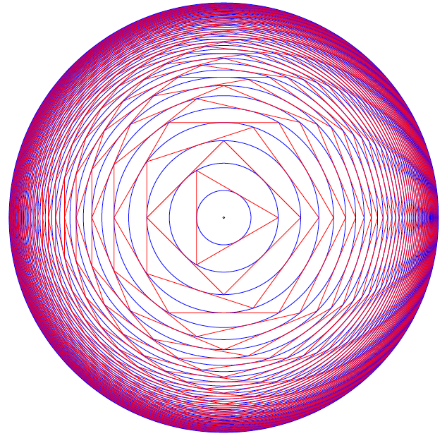
What is the radius of the outermost circle?
Is finding the value of the radius of the outermost circle an exercise/problem in discrete mathematics or continuous mathematics?
ABC
Always Begin Carefully with Sets and Logic.
When you read you begin with A, B, C; when you sing you begin with Do, Re, Mi; when you count you begin with 1, 2, 3 — or is it 0, 1, 2?! Mathematicians do both, and have logical reasons for each. Computer scientists mainly do zero-based counting, as coaxed to do by both hardware and software. 0-1-2; ready-set-goo!
So let’s begin with the set of positive integers, also known as the counting numbers — except, wait. How do you count the number of elements in the set with no elements, AKA the empty set? You need zero, which for centuries was not even considered a number. Lucky for us, these days zero is a full-fledged member of the set of natural numbers, another name for the counting numbers. But some still see zero as UNnatural and thus exclude it from the set. Right away, ambiguity rears its hoary head, and definitions must needs be clarified before crafting arguments that depend on whether zero is in or out.
A set is just a collection of objects, where objects are individual, discrete, separate things that can be named or identified somehow.
An object belonging to a set is called a member or an element of the set. In symbols, for a set S and object x:
x ∈ S
is the statement “ x is an element (or member) of S ” — or shorter, “ x is in S ”. For non-member y, the statement “ y is not in S ” is symbolized as
y ∉ S.
ABD
A collection that serves the mathematical idea of a set is an unordered one — the elements can be listed in any order and it does not change the set.
Speaking of lists, LISP originally stood for LISt Processor (or Processing), so let’s list some simple sets in lisp style, and show a side-by-side comparison with math style:
| Lisp Style | Math Style |
|---|---|
| () or nil | { } or ∅ |
| (A B C) | {A, B, C} |
| (Do Re Mi) | {Do, Re, Mi} |
| (1 2 3) | {1, 2, 3} |
| (0 1 2) | {0, 1, 2, …} |
Other than dispensing with commas and replacing curly braces with parentheses, lisp is just like math — except, wait. What are those three dots saying? In math, the ellipsis (…) is short for “and so on” which means “continue this way forever”. Since lisp is a computer programming language, where doing things forever is a bad idea, we truncated the set named \(\mathbb{N}\) after listing its first three members.
ABE
Also, no duplicates are allowed in sets. This requirement guarantees element uniqueness, a desirable attribute strangely yoked with element unorderliness, the other main (anti-)constraint. Here are three lispy sets (really lists):
(A B C) (A A B C) (A A A B C C)
Here are three more:
(B A C) (C A B) (B C A)
But by definition these are all the same set — (A B C) — so let’s just
make it a rule to quash duplicates when listing sets. And since order is
implied by the normal left-to-right listing order, we have a contradictory
situation where order is implied yet irrelevant. That really implies (linked)
lists are not the ideal data structure for representing sets, and (linkless)
vectors in elisp are not much better — they are simply indexable arrays of
(heterogeneous or homogeneous) elements — but let’s just say — stipulate
— that our rule also prefers vectors to lists. So the rule transforms a
mathy set like {A, C, C, C, B} into a lisp list (A C B) and thence to the
vector [A C B], which is now in a form that can be evaluated by the lisp
interpreter built into emacs.
An expression expresses some value in some syntactic form, and to evaluate means to reduce an expression to its value.
Evaluating an expression is typically done in order to hand it off to some further processing step.
OQP
The way to deal with lisp expressions is to look for lists, and when found,
evaluate them. Finding them is easy — lisp code consists of lists, and lists
of lists nested to many levels. Evaluating a list entails evaluating each of
its elements, except the first, which is treated differently. For now, think
of the first element as an operator that operates on the values of the rest of
the elements. These values are called the operands. So (+ 1 2 3 4) adds
together operands 1, 2, 3, and 4 to produce 10. Note the economy of this
prefix notation, as it’s called: only one mention of the + sign is needed.
The more familiar infix notation requires redundant + signs, as in
1+2+3+4.
Now is the time to overcome inertia and gain some momentum with elisp. Find at this link a mini-primer and work through it in emacs.
USV
Or pyrire jvgu ahzoref. Svaq n jnl gb vafreg vagb gurfr gra yvarf gur sbhe fgnaqneq zngu bcrengbef (+, -, \gvzrf, \qvi), be ! (snpgbevny), be \enqvp (fdhner ebbg), naq cneragurfrf sbe tebhcvat, gb znxr gra qvssrerag rkcerffvbaf gung rnpu rinyhngr gb 6. Sbe rknzcyr: \enqvp4 + \enqvp4 + \enqvp4 = 6.
| 0 | 0 | 0 | = | 6 | |||
| 1 | 1 | 1 | = | 6 | |||
| 2 | 2 | 2 | = | 6 | |||
| 3 | 3 | 3 | = | 6 | |||
| 4 | 4 | 4 | = | 6 | |||
| 5 | 5 | 5 | = | 6 | |||
| 6 | 6 | 6 | = | 6 | |||
| 7 | 7 | 7 | = | 6 | |||
| 8 | 8 | 8 | = | 6 | |||
| 9 | 9 | 9 | = | 6 | |||
ABF
We next turn our attention to a way to view statements about sets as
propositions with Boolean values (true or false). Recall that in lisp, true
is abbreviated t, and false nil. If you like, with some help from a pair
of global variables, you can be traditional and just use true and false.
A proposition is a sentence (or statement) that is either true or false. The sentence can be about anything at all (not just sets), as long as ascertaining its truth or falsity is feasible. The study called propositional logic deals with standalone and compound propositions, which are propositions composed of other propositions, standalone or themselves composite.
How to compose or combine propositions to create these compounds is coming after a few exercises in model building, starting with simple propositions.
A proposition: Man is mortal.
Another proposition: The sky is up.
A proposition about sets: The set of letters in the English Alphabet can be split into the set of vowels and the set of consonants.
A proposition about numbers: The square of a number is more than double that number.
One of the above propositions is false. Which one?
A non-proposition: Go to the back of the boat.
Another non-proposition: Why bother?
Building mental models requires raw materials — thought stuff — and the knowhow to arrange this stuff usefully. Both come more easily and more plentifully as you do exercises and work through problems.
UCA
Start your exercise warmup by thinking up three examples and three non-examples of propositions. Make them pithy.
ODS
Which of the following sentences are propositions? For each proposition, give its truth value (true or false).
- 2 + 2 = 4.
- 2 + 1 = 4.
- Toronto is the capital of Germany.
- Read these questions carefully.
- x + y + z = q.
- What time is it?
- 2x + 3 = 9.
- Simon says jump.
UGX
Put the proposition “ v is a member of the set of English alphabet consonants” in symbolic logic terms, using C as the name of the set of consonants.
OGR
Which of the following are simple (not compound) propositions?
- Weeks are shorter than months.
- Days are longer than hours and minutes.
- Hours are longer than minutes and seconds are shorter than minutes.
- People can fly or pigs can sing.
ABG
True propositions are AKA facts. A set of true propositions is called a knowledge base, which is just a database of facts. This set represents what we know about the world (or a subset of the world) or, in other words, the meaning or interpretation we attach to symbols (such as sentences — strings of words). Take a simple world:
- It is true that snow is white.
- It is false that grass is white.
Let’s assign the propositional variables p and q to these propositions
(made pithier) to make it easier to manipulate them:
p= “snow is white”q= “grass is white”
p and not q represents our interpretation of this world. We could imagine a
stranger world — stranger than the real one where we live — where p and
q (i.e., where snow is white and so is grass) or even not p and q (where
snow is green, say, and grass is white) is the real model.
A model is (roughly speaking) the meanings (interpretations) of symbols. In general, a model is all over the map, but in propositional logic, models are assignments of truth values to propositions (conveniently identified as variables).
As aforementioned, truth values are Boolean values, true or false. Period. No partly true or somewhat false, nor any other kind of wishy-washiness.
Decision-making ability is an important component of any programming language. Lisp is no exception. The conditional logic decidering of the basic logical connectives will be revealed by the following functions that you are encouraged to experiment with. The first three are built-in:
and |
or |
not |
xor |
|---|---|---|---|
| ∧ | ∨ | ¬ | ⊕ |
Naturally, not is not a connective in the sense of connecting two
propositions together, but it functions as a logical operator nonetheless. In
everyday life, “not” expresses negation, flipping truth values. When notted
(AKA negated) true becomes false, false becomes true.
For example, the negation of the proposition “Birds are singing” is “Birds are not singing” — or to put it more verbosely, “It is not the case that birds are singing” — which rendition unburdens us of the need to figure out where to insert “not” in the original proposition. We merely prefix any proposition with “It is not the case that” and be done with it. In symbols, prefix any proposition p with ¬ to get ¬ p and flip its truth sense.
For xor, the ‘exclusive’ or, we use the if form to do a
conditional expression with some clever not-using logic:
(defun xor (p q) (if p (not q) q))
We see that this works correctly with all four cases:
(setq true t false nil) (list (xor false false) (xor false true) (xor true false) (xor true true))
(nil t t nil)
UWM
Express in English the negation of each of these propositions:
- Two plus two equals four.
- Two plus one is less than four.
- Toronto is the capital of Germany.
- A total eclipse happens infrequently.
- Special measures must be taken to deal with the current situation.
OPZ
Let p and q be the propositions:
p: I studied.
q: I got an F on the test.
Express each of the propositions below as an English sentence:
- ¬ p
- p ∨ q
- p ∧ q
- ¬ p ∧ ¬ q
- ¬ p ∨ q
- ¬ (p ∨ q)
UOX
What other special forms besides if does elisp have for doing conditionals?
Why are they called “special”?
OTX
Determine whether these sentences use an inclusive or, or an exclusive or:
- A side of fries or chips comes with your sandwich.
- A high school diploma or a GED are needed for this position.
- To get your license, you must provide your social security card or birth certificate.
- We accept Mastercard or Visa credit cards.
- You can cash in your tickets or exchange them for a prize.
- Take it or leave it.
ABH
We can compose or combine propositions to create compound propositions by applying the following rules again and again (consider this a ‘grammar’ for generating these propositional ‘molecules’ from propositional ‘atoms’):
- A
propositionis a variable, that is, a single element from the set[p q r s t ...]; - alternatively, a
propositionis apropositionpreceded by anot; - alternatively, a
propositionis apropositionfollowed by aconnectivefollowed by aproposition. - A
connectiveis a single element from the set[and or xor].
Rules 2 and 3 have a recursive flavor, so said because they refer back to themselves; that is, they define a proposition in terms of itself, and also simpler versions of itself.
We actually need more syntactic structure to make sense of certain compounds. For example, building a proposition from scratch by starting with
proposition;
from thence applying rule 1 (choosing p) then rule 3 yields
p connective proposition;
from thence applying rule 4 (choosing and) yields;
p and proposition;
from thence applying rule 3 again yields
p and proposition connective proposition;
from thence applying 1 twice and 2 once yields
p and q connective not r;
from thence one more application of 4 (choosing or) yields the
not-further-expandable:
p and q or not r
Which is ambiguous. Does it mean p and s where s is q or not r? Or
does it mean s or not r where s is p and q? In other words, which is the
right interpretation, 1 or 2?
p and (q or not r); associating from the right.(p and q) or not r; associating from the left.
The mathematically astute reader will recognize that the parentheses are the extra syntactic sugar we need to sprinkle on to disambiguate (choose 1 or 2 (but not both)).
The next question is, does it matter? Try it both ways with the truth-value
assignment of p to true, q to false, and r to true:
Replacing p, q, and r with true, false, and true, respectively, in
p and (q or not r)
yields
true and (false or not true)
Before simplifying this expression, a quick review of how these connectives work:
The simplest “connective” first: not flips truth values, true becomes false,
false becomes true. To be true, or requires at least one of the two
propositions appearing on its left-hand-side (LHS) and its right-hand-side
(RHS) to be true. If both of them are false, their disjunction (a fancier
name for or) is false. To be true, and requires both propositions (LHS and
RHS) to be true. If even one of them is false, their conjunction (a fancier
name for and) is false.
Back to the task: the above expression simplifies to
true and (false or false)
from thence to
true and false
from thence to
false.
Replacing propositional variables with their values in
(p and q) or not r
yields
(true and false) or not true
which simplifies to
(true and false) or false
from thence to
false or false
and finally
false.
So they’re the same. But wait! What if we try a different assignment of truth
values? With all of p, q and r false, here is the evolving evaluation
for 1 (p and (q or not r)):
false and (false or not false)false and (false or true)false and truefalse
And here it is for 2 ((p and q) or not r):
(false and false) or not falsefalse or not falsefalse or truetrue
So it’s different — it does matter which form we choose. Let’s tabulate all possible truth-value assignments (AKA models) for each, and see how often they’re the same or not. First problem, how do we generate all possible assignments? Let’s use a decision tree:
ABI
 In this binary tree, each node (wherever it branches up or down) represents
a decision to be made. Branching up represents a choice of false, branching
down true. Going three levels (branch, twig, leaf) gives us the eight possibilities.
In this binary tree, each node (wherever it branches up or down) represents
a decision to be made. Branching up represents a choice of false, branching
down true. Going three levels (branch, twig, leaf) gives us the eight possibilities.
A truth table is a tabulation of possible models — essentially picking off the leaves of the tree from top to bottom (making each leaf a row).
Here’s an example:
| p | q | r | not r | (q or not r) | (p and (q or not r)) |
|---|---|---|---|---|---|
| false | false | false | true | true | false |
| false | false | true | false | false | false |
| false | true | false | true | true | false |
| false | true | true | false | true | false |
| true | false | false | true | true | true |
| true | false | true | false | false | false |
| true | true | false | true | true | true |
| true | true | true | false | true | true |
Numerically it makes sense to have, and indeed most other languages do have, 0
represent false. Lisp is an exception — 0 evaluates to non-nil (which is
not nil — not false). Having 1 represent true has advantages, too,
although MOL treat anything non-zero as true as well. Still, it’s less
typing, so we’ll use it to save space — but keep in mind, the
arithmetization of logic is also instructive because of how it enables
certain useful encodings. Here’s the same truth table in a more compact form:
| (p | ∧ | (q | ∨ | ¬ | r)) |
|---|---|---|---|---|---|
| 0 | 0 | 0 | 1 | 1 | 0 |
| 0 | 0 | 0 | 0 | 0 | 1 |
| 0 | 0 | 1 | 1 | 1 | 0 |
| 0 | 0 | 1 | 1 | 0 | 1 |
| 1 | 1 | 0 | 1 | 1 | 0 |
| 1 | 0 | 0 | 0 | 0 | 1 |
| 1 | 1 | 1 | 1 | 1 | 0 |
| 1 | 1 | 1 | 1 | 0 | 1 |
UOT
Return to the task of comparing the two expressions:
p and (q or not r)(p and q) or not r
Build a truth table of expression 2 and compare it with the truth table of expression 1 given just above.
ABJ
Let it be. Let it go. Let it go so. Let it be so. Make it so.
Let p be prime. In lisp, something like p is called a symbol, and you can
treat a symbol essentially like a variable, although it is much more than
that.
Let something be something is a very mathy way of speaking. So lisp allows
somethings to be other somethings by way of the keyword let.
Like God, who said let there be light, and there was light, the programmer
commands and is obeyed. The keyword let binds symbols to values, fairly
commanding them to stand in for values. Values evaluate to themselves. Symbols
evaluate to the values they are bound to. An unbound symbol cannot be
evaluated. If you try it, an error results.
Before doing some exercises, let’s look at let syntactically and abstractly:
(let <frame> <body>)
The <frame> piece is a model in the form of a list of bindings. Just as we
modeled truth-value assignments as, e.g., p is true and q is false, in
list-of-bindings form this would be ((p true) (q false)). A binding is a
two-element list (<var> <val>). Variables can be left unbound, so for
example, (let ((a 1) (b 2) c) ...) is perfectly acceptable. It assumes c
will get a value later, in the <body>.
The <body> is a list of forms to be evaluated — forms that use the
bindings established in the frame model.
The frame list can be empty, as in:
(let () 1 2 3)
Alternatively:
(let nil 1 2 3)
The value of this symbolic expression is 3, the value of the last form before the closing parenthesis (remember, numbers self-evaluate).
ABK
Let’s combine the truth tables for the binary logical operators, ∧, ∨, and ⊕:
| \(\mathsf{p}\) | \(\mathsf{q}\) | \(\mathsf{p} \land \mathsf{q}\) | \(\mathsf{p} \lor \mathsf{q}\) | \(\mathsf{p} \oplus \mathsf{q}\) |
|---|---|---|---|---|
| 0 | 0 | 0 | 0 | 0 |
| 0 | 1 | 0 | 1 | 1 |
| 1 | 0 | 0 | 1 | 1 |
| 1 | 1 | 1 | 1 | 0 |
Keep these in mind as we explore propositions involving set membership in various forms.
To forge the link between sets and logic, we will go visual and then formal. Drawing pictures helps us visualize the abstract, as set theorists and logicians discovered early on. The most common visual representation is the diagram named after its inventor.
In Venn diagrams, sets are usually represented as circles or ellipses. If they overlap, the shape of the region of overlap is not a circle or ellipse, it is a lens-like shape (for a two-set diagram). Let’s be more consistent and make everything a rectangle. Here are two sets, A drawn as a blue rectangle, B, drawn as a yellow rectangle, and their intersection the green rectangle:
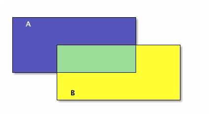
The union of A and B is everything blue:
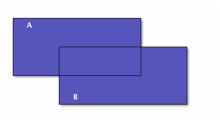
Let’s do these operations in lisp also:
(setq A [1 2 3 4 5 6 7 8] B [5 6 7 8 9 10 11 12] A-intersect-B [5 6 7 8])
[5 6 7 8]
(setq A [1 2 3 4 5 6 7 8] B [5 6 7 8 9 10 11 12] A-union-B [1 2 3 4 5 6 7 8 9 10 11 12])
[1 2 3 4 5 6 7 8 9 10 11 12]
Now we make A and B smaller so they don’t overlap:
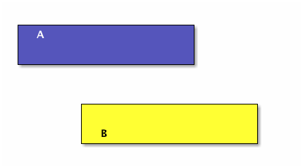
A and B have an empty intersection — no elements in common.
Two sets A and B are disjoint if A intersect B = ∅. More than two sets are pairwise (or mutually) disjoint if no two of them have a non-empty intersection. In other words, pick any two of many sets, the intersection of the pair of them is always empty.
(setq A [1 2 3] B [4 5 6] C [7 8 9] D [10 11 12] A-intersect-B [] A-intersect-C [] A-intersect-D [] B-intersect-C [] B-intersect-D [] C-intersect-D [])
[]
In the following figure A, B, and C are mutually disjoint:
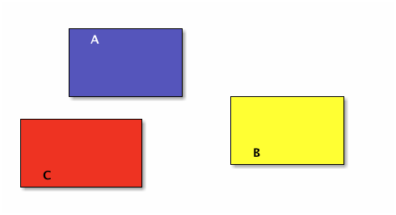
Now make them bigger so they overlap, and thus are no longer pairwise disjoint:
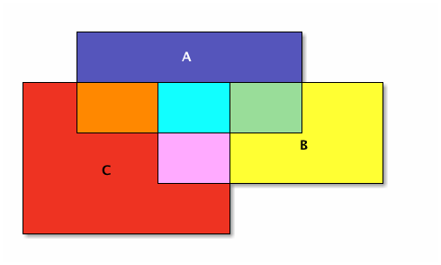
The seven different-colored regions have different set operations that define them, shown in a table after defining the different set operations.
First let’s go back to two sets and make B entirely contained in A, in other words, every element of B is also an element of A (but not vice-versa):
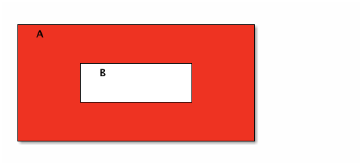
In all of these diagrams, we haven’t been showing but rather leaving implied the Universal set that is outside all of the drawn sets. To show set complement, however, it helps to have an explicit Universal set. Let’s promote set A to be the Universal set.
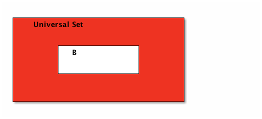
Set B’s complement is the red region; i.e., everything in the universe except what’s in B.
Now let’s formally define these set operations and see how they correspond to logic operations. If A and B are sets, then:
The union of A and B, denoted A \(\cup\) B, is the set with members from A or B or both.
The intersection of A and B, denoted A ∩ B, is the set with members in common with A and B.
The difference of A and B, denoted A \ B, is the set with members from A but not B.
The complement of B, denoted \(\overline{\mathsf{B}}\), is the set with members not in B.
Note that if an element is in A but not in B, or if it is in B but not in A, then it is not in the intersection of A and B.
The overlapping 3-sets colorfully introduced above is reproduced below with numeric identifiers added for easier cross-referencing in the table that follows:
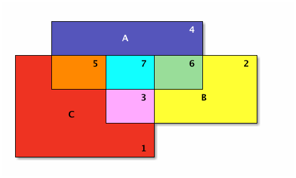
| Number | Color | Set | A | B | C |
|---|---|---|---|---|---|
| 1 | Red | \(\overline{\mathsf{A}} \cap \overline {\mathsf{B}} \cap \mathsf{C}\) | 0 | 0 | 1 |
| 2 | Yellow | \(\overline{\mathsf{A}} \cap \mathsf{B} \cap \overline{\mathsf{C}}\) | 0 | 1 | 0 |
| 3 | Pink | \(\overline{\mathsf{A}} \cap \mathsf{B} \cap \mathsf{C}\) | 0 | 1 | 1 |
| 4 | Blue | \(\mathsf{A} \cap \overline{\mathsf{B}} \cap \overline{\mathsf{C}}\) | 1 | 0 | 0 |
| 5 | Orange | \(\mathsf{A} \cap \overline{\mathsf{B}} \cap \mathsf{C}\) | 1 | 0 | 1 |
| 6 | Green | \(\mathsf{A} \cap \mathsf{B} \cap \overline{\mathsf{C}}\) | 1 | 1 | 0 |
| 7 | Sky Blue | \(\mathsf{A} \cap \mathsf{B} \cap \mathsf{C}\) | 1 | 1 | 1 |
OIM
What is the correlation between the first three columns and the last three columns in this table?
UIN
What is the set difference between the set of letters in the English alphabet and the set of letters in the Hawaiian alphabet?
ABL
Now let p be the proposition ‘x ∈ A’ and let q be the proposition ‘x ∈ B’. Recall that ‘∈’ means “is in” and ‘∉’ means “is not in” and observe:
| Logical Statement | Equivalent Set Operation Statement |
|---|---|
| ¬ p | \(x \notin \mathsf{A}\) (or \(x \in \overline{\mathsf{A}}\)) |
| p ∨ q | \(x \in \mathsf{A} \cup \mathsf{B}\) |
| p ∧ q | \(x \in \mathsf{A} \cap \mathsf{B}\) |
| p ∧ ¬ q | \(x \in \mathsf{A} \setminus \mathsf{B}\) (or \(\mathsf{A} \cap \overline{\mathsf{B}}\)) |
| p ⊕ q | \(x \in (\mathsf{A} \cup \mathsf{B}) \setminus (\mathsf{A} \cap \mathsf{B})\) |
This last row, the xor logic operator, corresponds to what is called the
symmetric difference of A and B. With that, it is time to bring De
Morgan’s laws for logic and sets into the picture, first making explicit the
correspondence between logical and set operations:
| Logic | Symbol | Symbol | Set |
|---|---|---|---|
| conjunction | ∧ | \(\cap\) | intersection |
| disjunction | ∨ | \(\cup\) | union |
| negation | ¬ | \(\overline{\hspace{1em}}\) | complement |
De Morgan’s laws for logic state that the negation of a conjunction is the disjunction of negations; likewise, the negation of a disjunction is the conjunction of negations. De Morgan’s laws for sets state that the complement of an intersection is the union of complements; likewise, the complement of a union is the intersection of complements. In symbols:
| Logic | Equivalent Logic | Sets | Equivalent Sets |
|---|---|---|---|
| ¬ (p ∧ q) | ¬ p ∨ ¬ q | \(\overline{\mathsf{A} \cap \mathsf{B}}\) | \(\overline{\mathsf{A}} \cup \overline{\mathsf{B}}\) |
| ¬ (p ∨ q) | ¬ p ∧ ¬ q | \(\overline{\mathsf{A} \cup \mathsf{B}}\) | \(\overline{\mathsf{A}} \cap \overline{\mathsf{B}}\) |
| p ⊕ q | p ∨ q ∧ ¬ (p ∧ q) | \((\mathsf{A} \cup \mathsf{B}) \cap \overline{\mathsf{A} \cap \mathsf{B}}\) | \((\mathsf{A} \cup \mathsf{B}) \cap (\overline{\mathsf{A}} \cup \overline{\mathsf{B}})\) |
In pictures, the symmetric difference of A and B is everything red, and
this set operation corresponds directly to the ⊕ (xor) logic operation:
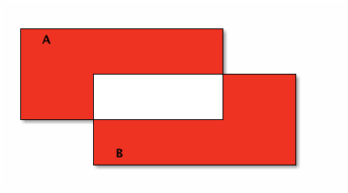
Note that the upper red region corresponds to A ∖ B, and the lower red region corresponds to B ∖ A. The union of these two differences is the symmetric difference, just as the exclusive or is one or the other, but not both.
Let’s redraw our colorful Venn diagram to emphasize the separation between each numbered (colored) region — separate in the sense that each is a non-overlapping subset.
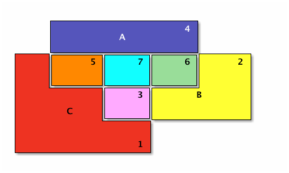
With the separateness of the numbered regions made clear, we can reconstruct each set in terms of unions of those regions.
OJL
Justify where \(p = x \in A, q = x \in B, r = x \in C\):
| Set | As Union of | Logic ≡ Set Operation Description |
|---|---|---|
| A | 4 ∪ 5 ∪ 7 ∪ 6 | \((p \land \lnot q \land \lnot r) \lor (p \land \lnot q \land r) \lor (p \land q \land r) \lor (p \land q \land \lnot r)\) |
| B | 2 ∪ 3 ∪ 7 ∪ 6 | \((\lnot p \land q \land \lnot r) \lor (\lnot p \land q \land r) \lor (p \land q \land r) \lor (p \land q \land \lnot r)\) |
| C | 1 ∪ 3 ∪ 5 ∪ 7 | \((\lnot p \land \lnot q \land r) \lor (\lnot p \land q \land r) \lor (p \land \lnot q \land r) \lor (p \land q \land r)\) |
UCG
Let set A = [verve vim vigor], set B = [butter vinegar pepper vigor].
For each of the following set operations, give its resulting members (as a
vector of symbols):
- The set of words that are in A or B; call this set C.
- The set of words that are in A and B; call this set D.
- The subset of set C of words that start with ‘v’.
- The subset of set C of words that end with ‘r’.
- The subset of set C of words that start with ‘v’ and end with ‘r’.
- The subset of set D of words that have six letters.
ABM
Now, the fact of B being ‘entirely contained’ in A shown above has another shorter way to say it, which note involves a conditional:
B is a subset of A, denoted B \(\subseteq\) A, means that if \(x \in\) B then \(x \in\) A.
A is a superset of B, denoted A \(\supseteq\) B, means that B is a subset of A.
B is a proper subset of A, denoted B \(\subset\) A, means that there is some element of A that is not in B. In other words, A is strictly speaking ‘bigger’ than B.
A is a proper superset of B, denoted A \(\supset\) B, means that B is a proper subset of A.
| Logical Statement | Equivalent Set Statement |
|---|---|
| p → q | \(\mathsf{A} \subseteq \mathsf{B}\) |
| p ← q (or q → p) | \(\mathsf{A} \supseteq \mathsf{B}\) (or \(\mathsf{B} \subseteq \mathsf{A}\)) |
| p ↔ q | \(\mathsf{A} \subseteq \mathsf{B} \land \mathsf{B} \subseteq \mathsf{A}\) (or \(\mathsf{A} = \mathsf{B}\)) |
The last row’s biconditional means that if each of two sets is a subset of the other, then the sets are equal — they are the same set. If we turn sets into numbers (by lowercasing their names) then this is entirely analogous to saying: a ≤ b ∧ b ≤ a → a = b. While thinking of numbers, another analogy that is helpful is to see the subset relation as a “less-than-or-equal-to” relation, which mirrors the similarity of the symbols, so \(\mathsf{A} \subseteq \mathsf{B} \Leftrightarrow \mathsf{a} \le \mathsf{b}\). Not just analogously, but in actuality thus it is if a denotes the size (number of elements of) A, written as a = | A | (note the overloaded use of the vertical bars), and ditto for b = | B |.
OIO
Here is a “setq chain” illustrating subset size compared to superset size:
(setq A [s i z e] a 4 B [b i g g e r i n s i z e] b 12 A-is-a-subset-of-B t a-is-less-than-or-equal-to-b t)
Write or find built-in functions so that you can revise this chain of
assignments to avoid the literals 4, 12 and t, instead replacing
them with function calls.
UIJ
The following Venn diagram numbers three regions of a set B with a subset A relationship within a Universal set U:
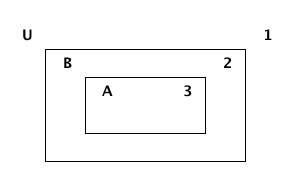
Make a connection between the logical conditional operator (→) and the definition of a subset. Refer to the three numbered regions in your answer.
OQT
Let p and q be the propositions:
p: I studied.
q: I got an A on the test.
Express each of the propositions below as an English sentence:
- p → q
- ¬ p ∨ ¬ q
- ¬ p → (p ∨ q)
- ¬ p → ¬ q
UTQ
Let p and q be the propositions:
p: You applied for admission at BYU-Idaho.
q: You were accepted.
Express these sentences as propositions using logical connectives.
- You applied for admission at BYU-Idaho and were accepted.
- You did not apply for admission at BYU-Idaho but were still accepted.
- You applied for admission at BYU-Idaho but were not accepted.
- Either you did not apply for admission at BYU-Idaho and didn’t get accepted or you did apply and got accepted.
OYU
There are many different ways in English to put the same conditional statement, ‘if p then q’. Here are four:
- omit the ‘then’
- if p, q
- reversed
- q if p
- ‘whenever’ means ‘if’
- whenever p, q (or q whenever p)
- p → q
- (pronounced) p only if q.
Find at least four other ways.
UOH
Let p and q be the propositions:
p: You applied for admission at BYU-Idaho.
q: You were accepted.
Express these sentences as propositions using logical connectives:
- Your applying for admission at BYU-Idaho is necessary for your being accepted.
- Your being accepted is a sufficient condition for your applying for admission at BYU-Idaho.
- Your applying for admission at BYU-Idaho is necessary and sufficient for your being accepted.
OZD
Determine whether these conditional statements are true or false:
- If 2 + 2 = 4, then pigs can fly.
- If 2 + 7 = 5, then Elvis Presley is still alive.
- If pigs can fly, then dogs can’t fly.
- If dogs have four legs, then ostriches have two legs.
UZM
Determine whether these biconditionals are true or false:
- 2 + 1 = 3 if and only if 1 + 2 = 3.
- 1 + 2 = 3 if and only if 3 + 1 = 6.
- 1 + 3 = 2 if and only if the earth is flat.
- 1 < 2 if and only if 2 < 3.
OOY
Write each of these sentences as ‘if p, then q’ statements:
- It is necessary to sign up to win the contest.
- I get a cold whenever I go outside.
- It is sufficient to be an A student to receive the scholarship.
- As long as you leave now, you will get there on time.
- I’ll get half off if I act now.
UFZ
Investigate the variations of conditional statements known as the converse, the inverse and the contrapositive.
OKJ
Write the converse, inverse, and contrapositive of each of these statements:
- If it rains today, we won’t go to the park.
- If you do your homework, I’ll give you a pat on the back.
- Whenever I babysit, I get sick.
- Every time there is a quiz, I go to class.
- I wake up late when I stay up past my bedtime.
UVH
Construct a truth table for each of these propositions:
- \(\mathsf{p} \rightarrow \mathsf{q}\)
- \(\mathsf{p} \oplus \mathsf{q}\)
- \(\mathsf{p} \rightarrow \mathsf{q}\)
- \(\lnot \mathsf{p} \rightarrow \mathsf{q}\)
- \(\mathsf{p} \wedge \lnot \mathsf{q}\)
OJM
Construct a truth table for each of these propositions:
- \(\mathsf{p} \rightarrow (\lnot \mathsf{p})\)
- \(\mathsf{p} \leftrightarrow \mathsf{q}\)
- \(\mathsf{p} \leftrightarrow (\lnot \mathsf{p})\)
- \(\mathsf{p} \land \mathsf{p}\)
- \(\mathsf{p} \lor \mathsf{p}\)
ULQ
Construct a truth table for (p → q) → (q → r) → (r → s).
OTD
Construct a truth table for (p ∨ q) ∧ (¬ p ∨ r) → (q v r).
ABN
Being a logical language, the propositional calculus obeys certain laws. The main law is that some propositions are logically equivalent to others.
Two compound propositions \(p\) and \(q\) are logically equivalent, signified
\(p \equiv q\)
when they have the same truth values under every model. This equivalence is expressed operationally by saying that the biconditional
\(p \leftrightarrow q\)
is always true.
Special terms exist for this type of iff, its opposite, and neither it nor its opposite:
A tautology is a proposition that is always true.
A contradiction is a proposition that is always false.
A contingency is a proposition that is neither a tautology nor a contradiction, but is sometimes true, sometimes false.
An example of each:
- p ∨ ¬ p
- is a tautology.
- p ∧ ¬ p
- is a contradiction.
- p → q
- is a contingency.
UJU
Use truth tables to verify the commutative laws.
- \(p \vee q \equiv q \vee p\)
- \(p \wedge q \equiv q \wedge p\)
OLH
Use truth tables to verify the associative laws.
- \((p \vee q) \vee r \equiv p \vee (q \vee r)\)
- \((p \wedge q) \wedge r \equiv p \wedge (q \wedge r)\)
UWY
Use truth tables to verify the distributive laws.
- \(p \wedge (q \lor r) \equiv (p \wedge q) \lor (p \wedge r)\).
- \(p \vee (q \wedge r) \equiv (p \vee q) \wedge (p \vee r)\).
OBW
Use truth tables to verify De Morgan’s laws:
- \(\neg (p \vee q) \equiv \neg p \wedge \neg q\)
- \(\neg (p \wedge q) \equiv \neg p \vee \neg q\)
USL
Use truth tables to verify some miscellaneous laws, letting \(\mathbf{1}\) = true, \(\mathbf{0}\) = false:
- \(p \land \mathbf{1} \equiv p\) (idempotence)
- \(p \lor \mathbf{0} \equiv p\) (idempotence)
- \(\lnot \lnot p \equiv p\) (double negation)
- \(p \land \mathbf{0} \equiv \mathbf{0}\) (absorption)
- \(p \lor \mathbf{1} \equiv \mathbf{1}\) (absorption)
OYP
Match the following set identities with their counterparts in the miscellaneous logic laws:
- A ∩ U = A
- A ∪ U = U.
- A ∪ ∅ = A.
- A ∩ ∅ = ∅.
- \(\overline{\overline{\mathsf{A}}} = \mathsf{A}\).
UBV
Use DeMorgan’s Laws to find the negations of the propositions:
- Winning the first round is necessary for winning the trophy.
- Winning the tournament is sufficient for winning the trophy.
- I am powerful and successful.
- You can pass or fail this test.
- Getting an A on the final exam is necessary and sufficient for passing this class.
OKQ
Show that \((p \leftrightarrow q) \wedge (p \leftrightarrow r)\) and \(p \leftrightarrow (q \wedge r)\) are logically equivalent.
UKF
Show that \(\neg(p \leftrightarrow q)\) and \(p \leftrightarrow \neg q\) are logically equivalent.
OKL
Determine if \((p \vee q) \wedge (\neg p \vee r) \rightarrow (q \vee r)\) is a tautology.
UEZ
Find a compound proposition involving the propositional variables p, q, and r that is true when p and q are true and r is false, but is false otherwise.
ABO
After some good practice constructing truth tables, the time is ripe for exercising some code in a truth-table generator context:
OYW
(defun --> (p q) "Conditional: p only if q" (or (not p) q)) (defun <--> (p q) "Biconditional: p if and only if q" (and (--> p q) (--> q p))) (defun valid-connective (op) (or (eq op 'and) (eq op 'or) (eq op 'xor) (eq op '-->) (eq op '<-->)))
The prop-eval function evaluates propositions that are based on vectors of
symbols, prompting the user for their truth values, combining them two-by-two
with the valid connectives, and minimally formatting the output. It even
checks for errors!
(defun prop-eval (prop) (unless (and (vectorp prop) (= 3 (length prop)) (valid-connective (elt prop 1))) (error "bad parameters")) (let* ((op (elt prop 1)) (l (eval (elt prop 0))) (r (eval (elt prop 2))) (lval (y-or-n-p (mapconcat 'symbol-name l " "))) (rval (y-or-n-p (mapconcat 'symbol-name r " "))) (result (eval (list op lval rval)))) (list l (list lval) op r (list rval) 'yields result)))
Try it with a couple of compound propositions:
(let* ((p [It is raining]) (q [The grass is wet]) (p-and-q [p and q])) (prop-eval p-and-q))
([It is raining] (t) and [The grass is wet] (t) yields t)
(let* ((p [It is raining]) (q [The grass is wet]) (p-onlyif-q [p --> q])) (prop-eval p-onlyif-q))
([It is raining] (t) --> [The grass is wet] (nil) yields nil)
You try it with the other three connectives.
UEF
Study this fancier version of prop-eval (and supporting cast). Note that
this code only works for simple propositions consisting of three symbols — l
op r, to abbreviate. How would you make it handle more complex propositions?
(defun stringify (prop) (let* ((str (mapconcat 'symbol-name prop " "))) (downcase (substring str 0 (- (length str) 1))))) (defun fancier-prompt (str) (let* ((prompt (concat "Is it the case that " str "? ")) (answer (y-or-n-p-with-timeout prompt 5 t))) (princ (format "Given %s is %s\n" str (if answer 'true: 'false:))) answer)) (defun fancier-output (result l op r) (princ (format "It is %s that %s %s %s.\n" (if result 'true 'false) l op r))) (defun prop-eval (prop) (unless (and (vectorp prop) (= 3 (length prop)) (valid-connective (elt prop 1))) (error "bad parameters")) (let* ((op (elt prop 1)) (l (eval (elt prop 0))) (r (eval (elt prop 2))) (lstr (stringify l)) (rstr (stringify r)) (lval (fancier-prompt lstr)) (rval (fancier-prompt rstr)) (result (eval (list op lval rval)))) (fancier-output result lstr op rstr)))
Note the periods to close sentences properly and allow stringify to do its
job better:
(let* ((p [It is raining.]) (q [The grass is wet.]) (p-onlyif-q [p --> q])) (prop-eval p-onlyif-q))
Given it is raining is true: Given the grass is wet is true: It is true that it is raining --> the grass is wet.
OUB
Implement the reverse conditional function (<--).
Find two shorter ways to correctly implement the biconditional function (<-->).
UQY
This is an exercise in implementing logic gate Boolean functions to generate truth tables of compound Boolean functions.
Specifically, your task is to implement the not1, or2 and and2
functions, arithmetically (i.e., do not use any conditional logic — if
or cond or the like). Use only the operators +, -, and *. The inputs to
these three functions will be zeros or ones only. You’ll know you got it right
when you only get t from evaluating the final three code blocks.
(defun not1 (x) ;; implement me ) (defun and2 (x y) ;; implement me ) (defun or2 (x y) ;; implement me )
(defun truth-table-row-inputs (i) (elt [[0 0 0] [0 0 1] [0 1 0] [0 1 1] [1 0 0] [1 0 1] [1 1 0] [1 1 1]] i)) (defun truth-table-row-with-output (i func) (let* ((inputs (append (truth-table-row-inputs i) nil)) (output (apply func inputs))) (apply 'vector (append inputs (list output))))) (defun f1 (p q r) (or2 (and2 p q) (not1 r))) (defun f2 (p q r) (and2 p (or2 q (not1 r)))) (defun f3 (p q r) (or2 p (and2 q r))) (defun generate-truth-table-for (func) (vector (truth-table-row-with-output 0 func) (truth-table-row-with-output 1 func) (truth-table-row-with-output 2 func) (truth-table-row-with-output 3 func) (truth-table-row-with-output 4 func) (truth-table-row-with-output 5 func) (truth-table-row-with-output 6 func) (truth-table-row-with-output 7 func)))
(equal (generate-truth-table-for 'f1) [[0 0 0 1] [0 0 1 0] [0 1 0 1] [0 1 1 0] [1 0 0 1] [1 0 1 0] [1 1 0 1] [1 1 1 1]])
(equal (generate-truth-table-for 'f2) [[0 0 0 0] [0 0 1 0] [0 1 0 0] [0 1 1 0] [1 0 0 1] [1 0 1 0] [1 1 0 1] [1 1 1 1]])
(equal (generate-truth-table-for 'f3) [[0 0 0 0] [0 0 1 0] [0 1 0 0] [0 1 1 1] [1 0 0 1] [1 0 1 1] [1 1 0 1] [1 1 1 1]])
DEF
Do Everything First with Functions.
Dueling Priorities — Which Will Win?
(Work Will Win When Wishy-Washy Wishing Won’t!)
DEG
Til has assigned a lot of homework. Ila complains to Abu about it. Abu is sympathetic.
“I mostly get the logical connectives, which why we don’t just call them operators is what I don’t get. They’re the same as the logical operators in JavaScript, and …” Abu interrupted Ila’s rant. “What’s JavaScript?”, he asked. “It’s a programming language — the one I mostly program in. Anyway, what I also don’t get is the conditional operator. It just seems illogical that it’s defined the way it is. How did Til put it?”
“I believe he said ‘p only if q is true, except when p is more true than q’,” said Abu.
“That’s what I’m talking about, what does ‘more true than’ mean? Something is either true or it’s not. How can it be ‘more true’? Truer than true??”
“Well, here’s how I see it,” said Abu. “When they have the same truth value, both true or both false, neither is more or less than the other, they’re equal.”
Ila felt her face go red. “Oh, now I get it — a true p is greater than a false q. And the last case, when p is false and q is true, p is less true than q. Way less, because it has zero truth.”
“Irrelevant to the truth of q,” said Abu. “I drew its truth table, like Til asked, and only one row is false, the rest true. Perhaps you drew it this way too?”
| p | q | p → q |
|---|---|---|
| 0 | 0 | 1 |
| 0 | 1 | 1 |
| 1 | 0 | 0 |
| 1 | 1 | 1 |
Ila frowned. “Mine has the last column centered under the arrow, but otherwise it’s the same as yours.”
“I like centered better,” said Abu. “Til will be glad we get it, I think, but do you think he was going to explain it some more?”
“He will if we ask, but I don’t want to ask him — will you?” said Ila. “No problem,” said Abu. “I don’t mind appearing ignorant, because appearances aren’t deceiving in my case — I really AM ignorant!” “Well, I hate asking dumb questions,” said Ila. “Never been a problem for me,” said Abu with a slow exhalation.
Ila voiced her other main complaint. “And I’m still floored that he said, go learn lisp, it will do you good.” Abu nodded. “I agree that seems like a lot to ask, but I’m enjoying the challenge. Lisp is cool!” Ila sighed. “It certainly lives up to its name: Lots of Irritatingly Silly Parentheses, and if you ask me, it’s just confusing.” Abu smiled. “I found this xkcd comic that compares lisp to a Jedi’s lightsaber. See, I got the Star Wars reference. And by the way, just to show you what planet I’m from, I went and watched Aladdin. So let’s see, Chewbacca is Abu to Han Solo’s Aladdin, right!” “Hardly,” said Ila. “So you saw the movie and you still want us to call you Abu?!”
DEH
“Think of it this way,” said Til. “Inside versus Outside. With your mind’s eye, visualize a couple of circles, two different sizes, the smaller inside the larger. Make them concentric. Okay? Now consider the possibilities. Can something be inside both circles simultaneously?”
Abu and Ila nodded simultaneously.
“That’s your p-and-q-both-true case. Now, can something be outside both circles? Yes, obviously. That’s your p-and-q-both-false case. And can something be inside the outer circle without being inside the inner one? Yes, and that’s when p is false and q is true.”
Ila was feeling a tingle go up her spine. She blurted, “I see it! The only impossibility is having something inside the inner circle but not inside the outer — p true and q false. Makes perfect sense!”
Til beamed. “You got it, Ila! How about you, Abu?”
Abu just smiled and nodded his head.
“Would you please explain ‘let’ more?” said Ila. She was getting past her reluctance to ask questions, and it felt great!
“Think cars,” said Til. “A car has a body built on a frame, just like a let has a body built on a frame. But without an engine and a driver, a car just sits there taking up space. The lisp interpreter is like the engine, and you, the programmer, are the driver.”
Abu had a thought. “A computer also has an engine and a driver, like processor and programmer, again. But cars contain computers, so I doubt equating a car with a computer makes sense.”
Til agreed. “You see a similarity but also a big difference in the two. A car is driven, but the only thing that results is moving physical objects (including people) from here to there. That’s all it does, that’s what it’s designed to do. But a computer is designed to do whatever the programmer can tell it to do, subject to the constraints of its design, which still — the space of possibilities is huge.”
Ila was puzzled. “Excuse me, but what does this have to do with ‘let’?”
Til coughed. “Well, you’re right, we seem to be letting the analogy run wild. Running around inside a computer are electrons, doing the ‘work’ of computation, electromagnetic forces controlling things just so. It’s still electromagnetics with a car, for example, combustion of fuel. But these electromagnetic forces are combined with mechanical forces to make the car go.”
“Just think of ‘let’ as initiating a computational process, with forces defined by the lisp language and interacting via the lisp engine with the outside world. Then letting computers be like cars makes more sense. Do you recall that a lisp program is just a list?”
Abu nodded, but interjected. “It’s really a list missing its outermost parentheses, right?”
Til’s glint was piercing. “Ah, but there’s an implied pair of outermost parentheses!”
Ila fairly stumbled over her tongue trying to blurt out. “And a ‘let nil’ form!”
Now it was Abu’s turn to be puzzled. He said, “Wait, why nil?” Ila rushed on, “It just means that your program can be self-contained, with nil extra environment necessary to run. Just let it go, let it run!”
DEI
Let’s leave ‘let’ for now, and take another look at lisp functions that we can define via the defun special form.
(defun <parameter-list> [optional documentation string] <body>)
A few examples of defining functions via defun were given above and in the
elisp mini-primer. Note that this language feature is convenient, but not
strictly necessary, because any function definition and call can be replaced
with a let form, where the frame bindings are from the caller’s
environment.
For example, the function list-some-computations-on, defined and invoked
(another way to say called) like this:
(defun list-some-computations-on (a b c d) "We've seen this one before." (list (+ a b) (/ d b) (- d a) (* c d))) (list-some-computations-on 1 2 3 4)
This definition/call has exactly the same effect as:
(let ((a 1) (b 2) (c 3) (d 4)) (list (+ a b) (/ d b) (- d a) (* c d)))
Of course, any procedural (or object-oriented) programmer knows why the first way is preferable. Imagine the redundant code that would result from this sequence of calls if expanded as above:
(list-some-computations-on 1 2 3 4) (list-some-computations-on 5 6 7 8) ;;... (list-some-computations-on 97 98 99 100)
Functions encapsulate code modules (pieces). Encapsulation enables modularization. The modules we define as functions become part of our vocabulary, and a new module is like a new word we can use instead of saying what is meant by that word (i.e., its definition) all the time.
But stripped down to its core:
A function is just an object that takes objects and gives other objects.
Speaking completely generally, these are objects in the ‘thing’ sense of the word, not instances of classes as might be the case if we were talking about object-oriented programming.
The question arises: Are there any restrictions on what objects can be the inputs to a function (what it takes) and what objects can be the outputs of a function (what it gives)? Think about and answer this question before looking at the endnote.
Again, a function is simply an object, a machine if you will, that produces outputs for inputs. Many terms describing various kinds and attributes of functions and their machinery have been designed and pressed into mathematical and computer scientific service over the years:
- domain is the term for the set of all possible inputs for a function. (So functions depend on sets for their complete and rigorous definitions.)
- codomain is the set of all possible outputs for a function.
- range is the set of all actual outputs for a function (may be different — smaller — than the codomain).
- onto describes a function whose range is the same as its codomain (that is, an onto function produces (for the right inputs) all possible outputs).
- surjective is a synonym for onto.
- surjection is a noun naming a surjective function.
- one-to-one describes a function each of whose outputs is generated by only one input.
- injective is a synonym for one-to-one.
- injection is a noun naming an injective function.
- bijective describes a function that is both one-to-one and onto.
- bijection is a noun naming a bijective function.
- recursive describes a function that calls itself.
- arguments are the inputs to a function (argument “vector” (argv)).
- arity is short for the number of input arguments a function has (argument “count” (argc)).
- k-ary function — a function with k inputs.
- unary – binary – ternary — functions with 1, 2 or 3 arguments, respectively.
- infix notation describes a binary function that is marked as a symbol between its two arguments (rather than before).
- prefix notation describes a k-ary function that is marked as a symbol (such as a word (like list)) before its arguments, frequently having parentheses surrounding the arguments, but sometimes (like in lisp) having parentheses surrounding symbol AND arguments.
- postfix notation describes a function that is marked as a symbol after its arguments. Way less common.
- image describes the output of a function applied to some input (called the pre-image of the output).
DEJ
So the image of 2 under the square function is 4. The square function’s pre-image of 4 is 2. Since the square function (a unary, or arity 1 function) is a handy one to have around, we defun it next:
(defun square (number) "Squaring is multiplying a number by itself, AKA raising the number to the power of 2." (* number number))
There are many one-liners just itching to be defuned (documentation string (doc-string for short) deliberately omitted):
(defun times-2 (n) (* 2 n)) (defun times-3 (n) (* 3 n))
Let’s give one we’ve seen before a doc-string, if only to remind us what the ‘x’ abbreviates:
(defun xor (p q) "Exclusive or." (if p (not q) q))
How about ‘not’ with numbers?
(defun not-with-0-1 (p) (- 1 p))
As written, all of these one-liner functions are problematic, take for example
the last one. The domain of not-with-0-1 is exactly the set [0 1], and
exactly that set is its codomain (and range) too. Or that’s what they should
be. Restricting callers of this function to only pass 0 or 1 is a non-trivial task,
but the function itself can help by testing its argument and balking if given
something besides 0 or 1. Balking can mean many things — throwing an
exception being the most extreme.
We next examine conditions for functions being onto versus one-to-one.
A necessary condition for a function to be onto is that the size of its codomain is no greater than the size of its domain. In symbols, given f : A → B, Onto(f) → |A| ≥ |B|. A necessary (but not sufficient) condition for a function to be bijective is for its domain and codomain to be the same size. We verify these claims pictorially by way of the following examples — simple abstract functions from/to sets with three or five elements:
TBD
A function is one-to-one if and only if it is onto, provided its domain and codomain are the same size.
Put this statement in symbolic form using the adjectives injective and surjective, and argue for its truth using the following formal definitions:
A function from domain A to codomain B
f : A → B
is
- injective
- if f(a) ≠ f(b) whenever a ≠ b, for all a ∈ A and for all b ∈ B;
and/or is
- surjective
- if for all b ∈ B there exists an a ∈ A such that f(a) = b.
DEK
We’ve been viewing a function a certain way, mostly with a programming bias, but keep in mind that functions can be viewed in many other ways as well. The fact that functions have multiple representations is a consequence of how useful each representation has proven to be in its own sphere and realm. A function is representable by each of the following:
- assignment
- association
- mapping (or map)
- machine
- process
- rule
- formula
- table
- graph
and, of course,
- code
These representations (mostly code) will be illustrated through examples and exercises. The bottom line: mathematical functions are useful abstractions of the process of transformation. Computer scientific functions follow suit.
We first introduce one of the most prominent functional-programming-language features of lisp or indeed any language claiming to be functional:
A lambda is an “anonymous” or “nameless” function.
From the elisp documentation:
(lambda ARGS BODY) Return a lambda expression. A call of the form (lambda ARGS BODY) is self-quoting; the result of evaluating the lambda expression is the expression itself. The lambda expression may then be treated as a function, i.e., stored as the function value of a symbol, passed to =funcall= or =mapcar=, etc. ARGS should take the same form as an argument list for a =defun=. BODY should be a list of Lisp expressions.
In a way, lambda is like let, only instead of a list of variable bindings
there is a list of just variables — the arguments to the function —
referenced by the expressions in the body.
This anonymous function form is useful for creating ad hoc functions that to give a name to would be rather a bother.
For example, the times-2 function defined above anonymizes as:
(lambda (n) (* 2 n))
Now the great secret of defun can be revealed. It is merely a convenience
method for creating a lambda expression!
(symbol-function 'times-2)
(lambda (n) (* 2 n))
So using defun to define a function has the exact effect of the following
(fset for “function set”) code that sets the symbol times-2’s function
“slot” (or cell) to its definition:
(fset 'times-2 (lambda (n) (* 2 n)))
For another example, let’s say we want a function whose definition is “if the
argument n is even return n halved, otherwise return one more than thrice n”.
What would you call that function? If it is going to be called one time, make
its lambda expression the first element of a list, which recall is where
named functions go:
((lambda (n) (if (evenp n) (/ n 2) (+ 1 (* 3 n)))) 27)
82
With still but one mention of the lambda, we can do many calls to that
function by means of a loop.
(require 'cl) ;; <-- this is necessary, as loop is defined in the cl package (loop for n from 1 to 9 do (princ (format "%d --> %d.\n" n ((lambda (n) (if (evenp n) (/ n 2) (+ 1 (* 3 n)))) n))))
1 --> 4. 2 --> 1. 3 --> 10. 4 --> 2. 5 --> 16. 6 --> 3. 7 --> 22. 8 --> 4. 9 --> 28.
A note of caution: looping is powerful magic, but as you will see, if you learn to prefer mapping to looping you will have learned the secret to success as a functional programmer!
Functions can be called indirectly (as if through a function pointer) by use
of the aptly-named funcall function (which is very similar to apply).
Since lambda expressions are functions, it works for them too (even
indirectly through a symbol bound to them).
Compare:
(funcall (lambda (n) (if (evenp n) (/ n 2) (+ 1 (* 3 n)))) 27)
to
(let ((the-func (lambda (n) (if (evenp n) (/ n 2) (+ 1 (* 3 n)))))) (funcall the-func 27))
Both give the result:
82
Now we can use both apply and loop to remove from the above defined
generate-truth-table-for function the redundant calls to
truth-table-row-with-output:
(defun generate-truth-table-for (func) (apply 'vector (loop for i from 0 to 7 collect (truth-table-row-with-output i func))))
WDK
Venture further into the quote “macro” in lisp, used to “suppress”
evaluation of symbols, lists and other things. Explore the difference between
set, setq and setf — setf being another Common Lisp macro (hence the
need to (require 'cl), as with loop) — and note which feature of
functional programming is being flouted in this code:
(require 'cl) (set 'a 'one) (setq a (quote one)) (setf b '(one two)) (setf a (first b)) (setf (second b) a)
TDR
Find the setf way of doing the equivalent of fset.
WDT
PVP the result of evaluating the following (paying special attention to the
more-than-syntactic difference between the ‘starless’ form of let and the
‘star-suffixed’ form):
(let ((a 1) (b 2) (c 3)) (+ a b c))
(let ((a 1) (b 2) (c 3)) (+ a b c d))
(let ((a 1) (b 2) (c 3)) [+ a b c d])
(let ((a 1) (b 2) (c 3) (+ 4)) (+ a b c +))
(makunbound 'a) (let ((a 1) (b 2) (c 3) (d (+ a 4))) (+ a b c d))
(let* ((a 1) (b 2) (c 3) (d (+ a 4))) (+ a b c d))
TEH
Could you get by without this star-suffixed form? How?
WFC
Remembering that these are functions, do the four basic math operators (+,
-, *, /) work as you might expect?
How about when the number of operands
- is greater than two?
- is less than two (i.e., one or zero)?
This is a good time to mention that functions with arity n for n = 1 (unary) and n = 2 (binary) have alternate type names, as does a generic classification for n > 2:
| Arity | Type |
|---|---|
| 1 | Monadic |
| 2 | Dyadic |
| > 2 | Polyadic |
Argue for polyadic to mean having arbitrary arity (taking 0 or more arguments).
TEJ
A function-as-association between elements of a domain and elements of a
codomain, for “small” domains and codomains, inspired so-called “association
lists” (or alists) and the assoc (and associated) functions.
(assoc KEY LIST) returns non-nil if KEY is “equal” to the first element of
an element of LIST. The value is actually the first element of LIST whose
first element equals KEY.
For example, here is a function that uses an alist to look up the RGB values of a given color name:
(defun lookup-rgb (color-name) (rest (assoc color-name '(("red" 255 0 0) ("green" 0 255 0) ("blue" 0 0 255)))))
(lookup-rgb "blue")
(0 0 255)
What if the color name is not in the alist?
(lookup-rgb "grue")
nil
There are several variations of assoc. Find and give examples of using them.
WFK
In the function-as-map context, here is another interpretation:
A “map” type (AKA associative array, AKA hashtable) is found in many languages. For example, C++:
#include <iostream> #include <map> using namespace std; int main() { map<string, string> mymap; mymap["one"] = "red"; mymap["two"] = "blue"; mymap["three"] = "green"; for (auto const &ent1 : mymap) { cout << ent1.first << " : " << ent1.second << endl; } }
one : red three : green two : blue
And python:
mymap = {} mymap["one"] = "red" mymap["two"] = "blue" mymap["three"] = "green" if __name__ == "__main__": for key in mymap.keys(): print key + " : " + str(mymap[key])
three : green two : blue one : red
And of course elisp:
(let* ((mymap (make-hash-table :test 'equal))) (puthash "one" "red" mymap) (puthash "two" "blue" mymap) (puthash "three" "green" mymap) (pp (list (gethash "one" mymap) (gethash "two" mymap) (gethash "three" mymap))) (maphash (lambda (key value) (princ (format "%s : %s\n" key value))) mymap))
("red" "blue" "green")
one : red
two : blue
three : green
What happens if you omit the :test 'equal parameters to the
make-hash-table call?
TER
This exercise explores looping versus mapping.
What does the morphify function defined below do? Think about it, then PVP
the result of the call to it that follows.
(defun morphify (fun lst) (loop for item in lst collect (funcall fun item)))
Note the quotes:
(morphify (quote downcase) (quote ("THIS" "IS" "TOO" "LOUD")))
The morphify function is essentially a mapping function, which means it
takes a passed-in function (fun) and a passed-in list (lst), and maps fun
over lst, i.e., the results of calling the function fun on each element of
the list lst are collected into a new list, which is returned.
This shows one way (iteratively) a map function could be implemented. Another way is recursively, as in:
(defun morphifyr (fun lst) (if (null lst) nil (append (list (funcall fun (first lst))) (morphifyr fun (rest lst)))))
Explain how this version of morphify works.
WGP
The morphify function already exists by the name mapcar, and there are
several variations and embodiments of this map feature, as you will learn
(and one of which you have already seen — where?).
Write a short (one-line body) lisp function named vector-to-string that takes a vector of symbols and converts it into a single string of the symbols’ names separated by a space. for example,
(format "%s" (vector-to-string [a b c]))
should give
"a b c"
TEU
How many numbers between one and a million contain the digit 1 exactly once, and the sum of the rest of the digits is 16? Write elisp code with and without loops to verify your answer.
WGW
Prefix notation takes some getting used to. Converting an expression from
prefix to infix, to make arithmetic look more “natural”, is as easy as
swapping the first two elements of a three-element list; e.g., (+ 1 2)
becomes (1 + 2). But what if the expression has other expressions nested
within it, e.g., (- 10 (* 2 3)), where one (or both) of the operands is
another 3-element (prefix expression) list? Recursively applying the swapping
rule is the answer!
Study the prefix->infix function and the three sample calls to it. Describe
how it works. Try it on more complex expressions. Re-implement it without
using let or cond (use if).
(defun prefix->infix (pre) (cond ((listp pre) (or (= 3 (length pre)) (error "not a 3-length list")) (let ((operator (nth 0 pre)) (operand1 (nth 1 pre)) (operand2 (nth 2 pre))) (list (prefix->infix operand1) operator (prefix->infix operand2)))) (t pre)))
(prefix->infix '(+ 1 2))
(1 + 2)
(prefix->infix '(+ 1 (* 2 3)))
(1 + (2 * 3))
(prefix->infix '(+ (/ 1 4) (* 2 3)))
((1 / 4) + (2 * 3))
TFV
Implement and test an infix->prefix function.
DEL
We continue with two highly useful functions with the real numbers as domain, the integers as codomain (and range), and everyday names — floor and ceiling.
The floor of a number is the largest integer less than or equal to that number. The floor of x is denoted ⌊x⌋.
The ceiling of a number is the smallest integer greater than or equal to that number. The ceiling of x is denoted ⌈x⌉.
Another way to say floor is the “round down” function, likewise “round up” describes ceiling.
For example, any whole number that is not a multiple of 4 (4, 8, 12, …) leaves a remainder when divided by 4. Integer division throws this remainder away, and so acts like the floor function if the division were by the “real” number 4.0 — as in:
(= (/ 13 3) (floor (/ 13 3.0)))
t
However, when the number is negative, integer division and floor are not the same:
(list (/ -13 4) (floor (/ -13 4.0)))
(-3 -4)
WJS
Describe an analogous situation to floor when taking the ceiling of negative numbers.
TGE
Note the difference if -13 is used instead of 13 below:
(defun compute-floor-the-hard-way (dividend divisor) (- (/ dividend (float divisor)) (/ (mod dividend divisor) (float divisor))))
(let* ((number (/ 13 4.0)) (floor1 (floor number)) (floor2 (compute-floor-the-hard-way 13 4.0))) (list number floor1 floor2))
(3.25 3 3.0)
Is the hard way correct?
WKC
Define the “take the fractional part of” function frac-part in terms of
floor as follows:
(defun frac-part (number) (- number (floor number)))
For example,
(frac-part 3.14159)
0.14158999999999988
Suppose frac-part were the primitive, built-in function. How would you
define floor (assuming it were not built-in) using frac-part?
THP
Graph the floor and ceiling functions f(x) = ⌊x⌋ and f(x) = ⌈x⌉ for real number values of x in the interval [-5.0 .. 5.0].
WKM
Which of these statements about floor and ceiling are correct, for any real number \(x\) and any integers \(n\) and \(m\)?
- \(x - 1 < \lfloor{}x\rfloor \le x \le \lceil{}x\rceil < x + 1\).
- \(\lfloor{}-x\rfloor = -\lceil{}x\rceil\).
- \(\lceil{}-x\rceil = -\lfloor{}x\rfloor\).
- \(\lfloor{}x + n\rfloor = \lfloor{}x\rfloor + n\).
- \(\lceil{}x + n\rceil = \lceil{}x\rceil + n\).
- \(\lfloor{}\frac{n}{2}\rfloor + \lceil{}\frac{n}{2}\rceil = n\).
- \(\lfloor{}\frac{n}{2}\rfloor + \lfloor{}\frac{n + 1}{2}\rfloor = n\).
- \(\lceil{}\frac{n}{2}\rceil + \lceil{}\frac{n + 1}{2}\rceil = n\).
- \(\lfloor{}\frac{n + m}{2}\rfloor + \lceil{}\frac{n - m + 1}{2}\rceil = n\) (for any \(m\), not just \(m = 0\) as in statement 7).
- \(\lceil{}\frac{n + m}{2}\rceil + \lceil{}\frac{n - m + 1}{2}\rceil = n\) (for any \(m\), not just \(m = 0\) as in statement 8).
TIW
Define the function “round to nearest integer” using the floor and ceiling functions, together with the “Iverson bracket” function. (A number whose fractional part is less than one-half should be rounded down, otherwise up.)
DEM
In lisp, we have seen that to apply a function to its arguments, we normally
just prefix the function name to a list of its arguments. But apply is also
a core lisp function, useful for situations where the list of arguments is
already formed, and need not be disturbed for the function to be applied to
it:
(setq numbers (list 3.0 3 (floor pi) (/ 10 3)) tested-for-equality-normally (= 3.0 3 (floor pi) (/ 10 3)) tested-for-equality-via-apply (apply '= numbers) show-sameness (list tested-for-equality-normally tested-for-equality-via-apply))
(t t)
We briefly explore the inverse and composition of functions:
The inverse of a function \(f : A \rightarrow B\), denoted \(f^{-1}\), is a function from \(B\) to \(A\) such that \(\forall a \in A\), \(\forall b \in B\), if \(f(a) = b\), then \(f^{-1}(b) = a\). In other words, the inverse maps the image of a function to its pre-image.
For example, the inverse of 4x is ¼ x, and the inverse of x2 is √x.
The composition of two functions \(f\) and \(g\), denoted \(f \circ g\), is the operation of applying \(g\) to the result of applying \(f\) to something. That is, \((f \circ g)(x)\) is \(g(f(x))\). To form the composition of (to compose) \(f\) and \(g\), they must be composable (be compatible), meaning the codomain of \(f\) must be the same as (or a subset of) the domain of \(g\).
Lisp functions f and g compose by passing as the argument of g the
result of calling f, i.e., (g (f x)).
Note that \((f \circ g)(x)\) is not the same as \((g \circ f)(x)\) (composition is not commutative). If \(f(x) = x^2\) and \(g(x) = 3x + 1\), then \((f \circ g) = 3(x^2) + 1 = 3x^2 + 1\), whereas \((g \circ f)(x) = (3x + 1)^2 = 9x^2 + 6x + 1\). As in:
(defun f (x) (* x x)) (defun g (x) (+ 1 (* 3 x))) (defun fog (x) (g (f x))) (defun gof (x) (f (g x))) (list (f 2) (g 2) (fog 2) (gof 2))
(4 7 13 49)
WNW
What conditions/restrictions on a function must be placed for it to be invertible (have an inverse)?
TKG
Explore the inverse of assoc via the functions rassoc and associates.
DEN
Let’s now define a sequence and distinguish it from a set. The difference is that a sequence is an ordered collection. So a list or a vector is just a sequence, and truth be told, a sequence is really just a special kind of function.
A finite sequence of elements of a set S is a function from the set {1,
2, 3, ..., n} to S — the number n is the length of the string.
Alternatively, the domain of the sequence function can be {0, 1, 2, ..., n -
1} (or with n concretized as 10, [0 1 2 3 4 5 6 7 8 9] in lisp vector
style). The sequence length is still n (ten) in this case.
Generically, an denotes the image of the (nonnegative) integer n, AKA the nth term of the sequence. An infinite sequence of elements of S is a function from {1, 2, 3, …} to S. Shorthand notation for the entire sequence is {an}. Again, the domain can be either \(\mathbb{Z}^{+}\) or \(\mathbb{N}\).
For example, {an}, where each term an is just three times n (i.e.,
a(n) = 3n, or in lisp, (defun a (n) (times-3 n))), is a sequence whose
list of terms (generically a1, a2, a3, a4, …) would be 3, 6, 9, 12,
… (all the multiples of three — infinite in number).
Another term for a finite sequence is a string, that venerable and versatile data structure available in almost all programming languages. Strings are always finite — if it’s an infinite sequence, it is most emphatically not a string.
With lisp symbols there must automatically be support for strings. Every
symbol has a unique string naming it, and everywhere the same symbol is used,
the same string name (retrieved via the function symbol-name) comes
attached.
There are two fundamental types of integer sequences:
An arithmetic progression is a sequence of the form \(a, a+d, a+2d, a+3d, \ldots\). In other words, the sequence starts with \(a\), and the common difference between the next term and the current term is \(d\).
Example: \(20, 25, 30, 35, \ldots\) where \(a=20, d=5\).
A geometric progression is a sequence of the form \(a, ar, ar^2, ar^3, ar^4, \ldots\). In other words, the sequence starts with \(a\), and the common ratio between the next term and the current term is \(r\).
Example: \(3, 6, 12, 24, 48, \ldots\) where \(a=3, r=2\).
Arithmetic progressions can be created by the number-sequence function,
parameterized by a starting value, an ending value, and the (optional, default
value 1) delta (increment) between successive values. Note that the ending
value of the last of the following four examples (184) does not equal 174 =
21 + 9 ⋅ 17. The sequence stops as soon as adding the delta value would equal
or exceed the ending value.
(list (number-sequence 10 19) (number-sequence 4 31 3) (number-sequence 1 37 4) (number-sequence 21 184 17))
| 10 | 11 | 12 | 13 | 14 | 15 | 16 | 17 | 18 | 19 |
| 4 | 7 | 10 | 13 | 16 | 19 | 22 | 25 | 28 | 31 |
| 1 | 5 | 9 | 13 | 17 | 21 | 25 | 29 | 33 | 37 |
| 21 | 38 | 55 | 72 | 89 | 106 | 123 | 140 | 157 | 174 |
Many many other types of sequences exist.
WOV
Identify the formula or rule that generates the terms of each sequence:
[7 14 21 28 35 42 49 56 63 70 ...][7 11 15 19 23 27 31 35 39 43 ...][3 4 6 9 13 18 24 31 39 48 ...][1 10 11 100 101 110 111 1000 1001 1010 ...][1 1 2 3 5 8 13 21 34 55 ...][7 22 11 34 17 52 26 13 40 20 ...][2 1 3 4 7 11 18 29 47 76 ...][6 12 24 48 96 192 384 768 1536 3072 ...][6 18 54 162 486 1458 4374 13122 39366 118098 ...][2 3 5 7 11 13 17 19 23 29 ...]
TME
Sequences can be non-numeric as well. What is the pattern for this sequence?
[m b w y me be wi yo met bew ith you meta bewi thyo uati metap bewit hyoua tirel]
How long can it continue?
DEO
Functions that return false (nil) or true (t — actually anything that
evaluates to non nil) are ubiquitous. So much so that they have a special
name — predicate.
A predicate is a function whose codomain is the set [true false], and is
AKA a property. The domain of a predicate can be any conceivable set. We
could also call these functions deciders (short for decision-makers) that
ascertain whether or not a given object has a specified property.
You have already seen two predicates referred to above as adjectives — Injective and Surjective — three counting Bijective. Some word that describes an object indicates that a specific property is possessed by it. Saying x2 is an “injective function” — depending on its domain — is saying that the function x2 has the injective property.
WQW
Classify the following lisp functions according as each is or is not a predicate:
| Predicate? | Yes or No? |
|---|---|
list |
|
listp |
|
integerp |
|
vector |
|
vectorp |
|
symbolp |
|
zerop |
|
evenp |
|
oddp |
TMZ
Write elisp with loops and lambda predicates to answer the following:
- How many pairs of numbers between 1 and 1000 pass the predicate given by the following lambda expression? (lambda (m n) (= 1 (gcd m n)))
- How many solutions are there in integers to the equation 3x + 4y = 7?
- Each taken from the set [2 3 4 5 6 7 8 9], how many pairs of numbers are there that when multiplied together equal one more than a multiple of 11?
- How many pairs of numbers that when multiplied together equal one more than a multiple of 23 are found in the set [2 3 4 5 6 7 8 9 10 11 12 13 14 15 16 17 18 19 20 21]?
- How many pairs of numbers that when multiplied together equal one more than a multiple of 9 are found in the set [2 3 4 5 6 7]?
DEP
“Applying the plus function to sequences yields summations.” Let’s unpack that
sentence. To apply a function to a sequence we need that function’s symbol, or
its lambda expression, the sequence as a list, and the function apply. We
have, recall, seen apply before, as we began to explore the power of the
functional programming paradigm. Plus (+) of course just adds its operands
(summands) together to give their sum(mation).
A summation (sometimes confusingly called a series), denoted by the Greek letter Sigma (∑) collapses a sum of many related terms into a single term parameterized by a variable (or variables) called the index (indices plural) of summation that ranges from a lowest to a highest value. Thus, with \(i\) as the index of summation ranging from 1 to \(n\):
\(f(a_1) + f(a_2) + \cdots + f(a_n)\) collapses to \(\sum_{i=1}^{n}f(a_i)\).
Example: \(\sum_{k=1}^{4}k^2 = 1^2 + 2^2 + 3^2 + 4^2 = 1 + 4 + 9 + 16 = 30\)
In this example, \(f(k) = k^2\). Note that \(k\) is being used instead of \(i\), and in general, it matters not what the index variable is, nor what its lowest value is — it can start at 1, or 0, or indeed any nonnegative integer.
We can use apply if the list of summands is readily available …
(setq list-of-first-four-squares '(1 4 9 16) sum (apply '+ list-of-first-four-squares))
30
… or if is it easily constructed:
(apply '+ (number-sequence 1 100))
5050
However, this kind of sum is more often expressed using a loop, as in elisp
augmented with CL’s loop’s sum accumulator:
(require 'cl) (loop for k from 1 to 4 sum (square k))
30
Using more than one index, like loops, summations can be nested (to any depth):
\(\sum_{k=1}^{3} \sum_{i=1}^{2} k \times k \times i = \sum_{k=1}^{3}(k \times k \times 1 + k \times k \times 2) =\)
| (1 × 1 × 1 + 1 × 1 × 2) + | |
| (2 × 2 × 1 + 2 × 2 × 2) + | |
| (3 × 3 × 1 + 3 × 3 × 2) = | 42 |
(require 'cl) (loop for k from 1 to 3 sum (loop for i from 1 to 2 sum (* k k i)))
42
An arithmetic progression from any lower bound (index \(i=l\)) to a higher upper bound (index \(i = u, u \ge l\)) has a closed-form formula for its sum:
\(\sum_{i=l}^u a + i \cdot d = (u - l + 1)(a + d(u + l)/2)\)
For \(a=0, d=1, l=1, u=n\) we have the sum of the first \(n\) positive integers, a well-known special case:
\(\sum_{i=1}^n i = 1 + 2 + 3 + \cdots + n = \frac{n(n+1)}{2}\).
If we take this summation and form a sequence of its partial sums as \(n\) increments, the resulting sequence is also known as the “triangular numbers”: 1, 3, 6, 10, 15, 21, 28, ….
The upper bound of a summation can be ∞, in which case the ∑ is called an infinite series, and can either converge (produce a finite number) or diverge (grow “infinitely large”, or grow “without bound”).
Naturally, the sum of an arithmetic or geometric progression where the terms are all positive integers will diverge to ∞ if the sum has an infinite number of terms. Interestingly, when the common ratio of a geometric progression is a positive fraction less than 1, the sum will converge, and is given by another closed-form formula.
\(\sum_{i=0}^{\infty} ar^i= \frac{a}{1 - r}, 0 < r < 1\).
So, the sum of the reciprocals of the powers of two is a simple example where \(a=1\) and \(r=\frac12\).
\(\sum_{i=0}^{\infty} \frac{1}{2^i} = \frac{1}{1 - \frac12} = 2\).
We can use this special case to show why this formula works — and it is easily generalized:
Call \(S\) the sum \(1 + \frac{1}{2} + \frac{1}{4} + \frac{1}{8} + \cdots\). We can factor out the common ratio \(\frac12\) from each term to get
\(\frac12(2 + 1 + \frac{1}{2} + \frac{1}{4} + \frac{1}{8} + \cdots)\). We see that
\(S = \frac12(2 + S) \rightarrow 2S = 2 + S \rightarrow S = 2\).
An interesting variation of this series is the sum of the reciprocals of the powers of two scaled by which power:
\(\frac{1}{2} + \frac{2}{4} + \frac{3}{8} + \frac{4}{16} + \frac{5}{32} + \frac{6}{64} + \ldots = \sum_{n=1}^{\infty} \frac{n}{2^n} = 2\).
Showing why this also sums to 2 is left as an exercise!
Another fun one — the sum of the reciprocals of the products of consecutive pairs of positive integers:
\(\sum_{n=1}^{\infty} \frac{1}{n(n+1)} = \sum_{n=1}^{\infty} \left(\frac{1}{n} - \frac{1}{n+1}\right) =\)
\(\left(1 - \frac{1}{2}\right) + \left(\frac{1}{2} - \frac{1}{3}\right) + \left(\frac{1}{3} - \frac{1}{4}\right) + \left(\frac{1}{4} - \frac{1}{5}\right)\cdots = 1 \left(- \frac{1}{2} + \frac{1}{2}\right) \left(- \frac{1}{3} + \frac{1}{3}\right) \left(- \frac{1}{4} + \frac{1}{4}\right) \left(- \frac{1}{5} + \frac{1}{5}\right)\cdots = 1\).
And converging somewhere between 1 and 2 is this special sum with a fascinating history, the sum of the reciprocals of the squares:
\(\frac{1}{1} + \frac{1}{4} + \frac{1}{9} + \frac{1}{16} + \frac{1}{25} + \frac{1}{36} + \ldots = \sum_{n = 1}^{\infty} \frac{1}{n^2}\).
If the scale factor, or term multiplier, is a constant, distributivity of multiplication over addition justifies the factoring out of that constant from each term. Hence:
\(c \cdot a_1 + c \cdot a_2 + \cdots + c \cdot a_n = \sum_{i=1}^{n}c \cdot a_i = c \cdot \sum_{i=1}^{n}a_i\).
Associativity and commutativity of addition and subtraction justify:
\(\sum_{i=1}^{n} (a_i \pm b_i) = \sum_{i=1}^{n} a_i \pm \sum_{i=1}^{n} b_i\).
Sums can be broken into two or more pieces:
\(\sum_{i=a}^{z} s_i = \sum_{i=a}^{m} s_i + \sum_{i=m+1}^{z} s_i\), where \(a < m < z\).
Nested summations with two indices of summation controlling a binary function can be interchanged:
\(\sum_{j=1}^{n}\,\sum_{k=1}^{j}f(j,k) = \sum_{k=1}^{n}\,\sum_{j=k}^{n}f(j,k)\).
WRA
Why is the sum of the reciprocals of the powers of two scaled by which power equal to two?
TNL
Explore the counterpart of Σ, the symbol used to collapse a sum of terms; namely, the Greek letter (which?) used to collapse a product of terms.
WRD
With at least two examples of a binary function, verify the nested summation interchange rule.
TNQ
Consider the following function:
(defun calculate-pi-very-slowly (max-iterations) (* 4 (loop for n from 0 to max-iterations sum (/ 1.0 (* (+ (* 2 n) 1) (expt -1 n))))))
How slow is “very slowly”?
DEQ
One of the most, if not the most, counterintuitive sums is known as the harmonic series — simply described as the sum of the reciprocals of the positive integers. We have seen in a geometric series terms getting smaller and smaller, and their infinite sum converging to a definite finite number. Whenever we have an infinite series that adds up more and more of less and less, it would seem that this would be the case. That’s what our intuition tells us, but for the harmonic series it turns out not to be the case! Here is just one of many different ways to see this:
Let \(H_n = \sum_{i=1}^{n} \frac{1}{i}\) be the partial sum of the reciprocals of the positive integers, up to the reciprocal of \(n\). There are 9 one-digit numbers, 1 to 9, whose reciprocals are greater than 1/10. Therefore by matching these inequalities term by term and adding up all nine of them:
| \(\frac{1}{1}\) | > | \(\frac{1}{10}\) |
| \(\frac{1}{2}\) | > | \(\frac{1}{10}\) |
| \(\frac{1}{3}\) | > | \(\frac{1}{10}\) |
| \(\frac{1}{4}\) | > | \(\frac{1}{10}\) |
| \(\frac{1}{5}\) | > | \(\frac{1}{10}\) |
| \(\frac{1}{6}\) | > | \(\frac{1}{10}\) |
| \(\frac{1}{7}\) | > | \(\frac{1}{10}\) |
| \(\frac{1}{8}\) | > | \(\frac{1}{10}\) |
| \(\frac{1}{9}\) | > | \(\frac{1}{10}\) |
Or in sum:
\(H_9 > \frac{9}{10}\).
Likewise, there are 90 two-digit numbers, 10 to 99, whose reciprocals are greater than 1/100. Therefore
\(H_{99} > \frac{9}{10} + \frac{90}{100} = 2 \left(\frac{9}{10}\right)\).
In general:
\(H_{99 \ldots (k\ total) \ldots 99} > k \left(\frac{9}{10}\right)\).
So the sum grows forever unbounded!
DER
We know all the colors in the domain, so we could just say, “for all the colors in the rainbow, each is beautiful”. Or even more succinctly, “every rainbow color is beautiful”. These quantifiers “all” and “every” apply to the whole of our universe of discourse.
A universe of discourse (AKA domain of discourse) is the set of all things we’ve set forth to talk about, i.e., all things under consideration. It must be specified (unless the real universe is our universe of discourse) to make sense of propositions involving predicates.
The Universal quantifier \(\forall\) says something is true for all members of this universal set, no exceptions.
By contrast, \(\exists\) is the Existential quantifier, and says something is true for some member (i.e., at least one) of this universal set.
Saying something like
- \(\forall\) x B(x)
rather than
- B(red) ∧ B(orange) ∧ B(yellow) ∧ B(green) ∧ B(blue) ∧ B(indigo) ∧ B(violet)
(because, of course, each and every one is true) is much shorter, which is especially important when the domain is large (or infinite).
- \(\forall\) x Even(x)
is true when x comes from [2 4 6 8 10 12 14 16 18 20 22 24 26 28 30 32 34 36 38 40 42], but false when the domain is [2 4 6 8 10 12 14 16 18 20 22 24 26 28 30 32 34 36 38 40 41], instead. And indeed
- \(\forall\) x Even(x)
is infinitely shorter than a conjunction of unquantified propositions Even(2) ∧ Even(4) ∧ …, one for each member of the set of even integers.
DES
Another easy example:
Let P = “is a ball”.
So P(x) means x is a ball. Is P(x) true?
We can’t say. A predicate (or more precisely, a propositional function (or formula) consisting of a predicate and some variable(s)) is not a proposition.
\(\exists\) x P(x)
Meaning: There exists an x such that x is a ball. Is this true?
It depends. What is the Universe of Discourse?
Let it be the set [markers erasers whiteboards] (in a classroom, for example).
¬ \(\exists\) x P(x) means “There does not exist an x such that x is a ball.”
(True, in this Universe.)
\(\exists\) x ¬ P(x) means “There exists an x such that x is not a ball.”
This is the same as saying “Something is not a ball.” But it’s not the same as saying “Everything is not a ball.”
\(\forall\) x ¬ P(x)
Meaning: For every x, it is not the case that x is a ball.
¬ \(\forall\) x P(x) means “Not everything is a ball.”
Let R(y) = “y is red.”
\(\forall\) y R(y) means “Everything is red.”
¬ \(\forall\) y R(y) means “Not everything is red.”
\(\exists\) y ¬ R(y) means “There is some non-red thing.”
\(\exists\) y R(y) means “There is something that is red.” or “There exists some red thing.”
DET
Let’s examine a “Sillygism”:
| Object-oriented is good. | |
| Ada is good. | |
| ∴ | Ada is Object-oriented. |
Very wrong! Better as a “Syllogism”:
| Object-oriented is good. | |
| Ada is object-oriented. | |
| ∴ | Ada is good. |
That’s right. In general:
- G(x) = x is good.
- O(x) = x is object-oriented.
| ∀ x (O(x) → G(x)) | |
| O(Ada) | |
| ∴ | G(Ada) |
A Well-Known Syllogism:
| All men are mortal. | |
| Socrates is a man. | |
| ∴ | Socrates is mortal. |
A Slightly Less Well-Known Syllogism:
- S(x) = x is a student of Discrete Mathematics.
- T(x) = x has taken Data Structures.
\(\forall\) x (S(x) → T(x))
Or more succinctly:
\(\forall\) x T(x)
(if the Domain of Discourse is decided on in advance to be “students in this class”).
DEU
The Gospel as Domain of Discourse is an abundantly fruitful mindscape.
In his teachings, Paul the apostle uses conditionals (and their variations) and syllogistic reasoning a lot. For example: I Corinthians 15:29
Else what shall they do which are baptized for the dead, if the dead rise not at all? why are they then baptized for the dead?
All things that are done by people are done for a reason (i.e., they have a point). Baptisms for the dead are done by people. Therefore, baptisms for the dead have a point. If the dead rise not (i.e., there is no resurrection) then there would be no point to do baptisms for them. Thus, if baptisms for the dead have a point, then there is a resurrection of the dead. Therefore, the resurrection of the dead is real.
DEV
As a rule of thumb, universal quantifiers are followed by implications. For example, the symbolic form of “Every prime > 2 is odd” is
\(\forall\) x ((Prime(x) ∧ GreaterThanTwo(x)) → Odd(x))
or
\(\forall\) x > 2 (Prime(x) → Odd(x))
but not
\(\forall\) x > 2 (Prime(x) ∧ Odd(x)).
As a rule of thumb, existential quantifiers are followed by conjunctions. For example, the symbolic form of “There exists an even number that is prime” is
\(\exists\) x (Even(x) ∧ Prime(x)),
but not
\(\exists\) x (Even(x) → Prime(x)).
Another rule, not of thumb: Remember to change the quantifier when negating a quantified proposition.
Take for example the negation of the statement that “some cats like liver”. It is not the statement that “some cats do not like liver”; it is that “no cats like liver,” or that “all cats dislike liver.” So with “cats” as the Universe of Discourse and letting L = “likes liver”;
\(\exists\) x L(x) says “some cats like liver.”
¬ \(\exists\) x L(x) ≡ \(\forall\) x ¬ L(x)
“All cats dislike liver”, or “No cats like liver”.
¬ \(\forall\) x L(x)
“It is not the case that all cats like liver”, or “Not all cats like liver”.
¬ \(\forall\) x ¬ L(x)
“Not all cats dislike liver”, or “Some cats like liver”.
WRP
Let P(x) be the statement “x is older than 21 years” where the domain for x consists of all people.
Express each quantification in English.
- \(\exists\) x P(x)
- \(\forall\) x P(x)
- \(\exists\) x \(\neg\) P(x)
- \(\forall\) x \(\neg\) P(x)
TOJ
Let S(x) be the statement “x is a student at BYU-Idaho” where the domain consists of the residents of Idaho.
Express each of these quantifications in English.
- \(\exists\) x S(x)
- \(\forall\) x S(x)
- \(\neg \exists\) x S(x)
- \(\exists\) x \(\neg\) S(x)
- \(\neg \forall\) x \(\neg\) S(x)
- \(\forall\) x \(\neg\) S(x)
WRU
Translate these statements into English, where F(x) is “x is a friend”, C(x) is “x is cool”, and the domain consists of all people.
- \(\forall\) x (F(x) \(\rightarrow\) C(x))
- \(\exists\) x (F(x) \(\wedge\) C(x))
- \(\forall\) x (F(x) \(\wedge\) C(x))
- \(\exists\) x (F(x) \(\rightarrow\) C(x))
TOL
Translate these statements into English, where S(x) is “x is a student”, R(x) is “x is from Russia”, and the domain consists of all people.
- \(\forall\) x (S(x) \(\rightarrow\) R(x))
- \(\exists\) x (R(x) \(\rightarrow\) R(x))
- \(\forall\) x (S(x) \(\wedge\) R(x))
- \(\exists\) x (S(x) \(\wedge\) R(x))
WZO
Translate each of these statements into logical expressions using predicates, quantifiers, and logical connectives.
- Everyone’s a critic.
- No one is perfect.
- At least one of your friends is perfect.
- All of your friends are critics.
- Everyone is a critic or someone is your friend.
- No one is a critic and everyone is your friend.
TOU
Express each of these statements using quantifiers. Then form the negation of the statement so that no negation is to the left of a quantifier. Next, express the negation in simple English.
- All horses have hooves.
- No horses can fly.
- Every bat is blind.
- No bear can dance.
- There is at least one penguin that can swim and catch fish.
WYH
Express each of these statements using predicates, quantifiers, and logical connectives.
- At least one more song, among the nonempty set of songs, can be sung if there is a soul alive to music.
- Whenever there is an error, at least one error message is displayed.
- All the programs have been scanned, but at least one program has a virus.
TLI
The notation \(\exists\)! x P(x) denotes “There exists a unique x such that P(x) is true.” If the domain consists of all integers, what are the truth values of these statements?
- \(\exists\)! x (x > 1)
- \(\exists\)! x (x2 = 1)
- \(\exists\)! x (x + 3 = 2x)
- \(\exists\)! x (x = x + 1)
WPI
What are the truth values of these statements?
- \(\exists\)! x P(x) \(\rightarrow\) \(\exists\) x P(x)
- \(\forall\) x P(x) \(\rightarrow\) \(\exists\)! x P(x)
- \(\exists\)! x \(\neg\) P(x) \(\rightarrow\) \(\neg\forall\) x P(x)
- \(\forall\) x P(x) \(\rightarrow\) \(\exists\) x P(x)
TSD
Let E(x) be the statement “x is an excuse”, L(x) be the statement “x is a lie”, and R(x) be the statement “x is a reason”. Suppose that the domain for x consists of all English words. Express each of these statements using quantifiers, logical connectives, and E(x), L(x), and R(x).
- Some excuses are ignored.
- Not all lies are reasons.
- Some excuses are not reasons.
- Some excuses are lies.
WTM
Let L(x), F(x), S(x), and D(x) be the statements “x is a Latter-day Saint”, “x is one of my friends”, “x is a soldier”, and “x is willing to drink”, respectively. Express each of these statements using quantifiers, logical connectives, and L(x), M(x), O(x), and D(x).
- No Latter-day Saint is willing to drink.
- No soldiers ever decline a drink.
- All my friends are Latter-day Saints.
- My friends are not soldiers.
- Does 4 follow logically from 1, 2 and 3? If not, is there a correct conclusion?
TTV
Determine the truth value of each of these statements if the domain consists of all real numbers.
- \(\exists\) x (x3 = -9)
- \(\exists\) x (x4 > x2)
- \(\forall\) x ((-x)2 = x2)
- \(\forall\) x (2x > x)
WUZ
Solidify your knowledge of how looping works in elisp, and then translate the following C++ code into elisp:
/************************************************************************* * Quantifiers Example With Unary Predicates *************************************************************************/ #include <cstdlib> #include <iomanip> #include <iostream> using namespace std; /************************************************************** * The Predicate class is an abstract base class with pure virtual * abstract functions (per the =0 suffix). ***************************************************************/ class Predicate { public: /************************************************************** * Is this Predicate true for the given x? ***************************************************************/ virtual bool isTrue(int x)=0; /************************************************************** * Is this Predicate true for the given x? ***************************************************************/ virtual bool isFalse(int x)=0; /************************************************************** * Is this Predicate true for all values in the given set? ***************************************************************/ bool forAll(int set[], int size); /************************************************************** * Is this Predicate true for some value in the given set? ***************************************************************/ bool forSome(int set[], int size); }; /************************************************************** * forAll is A#xP(x) (The Universal Quantification of P(x), the * proposition that is true if and only if P(x) is true for all * x in the universe of discourse.) * * loops through all values in a set (of a finite size) to see * if the Predicate is always true. If it encounters a value * for which the Predicate is false, then A#xP(x) is false. * Otherwise A#xP(x) is true. ***************************************************************/ bool Predicate::forAll(int set[], int size) { for (int i = 0; i < size; i++) { if (isFalse(set[i])) { return false; } } return true; } /************************************************************** * forSome = E#xP(x) (The Existential Quantification of P(x), * the proposition that is true if and only if there exists an * x in the universe of discourse such that P(x) is true.) * * loops through all values in a set (of a finite size) to see * if the Predicate is ever true. If it encounters any value * for which the Predicate is true, then E#xP(x) is true. * Otherwise E#xP(x) is false. ***************************************************************/ bool Predicate::forSome(int set[], int size) { for (int i = 0; i < size; i++) { if (isTrue(set[i])) { return true; } } return false; } class Even : public Predicate { public: bool isTrue(int x) { return ((x % 2) == 0); } bool isFalse(int x) { return !isTrue(x); } }; class Odd : public Predicate { public: bool isTrue(int x) { return ((x % 2) == 1); } bool isFalse(int x) { return !isTrue(x); } }; /************************************************************** * main tests for both true and false return values for the * two functions forAll and forSome for the simple Predicates * Even and Odd. ***************************************************************/ int main() { Even even; Odd odd; int Evens[] = {0, 2, 4, 6, 8}; int Odds[] = {1, 3, 5, 7, 9}; cout << boolalpha << endl; cout << "even.forAll(Evens, 5)\n" << " expected to return true;\n" << " actual return value is " << even.forAll(Evens, 5) << ".\n\n"; cout << "odd.forAll(Evens, 5)\n" << " expected to return false;\n" << " actual return value is " << odd.forAll(Evens, 5) << ".\n\n"; cout << "even.forAll(Odds, 5)\n" << " expected to return false;\n" << " actual return value is " << even.forAll(Odds, 5) << ".\n\n"; cout << "odd.forAll(Odds, 5)\n" << " expected to return true;\n" << " actual return value is " << odd.forAll(Odds, 5) << ".\n\n"; cout << "--------------------------------\n\n"; cout << "even.forSome(Evens, 5)\n" << " expected to return true;\n" << " actual return value is " << even.forSome(Evens, 5) << ".\n\n"; cout << "odd.forSome(Evens, 5)\n" << " expected to return false;\n" << " actual return value is " << odd.forSome(Evens, 5) << ".\n\n"; cout << "even.forSome(Odds, 5)\n" << " expected to return false;\n" << " actual return value is " << even.forSome(Odds, 5) << ".\n\n"; cout << "odd.forSome(Odds, 5)\n" << " expected to return true;\n" << " actual return value is " << odd.forSome(Odds, 5) << ".\n\n"; return 0; }
DEW
There are two important concepts to keep in mind when dealing with predicates and quantifiers. To turn a first-order logic formula into a proposition, variables must be bound either by
- assigning them a value, or
- quantifying them.
What means Freedom Versus Bondage?
In formulas, variables can be free or bound. Bondage means being under the control of a particular quantifier. If φ is some Boolean formula and x is a variable in φ, then in both ∀ x (φ) and ∃ x (φ) the variable x is bound — free describes a variable in φ that is not so quantified.
As in propositional logic (AKA the propositional (or predicate) calculus), some predicate formulas are true, others false. It really depends on how its predicates and functions are interpreted. But if a formula has any free variables, in general its truth is indeterminable under any interpretation.
For example, let the symbol ‘L’ be interpreted as less-than. Whether the formula
\(\forall\) x L(x, y)
is true or not is indeterminable. But inserting an \(\exists\) y right after the \(\forall\) x makes it true. Yes, we just nested one quantifier inside another. And importantly, when nesting different-flavored quantifiers, the order in which they appear matters (but not if they are the same flavor).
Using a predicate, e.g., if Q(x, y) is “x + y = x - y”
\(\forall\) x \(\forall\) y Q(x, y) is false;
\(\forall\) x \(\exists\) y Q(x, y) is true;
\(\exists\) x \(\forall\) y Q(x, y) is false; and
\(\exists\) x \(\exists\) y Q(x, y) is true.
WZM
Write the definitions of injective and surjective given in TBD using quantifier symbols instead of words.
TUK
Translate these statements into English, where the domain for each variable consists of all real numbers.
- \(\exists\) x \(\forall\) y (x > y)
- \(\exists\) x \(\exists\) y (((x \(\geq\) 0) \(\wedge\) (y \(\geq\) 0)) \(\rightarrow\) (xy \(\geq\) 0))
- \(\exists\) x \(\forall\) y \(\exists\) z (x = y + z)
WVQ
Let Q(x, y) be the statement “x asks y a question,” where the domain for both x and y consists of all students in a class. Express each quantification in an English sentence.
- \(\forall\) x \(\exists\) y Q(x, y)
- \(\forall\) x \(\forall\) y Q(x, y)
- \(\exists\) x \(\exists\) y Q(x, y)
- \(\exists\) x \(\forall\) y Q(x, y)
- \(\forall\) y \(\exists\) x Q(x, y)
- \(\exists\) y \(\exists\) x Q(x, y)
TUQ
Take the statement Q(x, y) “x asks y a question”. Express each of these sentences in terms of Q(x, y), quantifiers, and logical connectives, where the domain for x consists of people at your school, and likewise for y consists of people at your school. Use the predicates S(x) = “x is a student”, T(x) = “x is a teacher”, and A(x) = “x is a TA” to distinguish different roles for people.
- No student has ever asked a teacher a question.
- There is a student who has asked a teacher a question.
- Every student has asked a teacher and a TA a question.
- At least two students have asked a teacher a question.
WVU
Let the statement T(x, y) “x has taught y” where the domains for x and y consist of all teachers teaching and all classes taught in some department. Express each quantification in an English sentence.
- No teacher has taught every class.
- Every teacher has taught every class.
- At least two teachers have taught a class.
- No teacher has taught every class.
TUW
Use quantifiers and predicates with more than one variable to express these statements.
- Every CS major needs to take discrete mathematics.
- Every student in the class owns a laptop.
- There is a student in the class that has taken data structures.
- No student has been in every building at the University.
- Exactly one student has been in every room of the STC.
- Every student has been in at least one room of every building on campus.
WWD
Use quantifiers and predicates with more than one variable to express the negations of these statements:
- Every CS major needs to take discrete mathematics.
- Every student in the class owns a laptop.
- There is a student in the class that has taken data structures.
- No student has been in every building at the University.
- Exactly one student has been in every room of the STC.
- Every student has been in at least one room of every building on campus.
TVL
Let D(x, y) be the statement “x has dropped out of y” where the domain for x consists of all students and the domain for y consists of all classes. Express each of the statements below as an English sentence.
- D(Jackson Andrews, Discrete Mathematics)
- \(\exists\)! x \(\forall\) y D(x, y)
- \(\forall\) x \(\exists\) y D(x, y)
WWR
Express each of these statements using predicates, quantifiers, logical connectives, and mathematical operators where the domain consists of all integers.
- The average of two numbers is not greater than those two numbers.
- The product of a positive number and a negative number is negative.
- There is no solution for a number divided by zero.
- All positive numbers are greater than all negative numbers.
TWN
Express the statement “no prime number has 3 factors” using predicates, quantifiers, logical connectives, and mathematical operators.
WWS
If the domain consists of all integers, what are the truth values of these statements?
- \(\forall\) x \(\forall\) y (x \(\neq\) 0) \(\wedge\) (y \(\neq\) 0) \(\leftrightarrow\) (xy \(\neq\) 0)
- \(\exists\) x \(\forall\) y (x + y > y)
- \(\exists\) x \(\forall\) y (x + y < y)
- \(\exists\)! x \(\forall\) y (x + y = y)
TXG
What are the truth values of the expressions below if T(x, y) is “xy < y”, where the domain consists of all integers?
- T(0, 5)
- T(1, 1)
- T(7, -3)
- \(\exists\) x \(\forall\) y T(x, y)
- \(\exists\) x T(x, 2)
- \(\forall\) y T(9, y)
- \(\forall\) x \(\forall\) y T(x, y)
- \(\forall\) x \(\exists\) y T(x, y)
WZG
Determine the truth value of the statement
\(\forall\) x \(\exists\) y (x - y \(\geq\) x)
if the domain for x and y consists of
- all real numbers.
- the natural numbers.
- all negative integers.
- rational numbers.
TKH
Expand to two nested quantifiers the code you created for one quantifier.
Specifically, implement these four functions, shown side-by-side with their symbolic logic equivalents:
| Function Name | In Symbols |
|---|---|
| for-all-for-all | \(\forall{}\) x \(\forall{}\) y |
| for-all-for-some | \(\forall{}\) x \(\exists{}\) y |
| for-some-for-all | \(\exists{}\) x \(\forall{}\) y |
| for-some-for-some | \(\exists{}\) x \(\exists{}\) y |
Let’s examine these quantifications in the context of loops and a generic predicate P. These will be nested loops, an outer one wrapping an inner one, because nested quantification is what is being expressed. The predicate (function) call (P x y) goes in the inner loop, which controls the y, while the outer loop controls the x.
“For all x for all y” wants to find (P x y) always true. That’s what it means for the nested quantification to be true, and naturally, this only works if the domains of x and y are finite. Even then, it really only works if these domains are reasonably finite — not too big. Iteration is serial, after all, and time is short.
So, for-all-for-all loops through x’s domain, and for each x loops through each y in y’s domain. On each inner-loop iteration it calls (P x y) and checks the value. If the value is ever false, then for-all-for-all is false — immediately — no need to check any further. Some y has been found for some x where the predicate is false. If both loops finish with nary a false evaluation, for-all-for-all is ultimately true. There is no x for which, for any y, (P x y) is false.
The other function with similarly relatively simple logic is for-some-for-some. This function loops through x’s domain, and for each x loops through each y in y’s domain. On each inner-loop iteration it calls (P x y) and checks the value. If a true value is found, then for-some-for-some is true — immediately — no need to check any further. If both loops finish never having triggered true, for-some-for-some is ultimately false. There is no x for which there is some y for which (P x y) is true.
The other two are trickier. “For all x for some y” wants (P x y) to always be true sometimes, and “for some x for all y” wants (P x y) to sometimes be true always. Implement for-all-for-some and for-some-for-all the best, most elegant way you can.
Test your implementations of these four functions using a suitable binary
(arity 2) predicate, for example >.
WUE
Consider Doctrine and Covenants 130:20-21 in light of what you know of predicates and quantifiers:
- 20.
- There is a law, irrevocably decreed in heaven before the foundations of this world, upon which all blessings are predicated.
- 21.
- And when we obtain any blessing from God, it is by obedience to that law upon which it is predicated.
Given the predicate \(P(x, y)\) = “blessing \(x\) is predicated on law \(y\)”, these two verses are best expressed as a quantified statement by which of the following?
- \(\forall\,x\,\forall\,y\,P(x, y)\)
- \(\forall\,x\,\exists\,y\,P(x, y)\)
- \(\exists\,x\,\forall\,y\,P(x, y)\)
- \(\exists\,x\,\exists\,y\,P(x, y)\)
Justify your choice.
GHI
GHJ
“I hate that there are so many different ways to say the same thing,” said Ila, her complainer imp feeling especially strong today.
Abu said, “I know what you mean. But I can see having more than one representation enhancing my understanding. Just as Feynman’s knowledge of chemistry and physics enhanced his understanding and appreciation of flowers, so my puny discrete mathematical mind is enriched, not impoverished, by having more ways of seeing. I really am starting to see the beauty of it. The more representations, the clearer our understanding.”
Ila replied, “Maybe, but I’m not convinced yet. Til, you no doubt agree with Abu, right?”
Til cautioned, “Yes, but we must be careful. Each representation has its own precision … and its own vagueness.”
“How so?” asked Abu.
“We use words, symbols, pictures, etc., to understand our world and achieve mutual understanding amongst ourselves,” said Til. “But each representation of an idea we seek to illuminate is just a facet of the whole, and subject to misinterpretation if solely focused on. We need to be holistic and reductionistic, both — not one at the exclusion of the other.”
Abu and Ila both looked mildly puzzled, but Til went on. “Look at how we write 1/2 versus ½ or \(\frac{1}{2}\). The first suggests one divided by two, the second or third the fraction one-half, what we get when we divide one by two. The process versus the result. Neither is more important than the other.”
“Representational space deals with relations between ideas, concepts, aspects of reality. Representational fluency speaks to how nimbly we deal with aspects of reality like time and space, and our movement through each. Causality, cause and effect — three-dimensional spatial relationships, above, below, right, left, before or behind — proximity and locality, are you with me here?” said Til. He had noticed Ila starting to drift, although Abu was still focused.
Ila replied, “Yes, sorry. Could you explain more what you meant by, if there’s any such thing as a central idea in math, representational fluency is it?”
“It’s central,” said Til, “because it’s key to a mathematician’s success. The successful ones work for and attain the ability to move fluently among various referent representations, while allowing a given representation to stand for different referents depending on the context. Especially when referring to functions, it’s crucial to be able to move comfortably between equations, tables, graphs, verbal descriptions, etc.”
| x | .05ex |
|---|---|
| 0 | 0.050 |
| 1 | 0.136 |
| 2 | 0.369 |
| 3 | 1.004 |
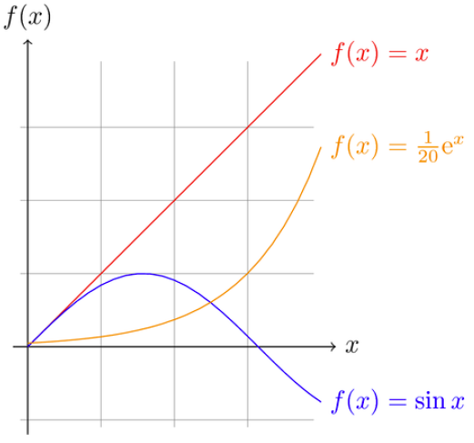
Figure 16: Functions Graphed
GHK
“Speaking of graphs,” said Abu, “this picture you’re showing us is what I’ve thought were graphs ever since I took algebra.”
“Ila, do you agree this is the everyday ordinary meaning of graphs?” asked Til.
“Yes, except I know they’re also these webby-looking things with dots and lines,” said Ila. “Just another example of confusing terminology, this time using the same word to refer to two different things.”
“Right, and we’ll get to those types of graphs, important discrete structures as they are, later,” said Til, ignoring her complaint. “But for now, here’s what I want you to do. I’ve just sent you a link to a high-level summary of someone’s take on how mathematicians from Euclid on down work at the task of understanding. Take this list and find examples in math history of each step:”
- Think about how understanding will be assessed.
- Decide that an important measure of understanding is easy, fluid translation (movement) between representations.
- Make in-the-large pattern recognition easier because of fluency of representations. (Expert mathematicians perceive big, meaningful patterns. Novices see little, not so meaningful patterns.)
- Gain expertise by lots of problem solving practice.
- Evolve representations through problem solving expertise.
- Introduce, test and refine representations in this evolutionary process.
- Nurture evolving representations as they grow progressively more sophisticated.
GHL
How have mathematicians generalized functions? They defined relations. With one big difference, relations are essentially functions. The difference is, there is no “fan-out” constraint on relations as there is on functions. What that means is that an element of the domain of a relation can map to any number of (zero, one or more) elements in its codomain.
A \(\times\) B, the Cartesian product (or just product) of set A with set B is the set of all ordered pairs (a b) where a \(\in\) A and b \(\in\) B. This generalizes to n > 2 sets in a straightforward way.
A binary relation R from a set A to a set B is a subset: R \(\subseteq\) A \(\times\) B. A binary relation R on a set A (a self relation) is a subset of A \(\times\) A, or a relation from A to A (from the set to itself).
For an A \(\times\) B example:
- A = [a b c]
- B = [1 2 3]
- R = [(a 1) (a 2) (b 2) (b 3) (c 3)]
For a self relation example:
- A = [a b c]
- R = [(a a) (a b) (a c)]
EBQ
Here is one way to do a Cartesian product of two 3-element sets:
(let* ((A [a b c]) (B [1 2 3])) (list (list 'a 1) (list 'a 2) (list 'a 3) (list 'b 1) (list 'b 2) (list 'b 3) (list 'c 1) (list 'c 2) (list 'c 3)))
((a 1) (a 2) (a 3) (b 1) (b 2) (b 3) (c 1) (c 2) (c 3))
Here is a better way, that avoids hardcoding literal elements from sets A
and B, and renders the list-of-lists result as a table:
(let* ((A [a b c]) (B [1 2 3]) (A0 (elt A 0)) (A1 (elt A 1)) (A2 (elt A 2)) (B0 (elt B 0)) (B1 (elt B 1)) (B2 (elt B 2))) (list (list A0 B0) (list A0 B1) (list A0 B2) (list A1 B0) (list A1 B1) (list A1 B2) (list A2 B0) (list A2 B1) (list A2 B2)))
| a | 1 |
| a | 2 |
| a | 3 |
| b | 1 |
| b | 2 |
| b | 3 |
| c | 1 |
| c | 2 |
| c | 3 |
Here is a much better way that defines a function that returns the Cartesian product of three sets, and that also allows the sets to be of different sizes:
(defun cartesian-product-3 (s1 s2 s3) (loop for i across s1 append (loop for j across s2 append (loop for k across s3 collect (list i j k)))))
(cartesian-product-3 [a b c d] [1 2] [x y z w t])
| a | 1 | x |
| a | 1 | y |
| a | 1 | z |
| a | 1 | w |
| a | 1 | t |
| a | 2 | x |
| a | 2 | y |
| a | 2 | z |
| a | 2 | w |
| a | 2 | t |
| b | 1 | x |
| b | 1 | y |
| b | 1 | z |
| b | 1 | w |
| b | 1 | t |
| b | 2 | x |
| b | 2 | y |
| b | 2 | z |
| b | 2 | w |
| b | 2 | t |
| c | 1 | x |
| c | 1 | y |
| c | 1 | z |
| c | 1 | w |
| c | 1 | t |
| c | 2 | x |
| c | 2 | y |
| c | 2 | z |
| c | 2 | w |
| c | 2 | t |
| d | 1 | x |
| d | 1 | y |
| d | 1 | z |
| d | 1 | w |
| d | 1 | t |
| d | 2 | x |
| d | 2 | y |
| d | 2 | z |
| d | 2 | w |
| d | 2 | t |
We can do better still. The problem is to figure out how best to generalize this to a Cartesian product of n sets, again allowing for arbitrary sizes.
MGX
More mapping versus looping.
In the context of the binary-predicate/nested-quantifier code you were expected to write using loops, explore the following code that is implemented in the functional programming way (with implicit mapping):
(defun map-for-all (pred x domain-y) (every (lambda (y) (funcall pred x y)) domain-y))
(defun map-for-all-for-all (pred domain-x domain-y) (every (lambda (x) (map-for-all pred x domain-y)) domain-x))
(map-for-all-for-all '< [1 2 3] [4 5 6])
ECI
Implement the for-some-for-some, for-some-for-all, and for-all-for-some
functions in a similar manner to the mapping for-all-for-all. Test them with
at least three different predicates and their associated domains.
GHM
There are many special properties of binary relations — given:
- A Universe U
- A binary relation R on U (or a subset of U)
- A shorthand notation xRy for “x is related to y” — shorter than saying “the pair (x y) is in the relation R” (in symbols, (x y) \(\in\) R), and shorter too than “x is related to y (under the relation R)”. The “(under the relation R)” is especially verbose, and when that is the clear context, the succinctness of xRy is compelling.
R is reflexive iff \(\forall\) x [x \(\in\) U → xRx].
If U = ∅ then the implication is vacuously true — so the void relation on a void Universe is reflexive. Reflect on that. If U is not void, then to be a reflexive relation, all elements in (the subset of) U must be present.
R is symmetric iff \(\forall\) x \(\forall\) y [xRy → yRx].
R is antisymmetric iff \(\forall\) x \(\forall\) y [xRy ∧ yRx → x = y].
R is transitive iff \(\forall\) x \(\forall\) y \(\forall\) z [xRy ∧ yRz → xRz].
Here are some examples of these properties, possessed (or not) by these four small relations over the set A = [1 2 3 4]:
- R1 = [(1 1)]
- R2 = [(1 2) (2 3) (3 2)]
- R3 = [(1 3) (3 2) (2 1)]
- R4 = [(1 4) (2 3)]
Using the definitions and logic, we argue for the correctness of these classifications (see if you agree before reading the arguments):
- R1 is not reflexive, but is symmetric, antisymmetric and transitive.
- R2 is not reflexive, not symmetric, not antisymmetric and not transitive.
- R3 is not reflexive, not symmetric, antisymmetric and not transitive.
- R4 is not reflexive, not symmetric, antisymmetric and transitive.
R1 is not reflexive because it is missing (2 2), (3 3) and (4 4). It is symmetric because, in truth, for all x and for all y (all one of each of them), xRy → yRx (1R1 → 1R1). It is antisymmetric because 1R1 ∧ 1R1 → 1 = 1. It is transitive because 1R1 ∧ 1R1 → 1R1 (1 is the only value x, y and z can be).
R2 is not reflexive because it is missing all four: (1 1), (2 2), (3 3) and (4 4). It is not symmetric because it lacks (2 1), which is the symmetric partner of (1 2). It is not antisymmetric because 2R3 and 3R2 do not imply that 2 = 3. It is not transitive because it lacks (1 3), needed to satisfy 1R2 ∧ 2R3 → 1R3. It also fails to be transitive for the lack of (2 2) and (3 3), needed to satisfy 2R3 ∧ 3R2 → 2R2 and 3R2 ∧ 2R3 → 3R3.
R3 is not reflexive because it lacks all four: (1 1), (2 2), (3 3) and (4 4). It is not symmetric because it lacks the symmetric partners of all three pairs. It is antisymmetric — vacuously so — because there are no symmetric pairs, and thus the antecedent of the conditional in the definition is always false, meaning the conditional is vacuously true. R3 is not transitive because it lacks (1 2), needed to satisfy 1R3 ∧ 3R2 → 1R2. (Ditto for the missing (3 1) and (2 3), needed to satisfy 3R2 ∧ 2R1 → 3R1 and 2R1 ∧ 1R3 → 2R3.)
R4 is not reflexive because it lacks all four: (1 1), (2 2), (3 3) and (4 4). (Lacking any one of them, of course, would be enough to disqualify it.) It is not symmetric because it lacks the symmetric partners of both its pairs. Like R3, it is vacuously antisymmetric. For similar reasons, it is vacuously transitive. There are no x, y and z for which xRy and yRz are both true, hence xRz can never be false!
Note that symmetric and antisymmetric are not mutually exclusive properties. They can either both be absent, both be present, or one absent and the other present.
MHB
From the definition of antisymmetric, show using logic that if xRy and x ≠ y then it is false that yRx.
ECT
Which of the following pairs are in the relation on the set [1 2 3 4] given by the mathy set description {(x, y) | x > y + 1} or by the equivalent lispy set membership predicate:
(defun in-the-relation (x y) (> x (+ y 1)))
- (2 1)
- (2 2)
- (2 3)
- (2 4)
- (3 1)
- (3 2)
- (4 1)
- (4 2)
- (4 3)
MKJ
What is the most correct description of relation types for the relation on the set [1 2 3] given as the pairs heading the first column?
| [(1 1) (1 3) (2 2) (3 1)] | Yes or No? |
|---|---|
| Reflexive? | |
| Symmetric? | |
| Antisymmetric? | |
| Transitive? |
EFE
What is the most correct description of relation types for the relation on the set [1 2 3] given as the pairs heading the first column?
| [(1 1) (2 2) (3 1) (3 3)] | Yes or No? |
|---|---|
| Reflexive? | |
| Symmetric? | |
| Antisymmetric? | |
| Transitive? |
MKL
What is the most correct description of relation types for the relation on the set [1 2 3] given as the pairs heading the first column?
| [(1 2) (2 1) (3 3)] | Yes or No? |
|---|---|
| Reflexive? | |
| Symmetric? | |
| Antisymmetric? | |
| Transitive? |
EFS
What is the most correct description of relation types for the relation on the set [1 2 3] given as the pairs heading the first column?
| [(1 3) (2 3)] | Yes or No? |
|---|---|
| Reflexive? | |
| Symmetric? | |
| Antisymmetric? | |
| Transitive? |
MLB
How many possible binary relations are there on a set with 3 elements?
Replace the ;;... to answer the question in the general case:
(defun number-of-binary-relations (n) "Computes the number of binary relations on a set with n elements." ;;... )
GHN
Binary relations readily generalize to n-ary relations. Just like binary relations are for couples; 5-ary relations are for 5-tuples; 121-ary relations are for 121-tuples, …, n-ary relations are for n-tuples.
An n-ary relation on domains A1, A2, …, An is a subset of A1 × A2 × … × An. The number n is called the degree of the relation.
The Ai domains of the relation are the individual sets whose elements are
aggregated in tuples. So as we see, a 5-ary relation is a set of 5-tuples, and
is a subset of, say, A × B × C × D × E. [a1 b3 c2378 d0 e3] could be a
sample 5-tuple in this relation. More realistically, let A = Name, B =
Address, C = City, D = State, and E = Zip. The following table shows three
5-tuples from a fictitious address book:
| Name | Address | City | State | Zip |
|---|---|---|---|---|
| Bill | 123 S Main | Rexburg | ID | 83440 |
| Bob | 51 S Center | Rexburg | ID | 83440 |
| Sue | 4134 E 200 West | Rigby | ID | 83442 |
The table form is a natural one, even for a “database” this tiny.
Relational Database Theory is a huge, sprawling, and incredibly practical field of study. It’s all based on the mathematics of tuples. Not wanting to venture too far, our surface-scratching will be a brief expounding on the following facts:
Relational databases contain relations (tables).
Tables contain tuples (records or rows).
Records contain elements of domains (fields or columns).
Records are identified by keys.
A primary key is a field or fields that is/are used to uniquely identify each record. To be primary the key must be unique everywhere, for all time.
We could even say keys are key — as in vitally important. Indeed, good keys are crucial for a well-designed relational database.
Three basic mathematical operations can be performed on n-ary relations:
- Projection
- Selection
- Join
Projection is selecting rows containing only specified columns.
The projection \(P_{i_1, i_2, \ldots, i_m}\) maps an n-tuple to the m-tuple formed by deleting all fields not in the list \(i_1, i_2, \ldots, i_m.\)
This is like taking a vertical “claw slash” through a table. With our simple address book table, let \(i_1\) be Name, \(i_3\) be City, and \(i_5\) be Zip. The projection \(P_{i_1, i_3, i_5}\) gives the three 3-tuples:
| Name | City | Zip |
|---|---|---|
| Bill | Rexburg | 83440 |
| Bob | Rexburg | 83440 |
| Sue | Rigby | 83442 |
Selection is selecting rows whose columns match a specified condition.
In an unfortunate naming collision, SQL (the Structured Query Language) uses
the keyword SELECT for both projection and selection.
For the above projection, the SQL command is:
SELECT Name, City, Zip FROM address_book
For a selection of Rexburg residents only, we need a condition: if the City column matches Rexburg, select it, otherwise leave it out.
For selection SQL adds a where clause:
SELECT * FROM address_book WHERE City = 'Rexburg'
| Name | Address | City | State | Zip |
|---|---|---|---|---|
| Bill | 123 S Main | Rexburg | ID | 83440 |
| Bob | 51 S Center | Rexburg | ID | 83440 |
With where restrictions leaving certain rows out, selection is like taking a horizontal “claw slash” through a table.
Join is the hardest operation of the three. It essentially creates a single table from two (or more) tables.
The join \(J_p\) takes a relation R of degree m and a relation S of degree n and produces a relation of degree m + n - p by finding all tuples \((a_1, a_2, \ldots, a_{m + n - p})\) such that \((a_1, a_2, \ldots, a_m) \in R \land (a_{m - p + 1}, a_{m - p + 2}, \ldots, a_{m - p + n}) \in S.\)
The number p can be viewed as the number of field names R and S have in common.
Take a simple example with R = birthday and S = zodiac. The two fields R and S have in common are Month and Day, where in the zodiac relation these indicate the starting date of each sign. We want to join all a1 = Name, a2 = Year, a3 = Month, a4 = Day, and a5 = Sign, such that attributes (another name for fields) a1, a2, a3, a4 are in birthday:
| Name | Year | Month | Day |
|---|---|---|---|
| Bill | 1992 | Jan | 1 |
| Bob | 2001 | May | 13 |
| Sue | 2000 | Dec | 22 |
and attributes a3, a4, a5 are in zodiac:
| Month | Day | Sign |
|---|---|---|
| Jan | 20 | Aquarius |
| Feb | 19 | Pisces |
| Mar | 21 | Aries |
| Apr | 20 | Taurus |
| May | 21 | Gemini |
| Jun | 21 | Cancer |
| Jul | 23 | Leo |
| Aug | 23 | Virgo |
| Sep | 23 | Libra |
| Oct | 23 | Scorpio |
| Nov | 22 | Sagittarius |
| Dec | 22 | Capricorn |
So p = 2, m = 4, n = 3, and m + n - p = 5. As defined, the join of these two relations would have 15 tuples, with 12 rows from zodiac “joined” with 3 rows from birthday. The table below is sorted by increasing Month then Day, and uses a dash to indicate a missing (null) field value:
| Name | Year | Month | Day | Sign |
|---|---|---|---|---|
| Bill | 1992 | Jan | 1 | - |
| - | - | Jan | 20 | Aquarius |
| - | - | Feb | 19 | Pisces |
| - | - | Mar | 21 | Aries |
| - | - | Apr | 20 | Taurus |
| Bob | 2001 | May | 13 | - |
| - | - | May | 21 | Gemini |
| - | - | Jun | 21 | Cancer |
| - | - | Jul | 23 | Leo |
| - | - | Aug | 23 | Virgo |
| - | - | Sep | 23 | Libra |
| - | - | Oct | 23 | Scorpio |
| - | - | Nov | 22 | Sagittarius |
| - | - | Dec | 22 | Capricorn |
| Sue | 2000 | Dec | 22 | - |
But what we really want is just the last two rows collapsed into one:
| Name | Year | Month | Day | Sign |
|---|---|---|---|---|
| Sue | 2000 | Dec | 22 | Capricorn |
So a “natural” join is to keep only the tuples that match on their shared field values. The single matched record answers the query: who has a birthday on the first day of a Zodiac sign? Sue does. A more complex join/query with some where condition logic is needed to learn what Bill’s and Bob’s Zodiac signs are. (Bill’s is Capricorn, while Bob’s is Taurus.) But simple relational modeling only goes so far.
EJE
Study the following code and add to it your own. The setq chain implements a
very simple and simplistic database of students and courses. Double check by
just looking at it, but also write code to
- find all students who have taken all courses, using the predicate
student-has-taken-course. - find all courses that have been taken by all students, using the predicate
course-has-been-taken-by-student.
You will want some kind of for-all-for-all function that takes a predicate
and two domains, like what you have already seen.
(setq students [1 2 3 4 5 6 7 8] courses [100 200 300 400] by-student '((1 100 200) (2 100) (3 100 200 300) (4 100 200 300 400) (5 100) (6 100) (7 100 200) (8 100 200 300 400)) by-course '((100 1 2 3 4 5 6 7 8) (200 1 3 4 7 8) (300 3 4 8) (400 4 8))) (defun student-has-taken-course (student course) (not (null (member course (rest (assoc student by-student)))))) (defun course-has-been-taken-by-student (course student) (not (null (member student (rest (assoc course by-course))))))
MLU
Add a few more records to the birthday table, and implement that table and the zodiac table in elisp using a vector of vectors (or list of lists). Then write code for answering the “complex join/query” what is a person’s Zodiac sign?
EJK
Investigate the many features and benefits of the interaction between org-mode tables and elisp source blocks.
GHO
A very important kind of relation is known as an equivalence relation. It captures what it means for something to be “the same as” something else, without being identical or equal, necessarily. First, a definition:
An equivalence relation is a binary relation that is
- reflexive,
- symmetric, and
- transitive.
Note that bare equality (=) is an equivalence relation (in fact, we could call it the equivalence relation):
Does a = a? Yes, so = is reflexive.
If a = b does b = a? Yes, so = is symmetric.
If a = b and b = c, does a = c? Yes, so = is transitive too.
If equality is the first-place equivalence relation, then easily second-place can go to equality operators in programming languages such as lisp or java:
In lisp:
(let ((a [1 2 3]) (b [1 2 3])) (princ (eq a b)) (princ "\n") (princ (equal a b)))
nil t
a and b are not the same lisp object (not eq) but they are
structurally the same (equal). From the documentation for both:
eq is a built-in function in `C source code'. (eq OBJ1 OBJ2) Return t if the two args are the same Lisp object.
equal is a built-in function in `C source code'. (equal OBJ1 OBJ2) Return t if two Lisp objects have similar structure and contents.
In java:
class ShowIntegerEquivalence { public static void main (String[] args) { Integer a = new Integer(1); Integer b = new Integer(1); System.out.println(a == b); System.out.println(a.equals(b)); } }
false true
The java.lang.Object.equals() method documentation makes it explicit:
public boolean equals(Object obj)
Indicates whether some other object is “equal to” this one.
The equals method implements an equivalence relation on non-null object references:
- It is reflexive: for any non-null reference value x, x.equals(x) should return true.
- It is symmetric: for any non-null reference values x and y, x.equals(y) should return true if and only if y.equals(x) returns true.
- It is transitive: for any non-null reference values x, y, and z, if x.equals(y) returns true and y.equals(z) returns true, then x.equals(z) should return true.
[…]
The equals method for class Object implements the most discriminating possible equivalence relation on objects; that is, for any non-null reference values x and y, this method returns true if and only if x and y refer to the same object (x == y has the value true).
Coming up in third place is a classic equivalence relation, congruence mod m.
GHP
Congruence mod m says a relationship holds between two integers:
a is congruent mod m to b, denoted a \(\equiv_{m}\) b or sometimes a \(\equiv\) b (mod m), means a and b have the same remainder when divided by m.
In other words, a \(\equiv_{m}\) b if a mod m = b mod m.
It is useful to see this relationship in different but equivalent ways:
a \(\equiv_{m}\) b means
- m | a - b.
- \(\exists\) c : c ⋅ m = a - b.
- \(\exists\) k : a = k ⋅ m + b.
- In lisp:
(defun is-congruent-mod-m-to (a b m) (= (mod a m) (mod b m))) (defun is-congruent-mod-m-to-alt (a b m) (zerop (mod (- a b) m)))
The endnote discusses a nuance of notation for the first of these definitions, m divides the difference of a and b. Note how each of the first three equivalent definitions is used in the following, where for brevity, let CMM acronymize Congruence Mod M:
CMM is reflexive. a \(\equiv_{m}\) a because m | a - a. Any number divides 0.
CMM is symmetric. If a \(\equiv_{m}\) b then b \(\equiv_{m}\) a because if c is such that c ⋅ m = a - b then -c is such that -c ⋅ m = b - a.
CMM is transitive. If a \(\equiv_{m}\) b (so a = k ⋅ m + b) and b \(\equiv_{m}\) c (so b = j ⋅ m + c) then a \(\equiv_{m}\) c because i = k + j is such that a = i ⋅ m + c. To see this:
| Replace | with its equivalent | in | to get |
|---|---|---|---|
| b | j ⋅ m + c | a = k ⋅ m + b | a = k ⋅ m + j ⋅ m + c |
| k ⋅ m + j ⋅ m | (k + j) ⋅ m | a = k ⋅ m + j ⋅ m + c | a = (k + j) ⋅ m + c |
CMM relates to modular arithmetic, which is sometimes referred to as clock arithmetic, which referral does it a disservice, restricting as it does the modulus to be 12 (or 24).
Whenever you interact with a clock or a calendar you flirt with modular arithmetic, even if you are unaware of their relationship. Indeed, the seconds, minutes, hours, days, weeks, months, years — the seasons and cycles of our lives are all counted with modular arithmetic. A circular analog clock face suggests the cyclical nature of our timekeeping habits. Replace the 12 at the top with a 0 to get the idea. Zero o’clock, all hands straight up — is it midnight or noon? 12:00 am (midnight) is called “zero hundred” (0:00) hours in 24-hour military timespeak, to distinguish it from 12:00 pm (noon) or 12 hundred hours (as if it were written without the colon as 1200). But military time is still just mod-24, whereas “normal” am/pm time is mod-12. So:
11:00 am is 4 hours away from 3:00 pm (11 + 4 = 15, 15 % 12 = 3).
75 hours in the future is 3 days (75 / 24 = 3) + 3 hours (75 % 24 = 3 as well) away. To know what the clock will say then if now is 4:00, add 4 to 75 and reduce modulo 24. (75 + 4 = 79, 79 % 24 = 7). It will say 7:00. Or just add 3 (hours) to 4 (:00) to get 7 (:00).
How many years is 1000 days? Mod 365 would seem to be the ticket, but in fact div 365 (integer division by 365) is called for. 1000 / 365 = 2; 1000 % 365 = 270. Approximately 2.739726 is the floating-point division of 1000 by 365, which seems to be the precise answer to how many years is 1000 days? What is 0.739726 times 365? 269.99999 or (270 if we take the ceiling). Thus 739 thousandths (even more approximately) of a year is 270 days, so 2 years and 270 days is 1000 days from today. But there is no need to worry about how much precision to use. The count is off regardless because of leap years, when 366 is the divisor/modulus, but not every 4 years with regularity. Messy business, calendars in years and days.
Weeks fare better, where mod 7 is as regular as — clockwork! What day of the week will 1000 days from now be if today is Tuesday? X days from Tuesday is Tuesday again, if X is 7, 14, 21, 38, 35, or 7 ⋅ k for integer k ≥ 6. Any multiple of 7 looks like 0 (mod 7). How many of these 7-day weeks are in 1000 days? It doesn’t matter. What fraction of a week remains after cycling through all those whole weeks is what matters. So what is 1000 % 7? It is 6. Which means Tuesday + 6 days = Monday is the answer, leap years be hanged!
GHQ
Modular arithmetic (and congruences) will be delved into deeper later, but in the meantime, see if you are smarter than an eighth-grader:
A test item on a National Assessment of Educational Progress (NAEP) mathematics assessment presented the following question to eighth grade students as an open-ended prompt demanding a written answer:
How many buses does the army need to transport 1,128 soldiers if each bus holds 36 soldiers?
Formulate your answer before looking at the endnote to see the answer given by almost one-third of the eighth graders.
CMM amply illustrates one very special property of equivalence relations. Take
5 as the modulus (and specialize CMM to CM5 for convenience). When you take an
integer (i) and perform the mod-5 operation on it ((mod i 5)) you can say
you have “modded i by 5”. Note that every integer can be put into one of
five subsets, namely, those integers that when modded by 5 give a remainder
of:
- 0: the multiples of 5, in other words. Call this subset A0.
- 1: the multiples of 5, plus 1. Call this subset A1.
- 2: the multiples of 5, plus 2 = A2.
- 3: the multiples of 5, plus 3 = A3.
- 4: the multiples of 5, plus 4 = A4.
For any given set, the subset of all elements related to a particular element forms a universal relation (contains all possible pairs) on that subset.
The number of such subsets is called the rank of the equivalence relation.
Each of the subsets is called an equivalence class.
Square brackets around an element denote the equivalence class in which the element lies.
[x] = {y | (x, y) ∈ R}, or
[x] = {y | xRy}.
The element in the brackets is called a representative of the equivalence class. Any one of them could be chosen.
Thus we see that with CM5 as the context, we can name our subsets alternatively:
- A0 = [0] = [5] = [10] = [-5] = [-10], etc.
- A1 = [1] = [6] = [11] = [-4] = [-9], etc.
- A2 = [2] = [7] = [12] = [-3] = [-8], etc.
- A3 = [3] = [8] = [13] = [-2] = [-7], etc.
- A4 = [4] = [9] = [14] = [-1] = [-6], etc.
But the simplest (smallest nonnegative) representatives are the best: for 0 ≤ i < 5, Ai = [i].
Let A0, A1, A2, …, An be subsets of a set S. A partition of S is formed by these subsets iff they are nonempty, disjoint and exhaust S. In symbols:
- Ai ≠ ∅.
- Ai ∩ Aj = ∅ if i ≠ j.
- \(\bigcup\) Ai = S.
If these three conditions hold, we say these Ai subsets partition S.
We tabulate their members to make it explicit how the CM5 Ai subsets partition Z:
| Set Name | Equivalence Class | Lesser Members | ↓ | Greater Members | ||||||
|---|---|---|---|---|---|---|---|---|---|---|
| A0 | [0] | … | -15 | -10 | -5 | 0 | 5 | 10 | 15 | … |
| A1 | [1] | … | -14 | -9 | -4 | 1 | 6 | 11 | 16 | … |
| A2 | [2] | … | -13 | -8 | -3 | 2 | 7 | 12 | 17 | … |
| A3 | [3] | … | -12 | -7 | -2 | 3 | 8 | 13 | 18 | … |
| A4 | [4] | … | -11 | -6 | -1 | 4 | 9 | 14 | 19 | … |
None of these Ai subset is empty, none has any members in common with any other, and no integer is left out — a partition it is!
The Partition Theorem says that the equivalence classes of an equivalence relation R partition a set S into disjoint nonempty subsets whose union is the entire set.
This partition is denoted S / R and is called
- the quotient set, or
- the partition of S induced by R, or
- S modulo R.
Gather the simplest representatives from the CM5 equivalence classes together into one set, and name it \(\mathbb{Z}_5\). This is a special subset of \(\mathbb{Z}\), consisting of just the possible remainders, or residues, that result when modding by 5. To generalize:
The \(\mathbb{Z}_n\) residue set is the set of possible remainders when modding by n, i.e., [0 1 2 3 … n-1].
We will see these residue sets again.
MMC
Create a table like the one above with the members of the CM7 partition sets.
EJU
Call two bitstrings equivalent if they both end in a 0 (and have length at least one). What CMM equivalence relation does this suggest?
MNE
Consider the set of all bitstrings having length at least 3. Show that the relation on this set that says two bitstrings are related if they agree in the first three bits is an equivalence relation.
GHR
A key point that bears repeating is the following — whenever you have a relation where something has the same whatever as something else, you have an equivalence relation! Be it
- the same age as
- the same birthday as
- the same name as
- the same parents as
- the same first three bits as
- the same authority as
- the same … as
Whatever it may be — look for the words “the same (as)” — as in CMM, where it’s “the same remainder as”.
Here is another foolproof way to establish that a relation is an ER (for short): Let A be a nonempty set, and f be a function that has A as its domain. Let R be the relation on A consisting of all ordered pairs (x y) such that f(x) = f(y). Showing that R is an ER on A is tRivERiAl!
- R is reflexive, f(x) = f(x), check.
- R is symmetric, f(x) = f(y) → f(y) = f(x), check.
- R is transitive, f(x) = f(y) and f(y) = f(z) → f(x) = f(z), check!
What are the equivalence classes of R? Try to answer this before looking at the endnote.
Underlying any ER is a function. There is not a single ER missing this feature. All of them have it. Identify this function (e.g., mod-5) and you have captured the essence of the equivalence.
For another classic example, let R be the relation on the set of ordered pairs of positive integers such that (a b) R (c d) iff ad = bc. Is R an ER?
Yes, by virtue of the function identified as the one from the set of pairs of positive integers to the set of positive rational numbers that takes the pair (a b) to the fraction a / b, since ad = bc if and only if a / b = c / d.
3 / 4 = 6 / 8 because 3 ⋅ 8 = 4 ⋅ 6; 9 / 15 = 3 / 5 = 21 / 35 because 9 ⋅ 5 = 15 ⋅ 3, 9 ⋅ 35 = 15 ⋅ 21, and 3 ⋅ 35 = 5 ⋅ 21; 19 / 141 = 133 / 987 because 19 ⋅ 987 = 141 ⋅ 133, to give a few examples.
Thus with this ER multiple fractions may be deemed the “same” fraction if they reduce “in lowest terms” to the identical fraction.
EKQ
Which of the following are equivalence relations? If it is, show it has reflexivity, symmetry and transitivity. If not, argue for which of these three properties it lacks. The first four have people for their domain, the last four have numbers for their domain:
- xRy if x and y are siblings.
- xRy if x and y have the same parents.
- xRy if x and y share a common parent.
- xRy if x and y speak a common language.
- With domain English words, xRy if x shares a vowel with y.
- xRy if x ≤ y.
- xRy if x2 + y2 = 1.
- xRy if x + y = 42.
- xRy if ⌈x⌉ = ⌊y⌋.
MON
Give a better name to this function:
(defun do-something (m &optional n) (let* ((count (if (null n) 20 n)) (bound (* count m))) (loop for i from 0 below m do (princ "[ ") (loop for j from (+ (- bound) i) to (+ bound i) by m do (princ j) (princ " ")) (princ "]\n"))))
GHS
To end this foray into all things relational, it is illuminating to investigate how mathematicians think and make sense of the world. However, this investigation will be limited for now to one mathematician in particular — Roger Penrose.
So this is how one world-class mathematician (who is also a mathematical physicist) thinks. In this excerpt from his book The Large, the Small and the Human Mind, with abundant intellectual humility, Penrose writes:
What is consciousness?
Well, I don’t know how to define it.
I think this is not the moment to attempt to define consciousness, since we do not know what it is. I believe that it is a physically accessible concept; yet, to define it would probably be to define the wrong thing. I am, however, going to describe it, to some degree. It seems to me that there are at least two different aspects to consciousness. On the one hand, there are passive manifestations of consciousness, which involve awareness. I use this category to include things like perceptions of colour, of harmonies, the use of memory, and so on. On the other hand, there are its active manifestations, which involve concepts like free will and the carrying out of actions under our free will. The use of such terms reflects different aspects of our consciousness.
I shall concentrate here mainly on something else which involves consciousness in an essential way. It is different from both passive and active aspects of consciousness, and perhaps is something somewhere in between. I refer to the use of the term understanding, or perhaps insight, which is often a better word. I am not going to define these terms either — I don’t know what they mean. There are two other words I do not understand — awareness and intelligence. Well, why am I talking about things when I do not know what they really mean? It is probably because I am a mathematician and mathematicians do not mind so much about that sort of thing.
They do not need precise definitions of the things they are talking about, provided they can say something about the connections between them.
The first key point here is that it seems to me that intelligence is something which requires understanding. To use the term intelligence in a context in which we deny that any understanding is present seems to me to be unreasonable. Likewise, understanding without any awareness is also a bit of nonsense. Understanding requires some sort of awareness. That is the second key point. So, that means that intelligence requires awareness. Although I am not defining any of these terms, it seems to me to be reasonable to insist upon these relations between them.
TWO
“So, what is the connection between probability and counting?” asked Til. Ila stared with wonder and amazement. It was like Til had no problem whatsoever dispensing with the normal pleasantries of conversation. Like that time when she arrived a few minutes before Abu and tried to make small talk with Til. “So, it seems that you’re interested in stars!” she had said. “Yes, I am.” Til had replied, and then got that faraway look in his eyes, like he was suddenly out there among the stars, abruptly leaving the nearby flesh-and-blood human behind.
Like he had that time by arriving with a cheery greeting, Abu broke the awkward silence this time by cautiously saying “Well, I think it has to do with counting the number of ways something can happen and then confirming that count by experimenting, like flipping a coin or rolling dice.”
TWP
“Ah, so you’re a frequentist!” said Til. Abu blinked and then quickly nodded, alert to the agitation he sensed well up in Ila. “Wait, what’s a frequentist?” said Ila. “As opposed to a subjectivist, whose view of probability is different,” said Til.
“Let me compare and contrast these two schools of thought,” said Til, after a brief pause while he gathered his thoughts and Abu and Ila sat lost in theirs. “To a frequentist, probability is counting the number of times something actually happens, like landing heads to use Abu’s coin flipping experiment, and comparing that frequency with the number of flips. The ‘landing heads’ when flipping a coin is called an event, the ‘landing-either-heads-or-tails (but not neither and certainly not both)’ is called the space of possibilities, or the probability space of this experiment. In other words, the probability space is all possible outcomes, and the event is a subset of that space. The frequentist holds that the frequency of actual outcomes, counting say 51 heads in 100 coin tosses, is an approximation to the exact probability of getting heads on any single toss of a coin.”
“So, if I understand this right,” said Ila, “I can say the probability of getting heads is 51/100, or 498/1000 or whatever it is after repeating the experiment however many times I want.” “Yes, if you’re a frequentist!” said Til. “But I really just want to say it’s 50%, or a 50-50 chance, because of how coins have two sides, and unless there’s something funny about my quarter here, tossing it gives no preference to one side or the other. So either is equally likely, right?” “So right, if you’re a thought-experiment frequentist!” said Til.
“But aren’t there fake coins that are biased to land more often heads than tails, or vice-versa?” said Abu. “Yes, but what’s your point?” said Til. “Well, if I did the experiment of tossing some such biased coin a thousand times, and counted 600 heads,” said Abu, “I’d be more inclined to suspect the coin was unfair than to think the likelihood of getting heads was 60%.” “That’s because you have a high degree of belief, a subjective intuition if you will, about how coins should behave.” said Til.
“Is that what a subjectivist is, someone who treats probability as a subjective belief in how likely something is?” said Ila. “Exactly right!” said Til. “Obviously, frequentism cannot work in all cases, because some ‘experiments’ can’t be done, or if not outright impossible, can’t be repeated, or even tried once without disastrous results.” Abu chimed in, “Like what’s the probability that the world will end and humanity extinguish itself in a nuclear holocaust? I may think it’s not very likely, but someone else might disagree and think the probability is high.”
“I’ve got one!” said Ila. “What’s the probability that our sun will go supernova tomorrow?”
“I’d give that one a 0% chance, personally,” said Abu. “Same here,” said Til. “But that’s just our belief — mixed of course with scientific knowledge about how stars live and die. When people use pseudoscience to predict the future, or substitute opinion for fact, and ‘estimate’ probabilities to further some hidden agenda — that’s when math abuse, and truth abuse abound.”
“Truth abuse sounds worse than math abuse,” said Ila. “Truth is,” replied Til, “popular culture conspires to disguise truth, and substitute illusion for what’s real. For example, take the famous Mr. Spock from Star Trek. In the original series, Spock was always telling Captain Kirk ‘I estimate our chances (of getting out of such-and-such predicament) to be 0.02794%’ or some such ridiculously small and precise number. And viewers accepted this ludicrous scenario without question because Hollywood had convinced them Mr. Spock was this logical, mathematical, scientific paragon.”
Again, Abu and Ila paused to consider the implications of what Til had just said. Ila had a thought. “Til, are you a frequentist or a subjectivist?” she asked. “Both!” said Til, with a mischievous smile. Then while softly clearing his throat he subvocalized the contradictory addendum, “And neither.”
“At any rate,” continued Til, full voice, “if we’re going to learn how to count today we’d better get to it!”
JKL
Just Keep Looking for Basic Counting and Probability Principles.
Here are two TLAs sharing Elementary and Combinatorics (the study of counting, or of how things combine):
- EEC (Elementary Enumerative Combinatorics) — treated lightly; and
- EGC (Elementary Generative Combinatorics) — mentioned here by way of contrast — delved into deeper when we get to trees.
JKM
Counting involves applying logic and some general principles to find the number of ways some choice can be made, some task can be done, or some event can happen. Counting ways of combining abstract or concrete objects from given sets they belong to is the goal.
The Addition Principle (AKA the Sum Rule): faced with a task to select just one member from each set in a collection of two or more sets, the number of ways to make the selection is the sum of the sizes of the sets, provided the sets are disjoint.
Example: The number of ways to choose one vowel or one consonant from the alphabet is 5 + 21 = 26. It should not be surprising that this is the same as the number of ways to choose one letter from the whole alphabet. The Addition Principle involves an either-or choice, where the choices are mutually exclusive.
The Multiplication Principle (AKA the Product Rule): faced with a task to select one member from one set, and one member from another set, and (continue with arbitrarily many sets) …, the number of ways to do so is the product of the sizes of the sets. Here again it is usually stipulated that the sets are disjoint.
Example: The number of ways to choose one vowel and one consonant from the alphabet is 5 × 21 = 105. The Multiplication Principle involves a both-and choice.
In sum, adding is like or-ing, and multiplying is like and-ing, to liken + to ∨ and × to ∧.
Mixing these two principles in certain ways leads to basic counting techniques applicable to many many counting tasks. The hard part of the solution to any counting problem is choosing the appropriate model and technique. After that, applying the appropriate technique (formula) is easy.
QAM
Henry only has one pair of pants. How many different outfits does Henry have if he has 5 long-sleeve shirts and 3 short-sleeve shirts? (An outfit is “pants with either a long-sleeve shirt or a short-sleeve shirt”.)
If Henry buys another pair of pants and 10 ties, then how many different outfits (shirt and tie and pants) will he have?
Which basic counting principle applies to each scenario?
REX
How should the Sum Rule be adjusted when the two sets being selected from are not disjoint — which means the opposite of the oft-repeated “the sets are disjoint” — they have a nonempty intersection; in other words, they have some members in common.
QCV
How many different functions are there from a set with 3 elements to a set with 5 elements?
RFC
How many different one-to-one functions are there from a set with 3 elements to a set with 5 elements?
QCZ
How many different onto functions are there from a set with 3 elements to a set with 5 elements?
JKN
Step one on the path to grasp combinatorics, learn two basic definitions:
A permutation is an arrangement, where order matters (just like with nested quantifiers).
A combination is a subset, where order matters not, like with sets in general.
So whether order matters or not is one dimension of a counting problem, with another dimension being whether or not repetition of elements is allowed. Generally speaking these considerations are germane to either permutations or combinations, but there are subtle variations of permunations and combitations to take into account as well.
To wit, given a set of n objects, say you want to select r of them. After choosing one object from the set —
- you can either put it back — called selection with replacement (or allowing repetition)
- or not — called selection without replacement (or disallowing repetition)
Choosing the appropriate technique requires answering the two questions:
- Does the order of the selected objects matter or not?
- Is the selection with or without replacement (repetition)?
In general, how many different possible sequences (arrangements) of objects there are depends on the size (length) of the sequence. Selection without replacement of r objects from a set of n objects naturally constrains r to be at most n. If more than one object is selected (r ≥ 2), two different orderings or arrangements of the objects constitute different permutations. Thus it is:
- Choose the first object n ways, and
- Choose the second object \((n - 1)\) ways (when selection is without replacement, there is one fewer object to choose from) and
- Choose the third object \((n - 2)\) ways (again without replacement,) …
Finally choose the \(r^{th}\) object \((n - (r - 1))\) ways.
By the Multiplication Principle, the number of r-permutations of n things, or said another way, the number of permutations of n things taken r at a time is
\(P(n, r) = n(n - 1)(n - 2) \cdots (n - (r - 1)) = n!/(n - r)!\)
Example: How many permutations of the letters ABCDELMNO are there?
There are 9 letters (n = 9), and we’re choosing all 9 (r = 9), so we have P(9, 9) = \(\frac{9!}{(9 - 9)!} = \frac{9!}{0!} = \frac{9 \cdot 8 \cdot 7 \cdot 6 \cdot 5 \cdot 4 \cdot 3 \cdot 2 \cdot 1}{1}\) = 362880 permutations.
RFF
Concretize the equality
P(n, r) = n(n - 1)(n - 2) ⋯ (n - (r - 1)) = n!/(n - r)!
and convince yourself that it is an equality.
QDM
The English language predominantly uses the Subject-Verb-Object word type ordering; for example, “Gary saw Alice”. Other languages might use Subject-Object-Verb or Object-Verb-Subject, etc. How many different word orderings are possible, not depending on specific words, just their type?
RGL
Recalling the example of how many are the permutations of the letters ABCDELMNO, investigate and explain why 0! is defined to be equal to 1.
QEB
How many of the 9! arrangements of the letters ABCDELMNO contain the string ELM?
RGM
How many TLAs (arrangements of 3 alphabetic letters) are there with repetition allowed?
QFK
How many different sequences of initials are there for people who either have two initials (first and last) or three initials (first, middle and last)?
RHB
How many different sequences can be formed using either two or three letters (A-Z) followed by either two or three digits (0-9)?
For example:
- AB01
- ABC02
- XYZ123
- …
QGK
How many different “words” of the form ccvcv are there where c represents
one of the 21 consonants and v represents one of the 5 vowels in the English
alphabet? Assume no letter can be repeated, just count words like “tribe” or
“blizo” — a non-word but count it anyway — but not something like “trite”
or “gligi”, which have repeated letters.
JKO
If selection is without replacement but order does not matter, this is the same as selecting subsets of size k from a set of size n. (Not only does order not matter, but neither does our choice of variable names. So, for variety, we press into service k to relieve r of duty.) As with arrangements or permutations, 0 ≤ k ≤ n, and what needs to happen to discard accounting for order is a simple adjustment. Just divide out the number of permutations of the k objects from the number of permutations of n objects taken k at a time. Since each k-combination can be arranged k! ways, we have k! permutations for each k-combination. So the number of k-combinations of n things, or, the number of combinations of n things taken k at a time is
\(C(n, k) = P(n, k)/P(k, k) = \frac{n!}{(n - k)! k!} = {n \choose k}\)
The n-and-k-stacked-vertically-in-parentheses is pronounced “n choose k”.
Example: How many ways can we choose a three-letter subset of the nine letters ABCDELMNO?
We have selection without replacement, and because we want a subset (not a sequence) the order does not matter — CDE = CED = DCE = DEC = ECD = EDC — they’re all the same. So n = 9 and k = 3:
C(9, 3) = \(\frac{9!}{(9 - 3)! 3!} = \frac{9!}{6!3!} = \frac{362880}{720 \cdot 6}\) = 84.
RVB
\({n \choose k} = {n - 1 \choose k} + {n - 1 \choose k - 1}\).
This recurrence relation is normally defined for nonnegative \(n\) and \(k\) (\(0 \le k \le n\)), and to be implemented as a recursive function of two parameters needs some “escape hatch” base cases. Here they are:
\({n \choose k} = 1\) whenever \(k = 0\) or \(k = n\);
whence this straightforward implementation:
(defun n-choose-k (n k) "Computes C(n, k) by the recursive definition; given a pair of nonnegative integers n >= k >= 0, returns the value of n choose k." (if (or (zerop k) (= k n)) 1 (+ (n-choose-k (- n 1) (- k 1)) (n-choose-k (- n 1) k))))
However, there are good reasons to define other boundary conditions for this basic combinatorial function and let its parameters range over all the integers.
\({n \choose k} = 0\) whenever \(k < 0\) or \(k > n\).
Explore these reasons, and re-implement n-choose-k with cond instead of
if to handle these other conditions.
BTW, the numbers \({n \choose k}\) are known as the binomial coefficients, and for good reason!
QGT
Thinking in terms of subsets of size \(k\) from a set of size \(n\), convince yourself of the validity of this summation:
\(\sum_{k = 0}^{n}{n \choose k} = 2^n\).
RJV
Suppose you flip a fair coin 10 times. How many different ways can you get
- no heads?
- exactly one head?
- exactly two heads?
- exactly \(r\) heads?
- at least two heads?
QIQ
How many bit strings of length 10 contain at least two 1s?
RLH
There are many kinds of fruit: raspberries, strawberries, blueberries, apples, oranges, bananas, kiwi, papaya, mango, just to name a few. Just choosing five from that list of nine, how many different combinations of fruit salad can you make?
QKA
A standard 52-card deck has 4 suits [♥ ♠ ♦ ♣] of 13 cards each. A 5-card
hand can be chosen in any of \({52 \choose 5}\) ways. Bridge is a game where
each of 4 players is dealt 13 cards, which means the whole deck is dealt. A
hand has a distribution of suits, which is how many of each suit make up the
13 total. For example, [2 2 3 6] is the suit distribution of the hand
[Ace♥ 3♥ 2♦ 9♦ 4♣ 2♣ 7♣ Jack♠ 9♠ 5♠ Queen♠ 10♠ 6♠] (2 hearts, 2 diamonds, 3
clubs and 6 spades).
How many different hands with a [4 4 3 2] suit distribution can be dealt?
How many different suit distributions are there? ([4 4 3 2] is not
different than [2 3 4 4], because order of the suits does not matter.)
RNC
In the game of Five Crowns there are 116 cards in two combined decks, and in each of 11 hands the number of cards dealt each player increases by one, starting at 3, ending at 13. This implies 11 different numbers of total possible hands from randomly shuffled decks. At which hand (n between 3 and 13) will it become infeasible to compute this number of possible hands without overflowing the capacity of an elisp fixnum?
JKP
Taking a frequentist position is the usual way to begin exploring the vast space of BPT — Basic Probability Theory.
A Probability Space is a finite set of points, each of which represents one possible outcome of an experiment. This is the discrete definition, as opposed to the continuous one with infinite points.
- Each point x is associated with a real number between 0 and 1 called the probability of x.
- The sum of all the points’ probabilities \(= 1\).
- Given n points, if all are equally likely (a typical assumption) then \(1/n\) is the probability of each point.
Example: What are the possible outcomes of throwing a single fair die?
[1 2 3 4 5 6] is the probability space of outcomes as a lisp vector.
An Event is a subset of the points in a probability space.
- P(E) (or Pr(E), or sometimes even p(E)) denotes the probability of the event E.
- If the points are equally likely, then P(E) is the sum of the points in E divided by the sum of the points in the entire probability space.
In the (fair) die throwing example, each number 1-6 is equally likely, so 1/6 is the probability of each number.
Example: What are the possible outcomes of flipping two fair coins?
- Probability Space: 4 outcomes (1/4 probability of each outcome).
Event: seeing a head (
H) and a tail (T) — the middle two of the four possibilities:HHHTTHTT
There are two points in the event, so 2/4 or 1/2 is the event’s probability.
Now to Ramp Up to Four. When flipping four coins is the experiment, the probability space quadruples:
- Probability Space: 16 outcomes, each having 1/16 probability.
Event: seeing two heads and two tails.
HHHHHHHTHHTHHHTTHTHHHTHTHTTHHTTTTHHHTHHTTHTHTHTTTTHHTTHTTTTHTTTT
With 6 points in it (can you pick them out?) 6/16 or 3/8 is the probability of this event.
QKT
When you roll two dice, what is the probability that the sum of the numbers (1-6) on their faces will be a multiple of 3 (3, 6, 9 or 12)?
RNM
Rather than roll dice, Ruth and Ed usually flip a coin to decide who’s going to do the chores. One day Ed complains — he thinks he loses too often. So Ruth says, “OK, this time you flip two coins, and I flip one. If you get more heads than I do, I’ll clean the toilets.” Ed likes Ruth’s display of generosity and says, “You’re on!”
What are his chances?
QOS
Generalize the two- and four- fair-coin-flipping experiment to deal with the experiment of flipping 2n coins. Find the probability of the event that n will be heads, and n will be tails.
ROP
What is the probability that when randomly selecting a permutation of the 26 letters (assumed all uppercase) of the alphabet the following events will occur?
- The first 13 letters will be in alphabetical order.
- The first and last letters will be B and Y.
- The letter I will come before both J and K.
- The letters O and P will be next to each other.
- The letters U and V will be separated by at least 23 letters.
QRQ
What should go in place of the “;;…” in the code below? What other improvements/fixes does this function need?
(defun probability (event space) "A function that takes an event and a space and returns a number between 0 and 1." (let ((result (/ (size event) (size space)))) ;;... result ))
ROX
What is the probability that a randomly chosen 3-digit number unambiguously designates a date (month number plus day number paired without punctuation)? E.g., 111 is ambiguous, it could mean January 11th (month 1, day 11) or November 1st (month 11, day 1). Don’t count numbers with zeros in the second or third position (why not the first position?) as ambiguous, given the rule that days are never written with a leading zero. E.g., 101 can only mean October 1st, not January 1st. Eliminate from the event space any invalid numbers, e.g. 345, as neither 3/45 nor 34/5 is a valid date.
MNO
Miss No Opportunities with Number Theory.
Prime numbers have always fascinated mathematicians.
They appear among the integers seemingly at random,
and yet not quite:
There seems to be some order or pattern,
just a little below the surface,
just a little out of reach.
—Underwood Dudley
The problem of distinguishing prime numbers from
composite numbers and of resolving the latter into
their prime factors is known to be one of the most
important and useful in arithmetic.
It has engaged the industry and wisdom of ancient
and modern geometers to such an extent that it would
be superfluous to discuss the problem at length.
Further, the dignity of the science itself seems to
require solution of a problem
so elegant and so celebrated.
—Karl Friedrich Gauss
MNP
“Euclid proved there are infinitely many primes. Can you?!” Til said. His words were met with utter silence. Dropping that bombshell meant his two pupils had to readjust to the darkness of uncertainty while trying to process what Til just said so nonchalantly. Without waiting for the daze to subside, he went on. “Before the end of today’s session, you will have learned the classic method he used to accomplish this amazing feat.”
“Another way to say there are infinitely many primes is to say there is no largest prime,” said Til. “Suppose not …” he trailed off, pausing for dramatic effect.
“Wait, what do you mean, suppose not?” said Ila. “I thought we were trying to prove a negative anyway, that there is no largest prime?”
“What I mean is, suppose, in contradiction to what we seek to establish, that there is a largest prime. Call it x.”
“Hold on,” said Ila. “I don’t see how that helps us prove that there is no largest prime?”
“What we’re going to do is show that it is logically impossible for this x, this so-called largest prime to exist!” said Til.
Abu chimed in. “This sounds like some Latin phrase I read somewhere — I believe it’s reductio ad absurdum — RAA to TLA it.”
Til replied, “Right As Always!” To which Ila takes umbrage. “Hey, Abu’s not always right. I’m right too sometimes.”
“I was just kidding,” said Til. “But you realize that saying Abu is always right says nothing about how often you’re right, right?”
“I know,” said Ila. “It’s just that he’s always so smiley and self-assured and smug. Like this stuff is a piece of cake to him.”
“Hey, it is a piece of cake — and a delicious one at that!” said Abu.
“Can we get on with the proof?” said Til. Both Ila and Abu nodded yes, Abu still grinning — bad enough, thought Ila, but worse still, he winked at me while Til was not looking. Grrr!
“So, x is the greatest prime. Now follow these seven steps,” said Til.
- “First form the product of all primes less than or equal to x, and then add 1 to the product.
- This yields a new number y. To concretize, y = (2 ⋅ 3 ⋅ 5 ⋅ 7 ⋅ … ⋅ x) + 1.
- If y is itself a prime, then x is not the greatest prime, for y is greater than x — by virtue of how it’s constructed.
- If y is composite (i.e., not a prime), then again x is not the greatest prime. That’s because being composite means y must have a prime divisor z; and z must be different from each of the primes 2, 3, 5, 7, …, up to x. Hence z must be a prime greater than x.
- But y is either prime or composite, there’s no third option.
- Hence x is not the greatest prime.
- Hence there is no greatest prime.”
“Whoa, back up, please!” said Ila. “I’m doing this and I don’t see where y is ever composite:”
- 2 + 1 = 3
- 2 ⋅ 3 + 1 = 7
- 2 ⋅ 3 ⋅ 5 + 1 = 31
- 2 ⋅ 3 ⋅ 5 ⋅ 7 + 1 = 211
- 2 ⋅ 3 ⋅ 5 ⋅ 7 ⋅ 11 + 1 = 2311
“All of these, 3, 7, 31, 211, 2311, … are prime,” said Ila. “Abu, “Well, actually, look at the very next one in the sequence.” said Abu. “2 ⋅ 3 ⋅ 5 ⋅ 7 ⋅ 11 ⋅ 13 + 1 = 30031, which is 59 (prime) ⋅ 509 (also prime), if I calculate correctly.”
Ila was completely taken aback. Why she didn’t think to go one step further caused her jaw to drop with a thud.
Noticing Ila’s nonplussitude, Til reassured her. “Abu calculated correctly, but you would have too, and the fact you stopped one short is just another testimony to the all too human tendency to leap to conclusions with inductive assertions.”
“So, yeah, I see it now,” said Ila, recovering. “That special number y — made by adding 1 to the product of all primes in a supposedly complete list of primes — always gives rise, one way or another, to a prime not in the list!”
“You got it!” said Til. “Me too,” grinned Abu. “It’s a weird way to prove something, though. It just seems backwards.”
“It is backwards,” said Til. “It’s called proof by contradiction, or reducing to the absurd, to translate your Latin phrase. It’s a wonderfully respectable, nay, even venerable, proof technique.”
“Right!” said Ila. “After all, it goes all the way back to Euclid!”
MNQ
Til’s shot aside, we fire our opening salvo into “mathmagic land” by way of distinguishing Elementary Number Theory from Advanced (or Analytic) Number Theory (ANT)). ANT uses the techniques of calculus to analyze whole numbers, whereas ENT uses only arithmetic and algebra, and is typically introduced by delving into divisibility, and thence to primes.
Divide and conquer. So the saying goes. The saying has become a popular and powerful algorithm design technique. Equally well-known (but less powerful) is the technique called brute force. We will employ both of these techniques in a study of the integers and their properties.
A glance suffices to see that integers can be added, subtracted and multiplied together, and the result is always an integer. This rather obvious fact is called closure. We say that the integers are closed under addition, subtraction and multiplication. What about division? Because one integer divided by another may or may not result in an integer, the integers are not closed under division.
A rational number is the ratio of two integers; i.e., \(\frac{\mathsf{p}}{\mathsf{q}}\) where p and q are integers, with q not zero.
The rational numbers are worthy of study in their own right, but now is not the time. So let the domain of discourse be integers. Unless otherwise explicitly stated, number is synonymous with integer in what follows.
A basic fact about numbers that are able to be divided without straying
outside the integer domain is expressed with the vertical bar ‘verb’: ‘|’
in par “ticalar” ((concat (minus "vertical bar" "verb"))).
a | b, pronounced a divides b, is true if \(\frac{\mathsf{b}}{\mathsf{a}}\) is an integer. If so, alternate ways to say the same thing are: b possesses the property divisibility-by-a, b is divisible by a, a is a factor of b, b is a multiple of a, or \(\exists\) c such that c ⋅ a = b. In this existence claim, c is the multiple of a that equals b. The negation of a | b is written a \(\not \vert\) b.
Classify these divisibility claims as true or false before looking at the endnote:
3 | 12
3 | 13
13 | 52
14 | 58
1 | n
n | n
n | 0
0 | n
In the close-but-no-cigar examples, the division attempt fails to produce an integer, being off by one or two. This being off leads to another basic fact about divisibility:
If n is an integer and d is a positive integer, then \(\exists\) q \(\exists\) r such that n = d ⋅ q + r, 0 ≤ r < d.
This fact goes by the name The Division Theorem. In an unfortunate misuse of language, it is also called The Division Algorithm.
Note that r can be zero, which is only the case when d evenly divides n.
There is an easy way to tell when d evenly divides n, as revealed by the following one-liner elisp function:
(defun is-divisible-by (n d) (zerop (mod n d)))
FAB
There is a redundant word in the statement of the division theorem. What is it, and why is it redundant?
ISM
There are shortcuts for determining divisibility by 2, 3, 4, 5, 6, 7, 8, 9, 10
and 11. Of course, using the is-divisible-by function is the easy way, but
in case the modulus function were somehow off limits, or only worked for numbers
that aren’t too big, these shortcuts are helpful.
In the following list N (preceding the colon) is short for A number is divisible by N if.
- 2: the units digit is 0, 2, 4, 6 or 8.
- 3: the sum of the digits is divisible by 3.
- 4: the number formed by the 2 rightmost digits is divisible by 4.
- 5: the units digit is 0 or 5.
- 6: it passes the shortcuts for 2 and 3.
- 7: it has a zero remainder from “short” division, where you ignore partial quotients, and just keep remainders.
- 8: the number formed by the 3 rightmost digits is divisible by 8.
- 9: the sum of the digits is divisible by 9.
- 10: the units digit is a zero. (It must pass shortcuts for 2 and 5).
- 11: you add up every other digit into sum1, you add up the rest that you didn’t already add into sum2, and if the difference between sum1 and sum2 is divisible by 11, the original number is.
Write elisp functions implementing these shortcuts and test them on several numbers (e.g., 13097034951). The first two are given to you (7 is the hardest):
(defun is-divisible-by-2 (n) (let* ((digits-as-string (number-to-string n)) (last-digit (elt digits-as-string (- (length digits-as-string) 1)))) (or (= last-digit ?0) (= last-digit ?2) (= last-digit ?4) (= last-digit ?6) (= last-digit ?8))))
(defun sum-of-digits (number) (apply '+ (mapcar (lambda (d) (- d ?0)) (number-to-string number))))
(sum-of-digits 1598795)
44
(defun is-divisible-by-3 (number) (or (= number 3) (= number 6) (= number 9) (is-divisible-by-3 (sum-of-digits number))))
(is-divisible-by-3 871987398719952888)
t
FBH
Create a new version of sum-of-digits as a recursive function, avoiding any
converting of the number to a string. You are allowed to use the modulus
function to “peel off” the units digit, and division by 10 to shorten the
number by one digit (keep everything except the units digit).
ITT
How many divisors does a given number have?
Take 36. By trial division (trying successive divisors, starting with 1, which remember divides everything) we see that
36 =
1 ⋅ 36 (that’s 2),
2 ⋅ 18 (another 2),
3 ⋅ 12 (2 more),
4 ⋅ 9 (2 more),
6 ⋅ 6 (1 more — no double counting!)
— which totals 9 divisors.
What is a general method for finding this total divisor count for any positive number?
FDK
From the \(42^{nd}\) International Mathematical Olympiad:
Let \(n\) be an odd integer greater than 1 and let \(c_1, c_2, \dots{}, c_n\) be integers.
For each permutation \(a = (a_1, a_2, \dots{}, a_n)\) of \({1, 2, \dots{}, n}\), define
\(S(a) = \sum_{i = 1}^{n} c_i a_i\).
The problem is to prove that there exist distinct permutations \(b\) and \(c\) such that
\(n!\,\vert{}\,S(b) - S(c)\).
How would you approach solving this (hard) problem (given that Googling is not allowed)?
MNR
As we are still just dipping our toes into the shallow waters of ENT, there is no more primordial concept to continue our excursion with than those multiplicative building blocks — the atoms of numbers — primes. Let’s examine several ways to say the same thing:
A prime is a number (integer) greater than 1 that is divisible only by 1 and itself.
- A prime is a positive integer > 1 with exactly 2 divisors (those being 1 and itself).
- In first-order logic, prime(n) ↔ \(\forall\) x \(\forall\) y [(x > 1 ∧ y > 1) → xy ≠ n].
A nonprime or composite is a positive integer > 1 that is not prime. Thus it is a number with 3 or more divisors (because 3 is the first number greater than 2, and a number greater than 1 cannot have fewer than two divisors).
Note that 1 is neither prime nor composite — call it unit. It has but one divisor: itself.
Also noteworthy: 2 is the only even prime.
When factoring an integer n, it suffices to do trial divisions only by integers less than or equal to the square root of n. Try to convince yourself why this must be the case before looking at the endnote.
What this means is that any composite \(n\) is divisible by a prime \(p\) that is no greater than \(\sqrt{n}\) — a timesaver when you’re trying to factor \(n\).
IVO
Write composite(n), the opposite of the prime(n) predicate, in first-order logic.
MNS
What’s so important about primes? The FTA, that’s what!
The Fundamental Theorem of Arithmetic says that every positive integer can be written as the product of prime numbers in essentially one way.
So, 2 ⋅ 2 ⋅ 2 ⋅ 3 ⋅ 5 ⋅ 7 = 840 = 7 ⋅ 5 ⋅ 3 ⋅ 2 ⋅ 2 ⋅ 2 are two ways that we collapse to one — by saying that the order of the factors doesn’t matter.
Sometimes uniqueness is guaranteed by using the phrasing “every integer greater than 1 can be written uniquely as a prime or as the product of two or more primes where the prime factors are written in order of nondecreasing size”. But what about 1? The first statement didn’t exclude it, why did the second?
Determining if a given integer is prime is a key component to modern cryptology — and crucial to the success of the cryptology enterprise is the immense difficulty of factoring large integers into their prime factors.
More prime lore can be perused and pursued by the interested reader, but here’s a playful smattering:
- What’s the smallest three-digit number that remains prime no matter how its digits are shuffled?
- Why are the primes 2, 5, 71, 369119, and 415074643 so special?
- Cicadas of the genus Magicada appear once every 7, 13, or 17 years; whether it’s a coincidence or not that these are prime numbers is unknown.
- Sherk’s conjecture. The nth prime, if n is even, can be represented by the addition and subtraction of 1 with all the smaller primes. For example, 13 = 1 + 2 - 3 - 5 + 7 + 11.
- You look up one on your own so sexy can be 6 (because the Latin for six is sex).
- Sexy primes are such that n and n + 6 are both prime. The first few such pairs are [5 11], [11 17], and [13 19].
A prime factorization is in standard (or canonical) form if its factors are listed in nondecreasing order, with none repeated but instead raised to the appropriate power (at least 1).
For instance, the number 1725’s factorization:
- Nonstandard
- 5 ⋅ 23 ⋅ 3 ⋅ 5
- Standard
- 3 ⋅ 52 ⋅ 23
A prime factorization is in complete standard form (CSF) if its factors are listed as powers (including 0 and 1) of all the primes in order from the smallest (2) up to its largest prime factor.
- CSF for 1725
- 20 ⋅ 31 ⋅ 52 ⋅ 70 ⋅ 110 ⋅ 130 ⋅ 170 ⋅ 190 ⋅ 231
Rendering the CSF in elisp can be done in various ways. One simplistic way is just to list the powers of the primes (in spirit all there in order), for example, 129857981739587:
(0 0 0 0 0 0 1 1 1 0 0 1 1 0 0 0 0 0 0 0 0 0 0 0 0 0 0 0 0 0 0 0 1 0 0 1 0 0 0 0 0 0 0 0 0 0 0 0 0 0 0 0 0 0 0 0 0 0 0 0 0 0 0 0 0 0 0 0 0 0 0 0 0 0 0 0 0 0 0 0 0 0 0 0 0 0 0 0 0 0 0 0 0 0 0 0 0 0 0 0 0 1)
(Scroll the box horizontally to see the end.)
This unwieldy rendition motivates a technique for data compression that is simple and effective.
A run of data is a sequence of consecutive occurrences of the same data value. A run-length encoding (RLE) replaces runs with a pair consisting of the single recurring value together with a count of its occurrences.
For example, the above CSF run-length encoded (where the pair represents the count first and the value second in a 2-element list) looks like:
((6 0) 1 1 1 0 0 1 1 (19 0) 1 0 0 1 (65 0) 1)
There is no advantage to encoding a run of two or three zeros. (Why?)
If the prime power list is not too long, the following function can be used to reconstruct the number it represents:
(defun prime-power-list-to-number (prime-power-list) (let ((number 1) (primes [2 3 5 7 11 13 17 19 23 29 31 37 41 43 47 53 59 61 67 71])) (loop for prime across primes for power in prime-power-list do (setq number (* number (expt prime power)))) number))
(prime-power-list-to-number '(6 5 4 3 2 1))
5244319080000
Of course, to apply prime-power-list-to-number to a prime power list, we
first need to expand its RLE version. In the following code note a new way to
map! (Note too that the &rest keyword precedes a parameter representing any
number (including 0) of extra parameters, all gathered into one list.)
(defun mappend (fn &rest lists) "Maps fn over elements in lists and finally appends all resulting lists." (apply 'append (apply 'mapcar fn lists))) (defun expand-rle-prime-power-list (rle-prime-power-list) (mappend (lambda (x) (if (integerp x) (list x) (and (listp x) (apply 'make-list x)))) rle-prime-power-list))
(expand-rle-prime-power-list '(0 1 2 (5 0) 1))
(0 1 2 0 0 0 0 0 1)
(prime-power-list-to-number (expand-rle-prime-power-list '(0 1 2 (5 0) 1)))
1725
FDZ
Re-implement prime-power-list-to-number without using let by instead
putting everything let is doing within the loop.
IWC
Re-implement prime-power-list-to-number as prime-powers-to-number using
mapping instead of looping, and a vector or a list, instead of just a list
as its argument.
FJH
The FTA supports the mapping of the sequence [2 0 0 0 0 1] to a two-digit
number. What is that number?
MNT
There are many more prime puzzles for our pondering pleasure provided also courtesy David Wells. A random sample will suffice for now.
Is there a prime between n and 2n for every integer n > 1? Yes, provably so.
Is there a prime between n2 and (n + 1)2 for every n > 0? No one knows.
Many primes are of the form n2 + 1 (e.g., 2, 5, 17, 37, 101, …). Are there a finite or an infinite number of primes of this form? No one knows.
Is there an even number greater than 2 that is not the sum of two primes? No one knows. (That there is not is Goldbach’s Conjecture.)
Is there a polynomial with integer coefficients that takes on only prime values at the integers? The next exercise explores this question.
IWK
A famous theorem states that there are infinitely many primes of the form ak + b whenever a and b are coprime. To get a feel for this, find for a = 4 and b = 11, ten different values for k where 4k + 11 is prime, and ten values where 4k + 11 is nonprime.
FJY
Euler’s polynomial, x2 + x + 41, has the sweet feature that it computes a prime number for every integer x in the range -40 ≤ x ≤ 39, which is 80 primes total. So, in probability terms, the chances that you will generate a prime by plugging in a random integer in that range are 100%. So no chance about it, it’s certain!
Other polynomials of the form f(x) = x2 + x + C, where C is some integer constant, can also generate primes, though maybe not as reliably as Euler’s (which is the special case where C = 41). And different ranges and constants will vary in the number of primes generated.
Suppose the sweetness of a given range+constant pair is a quantity such that the more integers in the range that generate primes through this constant plugged into the polynomial (and taking the absolute value, | f(x) |), the higher the sweetness. So the first example, with range+constant -40 ≤ x ≤ 39, C = 41, is seemingly pretty sweet, 80 out of 80, 100%, as already mentioned. But how many of these 80 are duplicates? Looking closer, it’s half. Only 40 unique primes are generated. Not so sweet after all.
Find a range and constant that have a sweetness value as high as possible, up to the arbitrary limit that neither final nor intermediate computed absolute values will exceed one hundred million. To fix another degree of freedom, which will also save some time, use the constant value of ten thousand for the size of the range (so only its starting value can vary).
IXT
A famous conjecture (not theorem) states that every even number appears infinitely often as a gap between consecutive primes. This statement has not been proved — nor has it been disproved. Even proving that there are infinitely many twin primes (gap of 2) remains elusive. Indeed, the TPC is an active area of mathematical research, both in finding twins and in attempting to prove (or disprove) that they never run out.
As of September 2016 the pair 2996863034895 ⋅ 21290000 ± 1 holds the twin-prime record. Each is a prime with 388,342 digits!
Here is a statement in first-order (predicate) logic that there are infinitely many primes — as proved by Euclid, recall:
\(\forall{}q\,\exists{}p\,\forall{}x\,\forall{}y\,[p > q \land ((x > 1 \land y > 1) \rightarrow xy \ne p)]\)
Add to this statement no more than ten symbols to change it to a statement of the TPC, namely, that there is no largest \(p\) such that \(p\) and \(p + 2\) are both prime.
FMD
Find the smallest primes such that n2 < p < (n + 1)2 for the first 100 pairs of consecutive squares. That is, find the smallest primes in the ranges (1 4), (4 9), (9 16), etc.
IYJ
How many 7-digit primes have the form n2 + 1? What are they?
MNU
One very special kind of prime is the so-called Mersenne prime, which is one of the form 2p - 1 where p is prime. Here are a few examples:
- 22 - 1 = 3
- 23 - 1 = 7
- 25 - 1 = 31
- 27 - 1 = 127
- 211 - 1 = 2047 = 23 ⋅ 89 — ∴ not prime.
- …
- 231 - 1 = 2147483647 (prime or not? How do you tell, easily?)
- …
The Great Internet Mersenne Prime Search (GIMPS) gets credit for discovering the 49th known Mersenne prime, a number with over 22 million digits (do not even think about looking at them all) that is as of 1/7/2016 the record-holder as the LKP.
Already answered by Til, Abu and Ila (and don’t forget Euclid!), but to reiterate: How many primes are there? Infinity. Not a very useful question/answer. Much more useful would be: How many primes are there up to a given number n? Revealing in a sense how the primes are distributed among the composites:
The Prime Number Theorem states that there is a function that measures the ‘average’ distribution of prime numbers, mysteriously given the name π:
π(n) = the number of primes not exceeding (less than or equal to) n ≈ the ratio of n and the logarithm of n.
Check it out in the following table, where the exact values of π(n) have all been derived by careful counting:
| n | π(n) | n / π(n) | ⌈ n / log n ⌉ |
|---|---|---|---|
| 10 | 4 | 2.5 | 5 |
| 100 | 25 | 4.0 | 22 |
| 1000 | 168 | 6.0 | 145 |
| 10,000 | 1,229 | 8.1 | 1,086 |
| 100,000 | 9,592 | 10.4 | 8,686 |
| 1,000,000 | 78,498 | 12.7 | 72,383 |
| 10,000,000 | 664,579 | 15.0 | 620,421 |
| 100,000,000 | 5,761,455 | 17.4 | 5,428,682 |
| 1,000,000,000 | 50,847,534 | 19.7 | 48,254,943 |
| 10,000,000,000 | 455,052,512 | 22.0 | 434,294,482 |
This seems to bear out that \(\pi(n) \approx \frac{n}{\log n}\). More formally, the PNT says that \(\lim_{n \rightarrow \infty} \frac{\pi(n)}{(n\ / \log n)} = 1\).
So \(n\ / \log n\) is a fairly simple approximation for \(\pi(n)\), but it is not especially close. Much closer is an approximation that uses the renowned Riemann zeta function:
\(\zeta(z) = 1 + \frac{1}{2^z} + \frac{1}{3^z} + \frac{1}{4^z} + \cdots\)
\(R(n) = 1 + \sum_{k = 1}^{\infty} \frac{1}{k\zeta(k + 1)} \frac{(\log n)^k}{k!}\)
Let’s see how much better R(n) approximates π(n):
| n | π(n) | R(n) |
|---|---|---|
| 100,000,000 | 5,761,455 | 5,761,552 |
| 200,000,000 | 11,078,937 | 11,079,090 |
| 300,000,000 | 16,252,325 | 16,252,355 |
| 400,000,000 | 21,336,326 | 21,336,185 |
| 500,000,000 | 26,355,867 | 26,355,517 |
| 600,000,000 | 31,324,703 | 31,324,622 |
| 700,000,000 | 36,252,931 | 36,252,719 |
| 800,000,000 | 41,146,179 | 41,146,248 |
| 900,000,000 | 46,009,215 | 46,009,949 |
| 1,000,000,000 | 50,847,534 | 50,847,455 |
The long-haul average distribution of the primes belies how chaotic their appearances are in any short range we may scrutinize. The variegated gaps between consecutive primes are evidence of this chaos. Recall the TPC and its generalization, which suggest that there are arbitrarily large gaps between successive primes. Or in other words, for any natural number r, there should exist a sequence of (at least) r consecutive composite numbers. Is this so? (Don’t confuse this with de Polignac’s conjecture — the TPC generalized — which says that every possible gap-size (except 1) appears infinitely often.) The following exercises/problems invite you to explore this phenomenon.
FOJ
CCS = Consecutive Composite Sequence.
What is the first CCS of length 2? 3? 4? 10?
IZL
Not the first, nor the only one, but this function (with its factorial
helper) gives one such CCS:
(defun factorial (n) (if (zerop n) 1 (* n (factorial (- n 1))))) (defun consecutive-composite-sequence-of-length (r) (let ((r+1-factorial (factorial (1+ r)))) (loop for n from 1 to r collect (+ r+1-factorial n 1))))
Write code (e.g., flesh out)
(defun all-composite (r) ...)
to verify that the above defined sequence contains only composites. Note that in a sequence of consecutive numbers, every other one is even, hence composite, every third one is a multiple of 3, hence composite, etc. But is there a better way to see this than sifting through the sequence looking for primes somehow hiding among all those composites? Why or why not?
FOY
Experiment to see that there are gaps of many (with one exception, even-numbered) sizes between consecutive primes.
Write some elisp code to facilitate your experiment. For example, create something like a frequency table suitable for computing some statistics, e.g., the average gap size in the first million primes.
VAO
Pierre de Fermat found a way of finding factors of a number. It is based on certain assumptions. Study the code below and articulate what these assumptions are.
(defun maybe-find-factorization (number limit) (mapc (lambda (n) (let* ((a (floor (sqrt number))) (s (+ a n)) (x (sqrt (- (* s s) number)))) (when (= x (floor x)) (princ (format "n = %d, a = %d, s = %d, x = %d, factor1 = s - x = %d, factor2 = s + x = %d\n" n a s x (- s x) (+ s x)))))) (number-sequence 1 limit)))
(maybe-find-factorization 125 10)
n = 4, a = 11, s = 15, x = 10, factor1 = s - x = 5, factor2 = s + x = 25
FQI
Recall RLE? The following code reveals another way to do it. What assumption is needed for this approach to work?
Recall looping versus mapping? The first code block shows a comparison.
To make the second code block evaluate to t, the 0 assigned to limit must
be replaced by what?
(defun reconstitute-primes (rle-list) (loop for b in rle-list for n from 2 unless (or (zerop b) (and (> b 1) (incf n (- b 1)))) collect n)) (defun prime-list-from-rle-list (rle-list limit) (mapcar 'first (remove-if (lambda (x) (zerop (second x))) (mapcar* 'list (number-sequence 2 limit) (apply 'append (mapcar (lambda (x) (if (> x 1) (make-list x 0) (list x))) rle-list))))))
(setq limit 0 p100rle (list 1 1 0 1 0 1 3 1 0 1 3 1 0 1 3 1 5 1 0 1 5 1 3 1 0 1 3 1 5 1 5 1 0 1 5 1 3 1 0 1 5 1 3 1 5 1 7 1 3) got-it-right (equal (reconstitute-primes p100rle) (prime-list-from-rle-list p100rle limit)))
MNV
It is an astounding fact that there exist arbitrarily long sequences of highly composite consecutive integers! (That means having as many prime factors as we want.) In other words:
Let r and n be positive integers. Then there exist r consecutive numbers, each divisible by at least n distinct primes.
We would need a lot more knowledge before being able to wrap our heads around this amazing (if you think about it) theorem. But as persistent investigation will reveal, what this theorem and its proof, like many others, demonstrate is that these multiplicative building blocks called the primes carry a gamut of surprises!
VAR
Browse the linked information on highly composite numbers. Find the video about the synonymous “anti-primes” and watch it. What is your favorite HCN (or anti-prime)? Is it divisible by at least 10 distinct primes?
FQL
A semiprime is a composite number with four factors. In other words, it is a number that is “almost” prime, being the product of just two primes, e.g., 15 = 3 ⋅ 5. (Its other two factors are, of course, one and itself.)
A semiprime chain is a sequence of numbers whose rule is best learned by studying some examples:
15 (3 ⋅ 5) links to 23, because 3 is the 2nd prime and 5 is the 3rd prime. This is a short chain of length one, just 15, because 23 is prime not semiprime.
14 (2 ⋅ 7) links to 14, because 2 is the 1st prime and 7 is the 4th prime. This is a circular chain of length one, just 14.
22 (2 ⋅ 11) links to 15, which links to 23, so 22-15 is a 2-long chain.
33 (3 ⋅ 11) links to 25, which links back to 33, a circular chain of length two.
Because some semiprimes have a prime factor whose “index” is greater than 9 (e.g., 41 is the 13th prime), use this function to reconstitute a number from its two prime index “digits”:
(defun digits-to-number (d1 d2) (+ (* (if (< d2 10) 10 16) d1) d2))
Find the longest semiprime chains among numbers less than 100. Justify the
logic of the digits-to-number function.
MNW
Concepts known to ancient Greek mathematicians and no doubt before then too, Greatest Common Divisors (GCD) and Least Common Multiples (LCM) have an interesting interplay.
In lisp style, the Greatest Common Divisor (gcd a b) is the largest
integer that divides both a and b, and its counterpart, the Least
Common Multiple (lcm a b), is the smallest positive integer that is
divisible by both a and b.
Integers whose gcd is 1 are called coprime (or relatively prime, meaning prime to each other), while pairwise coprime (or pairwise relatively prime) describes a set of integers every pair of which is coprime.
The Euclidean GCD Algorithm to find the GCD of two numbers (positive integers) goes like this: Divide the larger number by the smaller, replace the larger by the smaller and the smaller by the remainder of this division, and repeat this process until the remainder is 0. At that point, the smaller number is the greatest common divisor.
This algorithm is crystallized in the built-in function gcd:
(gcd 97 11)
1
A walk through the steps of this algorithm will do us good. For each division, we keep track of the quotient and remainder. We don’t need the quotient, but we do need the remainder for the next iteration:
Step 1, with a = 97 and b = 11; the larger and the smaller numbers, respectively:
| a | = | b | (q) | + | r |
|---|---|---|---|---|---|
| 97 | = | 11 | (8) | + | 9 |
Step 2, b (11) becomes the new a (replace the larger by the smaller), and r (9) becomes the new b (replace the smaller by the remainder):
| a | = | b | (q) | + | r |
|---|---|---|---|---|---|
| 97 | = | 11 | (8) | + | 9 |
| 11 | = | 9 | (1) | + | 2 |
Step 3, b becomes a, r becomes b:
| a | = | b | (q) | + | r |
|---|---|---|---|---|---|
| 97 | = | 11 | (8) | + | 9 |
| 11 | = | 9 | (1) | + | 2 |
| 9 | = | 2 | (4) | + | 1 |
Step 4, ditto:
| a | = | b | (q) | + | r |
|---|---|---|---|---|---|
| 97 | = | 11 | (8) | + | 9 |
| 11 | = | 9 | (1) | + | 2 |
| 9 | = | 2 | (4) | + | 1 |
| 2 | = | 1 | (2) | + | 0 |
We see r has become 0, so we stop; and as promised, the smaller number (b = 1) is the greatest common divisor of our original 97 and 11. Note this is the same as r from the previous step, so we could also say the GCD is the last non-zero remainder of this process. Note too the guaranteed termination. At each step the remainder is necessarily getting smaller, so eventually it must reach 0. We shall see a variation on this theme a little later when we investigate GCDs in another context.
VAY
Trace through the steps of each of these GCD calculations:
| # | a | b | (gcd a b) |
|---|---|---|---|
| 1 | 57 | 43 | 1 |
| 2 | 501 | 39 | 3 |
| 3 | 765 | 110 | 5 |
| 4 | 899 | 493 | 29 |
FQW
PVP what the following returns:
(and (= (gcd 56 8) 8) (= (gcd 65 15) 5) (= (lcm 5 7) 35) (= (lcm 4 6) 12))
VCR
Verify that for many pairs of positive integers a and b:
(= (* (gcd a b) (lcm a b)) (* a b))
Does this equality necessarily hold for all pairs of positive integers? Why or why not?
FRM
Given that (a slight expansion of) the CSF of a is 23 ⋅ 32 ⋅ 51 ⋅ 70 and the CSF of b is 22 ⋅ 33 ⋅ 50 ⋅ 71, give the CSFs of the GCD, the LCM, and the product of a and b. Then flesh out the following code using map instead of loops:
(defun gcd-lcm-ab (a-in-csf b-in-csf) (let* ((a-csf-powers ...) (b-csf-powers ...) (gcd-of-a-and-b-in-csf ...) (lcm-of-a-and-b-in-csf ...) (product-of-a-and-b-in-csf ...)) (list gcd-of-a-and-b-in-csf lcm-of-a-and-b-in-csf product-of-a-and-b-in-csf)))
Does doing this exercise help you see the answer to the previous one?
VEM
Verify the correctness of this iterative implementation of the Euclidean GCD Algorithm:
(defun gcdi (a b) (let ((x a) (y b) r) (while (not (zerop y)) (setq r (mod x y) x y y r)) x))
Compare this gcdi function with the built-in gcd function. Is it faster or
slower? How else do they differ?
Compare the faster of gcdi and gcd with this recursive version:
(defun gcdr (a b) (if (zerop b) a (gcdr b (mod a b))))
MNX
Infinite Representational Fluency. Sounds crazy, no? But representations of integers are endless, because the choice of base to use is infinite.
An Alternate Base Representation (ABR) for a number n, denoted
(ak ak-1 … a1 a0)b,
is a sequence of “digits” (the numbers ak down to a0), where each digit is between 0 (inclusive) and b (exclusive) in magnitude, i.e., 0 ≤ ai < b. The number b is called the base or radix. The value or magnitude of n is
ak ⋅ bk + ak-1 ⋅ bk-1 + ⋯ + a0 ⋅ b0.
Examples:
| b | Name for ABR | Example n = (expanding above form making b explicit) |
|---|---|---|
| 2 | binary | a6 ⋅ 26 + a5 ⋅ 25 + a4 ⋅ 24 + a3 ⋅ 23 + a2 ⋅ 22 + a1 ⋅ 21 + a0 ⋅ 20 |
| 3 | ternary | a5 ⋅ 35 + a4 ⋅ 34 + a3 ⋅ 33 + a2 ⋅ 32 + a1 ⋅ 31 + a0 ⋅ 30 |
| 8 | octal | a4 ⋅ 84 + a3 ⋅ 83 + a2 ⋅ 82 + a1 ⋅ 81 + a0 ⋅ 80 |
| 16 | hexadecimal | a2 ⋅ 162 + a1 ⋅ 161 + a0 ⋅ 160 |
| 64 | base-64 (imagine that) | a2 ⋅ 642 + a1 ⋅ 641 + a0 ⋅ 640 |
And so forth, ad infinitum.
An Algorithm for Alternate Base Representations is the following:
Repeat the three steps until zero appears on the left side of the equation
n = … + a6 ⋅ b6 + a5 ⋅ b5 + a4 ⋅ b4 + a3 ⋅ b3 + a2 ⋅ b2 + a1 ⋅ b1 + a0 ⋅ b0.
- The right-most ai is the remainder of the division by b.
- Subtract this remainder from n.
- Divide both sides of the equation by b.
Each iteration yields one ai coefficient.
Simple algebra guarantees the correctness of this algorithm.
For example, take n = 97 and b = 3.
| 97 | = | a4 ⋅ 34 + a3 ⋅ 33 + a2 ⋅ 32 + a1 ⋅ 31 + a0 ⋅ 30 | |
| 1) | 97/3 | = | 32, remainder = 1 = a0 |
| 2) | 96 | = | a4 ⋅ 34 + a3 ⋅ 33 + a2 ⋅ 32 + a1 ⋅ 31 |
| 3) | 32 | = | a4 ⋅ 33 + a3 ⋅ 32 + a2 ⋅ 31 + a1 ⋅ 30 |
| 1) | 32/3 | = | 10, remainder = 2 = a1 |
| 2) | 30 | = | a4 ⋅ 33 + a3 ⋅ 32 + a2 ⋅ 31 |
| 3) | 10 | = | a4 ⋅ 32 + a3 ⋅ 31 + a2 ⋅ 30 |
| 1) | 10/3 | = | 3, remainder = 1 = a2 |
| 2) | 9 | = | a4 ⋅ 32 + a3 ⋅ 31 |
| 3) | 3 | = | a4 ⋅ 31 + a3 ⋅ 30 |
| 1) | 3/3 | = | 1, remainder = 0 = a3 |
| 2,3) | 3 | = | a4 ⋅ 31, 1 = a4 ⋅ 30 |
| 1) | 1/3 | = | 0, remainder = 1 = a4 |
| 2,3) | 0 | = | 0, so |
| 97 | = | 1 ⋅ 34 + 0 ⋅ 33 + 1 ⋅ 32 + 2 ⋅ 31 + 1 ⋅ 30 | |
| = | 81 + 9 + 6 + 1 = 97, ∴ 9710 = 101213 |
For another example, base 27 can be useful in converting “messages” into base 10 numbers. Normally for base x, where x = 11 through 36, the digits 0-9 are used and then the alphabetic letters, as many as needed. Base 16 (hexadecimal) needs 6, the letters A through F in this mapping (hex-digit = decimal value):
| 0 = 0 | 8 = 8 |
| 1 = 1 | 9 = 9 |
| 2 = 2 | A = 10 |
| 3 = 3 | B = 11 |
| 4 = 4 | C = 12 |
| 5 = 5 | D = 13 |
| 6 = 6 | E = 14 |
| 7 = 7 | F = 15 |
If we followed this scheme for base 27, we would just continue through the letter Q:
| 0 = 0 | 9 = 9 | I = 18 |
| 1 = 1 | A = 10 | J = 19 |
| 2 = 2 | B = 11 | K = 20 |
| 3 = 3 | C = 12 | L = 21 |
| 4 = 4 | D = 13 | M = 22 |
| 5 = 5 | E = 14 | N = 23 |
| 6 = 6 | F = 15 | O = 24 |
| 7 = 7 | G = 16 | P = 25 |
| 8 = 8 | H = 17 | Q = 26 |
However, we could instead use only uppercase alphabetic letters and the @ character (standing in for the space character) in this mapping:
| @ = 0 | I = 9 | R = 18 |
| A = 1 | J = 10 | S = 19 |
| B = 2 | K = 11 | T = 20 |
| C = 3 | L = 12 | U = 21 |
| D = 4 | M = 13 | V = 22 |
| E = 5 | N = 14 | W = 23 |
| F = 6 | O = 15 | X = 24 |
| G = 7 | P = 16 | Y = 25 |
| H = 8 | Q = 17 | Z = 26 |
The advantage of this approach is that strings with only A-Z and @ can represent simple messages to be encoded as numbers and decoded back to strings. Let’s do an example. If I want to encode my name as a number I can treat it as a base 27 number, with @ replacing the space between my first and last names, making it have 9 characters total. Then using the above mapping I can convert my name to a base 10 number as
18⋅ 278 + 9 ⋅ 277 + 3 ⋅ 276 + 11 ⋅ 275 + 0 ⋅ 274 + 14 ⋅ 273 + 5 ⋅ 272 + 6 ⋅ 271 + 6 ⋅ 270
which equals
5083731656658 + 94143178827 + 1162261467 + 157837977 + 0 + 275562 + 3645 + 162 + 6
which equals
5179195214304
which has 13 digits — 4 more than the base 27 representation. Life’s tough that way.
FUA
Study this recursive version of the iterative algorithm sketched above for finding an ABR:
(defalias 'div '/) (defun alternate-base-representation (n b) (let ((d (div n b)) (m (mod n b))) (if (zerop d) (list m) (append (alternate-base-representation d b) (list m)))))
Try it with several values for n and b, e.g.:
(alternate-base-representation 987654321 127)
(3 101 20 87 86)
Why are some ABRs more useful than others?
VFJ
Convert your name (first and last with @ between) as a base 27 number to
decimal. Write two elisp functions from-base-27 and to-base-27 to do in
general the round-trip conversion from base 27 to decimal and back to base 27
again.
FVF
Squareful numbers are positive integers with some factor besides 1 that is a square (e.g., 4, 9, 16). Squarefree numbers are positive integers with no factors that are squares. (The one exception is 1 — by convention, 1 is considered squarefree.) For example, 12 is squareful because it has 4 as a factor. 15 is squarefree because none of its factors — 3 and 5 and 15 (remember, don’t count 1) — are squares.
Justify the mapping below of squarefree number to nonnegative integer:
| Squarefree Number | Nonnegative Integer |
|---|---|
| 1 | 0 |
| 2 | 1 |
| 3 | 2 |
| 5 | 4 |
| 6 | 3 |
| 7 | 8 |
| 10 | 5 |
| 11 | 16 |
| 13 | 32 |
| 14 | 9 |
| 15 | 6 |
| 17 | 64 |
| 19 | 128 |
| 21 | 10 |
| 22 | 17 |
| 23 | 256 |
| 26 | 33 |
| 29 | 512 |
| 30 | 7 |
| 31 | 1024 |
What is the integer that the squarefree number 42 would map to under this mapping?
MNY
In addition to what we’ve seen so far, there are four fundamental theorems of ENT:
The Linear Combination Theorem says that if d | a and d | b then d | ax + by for any integers x and y.
Use the definition of ‘|’ to demonstrate: there is a j such that dj = a (by definition of d | a), and there is a k such that dk = b (by definition of d | b). These are given as premises of the LCT. Do these givens guarantee the existence of an m such that dm = ax + by for any x and y? Yes, because m is just (ax + by) / d, which (substituting equals for equals) is (djx + dky) / d, which is jx + ky.
For example, let d = 3, a = 33, and b = 51. Then j = 11, because 3 ⋅ 11 = 33, and k = 17, because 3 ⋅ 17 = 51. Then m = 11x + 17y is such that 3m = 33x + 51y — in other words, d | 33x + 51y — for any x and y.
Bézout’s Theorem says that if a and b are coprime, then there exist integers x and y such that ax + by = 1.
Bézout’s theorem builds on the LCT in that, given any linear combination (LC) ax + by that is bigger than one, we can always find a new x and y to create a smaller positive integer. And a smaller one after that. And smaller still after that. Keep repeating the process and eventually you have to reach one.
For example, 33(-1) + 28(2) = 23. Here we let a = 33 and b = 28, which are
coprime because (gcd 33 28) is 1. Note that 23 is certainly bigger than 1,
so the condition of the previous paragraph is met. Also, 23 does not divide
33, so the division theorem tells us there will be a non-zero remainder. Thus:
| n | = | d | (q) | + | r |
|---|---|---|---|---|---|
| 33 | = | 23 | (1) | + | 10 |
which by the following chain of LHS = RHS equalities implies that 10 = 33(2) + 28(-2):
| LHS | = | RHS | by virtue of |
|---|---|---|---|
| 10 | = | 33 - 23(1) | isolating 10 on the RHS and swapping LHS and RHS; |
| 33 - 23(1) | = | 33(1) + 23(-1) | to consistently use ‘+’ and the ax + by form; |
| 33(1) + 23(-1) | = | 33(1) + (33(-1) + 28(2))(-1) | substituting for 23 the initial LC that equals it; |
| 33(1) + (33(-1) + 28(2))(-1) | = | 33(1) + 33(-1)(-1) + 28(2)(-1) | distributing the rightmost -1; |
| 33(1) + 33(-1)(-1) + 28(2)(-1) | = | 33(1 + (-1)(-1)) + 28(2)(-1) | factoring out the common 33; |
| 33(1 + (-1)(-1)) + 28(2)(-1) | = | 33(2) + 28(-2) | simplifying. |
Hence 10 is also a linear combination of 33 and 28: 33(2) + 28(-2) = 10, which is smaller than 23.
Rinse and repeat with 10.
10 does not divide 33, so use the division theorem again:
| n | = | d | (q) | + | r |
|---|---|---|---|---|---|
| 33 | = | 10 | (3) | + | 3 |
and by similar (albeit compressed) reasoning:
| 3 | = |
| 33 - 10(3) | = |
| 33(1) + 10(-3) | = |
| 33(1) + (33(2) + 28(-2))(-3) | = |
| 33(1) + 33(2)(-3) + 28(-2)(-3) | = |
| 33(1 + (2)(-3)) + 28(-2)(-3) | = |
| 33(-5) + 28(6) | = |
| 3 | . |
Thus 3 is also a linear combination of 33 and 28: 33(-5) + 28(6) = 3, which is smaller than 10.
Rinse and repeat with 3.
3 does divide 33, but it cannot also divide 28 because, remember, 33 and 28 are coprime. So use 28 for this last time:
| n | = | d | (q) | + | r |
|---|---|---|---|---|---|
| 28 | = | 3 | (9) | + | 1 |
and the coast is clear:
| 1 | = |
| 28 - 3(9) | = |
| 28(1) + 3(-9) | = |
| 28(1) + (33(-5) + 28(6))(-9) | = |
| 28(1) + 33(-5)(-9) + 28(6)(-9) | = |
| 28(1) + 28(6)(-9) + 33(-5)(-9) | = |
| 28(1 + (6)(-9)) + 33(-5)(-9) | = |
| 28(-53) + 33(45) | = |
| 33(45) + 28(-53) | = |
| 1 | . |
So 45 and -53 are the x and y that make 33x + 28y = 1.
You are encouraged to study this argument carefully, and convince yourself that it works for any coprime a and b.
The existence claim of Bézout’s Theorem can be generalized:
Bézout’s Theorem Generalized says that if (gcd a b) = g then there exist
x and y such that ax + by = g.
We note that if g is a’s and b’s greatest common divisor, dividing both by g results in two coprime integers, call them c (= a / g) and d (= b / g). By Bézout’s theorem, cx + dy = 1, which after multiplying everything by g becomes gcx + gdy = g, which is g(a/g)x + g(b/g)y = g, which is ax + by = g, as desired.
Euclid’s First Theorem says that if p is prime and p | ab then p | a or p | b.
This theorem is of prime importance, because the FTA follows from (a generalization of) it (although we will not show that proof here). But it is good to walk through the steps of proving Euclid’s First Theorem:
Like we did above, we’ll get our hands dirty and let p = 3, a = 35, and b = 42.
So ab = 35 ⋅ 42 = 1470, and indeed 3 | 1470 because 3 ⋅ 490 = 1470.
If 3 | 35 were the case, we would be done; but it’s not, so we must show the other alternative, 3 | 42. (We only need to show one or the other.) But the fact that 3 \(\not \vert\) 35 means 35 and 3 are coprime, because a prime’s only divisors are itself and 1. Hence by Bézout’s Theorem we know that 35x + 3y = 1 for some x and y. Thus, multiplying each side of that equation by b = 42 we get that 35(42)x + 3(42)y = 1470x + 3(42)y = 42.
Hence by the following argument 3 | 42 (so either way 3 | 35 or 3 | 42):
If 3 | 1470 then 1470 = 3q for some integer q (which we know to be 490). Then 1470x + 3(42)y = 42 becomes 3(490)x + 3(42)y = 42 becomes 3(490x + 42y) = 42, which means there exists an integer, i = 490x + 42y, such that 3i = 42, which means 3 | 42. Done!
VGU
Using the demonstrated rinse and repeat approach given 33(-5) + 28(11) = 143, find a pair of integers x and y such that 33x + 28y = 1. You may find the following function helpful:
(defun ax+by (a x b y) (+ (* a x) (* b y)))
FVH
Find if there is an integer-pair solution to 91x + 11y = 1 in the range
[-49..50] by writing a predicate (using lambda — not defun) suitable
for passing to for-some-for-some in the following code:
(require 'cl) (defun for-some-for-some (predicate domain-x domain-y) (loop for x in domain-x thereis (loop for y in domain-y thereis (funcall predicate x y)))) (let ((domain-x-y (number-sequence -49 50))) (for-some-for-some "your predicate goes here" domain-x-y domain-x-y))
VGX
What is the largest unfillable order of chicken nuggets that only come 5 to a box or 7 to a box, with no partial boxes allowed? Note that negative boxes aren’t allowed either, but zero boxes are, hence every multiple of 5 or 7 is a fillable number.
FXI
How does Euclid’s First Theorem generalize?
MNZ
We saw when looking at equivalence relations the importance of congruence modulo some modulus \(m\). Congruences take center stage in the play of modular arithmetic, because of how closely they resemble equality (which, recall, is the equivalence relation). Just as equals added to (or subtracted from) equals are equal, equals multiplied by equals are equal, and equals exponentiated are equal, so likewise:
If a \(\equiv_m\) b and c \(\equiv_m\) d then a ± c \(\equiv_m\) b ± d.
If a \(\equiv_m\) b and c \(\equiv_m\) d then a ⋅ c \(\equiv_m\) b ⋅ d.
If a \(\equiv_m\) b then an \(\equiv_m\) bn for n ≥ 0.
These facts follow from the definitions of \(\equiv_m\), and playing with some examples will convince you of their verity. Note that exponentiation follows immediately from multiplication — just multiply the congruence a \(\equiv_m\) b by itself n times.
So congruences can be added and subtracted, multiplied and exponentiated. Can they be divided? Like with equality, can a divisor be “canceled” from both sides of a congruence and the result be congruent?
The answer is — it depends!
The Congruence Cancellation Theorem (CCT) says that if ax \(\equiv_m\) ay and if a and m are coprime, then x \(\equiv_m\) y.
Let 3 and 5 be representative of any coprime a and m to concretely walk through the proof of the CCT. Note that 3x ≡5 3y implies x ≡5 y because:
- 3x ≡5 3y means 5 | 3x - 3y, which means 5 | 3(x - y).
- Since 3 and 5 are coprime, then by the same reasoning used in the proof of Euclid’s First Theorem, 5 divides x - y.
- Thus x ≡5 y.
The CCT (among others) can be used to derive Wilson’s theorem:
Wilson’s Theorem says that \(n\) is prime if and only if (\(n\) - 1)! \(\equiv_n\) (\(n\) - 1).
So 11 is prime because 11 divides 3628790, which is 10! - 10. Let’s use the
is-divisible-by and factorial functions already seen to verify this:
(is-divisible-by (- (factorial 10) 10) 11)
t
VIB
What is the largest number you can verify as prime by the sample use of Wilson’s Theorem? Why is it inadvisable to try extending this method to be a general-purpose primality test for larger numbers?
FYR
Two notable applications of CMM are “casting out nines” (using CM9) and “ISBN error detection” (using CM11). Investigate. Where have you seen CM11 before?
MN@
Next we examine the mouthful that is the Modular Multiplicative Inverse (MMI).
The number a is said to have a modulo m modular multiplicative inverse if there is some integer i such that ai \(\equiv_m\) 1.
Example: 9 is an MMI mod 17 of 2 because 2 ⋅ 9 = 18 ≡17 1.
The Modular Multiplicative Inverse Existence Theorem says that i, the mod m MMI of a, exists if and only if a and m are coprime.
Recall that by Bézout’s Theorem, a and m being coprime means that there are integers x and y for which ax + my = 1. But then x fits the definition of the mod m inverse i, because modulo m, any multiple of m (in particular, my) is equivalent to 0. Thus ax + 0 = 1 implies ax \(\equiv_{m}\) 1.
The inverse is in the following sense unique: if ax \(\equiv_m\) 1 and ay \(\equiv_m\) 1, then ax \(\equiv_m\) ay, and x \(\equiv_m\) y follows from the CCT. In other words, if x and y are both MMIs of a, they are congruent to each other.
For example, 3 ⋅ 4 = 12 \(\equiv_{11}\) 1 and 3 ⋅ 15 = 45 \(\equiv_{11}\) 1, so 4 and 15 are both mod 11 MMIs of 3. And indeed, 4 \(\equiv_{11}\) 15. But likewise 26, 37, 48, ⋯, and as well, -7, -18, -29, ⋯, are also mod 11 MMIs of 3. In fact, qualifying as a mod 11 MMI of 3 is every integer of the form 4 + 11 ⋅ k where k is any integer. Because remember, any multiple of a modulus m vanishes (looks like zero) when viewed through the lens of mod m arithmetic.
Often we want to narrow our focus to just one MMI, the smallest positive one. That would be when k = 0 in the generic form i + mk as shown in the previous paragraph (where i = 4, m = 11).
The Unique Modular Multiplicative Inverse (TUMMI) is the smallest positive MMI, which puts it between one and the modulus less one.
With MMI knowhow we are able to solve linear congruences of the form ax \(\equiv_{m}\) b, e.g.:
3x \(\equiv_{7}\) 4.
There are in fact infinitely many solutions: x = 6 + 7k, k ∈ \(\mathbb{Z}\). Each solution is six more than a multiple of seven, but so how do we determine that 6 is a basic (k = 0) solution?
With numbers this small we can easily eyeball it. What multiple of 3 is 4 more than a multiple of 7? A brute force search technique is to tabulate the first few multiples of 3 and 7 and look back and forth between the columns:
| 3 | 7 |
| 6 | 14 |
| 9 | 21 |
| 12 | 28 |
| 15 | 35 |
| 18 | 42 |
Sure enough, 18, the 6th multiple of 3, is 4 more than 14, the 2nd multiple of 7. This approach, while valid, will never do for larger values of a, m or b.
Suppose instead of a linear congruence we had a linear equation:
3x = 4.
Every beginning algebra student knows how to solve for x. Divide both sides of the equation by 3, and get x = 4/3, easy! We talked about dividing both sides of a congruence by the same number, but we have to stay in the integer domain, so that approach is fruitless. 3 is certainly coprime with 7 (every prime is relatively prime to every other prime!), so one condition of the CCT is satisfied, but not so the part about 3x \(\equiv_{7}\) 3y. What is the equivalent operation to dividing both sides by the same number? Multiplying by the multiplicative inverse, which for 3 is 1/3! For the equation, dividing by 3 is equivalent to multiplying by 1/3. (1/3)3x = (1/3)4, whence (3/3)x = 4/3, whence (1)x = 4/3. For the congruence, the mod 7 MMI of 3 is what we need to multiply both sides by. What is that MMI? What multiple of 3 is 1 more than a multiple of 7? The same table we used before
| 3 | 7 |
| 6 | 14 |
| 9 | 21 |
| 12 | 28 |
| 15 | 35 |
| 18 | 42 |
gives the easy answer. 5 ⋅ 3 = 2 ⋅ 7 + 1, hence 5 is 3’s mod 7 MMI. TUMMI in fact. Likewise, 3 is TUMMI of 5 (mod 7), but we don’t care about that. Just use 5 as the multiplier of both sides to get:
(5)3x \(\equiv_{7}\) (5)4, whence (1)x \(\equiv_{7}\) 20 (because (5)3 = 15 is congruent mod 7 to 1), whence x \(\equiv_{7}\) 6 (because 20 is congruent mod 7 to 6).
So finding TUMMI mod m to a is key to solving for x in the generic linear congruence ax \(\equiv_{m}\) b. What is a workable method for doing so when eyeballing is too hard?
Bézout’s theorem guarantees TUMMI exists when conditions are right. Recall ax + my = 1? By the way, if a and m are not coprime, it is a total bust; for example, can 3x + 6y = 1 be solved for integers x and y? Never! In rationals, yes (x = 1/4, y = 1/24 is one of infinitely many solutions), but not in integers. To convince yourself, divide everything by 3 (the gcd of 3 and 6) and contemplate the impossibility of finding integers x and y such that x + 2y = 1/3. (Any linear combination of integers must be an integer.)
No, for finding MMIs, what fills the bill is the Extended Euclidean GCD algorithm!
MNA
The Extended Euclidean GCD algorithm can be implemented iteratively,
essentially by working backwards through the steps of the basic Euclidean GCD
algorithm, keeping track of the remainders produced at each step. However, by
implementing egcd recursively we get to examine and admire a masterpiece
of a recursive algorithm (not to mention learn a cool Common Lisp trick)!
(require 'cl) ;; for destructuring-bind (defun egcd (a b) "Computes the greatest common divisor of a and b recursively. This extended version returns a list of d, x and y, where d = ax + by = gcd(a, b)." (if (zerop b) (list a 1 0) (let ((q (/ a b)) (r (% a b))) (destructuring-bind (d x y) (egcd b r) (list d y (- x (* q y)))))))
How does it work? What is the justification for this recursive solution?
Remember by the division theorem, a = bq + r, so r = a - bq, and this is why we make the let bindings q = a/b and r = a%b.
Now let d = (gcd a b). Whatever d is, it is the same as (gcd b r), so we
can match up the result of the recursive (child) call — in the code this is
destructurally bound to the variable list (d x y) — with what is to be
returned from the outer (parent) call. To distinguish them, we will use
lowercase for the parent call and uppercase for the child call. That way we
can see what the correctly matched list of (d x y) values should be
returned.
So (egcd b r) = D = AX + BY = ax + by = d = (egcd a b). Therefore, A (the
a of the recursive call) = b, and B (the b of the recursive call) = r. The
following table shows the equivalence (reminiscent of the justification for
Bézout’s theorem?):
| D | = | AX + BY | X and Y from child call |
| = | bX + rY | because A was b and B was r | |
| = | bX + (a - bq)Y | because r = a - bq | |
| = | bX + aY - bqY | distributing the Y | |
| = | aY + bX - bqY | commuting the first two terms | |
| = | aY + b(X - qY) | factoring out the b | |
| = | ax + by | letting x be Y and y be (X - qY) |
This justifies (list d y (- x (* q y))) as the parent call’s return values.
Check it out:
(egcd 1573428 567)
(3 1 -2775)
Verified with ax+by:
(= 3 (ax+by 1573428 1 567 -2775))
t
(egcd 157342834759 123500064952863)
(1 7754860965058 -9879928467)
Also verified:
(= 1 (ax+by 157342834759 7754860965058 123500064952863 -9879928467))
t
VIW
Implement and test a version of egcd that has no let. (Binding of q and r
is unnecessary, because why?)
MNB
Modular Exponentiation is as powerful as simple as algorithms go.
Say we want to compute, for example, 8932753 % 4721. (Why we would want to do that is not clear, but let it go for now.)
Doing this the straightforward way — raising 893 to the power 2753 and then reducing that huge number modulo 4721 — is difficult and slow to do by hand. An easy, fast way to do it (by hand and even faster by computer) first expands the exponent in base 2:
2753 = 1010110000012 = 1 + 26 + 27 + 29 + 211 = 1 + 64 + 128 + 512 + 2048
In this table of powers of 2 powers of 893, all instances of ≡ should technically be ≡4721, as all intermediate values are reduced modulo 4721:
| 8931 | ≡ | 893 | ||
| 8932 | ≡ | 4321 | ||
| 8934 | ≡ | 43212 | ≡ | 4207 |
| 8938 | ≡ | 42072 | ≡ | 4541 |
| 89316 | ≡ | 45412 | ≡ | 4074 |
| 89332 | ≡ | 40742 | ≡ | 3161 |
| 89364 | ≡ | 31612 | ≡ | 2285 |
| 893128 | ≡ | 22852 | ≡ | 4520 |
| 893256 | ≡ | 45202 | ≡ | 2633 |
| 893512 | ≡ | 26332 | ≡ | 2261 |
| 8931024 | ≡ | 22612 | ≡ | 3999 |
| 8932048 | ≡ | 39992 | ≡ | 1974 |
We can then exploit this table of powers of 893 to quickly compute 8932753 % 4721:
| ≡ | 8931 + 64 + 128 + 512 + 2048 |
| ≡ | 893(1 + 64 + 128 + 512 + 2048) |
| ≡ | 8931 ⋅ 89364 ⋅ 893128 ⋅ 893512 ⋅ 8932048 |
| ≡ | 893 ⋅ 2285 ⋅ 4520 ⋅ 2261 ⋅ 1974 |
| ≡ | 1033 ⋅ 4520 ⋅ 2261 ⋅ 1974 |
| ≡ | 91 ⋅ 2261 ⋅ 1974 |
| ≡ | 2748 ⋅ 1974 |
| ≡ | 123 |
| = | 123 |
There is more to come on this algorithm after we are ready to practice our number theory.
PQR
Pose Questions Readily with just enough Number Practice to get a feel for it.
“The topics you were just studying are the foundation of any serious practice of number theory,” said Til, and then rattled them off:
- Alternate Base Representation
- The Division Theorem
- Modular Arithmetic
- Modular Multiplicative Inverse
- Modular Exponentiation
- Euclidean GCD, plain versus extended
“Please continue to review these until you’ve mastered them. Today what we’re going to tackle is the problem of solving a system of simultaneous congruences,” continued Til, syncing a link to Abu and Ila.
PQS
“Let’s say we’re given three congruences, which I’ve numbered 1-3. This seeds
our knowledge base with facts about an unknown quantity x that we want to
solve for. We’ll use helper variables t, u, and v; some basic facts
about congruences modulo m (that you two will verify); and some eyeballing
of modular inverses — altogether, 31 Facts of arithmetic and algebra. We’ll
record how we arrive at each fact that follows from previous facts:”
| Fact # | Fact Description | How Arrived At? |
|---|---|---|
| 1. | \(x\ \equiv_7\ 4\) (equivalently, \(x\ \%\ 7 = 4)\). | Given congruence. |
| 2. | \(x\ \equiv_{11}\ 2\) (equivalently, \(x\ \%\ 11 = 2)\). | Given congruence. |
| 3. | \(x\ \equiv_{13}\ 9\) (equivalently, \(x\ \%\ 13 = 9)\). | Given congruence. |
| 4. | If \(a\ \equiv_m\ b\) then \(a = mk + b\) for some \(k\). | By definition of \(\equiv_m\). |
| 5. | If \(a\ \equiv_m\ b\) then \(a + c\ \equiv_m\ b + c\). | Easily verified by Ila. |
| 6. | If \(a\ \equiv_m\ b\) then \(a - c\ \equiv_m\ b - c\). | Easily verified by Ila. |
| 7. | If \(a\ \equiv_m\ b\) then \(ac\ \equiv_m\ bc\). | Easily verified by Ila. |
| 8. | If \(a\ \equiv_m\ b\) then \(a\ \equiv_m\ b\ \%\ m\) and \(a\ \%\ m\ \equiv_m\ b\). | Easily verified by Abu. |
| 9. | If \(a\ \equiv_m\ b\) then \(a\ \equiv_m\ b + m\). | Easily verified by Abu. |
| 10. | \(x = 7t + 4\) | Fact 1 used with Fact 4. |
| 11. | \(7t + 4\ \equiv_{11}\ 2\) | Fact 10 substituted into Fact 2. |
| 12. | \(7t\ \equiv_{11}\ -2\) | Fact 6 used to subtract 4 from both sides of Fact 11. |
| 13. | \(7t\ \equiv_{11}\ 9\) | Fact 9 used to add 11 to the RHS of Fact 12. |
| 14. | Need to find an MMI mod 11 of 7. | Looked for a multiple of 7 that is 1 more than a multiple of 11. |
| 15. | \(8 \cdot 7 = 56 = 1 + 5 \cdot 11\). | Eyeballed it. So 8 is TUMMI mod 11 of 7. |
| 16. | \(56t\ \equiv_{11}\ 72\) | Used Fact 7 to multiply both sides of Fact 13 by 8 from Fact 15. |
| 17. | \(t\ \equiv_{11}\ 6\) | Used Fact 8 twice with \(m = 11; 56\ \%\ 11 = 1; 72\ \%\ 11 = 6\). |
| 18. | \(t = 11u + 6\) | Used Fact 4 applied to Fact 17. |
| 19. | \(x = 7(11u + 6) + 4 = 77u + 46\) | Substituted Fact 18 into Fact 10 and simplified. |
| 20. | \(77u + 46\ \equiv_{13}\ 9\) | Substituted Fact 19 into Fact 3. |
| 21. | \(12u + 7\ \equiv_{13}\ 9\) | Used Fact 8 with \(m = 13; 77\ \%\ 13 = 12, 46\ \%\ 13 = 7\). |
| 22. | \(12u\ \equiv_{13}\ 2\) | Used Fact 6 to subtract 7 from both sides of Fact 21. |
| 23. | Need to find an MMI mod 13 of 12 | Looked for a multiple of 12 that is 1 more than a multiple of 13. |
| 24. | \(12 \cdot 12 = 144 = 1 + 11 \cdot 13\) | Eyeballed it. So 12 is TUMMI mod 13 of 12. |
| 25. | \(u\ \equiv_{13}\ 24\) | Used Fact 7 to multiply both sides of Fact 22 by 12 from Fact 24. |
| 26. | \(u\ \equiv_{13}\ 11\) | Used Fact 8 with \(m = 13; 24\ \%\ 13 = 11\). |
| 27. | \(u = 13v + 11\) | Used Fact 4 applied to Fact 26. |
| 28. | \(x = 77(13v + 11) + 46\) | Substituted Fact 27 into Fact 19. |
| 29. | \(x = 1001v + 893\) | Simplified Fact 28. |
| 30. | \(x\ \equiv_{1001} 893\) | Reverse-applied Fact 8 to Fact 29. |
| 31. | \(x = 893\) is the simultaneous solution. | Double-checked: 893 % 7 = 4, 893 % 11 = 2, 893 % 13 = 9. |
“Why must 893 necessarily be the solution?” asked Abu. Til answered, “Examine this next table and arrive at your own conclusions. Sorry, but we’re out of time today.”
| N | N % 3 | N % 5 | N % 8 | N % 4 | N % 6 |
|---|---|---|---|---|---|
| 0 | 0 | 0 | 0 | 0 | 0 |
| 1 | 1 | 1 | 1 | 1 | 1 |
| 2 | 2 | 2 | 2 | 2 | 2 |
| 3 | 0 | 3 | 3 | 3 | 3 |
| 4 | 1 | 4 | 4 | 0 | 4 |
| 5 | 2 | 0 | 5 | 1 | 5 |
| 6 | 0 | 1 | 6 | 2 | 0 |
| 7 | 1 | 2 | 7 | 3 | 1 |
| 8 | 2 | 3 | 0 | 0 | 2 |
| 9 | 0 | 4 | 1 | 1 | 3 |
| 10 | 1 | 0 | 2 | 2 | 4 |
| 11 | 2 | 1 | 3 | 3 | 5 |
| 12 | 0 | 2 | 4 | 0 | 0 |
| 13 | 1 | 3 | 5 | 1 | 1 |
| 14 | 2 | 4 | 6 | 2 | 2 |
| 15 | 0 | 0 | 7 | 3 | 3 |
| 16 | 1 | 1 | 0 | 0 | 4 |
| 17 | 2 | 2 | 1 | 1 | 5 |
| 18 | 0 | 3 | 2 | 2 | 0 |
| 19 | 1 | 4 | 3 | 3 | 1 |
| 20 | 2 | 0 | 4 | 0 | 2 |
| 21 | 0 | 1 | 5 | 1 | 3 |
| 22 | 1 | 2 | 6 | 2 | 4 |
| 23 | 2 | 3 | 7 | 3 | 5 |
| 24 | 0 | 4 | 0 | 0 | 0 |
PQT
The mystery puzzle (exercise) should throw some light on the table just seen.
GMQ
First recall (or look up) how the &rest keyword works, e.g.:
(defun printf (format-directive &rest args) (princ (apply 'format format-directive args)))
Now explain what this code does after trying it on a few tests:
(defun mystery (&rest numbers) (loop for n from 0 to (apply '* numbers) do (printf "%3d <--> %s\n" n (loop for m in numbers collect (mod n m)))))
(mystery 3 5)
(mystery 4 6)
Replace '* with 'lcm and do the same calls again. Explain what you
observed, and come up with a better name for the mystery function.
JPZ
If p and q are coprime positive integers, then does a bijection necessarily exist between \(\mathbb{Z}_{pq}\) and \(\mathbb{Z}_{p} \times \mathbb{Z}_{q}\)?
Explain what the following code does, and how:
(let* ((p 3) (q 5) (z-pq (number-sequence 0 (* p q)))) (mapcar* 'list z-pq (mapcar (lambda (n) (mod n p)) z-pq) (mapcar (lambda (n) (mod n q)) z-pq)))
Imagine the above code were wrapped in a function definition with p and q
passed as parameters instead of bound in the let, then compare this function
to the mystery function. Which function would be more in the functional
programming style?
PQU
We have been investigating a modular arithmetic scenario known to the first century Chinese and probably before that too. But the name has stuck to them: the Chinese Remainder Theorem. In a nutshell:
The Chinese Remainder Theorem says that given the remainders from dividing an integer n by an arbitrary set of divisors, the remainder when n is divided by the least common multiple of those divisors is uniquely determinable.
If the divisors are pairwise coprime, their LCM is their product, which is slightly easier to compute, which is why the CRT is usually presented in this more restrictive form (less arbitrary). A proof by construction is typical — show how to find the unique solution — and prove the construction correct.
Here’s an example of this method using the system Til had Abu and Ila solve:
| N | Congruence form | Equivalent modulus form |
|---|---|---|
| 1. | \(x\ \equiv_7\ 4\) | \(x\ \%\ 7 = 4\) |
| 2. | \(x\ \equiv_{11}\ 2\) | \(x\ \%\ 11 = 2\) |
| 3. | \(x\ \equiv_{13}\ 9\) | \(x\ \%\ 13 = 9\) |
PQV
| 143y1 | ≡7 | 1 | → | y1 | = | -2 |
| 91y2 | ≡11 | 1 | → | y2 | = | 4 |
| 77y3 | ≡13 | 1 | → | y3 | = | -1 |
So x = 4 ⋅ 143 ⋅ -2 + 2 ⋅ 91 ⋅ 4 + 9 ⋅ 77 ⋅ -1
= 4 ⋅ -286 + 2 ⋅ 364 + 9 ⋅ -77
= -1144 + 728 + -693
= -1109
Now add 1001 twice to get 893. Why 1001? Why twice?
This construction works because of the following facts:
| -286 | ≡7 | 1 | ≡11 | 0 | ≡13 | 0 |
| 364 | ≡7 | 0 | ≡11 | 1 | ≡13 | 0 |
| -77 | ≡7 | 0 | ≡11 | 0 | ≡13 | 1 |
If you’ve studied any linear algebra, and have solved a system of simultaneous equations using a method like Gaussian Elimination, the 0-1 matrix embedded above should ring a bell.
GMY
Replace the ;;... line with three lines, binding the values of y1, y2 and
y3. Write a helper function to compute these values.
(let* ((r1 4) (r2 2) (r3 9) (m1 7) (m2 11) (m3 13) (m (* m1 m2 m3)) (o1 (/ m m1)) (o2 (/ m m2)) (o3 (/ m m3)) ;;... ) (mod (+ (* r1 o1 y1) (* r2 o2 y2) (* r3 o3 y3)) m))
JQA
What is a 3-digit positive simultaneous solution to the following system of linear congruences?
x ≡7 3
x ≡11 5
x ≡13 4
GRZ
What is a 3-digit positive simultaneous solution to the following system of linear congruences?
x ≡7 3
x ≡11 2
x ≡13 1
JYA
What is a 3-digit positive simultaneous solution to the following system of linear congruences?
x ≡7 2
x ≡11 3
x ≡13 4
GXF
What is a 3-digit positive simultaneous solution to the following system of linear congruences?
x ≡7 0
x ≡11 8
x ≡13 12
XAJ
Are there any 3-digit (d1d2d3) positive simultaneous solutions to a system of linear congruences
x ≡7 r1
x ≡11 r2
x ≡13 r3
with the property that d1 = r1, d2 = r2, and d3 = r3?
GYI
These eight small-number triples are not random:
[[1 1 3] [1 1 4] [1 4 3] [1 4 4] [2 1 3] [2 1 4] [2 4 3] [2 4 4]]
They have something to do with the product of the first three odd primes and the fourth power of two.
Find the connection.
PQW
There are two main applications of the CRT — computer arithmetic with large numbers, and the RSA Cryptosystem. Both are topics worth exploring. Let’s start with the first and dive right in:
XFO
The Chinese Remainder Theorem makes possible the use of a residue number system to do computer arithmetic with “large” integers, where largeness is relative. Large in practice means numbers with hundreds or thousands of digits. For this problem, large means no greater than 1000. Normally, arithmetic with numbers in this range would be trivial, but the normal arithmetic operations of addition, subtraction, and multiplication are to be viewed as quite expensive. You must find ways to avoid using them. Exponentially more expensive are the division and modulus operations — avoid these especially!
Use the code below as a guide and a starting point, finish implementing the
to-rns, from-rns, add2 and mul2 functions, and then in separate code
blocks, write test code that can correctly add and multiply one-, two-, and
three-digit nonnegative integers, converting to rns, doing the rns operations,
then converting back from rns.
Avoid at all costs the use of +, -, *, /, %, or mod!
You will benefit greatly if you write helper functions and use good functional programming style throughout.
(defun to-rns (n) "Convert a normal integer between 0 and 1000 to its rns modulo 1001 representation." ) (defun from-rns (rns) "Convert from an rns modulo 1001 integer back to its normal representation." ) (defun add2 (rns1 rns2) "Add two rns modulo 1001 integers to produce their rns sum." ) (defun mul2 (rns1 rns2) "Multiply two rns modulo 1001 integers to produce their rns product." )
The rest of the code is good as is. Note the mention in the documentation of the \(\mathbb{Z}_7\), \(\mathbb{Z}_{11}\), and \(\mathbb{Z}_{13}\) residue sets. Recall that a \(\mathbb{Z}_n\) residue set is just the possible remainders when modding by n, i.e., [0 1 2 3 … n-1].
(defun a7 (i j) "Add two nonnegative integers in the Z_7 residue set to produce a sum in that set. Error check to ensure the inputs are valid, and use table lookup instead of normal addition/mod." (unless (and (integerp i) (integerp j) (<= 0 i) (<= 0 j) (< i 7) (< j 7)) (error "bad parameters %s and/or %s" i j)) (aref (aref [[0 1 2 3 4 5 6] [1 2 3 4 5 6 0] [2 3 4 5 6 0 1] [3 4 5 6 0 1 2] [4 5 6 0 1 2 3] [5 6 0 1 2 3 4] [6 0 1 2 3 4 5]] i) j)) (defun a11 (i j) "Add two nonnegative integers in the Z_11 residue set to produce a sum in that set. Error check to ensure the inputs are valid, and use table lookup instead of normal addition/mod." (unless (and (integerp i) (integerp j) (<= 0 i) (<= 0 j) (< i 11) (< j 11)) (error "bad parameters %s and/or %s" i j)) (aref (aref [[ 0 1 2 3 4 5 6 7 8 9 10] [ 1 2 3 4 5 6 7 8 9 10 0] [ 2 3 4 5 6 7 8 9 10 0 1] [ 3 4 5 6 7 8 9 10 0 1 2] [ 4 5 6 7 8 9 10 0 1 2 3] [ 5 6 7 8 9 10 0 1 2 3 4] [ 6 7 8 9 10 0 1 2 3 4 5] [ 7 8 9 10 0 1 2 3 4 5 6] [ 8 9 10 0 1 2 3 4 5 6 7] [ 9 10 0 1 2 3 4 5 6 7 8] [10 0 1 2 3 4 5 6 7 8 9]] i) j)) (defun a13 (i j) "Add two nonnegative integers in the Z_13 residue set to produce a sum in that set. Error check to ensure the inputs are valid, and use table lookup instead of normal addition/mod." (unless (and (integerp i) (integerp j) (<= 0 i) (<= 0 j) (< i 13) (< j 13)) (error "bad parameters %s and/or %s" i j)) (aref (aref [[ 0 1 2 3 4 5 6 7 8 9 10 11 12] [ 1 2 3 4 5 6 7 8 9 10 11 12 0] [ 2 3 4 5 6 7 8 9 10 11 12 0 1] [ 3 4 5 6 7 8 9 10 11 12 0 1 2] [ 4 5 6 7 8 9 10 11 12 0 1 2 3] [ 5 6 7 8 9 10 11 12 0 1 2 3 4] [ 6 7 8 9 10 11 12 0 1 2 3 4 5] [ 7 8 9 10 11 12 0 1 2 3 4 5 6] [ 8 9 10 11 12 0 1 2 3 4 5 6 7] [ 9 10 11 12 0 1 2 3 4 5 6 7 8] [10 11 12 0 1 2 3 4 5 6 7 8 9] [11 12 0 1 2 3 4 5 6 7 8 9 10] [12 0 1 2 3 4 5 6 7 8 9 10 11]] i) j)) (defun m7 (i j) "Multiply two nonnegative integers in the Z_7 residue set to produce a product in that set. Error check to ensure the inputs are valid, and use table lookup instead of normal multiplication/mod." (unless (and (integerp i) (integerp j) (<= 0 i) (<= 0 j) (< i 7) (< j 7)) (error "bad parameters %s and/or %s" i j)) (aref (aref [[0 0 0 0 0 0 0] [0 1 2 3 4 5 6] [0 2 4 6 1 3 5] [0 3 6 2 5 1 4] [0 4 1 5 2 6 3] [0 5 3 1 6 4 2] [0 6 5 4 3 2 1]] i) j)) (defun m11 (i j) "Multiply two nonnegative integers in the Z_11 residue set to produce a product in that set. Error check to ensure the inputs are valid, and use table lookup instead of normal multiplication/mod." (unless (and (integerp i) (integerp j) (<= 0 i) (<= 0 j) (< i 11) (< j 11)) (error "bad parameters %s and/or %s" i j)) (aref (aref [[0 0 0 0 0 0 0 0 0 0 0] [0 1 2 3 4 5 6 7 8 9 10] [0 2 4 6 8 10 1 3 5 7 9] [0 3 6 9 1 4 7 10 2 5 8] [0 4 8 1 5 9 2 6 10 3 7] [0 5 10 4 9 3 8 2 7 1 6] [0 6 1 7 2 8 3 9 4 10 5] [0 7 3 10 6 2 9 5 1 8 4] [0 8 5 2 10 7 4 1 9 6 3] [0 9 7 5 3 1 10 8 6 4 2] [0 10 9 8 7 6 5 4 3 2 1]] i) j)) (defun m13 (i j) "Multiply two nonnegative integers in the Z_13 residue set to produce a product in that set. Error check to ensure the inputs are valid, and use table lookup instead of normal multiplication/mod." (unless (and (integerp i) (integerp j) (<= 0 i) (<= 0 j) (< i 13) (< j 13)) (error "bad parameters %s and/or %s" i j)) (aref (aref [[0 0 0 0 0 0 0 0 0 0 0 0 0] [0 1 2 3 4 5 6 7 8 9 10 11 12] [0 2 4 6 8 10 12 1 3 5 7 9 11] [0 3 6 9 12 2 5 8 11 1 4 7 10] [0 4 8 12 3 7 11 2 6 10 1 5 9] [0 5 10 2 7 12 4 9 1 6 11 3 8] [0 6 12 5 11 4 10 3 9 2 8 1 7] [0 7 1 8 2 9 3 10 4 11 5 12 6] [0 8 3 11 6 1 9 4 12 7 2 10 5] [0 9 5 1 10 6 2 11 7 3 12 8 4] [0 10 7 4 1 11 8 5 2 12 9 6 3] [0 11 9 7 5 3 1 12 10 8 6 4 2] [0 12 11 10 9 8 7 6 5 4 3 2 1]] i) j))
PQX
“Okay, Abu,” Ila said, “I did a little research on public-key cryptography, and I’ve got some hint of a handle on RSA.” “Ah!” said Abu, “the TLA that doesn’t mean anything — except to honor this cryptosystem’s designers — let’s see, R = Rivest (Ron), S = Shamir (Adi), and A = Adleman (Leonard) …”
“Who cares?” Ila broke in. “I don’t have time for a lesson on who, where or when, I just want what and how.” Abu countered, “What about why? — Don’t you want to know why RSA works, not just how it works?”
“Til said to understand why RSA works we need to understand the CRT and the FLT,” Ila replied. “I think I understand the Chinese Remainder Theorem pretty well, but Fermat’s Little Theorem is another story.” Abu agreed, “Yeah, he would just turn us loose to figure that one out on our own. I haven’t looked too closely at it yet, but I know it has something to do with modular exponentiation, which we did go over.”
“Yes, we did,” Ila said, searching through her notes. “Speaking of which, here’s the most simplistic elisp implementation of that function.”
(defun mod-expt (base power modulus) (mod (expt base power) modulus))
Said Abu, “Did you find out how big base or power can be before that function runs out of steam, like Til asked?”
“Uh huh, but I’m not finding that in my notes. Grr.” Ila hated when that happened.
“I know that if the power is 65537, the base can’t be bigger than 1,” said Abu. “Not very useful if you want to use the typical encryption exponent.”
“Let’s come back to that question,” said Ila. “Right now — let me see — as I understand it, RSA exponentiates a number (the ‘message’ — which is the base) to a power and then reduces it modulo the product of two large primes. The number so produced is a ‘scrambling’ of the original number that can only be recovered by modular exponentiation using the modular inverse of the power.”
“And what boggles my mind,” Ila continued, “is that the whole security of this scheme is that the encryption key’s inverse needed to decrypt encrypted messages is determined by the two large primes, which have to be kept secret. Without those two primes, it’s a very huge haystack to search for a very tiny needle. Searching for the inverse, that is. I suppose you could instead look for the two primes by attempting to factor the modulus, but — good luck!”
Abu chimed in, “The modulus being the product of those primes is one part of the public key that is published to the world. The encryption exponent being the other part. And the decryption exponent is the deep dark secret key!”
“Right!” said Ila. “Remember when Til asked us, have you ever met an employee of Amazon (or your bank, or your whatever service provider) in a dark alley to exchange secret keys?”
“Yes,” said Abu, “it would be insanely ridiculous if you had to do that for every company you wanted to securely interact on the web with.”
“I know!” Ila gleamed. “But that’s when I first caught a glimpse of the awesomeness of RSA. By the way, I made this table so I could keep all the RSA players and their roles and relationships straight:”
| Who | What | Roles/Relationships |
|---|---|---|
| m | message (plaintext) | decrypted c: m = cd % n |
| c | ciphertext | encrypted m: c = me % n |
| p | a large prime | where “large” is relative |
| q | another large prime | different than p, but with the same number of digits (more or less) |
| n | the modulus | the product of p and q: must be bigger than m |
| t | the totient | the product of p - 1 and q - 1 |
| e | the encryption exponent | must be coprime to t, typically 65537 (216 + 1) |
| d | the decryption exponent | TUMMI (mod t) of e |
“Ila, this is cool!” exclaimed Abu. “Thanks for sharing it!” he said to Ila’s warm-faced pleasure. They both silently studied the table for several seconds.
“Abu, about the totient …” Ila ventured hesitantly — she hated when she knew the what but not the why, but she knew Abu would know. “… why is it p minus one times q minus one?”
“Well,” said Abu, “as Til explained it, the totient is a function that counts the number of totatives of a given number.”
“And what, pray tell, is a totative?” Ila sighed. She had no recollection of Til explaining any such thing.
Abu chuckled quietly. “My notes say that a totative of a number n is a
number smaller than n that is coprime to n. For example, the numbers 1, 3,
7 and 9 are coprime to 10, but 2, 4, 5, 6 and 8 aren’t, making four its total
totative count. So (totient 10) is 4.”
“Oh right,” said Ila, “and since every number smaller than a prime is one of its totatives, the totient of a prime is just that prime minus one.”
“Don’t forget the linking piece,” Abu said. “The totient is a multiplicative
function, meaning that the totient of a product of two factors, say (totient
(* p q)) is the product of the totients of the factors: (* (totient p)
(totient q)). Which when p and q are prime is just (* (1- p) (1- q)).”
“Wait,” said Ila, “shouldn’t that be (* (- p 1) (- q 1))?”
“Same thing,” said Abu. “I found the 1- function while browsing through the
lisp documentation:”
1- is a built-in function in `C source code'. (1- NUMBER) Return NUMBER minus one.
“I like it because it saves typing!” Abu said. “Yeah,” Ila replied, unimpressed. “All of two spaces to compute the totient! Whoop-dee-doo.”
Abu just sat there grinning, so Ila went on. “Here’s my very first simple RSA
trial. See how I had to change t to tee to avoid a trying-to-set-constant
error!”
(setq m 2 p 3 q 11 n (* p q) tee (* (- p 1) (- q 1)) e 3 d 7 c (mod-expt m e n) m-again (mod-expt c d n))
2
Abu took it and ran with it. “Here’s another one. I chose different primes,
and my message is bigger (by one!) than yours — my tee calculation is
shorter (by two!) than yours — but see how my e and d are the same
number — different than yours, of course. Isn’t that weird?”
(setq m 3 p 5 q 7 n (* p q) tee (* (1- p) (1- q)) e 5 d 5 c (mod-expt m e n) m-again (mod-expt c d n))
3
“Well,” said Ila, “I suppose there’s nothing that says they can’t be the same. Except, that would defeat the whole idea of keeping one private and making the other public!”
“These are just toy examples anyway,” said Abu. “But they’re enough to get a feel for it, neh?!”
PQY
GYN
Help Abu and Ila out. This version of mod-expt gets a little better
mileage than their simplistic one. It keeps the numbers smaller by reducing
each partial exponentiation by modding it once every iteration instead of once,
period. What fact or facts of modular arithmetic justify this?
(defun a-better-mod-expt (base power modulus) (loop with result = 1 for n from 1 to power do (setq result (mod (* result base) modulus)) finally return result))
XGG
Experiment with RSA using the following code. You will need a better modular
exponentiation function than mod-expt or perhaps even a-better-mod-expt.
Implement the pow-mod function to be this better version. Note the
difference between encoding and encryption, and between decryption and
decoding.
How “big” a message can you successfully round-trip?
(defun rsa-encrypt (message n e &optional encoder) (let* ((message-encoded (funcall (or encoder 'identity) message)) (encrypted (pow-mod message-encoded e n))) encrypted)) (defun rsa-decrypt (encrypted n d &optional decoder) (let* ((decrypted (pow-mod encrypted d n)) (message-decoded (funcall (or decoder 'identity) decrypted))) message-decoded)) (defun round-trip (message n e d &optional encoder decoder) (equal message (rsa-decrypt (rsa-encrypt message n e encoder) n d decoder)))
You will need working from-base-27 and to-base-27 functions, as well as a
working knowledge of symbol property lists to play with this test code:
(defun test-rsa (message-with-spaces) (let* ((message (mapconcat 'identity (split-string message-with-spaces " ") "@")) (n (get 'rsa-players :n)) (e (get 'rsa-players :e)) (d (get 'rsa-players :d)) (encrypted (rsa-encrypt message n e 'from-base-27)) (decrypted (rsa-decrypt encrypted n d 'to-base-27)) (decrypted-message-with-spaces (mapconcat 'identity (split-string decrypted "@") " ")) (success (string= message-with-spaces decrypted-message-with-spaces))) (princ (format (concat "\"%s\"\nwas encoded and encrypted as\n%s\n" "then decrypted and decoded as\n\"%s\"\n") message-with-spaces encrypted decrypted-message-with-spaces)) (princ (if success "" "un")) (princ "successfully.\n") success))
THR
STU
See To Understand Trees and Things
I think that I shall never see
A poem lovely as a tree.
— Trees by Joyce Kilmer
STV
“Before getting into the math, I have a quote about trees as ‘computers’ I’d like to share with you,” Til began, again sans pleasantries. “This is from a book I put on your recommended reading list.” Abu and Ila exchanged glances. This list was getting long, they both thought (probably)!
Consider a tree. A tree, in its semi-“frozen” state, is a computer powered by sunlight. A tree in New England reacts to the length of the day, running a different program in the summer than in the winter. It figures out when to shed its leaves and when to sprout new ones. A tree processes the information that is available in its environment. Its proteins, organized in signaling pathways, help the tree figure out how to grow its roots toward the water it needs, how to activate an immune response when it is threatened by pathogens, and how to push its leaves toward the sun it craves. A tree does not have the consciousness or language that we have, but it shares with us a general ability to process information. A tree has knowhow, even though the way in which it processes information is unlike our mental abilities and more similar to the processes our own bodies do without knowing how: digestion, immunity, hormonal regulation, and so on.
While a tree is technically a computer, its power source is not an electrical outlet but the sun. A tree is a computer that, just like us, cannot run MATLAB, but unlike computers and us, it has the knowhow to run photosynthesis. Trees process information, and [embody knowhow], which they use to survive.
STW
“We’ve been drawing trees left to right, but let’s switch to the more traditional top to bottom view,” said Til. Abu smiled. “I remember reading in that book of his you had us read, Pinker said something about how ‘botanically improbable’ growing trees from the root down is!”
“Improbable or not, let’s grow some trees!” Til continued. “My goal is for you to learn enough to understand two applications of trees that have superlative beauty and utility — 1) fast searching, and 2) data compression. We’ll start by growing — building — trees from scratch. Construct them from cells. Not actual biological cells, that would take too long — we’ll use memory cells.
Storage cells in computer memory take many forms, but in lisp, a ‘cons’ cell looks like this:”

Figure 17: Lisp Cons Cell
“More TLAs?” said Ila. “Yes,” replied Til, “but you’re going to have to discover what they expand to on your own.”
Not too reluctantly nodding her assent, Ila saw flashes of race cars and compact disk readers as Til went on. “The car and the cdr (yes, it’s pronounced could-er) go hand in hand in a memory companionship. Think of this construct (whence cons) as a dyad — a structure of two things. Actually, these two things are pointers to two other things. The things on either side can be atoms or non-atoms (molecules).”
“So an atom is like a number or a symbol, and a molecule is like a list or a vector?” Abu said. “Yes, or like a string?” Ila jumped in. “Mostly yes to you, Abu; but no to you, Ila,” said Til. “A string is an atom too?” Ila sighed. Til nodded. Abu asked “Is there a predicate to tell the difference?” “Indeed!” said Til. “What do you suppose its name is?!”
STX
In a cons cell, the car is the left compartment and the cdr is the right compartment. Each compartment contains pointers, and we can render cons cells without and with ‘pointees’ as follows:

Figure 18: Lisp Cons Cell Without Pointees

Figure 19: Lisp Cons Cell With Pointees
In lisp-speak a cons cell with pointees is a dotted pair, so named
because its printed representation has a dot (period) separating car from
cdr: (cons 'a 'b) evaluates to (a . b)
A list is built out of cons cells: (cons 'a (cons 'b (cons 'c (cons 'd
nil)))) evaluates to (a b c d)

Figure 20: List as Chain of Cons Cells
The cons cells in a list are usually drawn lined up horizontally, but this list is drawn as if it were a tree (which it is). Other combinations of cons cells build different trees:
(cons (cons 'a 'b) (cons 'c 'd)) evaluates to ((a . b) c . d)

(cons
(cons
(cons 'a 'b)
(cons 'c 'd)
)
(cons
(cons 'e 'f)
(cons 'g 'h)
)
)
evaluates to (((a . b) c . d) (e . f) g . h)

LDA
Alter the following let expression so that it creates the same list using
cons rather than list.
(let ((a 1) (b 2) (c 3) (d 4)) (list (+ a b) (/ d b) (- d a) (* c d)))
SQI
Use cons to re-implement the morphifyr function more efficiently.
LJP
Use car, cdr, and cons to re-implement the prime-list-from-rle-list
function more efficiently.
STY
Now that we know how trees look as cons cells consed together, we can render them without the clutter of the containers and the arrowheads:


This growth pattern can continue to any depth, but this is enough for now. Before proceeding, let’s lay out the common nomenclature for things knobby and smooth.
STZ
A node is the knobby thing, also called a vertex (plural vertices). It is typically drawn as a two-dimensional box or circle or some other shape (including the null shape). A link is the smooth thing (drawn as a one-dimensional line), also called an edge or an arc. As seen above, a node can be implied (having a null shape) where two link-lines intersect.
A tree is a collection of nodes and links, the links connecting nodes to other nodes such that there is only one path from one node to any other node. If there is more than one path, it’s not a tree, it’s a graph. More on which later.
A path is a sequence of links from node to node. A proper link sequence has
shared nodes between successive links. Think of a link as an ordered pair
(like a cons) of nodes. So to be a sequence, the first node of a link must be
the second node of its preceding link; likewise, the second node of a link
must be the first node of its following link. Writing nodes as letters and
links as pairs of letters (TWO-letter-acronyms), ab bc cd is a valid
sequence, but ab cb cd is not.
A tree always has one more node than it has links. Always. Visualize starting with a seedling that has only one node (sometimes called a degenerate tree). This singleton node has zero links. One is one more than zero.
For simplicity, let’s render nodes as solid knobs and links as straight lines. Start with the singleton node:

Add one link and a node at the other end. Now there are two nodes and one link:

Add another link (with its other-end node) to the first node and now there are three nodes and two links:

In lisp:
(cons (cons nil nil) (cons nil nil)) evaluates to ((nil) nil)
Or
(cons (cons t t) (cons t t)) evaluates to ((t . t) t . t)
It seems like an obvious pattern: one cons cell for every node (knob). One
cons call takes two arguments. Two (arguments) is one more than one (cons
call). So counting total calls and arguments, there’s always one more
argument (nodes) than there are calls (links).
But that’s wrong! The correct way to count nodes and links is more subtle. A
cons call creates a node for itself, a link for its first argument and
another link for its second argument. But two links for one node is the
reverse of what it should be. The correct way is to only count arguments as
links if they are NON-nil. A nil argument is like a null pointer. So (cons
nil nil) is the singleton node with no links. A cons call also creates a
node for each NON-cons argument. The consp predicate tells whether or not
the lisp object given it is a cons cell.
(consp OBJECT) ; Returns t if OBJECT is a cons cell.
| Expression | Evaluates To |
|---|---|
(consp t) |
nil |
(consp nil) |
nil |
(consp SYMBOL) |
nil |
(consp NUMBER) |
nil |
(consp (cons 'a 'b)) |
t |
The expression (cons 'a 'b) creates the three-node two-link tree that we’ve
already seen, rendered differently this time:

ST@
A binary tree (the only kind depicted so far) has two links emanating from each node. Factor trees are often binary, e.g.:

Figure 30: A Forest of Factor Trees
This notion can be generalized:
An m-ary tree has nodes with m links, or rather up to m links, but to be a regular tree, all its nodes must have exactly m links. The number m is called the branching factor.
Returning to a counting theme, a connection between trees and Elementary Generative Combinatorics (EGC) was alluded to earlier. Generating lists of combinations of things allows counting these combinations by simply getting the lengths of the generated lists. Factor trees generate prime factors, which are easy to count by looking at the fringes of the tree, but generating all factors (not just the prime ones) may require making m different at each level of the tree. All factors of 360, whose prime factorization is \(2^3 \cdot 3^2 \cdot 5^1\), are found at the bottom of this tree:
| Level | Branching Factor | Action to Create Next Level |
|---|---|---|
| 0 | 4 | Start the branching with 4 powers of 2: 20, 21, 22 and 23 |
| 1 | 3 | Multiply everything branching off level 0 by 3 powers of three: 30, 31 and 32 |
| 2 | 2 | Multiply everything branching off level 1 by 2 powers of five: 50 and 51 |

Multiplying together the three branching factors, 4 ⋅ 3 ⋅ 2, gives the total factor count. The following code shows the nested-loop nature of enumerating all 24 factors of 360, and reconstituting each factor in a functional style:
(defun show-all-factors-of-360 () (loop for i from 0 to 3 do (let ((two-to-the-i (expt 2 i))) (loop for j from 0 to 2 do (let ((three-to-the-j (expt 3 j))) (loop for k from 0 to 1 do (let ((five-to-the-k (expt 5 k))) (print-one-factor i j k two-to-the-i three-to-the-j five-to-the-k)))))))) (defun print-one-factor (i j k two-to-the-i three-to-the-j five-to-the-k) (printf "2^%d * 3^%d * 5^%d = (%d * %d * %d) = %d\n" i j k two-to-the-i three-to-the-j five-to-the-k (* two-to-the-i three-to-the-j five-to-the-k)))
(show-all-factors-of-360)
2^0 * 3^0 * 5^0 = (1 * 1 * 1) = 1 2^0 * 3^0 * 5^1 = (1 * 1 * 5) = 5 2^0 * 3^1 * 5^0 = (1 * 3 * 1) = 3 2^0 * 3^1 * 5^1 = (1 * 3 * 5) = 15 2^0 * 3^2 * 5^0 = (1 * 9 * 1) = 9 2^0 * 3^2 * 5^1 = (1 * 9 * 5) = 45 2^1 * 3^0 * 5^0 = (2 * 1 * 1) = 2 2^1 * 3^0 * 5^1 = (2 * 1 * 5) = 10 2^1 * 3^1 * 5^0 = (2 * 3 * 1) = 6 2^1 * 3^1 * 5^1 = (2 * 3 * 5) = 30 2^1 * 3^2 * 5^0 = (2 * 9 * 1) = 18 2^1 * 3^2 * 5^1 = (2 * 9 * 5) = 90 2^2 * 3^0 * 5^0 = (4 * 1 * 1) = 4 2^2 * 3^0 * 5^1 = (4 * 1 * 5) = 20 2^2 * 3^1 * 5^0 = (4 * 3 * 1) = 12 2^2 * 3^1 * 5^1 = (4 * 3 * 5) = 60 2^2 * 3^2 * 5^0 = (4 * 9 * 1) = 36 2^2 * 3^2 * 5^1 = (4 * 9 * 5) = 180 2^3 * 3^0 * 5^0 = (8 * 1 * 1) = 8 2^3 * 3^0 * 5^1 = (8 * 1 * 5) = 40 2^3 * 3^1 * 5^0 = (8 * 3 * 1) = 24 2^3 * 3^1 * 5^1 = (8 * 3 * 5) = 120 2^3 * 3^2 * 5^0 = (8 * 9 * 1) = 72 2^3 * 3^2 * 5^1 = (8 * 9 * 5) = 360
(let ((paths-in-tree '((1 1 1) (1 1 5) (1 3 1) (1 3 5) (1 9 1) (1 9 5) (2 1 1) (2 1 5) (2 3 1) (2 3 5) (2 9 1) (2 9 5) (4 1 1) (4 1 5) (4 3 1) (4 3 5) (4 9 1) (4 9 5) (8 1 1) (8 1 5) (8 3 1) (8 3 5) (8 9 1) (8 9 5)))) (mapcar (lambda (x) (apply '* x)) paths-in-tree))
(1 5 3 15 9 45 2 10 6 30 18 90 4 20 12 60 36 180 8 40 24 120 72 360)
Another m-ary tree example is a permutation tree. For instance, to
generate all 24 (4! = 4 ⋅ 3 ⋅ 2 ⋅ 1) permutations of [1 2 3 4], m goes
from 4 to 3 to 2 to 1 as the tree grows, its growth reverting to
left-to-right, to save horizontal space:

In a binary tree a node is also allowed to have only one link; if so, we say it lacks completeness or fullness. Some nodes legitimately have zero links. These are the leaf nodes, or the leaves of the tree. Mixing the botanical and the genealogical metaphors, a leaf node is also called a childless node. The children of non-leaf nodes are distinguishable as either the left child or the right child.
The node whose children are u and v is naturally called the parent of
u and v. That makes u and v siblings in this family tree. The
parent of the parent of u is its grandparent, u is its grandparent’s
grandchild, and so on, with ancestor and descendant likewise defined
genealogically.
Rooted trees differ from unrooted (or free) trees by having a single node designated as the root. Family tree relationships hold only in rooted trees, which breaks the symmetry of “is-related-to” (a node is related to another node by a link connecting them) into a child-to-parent or parent-to-child direction. Downwards away from the root goes parent-to-child, upwards towards the root goes child-to-parent. As already seen in the all-factors-of-360 tree example, the level of a node is the number of links between it and the root. The root node has level 0. The maximum level taken over all leaf nodes is the height (or depth) of the tree.
Back to building, creating the tree

in lisp is easy, it’s (cons 'a (cons 'b 'c)), with 5 nodes and 4
links. The level of leaf node a is 1, the level of both b and c
is 2, so the height of the tree is (max 1 2 2) = 2.
Now we’ll build a taller tree, almost like the 4-element list that we’ve seen before, again, rendered slightly differently:

From the bottom up, start with (cons 'd 'e). Moving up a level, wrap that
cons in another cons with car ’c: (cons 'c (cons 'd 'e)). Continuing up the
levels, (cons 'a (cons 'b (cons 'c (cons 'd 'e)))). This expression
evaluates to the almost-list (a b c d . e), which is a tree with 9 nodes,
8 links, and height 4:
| Node | Level |
|---|---|
| a | 1 |
| b | 2 |
| c | 3 |
| d | 4 |
| e | 4 |
In these simple examples, internal (non-leaf) nodes are different than leaf nodes, in that the latter are the only ones whose car and cdr pointees can be actual (non-cons) data. So building trees that store arbitrary data items in their nodes, in addition to left- and right-child links, requires a different tactic than using one-cons-per-internal-node.
SUF
How would you write (using map not a loop) an elisp function
number-of-factors that takes the CSF of a positive integer (in
list-of-dotted-pairs form) and returns how many factors that integer has?
(defun number-of-factors (csf) "Takes a CSF like '((2 . 3) (3 . 1) (5 . 2)) and returns 24." ;; ... your ONE line of code goes here )
LNR
How would you write (using map not a loop) another elisp function
number-of-factors-alt that takes the CSF of a positive integer (in
vector-of-two-element-lists form) and returns how many factors that integer
has?
(defun number-of-factors-alt (csf) "Takes a CSF like [(2 3) (3 1) (5 2)] and returns 24." ;; ... your ONE line of code goes here )
STA
One simple technique for building trees with record-like nodes is to use a list instead of a single cons cell at each node. The elements of the list provide the fields in the record. The idea is to reserve the last m elements for the m child pointers. The pointers are actually to other (nested) lists. See, for example:
(let ((a 1) (b 2) (c 3)) (format "s12:%d p23:%d" (+ a b) (* b c)))
This expression can be seen as the tree it is, starting with the top-level
list (let (...) (...)) comprising the root, with let as the first data
field, and two sublists (children). The root’s left child: ((a 1) (b 2) (c
3)) is the tree with no data and three sublists (grandchildren of the root).
Each grandchild is a list with two data items (a symbol and a number) and no
sublists for the root’s great grandchildren. The root’s right child has two
data fields (format and a string) and two sublist grandchildren, each a
subtree with two different interpretations, one of which is as follows:

The other way flattens the sum and product expressions:

STB
Fast Searching is looking for some item of data in a data structure that is designed for speed.
In searching for an item in a list of orderable items, there is a slow (less efficient) way and a fast (more efficient) way. The less efficient way is linear search — or sequential search — in which the searched-for item (called a key) is compared with each item in the list (or array/vector — indeed any sequence type) in a linear left-to-right front-to-back order. The items in the list can be in any order, but orderable items are ones that can be sorted. First putting them in sort order (typically ascending — from “smallest” to “largest”) leads to the more efficient way, called binary search. The non-tree binary search algorithm normally uses an indexable array of data. We’ll skip taking a closer look at that and just focus on the tree version.
Key comparisons are usually three-way, but it takes a nested if
to discern:
- key1 < key2
- key1 = key2
- key1 > key2
as in the following example, which illustrates orderable numbers as keys:
(let ((items (list 1 2 3 4)) (key 3)) (loop for item in items collect (if (< key item) "<" (if (= key item) "=" ">"))))
evaluates to
(">" ">" "=" "<")
The same code in more functional style:
(let ((items (list 1 2 3 4)) (key 3)) (mapcar (lambda (item) (if (< key item) "<" (if (= key item) "=" ">"))) items))
also evaluates to
(">" ">" "=" "<")
In binary search, after each step the search time is cut in half, so a list of size 16 is reduced to a list of size 1 in 4 steps (counting arrows in 16 \(\rightarrow\) 8 \(\rightarrow\) 4 \(\rightarrow\) 2 \(\rightarrow\) 1). A size-one list is easy to search, just check whether or not its single element compares as equal to the search key.
A binary search tree (BST) is a binary tree with a key at each node such that all keys in the node’s left descendants (i.e., subtree) are less than the node’s key, and all keys in the node’s right descendants (i.e., subtree) are greater than the node’s key. And of course, all keys at the node itself (all one of them) are equal to that one key.
Note that BSTs are one of the applications of trees that requires ‘beefier’ nodes than cons cells can easily provide.
Other characteristics of BSTs, where n is the number of nodes (keys), and h is the height of the tree, include:
- Search time is a logarithmic function of n (assuming a balanced tree — see below).
- Insertion of a key is equally fast: search for the key, insert it at the leaf where the search terminates.
- For all operations (search, insert, delete) the worst case number of key comparisons = h + 1.
- \(\lfloor \mbox{lg}\ n\rfloor \le h \le n - 1\)
- With average (random) data: \(h < 1.44\ \mbox{lg}\ n\)
- With a poorly built (unbalanced) tree, in the worst case binary search degenerates to a sequential search.
- Inorder traversal produces a sorted list (the basis for the treesort algorithm).
Building a BST is the process of iterating through a sequence of keys, creating a node for each key, and linking each node after the first to its parent as either its left child (if the key is less than its parent’s key) or its right child (if the key is greater than its parent’s key). The parent might already have that child; if it does, that child becomes the candidate parent to link the new node to.
To build a binary search tree for a set of words, use alphabetical (dictionary) order for ordering the words-as-keys, as in this example:
[trees are cool and the binary search kind wonderfully so]
Step 1, insert trees as the root of the BST.

Step 2, insert are as the left child of trees since are < trees.

Step 3, insert cool as the right child of are since cool < trees and
cool > are.

Step 4, insert and as the left child of are since and < trees and and
< are.

Step 5, insert the as the right child of cool since the < trees and
the > are and the > cool.

Step 6, insert binary as the left child of cool since binary < trees
and binary > are and binary < cool.

Step 7, insert search as the left child of the since search < trees
and search > cool and search < the.

Step 8, insert kind as the left child of search since that is where it
goes.

Step 9, insert wonderfully where it goes. (Finally, a right child for the
root!)

Step 10, insert so where it goes, and the tree is complete.

STC
Post-construction Binary Search Tree Insertion is the process of inserting a new key not in the set of initial keys from which the BST was originally built.
To insert a new word, very, into this BST, we must compare it to trees,
then wonderfully. At this point the search terminates, because
wonderfully has no children. Note we needed two comparisons to find the
insertion site for very as the left child of wonderfully:

If a key is already in the BST, insertion of that key has no effect. It
still costs some comparisons, however. Inserting (futilely) cool costs 3
comparisons (the level of cool plus one), and likewise, kind costs 6
comparisons.
YGT
Construct a binary search tree from the words (not the letters) of the phrase
time flies on wings of lightning
using dictionary order, inserting words in the order they appear in the phrase. Don’t try to balance the tree (see below).
What is the height of this tree?
LDO
Investigate what must happen to delete a key from a BST. Is deletion always as fast as insertion?
STD
The expected search cost is the average cost of finding the keys in a BST. It is computed as the average over all keys of the cost of finding each key, which is the number of key comparisons necessary to find that key. The key at the root costs one comparison to find, its child keys two comparisons, its grandchildren three, and so on.
Here is a comparison of the search costs for the tree above and two balanced versions of it:
| Key | UnBalanced Cost | 1st Balanced Cost | 2nd Balanced Cost |
|---|---|---|---|
| and | 3 | 3 | 4 |
| are | 2 | 2 | 3 |
| binary | 4 | 3 | 4 |
| cool | 3 | 1 | 2 |
| kind | 6 | 4 | 4 |
| search | 5 | 3 | 3 |
| so | 6 | 2 | 1 |
| the | 4 | 4 | 3 |
| trees | 1 | 3 | 2 |
| wonderfully | 2 | 4 | 3 |
| Total | 36 | 29 | 29 |
Average cost: 3.6 comparisons (unbalanced) versus 2.9 comparisons (balanced).
Here is the first balanced version:

Here is the second balanced version, left-heavy this time. It is more typical to have the last level filled from the left instead of the right (as in the first balanced version):

In a balanced tree, all leaves are on the same level, or within one level of each other.
YCF
Compare and contrast the different nuances in the precise definitions of the terms full, complete and balanced used to describe trees.
LUM
Which of the above balanced BSTs is represented by the following list?
(so (cool (are (and) (binary)) (search (kind))) (trees (the) (wonderfully)))))
YZU
Investigate various techniques to rebuild unbalanced BSTs to make them balanced. Note that this rebuilding can happen on-the-fly (as items are inserted) or at-the-end (after all initial items are inserted).
STE
Minimizing the expected search cost for a static (unchanging) tree and a set of keys whose access frequencies are known in advance (think English words as might be used by a spell-checker) is the Optimal BST problem. In this problem keys are weighted based on how likely they are to be looked up. Estimates of these likelihoods are usually good enough if they can’t be computed exactly, and the more accurate the estimates, the speedier the average lookup. So an optimal BST would have a common word like is at or near the root, and a very uncommon word like syzygy in the leaves.
STF
The idea of data compression is to change how data is represented in order to save storage space by encoding the data in a space-efficient way.
A Huffman tree is like an optimal BST, but with a twist. It has a
different goal, that of data compression via encoding information
efficiently, which means, specifically, minimizing the average number of
bits per symbol (information atom). A Huffman tree does this by storing more
frequently seen symbols closer to the root and less frequently seen symbols
further from the root. Bits (1s and 0s) can label the links on each path
from root to leaf, giving a unique bit string encoding for each symbol.
Unlike a BST, a Huffman tree does not care about key order, and it doesn’t (have to) use internal (non-leaf) nodes to store the data (neither keys nor bits). The only necessary data items are the symbols, stored at the leaves. The symbols’ encodings are implicitly stored in the structure of the tree. For example, consider the symbols A through F with the given frequencies:
| symbol | A | B | C | D | E | F |
| frequency | 0.08 | 0.10 | 0.12 | 0.15 | 0.20 | 0.35 |
The encoding process begins with an initial forest of trees (seedlings, actually). These are conveniently stored in a priority-queue — a data structure where high-priority items are always maintained at the front of the queue. The nodes in this collection are ordered by lowest-to-highest frequencies, as in the table above, shown paired below in several lisp ways:
(setq symbols [A B C D E F] frequencies [0.08 0.10 0.12 0.15 0.20 0.35] syms-freqs-as-list-of-pairs (mapcar* 'cons symbols frequencies) syms-freqs-as-vector-of-vectors (map 'vector (lambda (x y) (vector x y)) symbols frequencies) display (list (list syms-freqs-as-list-of-pairs) (list syms-freqs-as-vector-of-vectors)))
((A . 0.08) (B . 0.1) (C . 0.12) (D . 0.15) (E . 0.2) (F . 0.35)) [[A 0.08] [B 0.1] [C 0.12] [D 0.15] [E 0.2] [F 0.35]]
The algorithm for building a Huffman tree creates an initial queue Q of 1-node trees from some pairing of n symbols and n weights, which can be passed as pairs or as parallel arrays. The weights are the frequencies — how often the symbols (e.g., characters) occur in some information (e.g., a body of text). These weights/frequencies define the priorities of the symbols, reverse ordered, so the lower the weight, the higher the priority. Once the tree is built, the weights can be forgotten, all that matters is where the symbols are found in the tree.
Algorithm Huffman Tree (inputs and initialization of Q as above)
while Q has more than one element do
TL ← the minimum-weight tree in Q
Delete the minimum-weight tree in Q
TR ← the minimum-weight tree in Q
Delete the minimum-weight tree in Q
Create a new tree T with TL and TR as its left and right subtrees,
and weight equal to the sum of TL’s weight and TR’s weight.
Insert T into Q.
return T
The steps in the body of the while loop consolidate TL and TR into a parent node (with weight w) and insert it after x where it goes in the priority queue. Using the following as shorthand for these loop steps —
process [symbol1 weight1] + [symbol2 weight2] = [ symbol1+symbol2 weight1+weight2] after x
— here is step-by-step how the algorithm proceeds with the given example, using two-field record-type tree nodes:

Figure 50: Initial Queue of Singleton Trees
The current contents of the queue will always be displayed as the top row of the following figures.
Iteration 1, process [A 0.08] + [B 0.10] = [AB 0.18] after [D 0.15]:

Iteration 2, process [C 0.12] + [D 0.15] = [CD 0.27] after [E 0.20]:

Iteration 3, process [AB 0.18] + [E 0.20] = [ABE 0.38] after [F 0.35]:

Iteration 4, process [CD 0.27] + [F 0.35] = [CDF 0.62] after [ABE 0.38]:

Iteration 5, process [ABE 0.38] + [CDF 0.62] = [ABECDF 1.00] after nothing
— insert it back in the queue:

The queue no longer has more than one element, so exit the while loop and
return the tree (root node [ABECDF 1.00]).
What the embedded encoding is will become clear, but here’s a preview:
| A | 000 |
| B | 001 |
| C | 100 |
| D | 101 |
| E | 01 |
| F | 11 |
By virtue of its construction as a tree, this encoding is prefix-free, meaning no symbol’s bit string is a prefix (initial substring) of any other symbol’s bit string. The compression is not great, but serves to illustrate the point of all this work. A quick measure of this encoding’s success is the average number of bits used to encode a character:
3 ⋅ 0.08 + 3 ⋅ 0.10 + 3 ⋅ 0.12 + 3 ⋅ 0.15 + 2 ⋅ 0.20 + 2 ⋅ 0.35 = 2.45
Lispified:
(+ (* 3 0.08) (* 3 0.10) (* 3 0.12) (* 3 0.15) (* 2 0.20) (* 2 0.35))
2.45
STG
Huffman Encoding is the process of creating a code for each character in a string using the following algorithm on the Huffman tree built for that string.
- Traverse the binary tree and generate a bit string for each node of the
tree as follows:
- Start with the empty bit string for the root;
- append 0 to the node’s string when visiting the node’s left subtree begins;
- append 1 to the node’s string when visiting the node’s right subtree begins.
- At a leaf, print out the current bit string as the leaf’s encoding.
Rather than output the encoding, an alternative is to store it as another field of the leaf nodes (and/or in a separate lookup table). As mentioned earlier, the links can be labeled 0 or 1, as they are in this rendition of the Huffman tree:

A Huffman tree with n leaves has a total of 2n - 1 nodes, each of which must be visited to generate the leaf nodes’ strings. But since each node has a constant height, the efficiency of this algorithm is very good — linear in the number of nodes.
Given the Huffman encoding from above:
| A | 000 |
| B | 001 |
| C | 100 |
| D | 101 |
| E | 01 |
| F | 11 |
the string BABEFACE is encoded as 001000001011100010001, a total of 21
bits. This is slightly better than the total of 24 bits of
010000101100001000001100 for this 8-character string that is required by
the following standard fixed-length (3 bits per character) encoding scheme:
| A | 000 |
| B | 001 |
| C | 010 |
| D | 011 |
| E | 100 |
| F | 101 |
STH
Huffman Decoding is the process of decoding a string encoded using a Huffman encoding.
A bit string (e.g., 0010001011100010101) is decoded by considering each bit
from left to right, and starting at the root of the Huffman tree, traversing
left if the bit is 0 and traversing right if the bit is 1, stopping when a
leaf is reached. Output the symbol at the leaf, and continue with the next
bit. The result for the sample string is:
| 001 | 000 | 101 | 11 | 000 | 101 | 01 |
| B | A | D | F | A | D | E |
LTI
Use the tree and the code given below to decode the message
00010010000111010111011011010111100110000010111101100011101011110.
Best would be to write a decode function that has the same signature as
find-leaf and calls find-leaf as a helper function.
Now decode the longer message
0001001000111001110101110110110101111001100000101111011000111010111100111
and explain the reason for the perhaps surprising result.
(require 'cl) (defvar tree '((("n" "t") (("i" "o") (" " ""))) ("e" ("h" "r")))) (defun get-value (node) (and (stringp node) node)) (defun get-left (node) (and (listp node) (first node))) (defun get-right (node) (and (listp node) (second node))) (defun find-leaf (encoded tree) (if (get-value tree) (cons tree encoded) (let ((first-char (elt encoded 0)) (rest-of-encoded (substring encoded 1))) (case first-char (?0 (find-leaf rest-of-encoded (get-left tree))) (?1 (find-leaf rest-of-encoded (get-right tree))) (t "")))))
STI
In this example, we start with a string of text and Huffman encode it. Recall that in the A through F example, the frequencies are given as fractions whose total is 1. When starting with a string to encode, the frequencies of each character can be extracted as occurrence counts, and then either normalized to total 1, or just left as counts. We opt for the latter approach for this cryptic string:
THE INTERSECTION OF STARVIEW DRIVE AND CENTENNIAL LOOP
This string has 54 total characters including the 7 spaces between the 8 words. Using ‘@’ for the space character, the occurrence counts are:
| Character | Count |
|---|---|
| @ | 7 |
| A | 3 |
| C | 2 |
| D | 2 |
| E | 7 |
| F | 1 |
| H | 1 |
| I | 5 |
| L | 2 |
| N | 6 |
| O | 4 |
| P | 1 |
| R | 3 |
| S | 2 |
| T | 5 |
| V | 2 |
| W | 1 |
Sorting by lowest to highest count, we initialize our queue of character-count pairs. Note that in this example we have ties — counts that are equal:
F1 H1 P1 W1 C2 D2 L2 S2 V2 A3 R3 O4 I5 T5 N6 @7 E7
Compressing (!) the Huffman tree construction steps, we show only the abbreviated root of each tree in the ever-shrinking queue:
| Step | Queue |
|---|---|
| 0 | F1 H1 P1 W1 C2 D2 L2 S2 V2 A3 R3 O4 I5 T5 N6 @7 E7 |
| 1 | P1 W1 C2 D2 L2 S2 V2 FH2 A3 R3 O4 I5 T5 N6 @7 E7 |
| 2 | C2 D2 L2 S2 V2 FH2 PW2 A3 R3 O4 I5 T5 N6 @7 E7 |
| 3 | L2 S2 V2 FH2 PW2 A3 R3 O4 CD4 I5 T5 N6 @7 E7 |
| 4 | V2 FH2 PW2 A3 R3 O4 CD4 LS4 I5 T5 N6 @7 E7 |
| 5 | PW2 A3 R3 O4 CD4 LS4 VFH4 I5 T5 N6 @7 E7 |
| 6 | R3 O4 CD4 LS4 VFH4 I5 T5 PWA5 N6 @7 E7 |
| 7 | CD4 LS4 VFH4 I5 T5 PWA5 N6 @7 E7 RO7 |
| 8 | VFH4 I5 T5 PWA5 N6 @7 E7 RO7 CDLS8 |
| 9 | VFH4 I5 T5 PWA5 N6 @7 E7 RO7 CDLS8 |
| 10 | T5 PWA5 N6 @7 E7 RO7 CDLS8 VFHI9 |
| 11 | N6 @7 E7 RO7 CDLS8 VFHI9 TPWA10 |
| 12 | E7 RO7 CDLS8 VFHI9 TPWA10 N@13 |
| 13 | CDLS8 VFHI9 TPWA10 N@13 ERO14 |
| 14 | TPWA10 N@13 ERO14 CDLSVFHI17 |
| 15 | ERO14 CDLSVFHI17 TPWAN@23 |
| 16 | TPWAN@23 EROCDLSVFHI31 |
| 17 | TPWAN@EROCDLSVFHI54 |
YDQ
What is the tie-breaking rule used when deciding where to insert into the queue in this Huffman tree construction? Implement this rule in elisp code, and compare it to the one used by this tool. Does it matter what tie-breaking rule you use? Why or why not?
STJ
The tree can be drawn by carefully working backwards through the 17 construction steps. We highlight the distinction between internal and leaf nodes by showing internal nodes as ellipses labeled only with the combined count (weight) at that node. Note that the subtree under node ‘9’ is flopped left-to-right to save horizontal drawing space:

Capturing the data in the tree in the following table, we can compute the average number of bits per character:
| Length | Frequency | |||
|---|---|---|---|---|
| Character | Code | of Code | Count | Weighted |
| @ | 011 | 3 | 7 | 21 |
| A | 0011 | 4 | 3 | 12 |
| C | 11000 | 5 | 2 | 10 |
| D | 11001 | 5 | 2 | 10 |
| E | 100 | 3 | 7 | 21 |
| F | 111010 | 6 | 1 | 6 |
| H | 111011 | 6 | 1 | 6 |
| I | 1111 | 4 | 5 | 20 |
| L | 11010 | 5 | 2 | 10 |
| N | 010 | 3 | 6 | 18 |
| O | 1011 | 4 | 4 | 16 |
| P | 00100 | 5 | 1 | 5 |
| R | 1010 | 4 | 3 | 12 |
| S | 11011 | 5 | 2 | 10 |
| T | 000 | 3 | 5 | 15 |
| V | 11100 | 5 | 2 | 10 |
| W | 00101 | 5 | 1 | 5 |
| Totals | 75 | 54 | 207 |
(setq total-bits 207 total-characters 54 average-number-of-bits-per-character (/ total-bits (float total-characters)))
3.8333333333333335
With 17 total characters we would need 5 bits per character for a fixed-length encoding. 54 ⋅ 5 = 270, so 270 - 207 = 63 bits are saved by using Huffman encoding. This savings is normally expressed as a ratio:
The compression ratio of an encoding is the percentage \(\frac{(f - v)}{f} \cdot 100\), where f is the number of bits per symbol of the smallest fixed-length encoding, and v is the average number of bits per symbol with the variable-length (e.g. Huffman) encoding.
So for this example, with \(f=5, v=3.83\), the compression ratio is \(\frac{5 - 3.83}{5} \cdot 100\ \approx 23\%.\)
LND
Why do 17 characters require 5 bits per character for a fixed-length encoding. What in general is required for n different characters?
YTR
Construct the Huffman tree for and build the bitstring encoding the string “cookbooknook”.
What is the average number of bits per character with this encoding?
What is the compression ratio achieved using this tree’s encoding of the string?
LGO
Using the “cookbooknook” encoding, the bitstring 1011001110 decodes into one
English word. What word is it?
STK
We now revisit the problem of representing trees in elisp. The following code shows a possible implementation of a tree node as a symbol, which exploits the versatile structure of a symbol. The symbol’s value is the node’s value — which can be any lisp object. The symbol’s plist (property list) is used for storing the “pointers” to (the symbols of) the left and right children, and the parent of that symbol-node. Note that this is specific to binary trees, but the technique can be extended to arbitrary trees.
(require 'cl) (defun get-value (node) (and (symbolp node) (symbol-value node))) (defun set-value (node new-value) (and (symbolp node) (set node new-value))) (defun get-parent (node) (and (symbolp node) (get node :parent))) (defun set-parent (node parent) (and (symbolp node) (symbolp parent) (put node :parent parent))) (defun get-left (node) (and (symbolp node) (get node :left))) (defun set-left (node left) (and (symbolp node) (symbolp left) (put node :left left))) (defun get-right (node) (and (symbolp node) (get node :right))) (defun set-right (node right) (and (symbolp node) (symbolp right) (put node :right right))) (defun try-it-out () (setq a 1 b 2 c 3) (put 'a :right 'b) (put 'a :left 'c) (put 'c :parent 'a) (put 'b :parent 'a) (list a (symbol-plist 'a))) (defvar node-counter 0) (defun make-node () (let ((symbol (intern (concat "n" (number-to-string node-counter))))) (set symbol node-counter) (incf node-counter) (setf (symbol-plist symbol) nil) symbol)) (defun build-tree (height) (let ((root (make-node))) (if (> height 0) (let ((left (build-tree (1- height))) (right (build-tree (1- height)))) (set-left root left) (set-right root right) (set-parent left root) (set-parent right root))) root))
YIV
Draw the trees created by calling the try-it-out and the build-tree
functions, the latter called with at least three different height arguments.
VWX
Value Wise Xperts on Graphs and Company.
VWY
“So, what are some applications of graphs?” asked Til, as he settled into his chair, once again dispensing with any small talk. “Let’s see,” said Abu, “you mean besides the long list you gave us last time to investigate?” He rattled off the first part:
- Networking
- Scheduling
- Flow optimization
- Circuit design
- Path planning
- …
Ila broke in, elbowing Abu gently in the ribs, “I think Til meant what applications are the most interesting to us, right?” Til smiled and nodded. Ila went on, “I like graphs with social implications — so social networks and professional networks that link friends, acquaintances, colleagues, mentors, influencers, …” She trailed off, and winking, Abu said, “And don’t forget ice cream!” Ila said, “Huh?” “You know,” Abu deadpanned, “I scream, you scream, we all scream for ice cream? As in everybody who likes ice cream and silly word play is connected to each other”.
Ila groaned. “That makes for a pretty boring network — everyone like you, Abu!”
“Wait, are you saying you don’t like ice cream?!” said Abu with a grin.
“Did somebody say ice cream?” Til’s wife said cheerfully, as she glided into the room carrying a tray that looked like it weighed more than she did. Seeing her, Ila’s exasperated glare at Abu promptly disappeared. “I know you two know how to count how many different cups you can have with three scoops choosing from 31 different flavors; but sadly, today you are limited to three flavors. On the other hand, you should be glad for the easier counting task, no?!”
VWZ
Helping themselves to one scoop of each flavor — having previously revealed them it was no surprise that their favorites were among the three — Abu and Ila thanked and then chatted with Tessie for a few minutes while Til excused himself, after exchanging a mysterious (to the two) nod and wink with his wife.
Upon his return, which was just after she ended her brief visit, Til asked his interlocutors to describe some of their favorite graphs. “Well,” said Ila, “we have a group of people, some of them know each other, some don’t. Link the ones that do and you have an acquaintanceship graph”. Abu said, “A collaboration graph is also about people, but to be connected you have to have collaborated somehow, not just be acquainted. Like if we were to co-author a paper, or co-star in a movie, or something.”
Ila said, “And it was a social activity that sparked the idea of graphs in the first place. I love this story about none other than Euler, who came to the aid of the people of Königsberg, who enjoyed long Sunday walks across the bridges in their city. Seven bridges to be exact, four of which crossed the river running through the city to land on an island in the river, two others crossed to land on an adjacent island, and one connecting the two islands. Here’s a picture:”
VW@


Figure 58: Seven Bridges of Königsberg
Ila continued, “So these Sunday strollers wondered as they walked, is it possible to cross each bridge exactly once and come back to the place we started? Euler took on the challenge, and soon settled the question in the negative, giving birth to graph theory in the process.”
Til said, “And what a robust theory has grown from that inauspicious beginning! Consider that just as there are different ways things are related, there are different ways graphs can be constructed, and a whole raft of different kinds of graphs. For a broad example, we can define graphs as homogeneous or heterogeneous. If all the connections are of the same type — knows, is friends with, is adjacent to — we have the former. If we mix types in the same graph we have the latter.”
Changing the subject a little, Til said, “We can profit from studying all kinds of relationships in abstract but visual and spatial ways, in order to gain more insight into how things are related. Do you agree we are better served if proximity in a graph means proximity in real life, however we define proximity or closeness?” Abu said, “Yes. For example, a transportation network would be confusing if geometrically New York and Los Angeles were drawn right next to each other, while Houston and Dallas were far apart.” Til said, “More abstractly, words can be linked in a graph where words with similar meanings are close, and words with different meanings are distant from each other.”
Ila said, “So maps are like graphs, right? A visual way to grasp a large body of data, what’s where, a territory, with many details left out.” Abu said, “Lightening our cognitive load, neh?!” Til said, “Yes! Also, concept maps link related words or concepts, and help to organize a tangle of ideas. So, do you like genealogy? Analyzing family relationships is a fruitful application of graphs and trees. How about computer games? These link virtual worlds with players and objects in graphs.”
VWA
Abu ventured, “Not computer games, but games and tournaments featured in a family reunion I went to recently. We had a ping-pong tournament where everybody who signed up played one game with everybody else. So in other words, it was a Round-Robin tournament. We actually graphed it to see who the ultimate winner was — whoever won the most games.” Ila asked, “Was it you, Abu?” “No,” said Abu, “As a matter of fact one of my young athletic nephews was the champion. The graph clearly showed that he had the most arrows pointing away from him!” Ila said, “They pointed to all the people he beat, right?” Abu nodded. Ila nodded back, and said, “So how many pointed to you? More than pointed away?” Abu said, “The same, actually. I won exactly as many games as I lost. Mediocrity at its finest!”
Til held up his hand to stop Ila, who looked ready to sass. “So can we truthfully say of graphs that anything and everything can be a potential application of them?” Ila and Abu glanced at each other, but neither spoke. Had Til posed a stumper? “Keep in mind, graphs represent relations, and relations can describe the extension of any predicate, so anything describable by relations is representable by graphs,” Til said, whereupon Ila promptly quizzed him, “What does that mean, a predicate’s extension?” “I think I know,” Abu said. “It’s the set of all true facts that predicate describes. But can’t that set be infinite? How can a graph represent something infinite?” Ila said, “I think representable doesn’t mean drawable, if that’s what you’re thinking.”
VWB
“Ah, but a drawing is one representation of a graph. Clipped very small, what this infinite graph looks like is left mostly to our imagination,” Til said as he synced them the link, and went on:
“But for finite (and relatively small) graphs, there’s an active area of research at the intersection of geometry and graphs that studies how to draw graphs in a visually pleasing way, with straight lines, few or no line crossings, symmetry, balance, you get the idea. Take the RSA graph, for example.”

Figure 59: The RSA Graph
“But that’s a tiny graph. When they get big is when drawing them gets really hard. When they get big — as for example, big as in real life big — well, what’s the largest living organism on planet Earth? Not the Blue Whale, as you might be thinking — there’s something even larger.”
Said Abu, “I read somewhere about some Aspen trees in Colorado or Utah that are really one big supertree. Their roots are all connected, and the DNA samples from each tree match. So while above ground they look like a forest of distinct trees, it’s really a graph of interconnected trees.”
Said Ila, “I think the humonguous fungus, as I believe it’s called, has that beat as an interconnected life form. Wait, Til, you don’t plan to assign us the task of representing that graph, I hope?” thinking “Please, no!”
Til laughed, “No, no, of course not. But the Aspen supertree sounds doable! Not an exact representation, mind you, just a reasonable simulacrum! It will be a good exercise in biology, computer science and discrete mathematics. And be sure your solution is in lisp!”
VWC
Just like trees, graphs have this intuitive knobs-and-lines visual representation (see figure below). The difference is that graphs allow cycles, a path from a node back to itself, which also implies the existence of more than one path from one node to another (recall that trees have exactly one). In this way graphs generalize trees analogous to the way relations generalize functions.

Figure 60: Knobs and Lines
VWD
Simple Graphs
- Correspond to symmetric binary relations.
- Have N, a set of Nodes or Vertices (singular Vertex), corresponding to the universe of some relation R.
- Have L, a set of Links or Edges or Arcs, unordered pairs of usually distinct, possibly the same elements u, v ∈ N such that uRv.
- Are compactly described as a pair G = (N, L) (with R implied).
Here’s an example of a simple graph whose nodes are the states in the Intermountain West (with set descriptions in lisp form):
- N =
[ID MT WY UT CO NV AZ NM] - L = \(([u\ v] \mid u\ \mbox{adjoins}\ v)\) =
([ID MT] [ID WY] [ID NV] [ID UT] [MT WY] [WY UT] [WY CO] [UT CO] [UT NV] [UT AZ] [CO NM] [AZ NM] [NV AZ])

Figure 61: Intermountain West Adjoining States
Path
In a graph with at least two nodes, a path from node s to node t is a sequence of connected links, l1, l2, l3, …, ln, where n ≥ 1, and s is the first node of l1, t is the second node of ln, and for 1 ≤ i < n, the second node of li is the same as the first node of li+1. A path can also be represented as a sequence of nodes, v1, v2, v3, …, vn, where n ≥ 2, which are the links’ nodes listed without duplicates, so li = [vi, vi+1].
Path Length
The length of a path is the number of links (or nodes) in it. Among several paths, the shortest path is the one with the smallest number of links (or nodes) in it, and the longest path is likewise the one with the largest number.
Defined in the introductory paragraph above, but to reiterate:
Cycle
In a graph with at least two nodes, a cycle is a path from a node back to itself. In other words, the designated node is both the first node of l1 and the second node of ln.
Simple Path
In a graph with at least two nodes, a simple path is a cycle-free path, that is, a path with no cycles in it.
For example, in the Intermountain West Adjoining States graph, here are five
paths from ID to AZ:
[[ID MT] [MT WY] [WY UT] [UT AZ]] [[ID NV] [NV AZ]] [[ID WY] [WY UT] [UT AZ]] [[ID UT] [UT CO] [CO NM] [NM AZ]] [[ID UT] [UT CO] [CO WY] [WY UT] [UT AZ]]
Note that in the fourth path the symmetry (or unorderedness) of the link [AZ
NM] was exploited to make the equivalent [NM AZ] the last link in the path.
Note too that the fifth path has a cycle in it, so whereas the first four are
simple paths, the fifth is not a simple path.
Here are the alternate representations of these five paths:
[ID MT WY UT AZ] [ID NV AZ] [ID WY UT AZ] [ID UT CO NM AZ] [ID UT CO WY UT AZ]
In this alternate representation, the existence of a cycle in the fifth path
is easily seen by UT’s duplicate appearance. Here are both representations
of a cycle starting and ending with UT (again exploiting symmetry, this time
of [AZ UT] and [UT AZ]):
[[UT CO] [CO NM] [NM AZ] [AZ UT]] [UT CO NM AZ UT]
HST
How does allowing cycles imply the existence of more than one path from one graph node to another?
KDB
List in lisp form all the simple paths (in both representations) from MT to
NM, identifying the shortest path(s) and the longest path(s).
VWE
Multigraphs
- Are like simple graphs, but there may be more than one link connecting two given nodes.
- Have N, a set of Nodes.
- Have L, a set of Links (as primitive objects).
- Have a function f : L → {(u,v) | u,v ∈ N ∧ u ≠ v}.
- Are compactly described as a triple: G = (N, L, f).
For example, a transportation network whose nodes are cities, and whose links are segments of major highways is a multigraph.
Pseudographs
- Are like multigraphs, but links connecting a node to itself are allowed.
- The function f : L → {(u,v) | u,v ∈ N}.
- Link l ∈ L is a loop if f(l) = (u, u) = {u}.
For example:

Figure 62: Pseudograph
This could be the graph of a campground with three campsites (nodes) linked by trails between them, and also having loops from each campsite back to itself.
VWF
Directed Graphs
- Correspond to arbitrary binary relations R, which need not be symmetric.
- Have N, L, and a binary relation R on N.
For example, N = people, R = \(\{(x, y) \mid x\ \mbox{loves}\ y\}\). For another example N = players, R = \(\{(x, y) \mid x\ \mbox{beats}\ y\}\) (in words, a tournament graph).
HTC
Which node in the directed graph below represents Abu in the ping-pong tournament he was in?

Figure 63: Directed Graph
ABR
Directed graphs (digraphs for short) can represent binary relations. Make a connection between the four relation types and the existence or non-existence of certain features in the graph of the relation.
- Reflexive = every node has a link that is a loop.
- Symmetric = there are no single link arrows (one-way trips) — every link arrow is a double one (roundtrip).
- Antisymmetric = there is no double arrow (going both ways) unless it is a loop.
- Transitive = there is no two-leg journey (think flight with a layover) without a shortcut (non-stop flight).
It is helpful to draw a graph of a relation that is described more abstractly. For an example of an abstract description, here is the relation on the set [1 2 3] given by this vector of “conses” (another way to say dotted pairs) representing the ordered pairs:
[(1 . 1) (1 . 2) (2 . 2) (3 . 3)]
And here is the three-node four-link graph of that relation:
Identify which features listed above this graph has. Draw the digraphs of some other abstract binary relations, with and without the four features.
VWG
Directed Multigraphs
- Are like directed graphs, but there may be more than one link from one node to another.
- Have N, L, and f : L → N × N.
Can you think of an everyday example of a directed multigraph? Before looking at the endnote?
VWH
To study graphs in any meaningful way, you must learn the extensive vocabulary that has grown up around them. The following terminology is only a starting point:
Adjacency
Let G be an undirected graph with link set L.
Let k ∈ L be (or map to) the node-pair [u v].
uandvare adjacent.uandvare neighbors.uandvare connected.- Link k is incident with nodes
uandv. - Link k connects
uandv. - Nodes
uandvare the endpoints of link k.
Degree
Let G be an undirected graph, n ∈ N a node of G.
- The degree of n, denoted deg(n), is the number of incident links to it, allowing that any self-loops are counted twice.
- A node with degree 0 is called isolated.
- A node with degree 1 is called pendant.
Degree Sequence
A sequence of the degrees of every node in a graph, listed in nonincreasing order (highest to lowest), is the graph’s degree sequence.
For example, the degree sequence of the knobs-and-lines graph is:
[5 5 4 4 4 4 4 3 3 2]
Simple graphs with fewer than 5 or so nodes are easy to draw given their
degree sequences. For example, [2 1 1] and [2 2 2 2] are easy — you can
convince yourself of that by drawing them in your mind. When there are more
than 6 or 7 nodes it becomes more challenging. Try this one:
[4 4 4 4 3 3 2 2]
Drawing that graph with balance and symmetry is tricky, but suppose the degree sequence were given in 2-dimensional (2d) form? Then the x-y position of each number tells where that node is relative to the others, and drawing the graph is a breeze — try it!
| 4 | 4 | |||||||
| 3 | ||||||||
| 2 | 2 | |||||||
| 3 | ||||||||
| 4 | 4 |
KWD
What is the degree sequence of a full, complete, level-3 binary tree?
HRR
In another multigraph example, what is the connection between this graph and the “birth of graph theory”?

Figure 65: Four Nodes and Seven Links
What do its nodes and links represent? What is its degree sequence?
Explore the graph property “Eulerian”. Does this graph have it? Describe necessary and sufficient conditions for a graph to be Eulerian.
KEO
Explore the question: Does a graph’s degree sequence alone contain enough information to reconstruct the graph?
HMO
Draw the graphs of these ten 2d degree sequences:
| 1 | 2 | 2 | 2 | 2 | 1 | 1 | |||||||
| 4 | |||||||||||||
| 3 | 1 | 2 | 2 | 2 | 2 | 1 | 1 | ||||||
| 2 | 2 | 1 | 3 | 1 | |||||||||
| 3 | 3 | ||||||||||||
| 1 | 1 | 1 | |||||||||||
| 1 | 1 | 2 | 2 | 1 | 1 | 1 | |||||||
| 3 | 1 | ||||||||||||
| 1 | 2 | 2 | 2 | 2 | 0 |
VWI
Handshaking Theorem
Let G be an undirected (simple, multi-, or pseudo-) graph with node set \(N\) and link set \(L\). Then the sum of the degrees of the nodes in \(N\) is twice the size of \(L\):
\[\sum_{n \in N} deg(n) = 2|L|.\]
HIJ
Why is that? Give a succinct argument justifying that the degrees of all the nodes add up to twice the number of links.
KLE
Investigate this corollary (immediately inferable follow-on theorem) to the handshaking theorem:
Any undirected graph has an even number of nodes of odd degree.
HAB
Is there (can there exist) a simple graph with degree sequence [3 2 1 0]?
Justify your answer.
VWJ
Directed Adjacency
Let G be a directed (possibly multi-) graph and let k be a link of G
that is (or maps to) [u v].
uis adjacent tov.vis adjacent fromu.- k comes from
u. - k goes to
v. - k connects
utov. - k goes from
utov. uis the initial node of k.vis the terminal node of k.
Directed Path/Cycle
In a directed graph, a directed path respects the direction of the arrows, or in other words, it follows the one-way-ness of the links. So if v1, v2, v3, …, vn is the sequence of nodes, links always go from vi to vi+1 — where 1 ≤ i < n — unless it is a directed cycle, in which case there is also a link that goes from vn to v1.
KOV
Choose a link in the directed (tournament) graph above. Use all of the directed adjacency vocabulary to describe it.
HBT
List in lisp form (using the shorter representation) all the directed paths in
the tournament graph from node A to node F. How many of these paths
include node G?
VWK
Directed Degree
Let G be a directed graph, n a node of G.
- The in-degree of n, deg-(n), is the number of links going to n.
- The out-degree of n, deg+(n), is the number of links coming from n.
- The degree of n is just the sum of n’s in-degree and out-degree, deg(n) = deg-(n) + deg+(n).
Directed Handshaking Theorem
Let G be a directed (possibly multi-) graph with node set \(N\) and link set \(L\). Then the sum of the in-degrees is equal to the sum of the out-degrees, each of which is equal to half the sum of the degrees, or the size of \(L\):
\[\sum_{n \in N} deg^-(n) = \sum_{n \in N} deg^+(n) = \frac{1}{2} \sum_{n \in N} deg(n) = |L|.\]
Note that the degree of a node is unchanged whether its links are directed or undirected.
VWL
Special Graph Structures
The following special types of simple undirected graphs are study-worthy:
- Complete graphs Kn
- Cycles Cn
- Wheels Wn
- n-Cubes Qn
- Bipartite graphs
- Complete bipartite graphs Km,n
VWM
Complete Graph
For any n \(\in \mathbb{N}\), a complete graph on n nodes (Kn) is a simple graph with n nodes in which every node is adjacent to every other node. Given node set \(N\) and link set \(L\): \(\forall u, v \in N : u \ne v \rightarrow (u, v) \in L\).
K1, K2 and K3 go first, followed by K4 and an alternate K4 with no line crossings, and K5 — described as a pentagram inscribed in a pentagon — is last but not least:

Figure 66: K1, K2 and K3

Figure 67: K4

Figure 68: Alternate K4

Figure 69: K5
Note that \(K_n\) graphs have n nodes, and a combinatorial number for how many links: \[\sum_{i = 0}^{n - 1}i = \frac{n(n - 1)}{2} = {n \choose 2}.\]
AGA
What can you say about K0?
VWN
Cycle
For any n ≥ 3, a cycle on n nodes (Cn) is a simple graph where
- \(N = \{v_1, v_2, \ldots, v_n\}\) and
- \(L = \{(v_1, v_2), (v_2, v_3), \ldots, (v_{n - 1}, v_n), (v_n, v_1)\}\).
Note that C3 is the same as K3. Here are C4, C5, C6, C7 and C8:

Figure 70: C4

Figure 71: C5

Figure 72: C6

Figure 73: C7

Figure 74: C8
Cn graphs have n nodes and n links.
VWO
Wheel
For any n ≥ 3, a wheel (Wn) is a simple graph obtained by taking the cycle Cn and adding one extra node \(v_{hub}\) and n extra links:
- \(\{(v_{hub}, v_1), (v_{hub}, v_2), \ldots, (v_{hub}, v_n)\}\).
Here are the first six wheel graphs:

Figure 75: W3

Figure 76: W4

Figure 77: W5

Figure 78: W6

Figure 79: W7

Figure 80: W8
Wn graphs have n+1 nodes and 2n links.
KNF
What is the degree sequence of the wheel graph W5? What is it in general for a Wn?
VWP
n-cube
For any n \(\in \mathbb{N}\), the n-cube (or hypercube) Qn is a simple graph consisting of two copies of Qn-1 connected together at corresponding nodes. Q0, the base case of this recursive definition, consists of a single node and no links.
Here are Q0, Q1 and Q2, followed by Q3 and Q4. Qn for n ≥ 5 are exceedingly messy to draw:

Figure 81: Q0, Q1 and Q2

Figure 82: Q3

Figure 83: Q4
HJS
Qn graphs have 2n nodes. How many links do Qn graphs have?
VWQ
Bipartite Graph
For any m, n \(\in \mathbb{Z}^{+}\), a bipartite graph is a simple undirected graph whose nodes can be divided (partitioned) into two (bi-) sets (parts), the first of size m, the second of size n, such that its links only go between (inter-) nodes in either set, never among (intra-) the nodes in one or the other set.
For example, the following are bipartite graphs:

Figure 84: A Bipartite Graph

Figure 85: Another Bipartite Graph
By contrast, the following two graphs are not bipartite:

Figure 86: Not a Bipartite Graph

Figure 87: Also Not a Bipartite Graph
Complete Bipartite Graph
For any m, n \(\in \mathbb{Z}^{+}\), a complete bipartite graph Km,n is a bipartite graph having all allowed links.
Here are three examples:

Figure 88: A Complete Bipartite Graph

Figure 89: Another Complete Bipartite Graph

Figure 90: Yet Another Complete Bipartite Graph
HAX
What are m and n for the three Km,n graphs above?
KHQ
In what sense is a K3,3 like a K5?
HKE
Investigate bipartite graphs and complete bipartite graphs. What kinds of applications fit these types of graphs?
KBB
What would a tri-partite graph look like? An n-partite graph?
VWR
Graph Representation
Other than as drawings, graphs can be represented abstractly as various data structures:
- Adjacency list — a table with one row per node, listing each node’s adjacent nodes.
- Directed Adjacency list — a table with one row per node, listing the terminal nodes of each link incident from that node.
- Adjacency matrix — a matrix \(A = [a_{ij}]\), where \(a_{ij} = 1\) if \((n_i, n_j)\) is a link, \(a_{ij} = 0\) otherwise.
- Incidence matrix — a matrix \(M = [m_{ij}]\), where \(m_{ij} = 1\) if link \(l_j\) is incident with node \(n_i\), \(m_{ij} = 0\) otherwise.
Examples of each follow:
| Node | Adjacent Nodes |
|---|---|
| a | b c |
| b | a c e f |
| c | a b f |
| d | |
| e | b |
| f | c b |
| Initial Node | Terminal Nodes |
|---|---|
| a | b c |
| b | e f |
| c | b f |
| d | |
| e | d |
| f | c |
A graph can be represented solely as a list of its links, from which a list of its nodes can be extracted as long there are no isolated (degree 0) nodes. For example, here is a small graph with 11 nodes, all connected to at least three others, and with its 27 links shown as two hex-digits, each digit identifying one node of the two in the link. In drawing the graph we replace A with 10 and B with 11.
12 19 1A 1B 23 24 25 29 2A 2B 34 3A 3B 45 4A 4B 56 57 59 67 69 78 79 8A 89 9A AB

(setq graph-11-27-links '( (1 . 2) (1 . 9) (1 . 10) (1 . 11) (2 . 3) (2 . 4) (2 . 5) (2 . 9) (2 . 10) (2 . 11) (3 . 4) (3 . 10) (3 . 11) (4 . 5) (4 . 10) (4 . 11) (5 . 6) (5 . 7) (5 . 9) (6 . 7) (6 . 9) (7 . 8) (7 . 9) (8 . 10) (8 . 9) (9 . 10) (10 . 11)) graph-11-27-links-reversed (mapcar (lambda (link) (cons (cdr link) (car link))) small-graph-links))
((2 . 1) (9 . 1) (10 . 1) (11 . 1) (3 . 2) (4 . 2) (5 . 2) (9 . 2) (10 . 2) (11 . 2) (4 . 3) (10 . 3) (11 . 3) (5 . 4) (10 . 4) (11 . 4) (6 . 5) (7 . 5) (9 . 5) (7 . 6) (9 . 6) (8 . 7) (9 . 7) (10 . 8) (9 . 8) (10 . 9) (11 . 10))
In adjacency-list form:
| Node | Adjacency List | Adjacency List From Reversed Links | Merged and Sorted |
|---|---|---|---|
| 1 | 2 9 10 11 | 2 9 10 11 | |
| 2 | 3 4 5 9 10 11 | 1 | 1 3 4 5 9 10 11 |
| 3 | 4 10 11 | 2 | 2 4 10 11 |
| 4 | 5 10 11 | 2 3 | 2 3 5 10 11 |
| 5 | 6 7 9 | 2 4 | 2 4 6 7 9 |
| 6 | 7 9 | 5 | 5 7 9 |
| 7 | 8 9 | 5 6 | 5 6 8 9 |
| 8 | 10 9 | 7 | 7 9 10 |
| 9 | 10 | 1 2 5 6 7 8 | 1 2 5 6 7 8 10 11 |
| 10 | 11 | 1 2 3 4 8 9 | 1 2 3 4 8 9 11 |
| 11 | 1 2 3 4 10 | 1 2 3 4 10 |
In adjacency-matrix form (reverting to hex-digits to make it line up better):
| 1 | 2 | 3 | 4 | 5 | 6 | 7 | 8 | 9 | A | B | |
|---|---|---|---|---|---|---|---|---|---|---|---|
| 1 | 0 | 1 | 0 | 0 | 0 | 0 | 0 | 0 | 1 | 1 | 1 |
| 2 | 1 | 0 | 1 | 1 | 1 | 0 | 0 | 0 | 1 | 1 | 1 |
| 3 | 0 | 1 | 0 | 1 | 0 | 0 | 0 | 0 | 0 | 1 | 1 |
| 4 | 0 | 1 | 1 | 0 | 1 | 0 | 0 | 0 | 0 | 1 | 1 |
| 5 | 0 | 1 | 0 | 1 | 0 | 1 | 1 | 0 | 1 | 0 | 0 |
| 6 | 0 | 0 | 0 | 0 | 1 | 0 | 1 | 0 | 1 | 0 | 0 |
| 7 | 0 | 0 | 0 | 0 | 1 | 1 | 0 | 1 | 1 | 0 | 0 |
| 8 | 0 | 0 | 0 | 0 | 0 | 0 | 1 | 0 | 1 | 1 | 0 |
| 9 | 1 | 1 | 0 | 0 | 1 | 1 | 1 | 1 | 0 | 1 | 1 |
| A | 1 | 1 | 1 | 1 | 0 | 0 | 0 | 1 | 1 | 0 | 1 |
| B | 1 | 1 | 1 | 1 | 0 | 0 | 0 | 0 | 0 | 1 | 0 |
In incidence-matrix form (using the link labels given above only “verticalized”, which makes constructing the table trivial):
| 1 | 1 | 1 | 1 | 2 | 2 | 2 | 2 | 2 | 2 | 3 | 3 | 3 | 4 | 4 | 4 | 5 | 5 | 5 | 6 | 6 | 7 | 7 | 8 | 8 | 9 | A | |
|---|---|---|---|---|---|---|---|---|---|---|---|---|---|---|---|---|---|---|---|---|---|---|---|---|---|---|---|
| 2 | 9 | A | B | 3 | 4 | 5 | 9 | A | B | 4 | A | B | 5 | A | B | 6 | 7 | 9 | 7 | 9 | 8 | 9 | A | 9 | A | B | |
| 1 | 1 | 1 | 1 | 1 | 0 | 0 | 0 | 0 | 0 | 0 | 0 | 0 | 0 | 0 | 0 | 0 | 0 | 0 | 0 | 0 | 0 | 0 | 0 | 0 | 0 | 0 | 0 |
| 2 | 1 | 0 | 0 | 0 | 1 | 1 | 1 | 1 | 1 | 1 | 0 | 0 | 0 | 0 | 0 | 0 | 0 | 0 | 0 | 0 | 0 | 0 | 0 | 0 | 0 | 0 | 0 |
| 3 | 0 | 0 | 0 | 0 | 1 | 0 | 0 | 0 | 0 | 0 | 1 | 1 | 1 | 0 | 0 | 0 | 0 | 0 | 0 | 0 | 0 | 0 | 0 | 0 | 0 | 0 | 0 |
| 4 | 0 | 0 | 0 | 0 | 0 | 1 | 0 | 0 | 0 | 0 | 1 | 0 | 0 | 1 | 1 | 1 | 0 | 0 | 0 | 0 | 0 | 0 | 0 | 0 | 0 | 0 | 0 |
| 5 | 0 | 0 | 0 | 0 | 0 | 0 | 1 | 0 | 0 | 0 | 0 | 0 | 0 | 1 | 0 | 0 | 1 | 1 | 1 | 0 | 0 | 0 | 0 | 0 | 0 | 0 | 0 |
| 6 | 0 | 0 | 0 | 0 | 0 | 0 | 0 | 0 | 0 | 0 | 0 | 0 | 0 | 0 | 0 | 0 | 1 | 0 | 0 | 1 | 1 | 0 | 0 | 0 | 0 | 0 | 0 |
| 7 | 0 | 0 | 0 | 0 | 0 | 0 | 0 | 0 | 0 | 0 | 0 | 0 | 0 | 0 | 0 | 0 | 0 | 1 | 0 | 1 | 0 | 1 | 1 | 0 | 0 | 0 | 0 |
| 8 | 0 | 0 | 0 | 0 | 0 | 0 | 0 | 0 | 0 | 0 | 0 | 0 | 0 | 0 | 0 | 0 | 0 | 0 | 0 | 0 | 0 | 1 | 0 | 1 | 1 | 0 | 0 |
| 9 | 0 | 1 | 0 | 0 | 0 | 0 | 0 | 1 | 0 | 0 | 0 | 0 | 0 | 0 | 0 | 0 | 0 | 0 | 1 | 0 | 1 | 0 | 1 | 0 | 1 | 1 | 0 |
| 10 | 0 | 0 | 1 | 0 | 0 | 0 | 0 | 0 | 1 | 0 | 0 | 1 | 0 | 0 | 1 | 0 | 0 | 0 | 0 | 0 | 0 | 0 | 0 | 1 | 0 | 1 | 1 |
| 11 | 0 | 0 | 0 | 1 | 0 | 0 | 0 | 0 | 0 | 1 | 0 | 0 | 1 | 0 | 0 | 1 | 0 | 0 | 0 | 0 | 0 | 0 | 0 | 0 | 0 | 0 | 1 |
HRL
Draw this small graph having 8 nodes and 13 links:
pq pn qn pt qt et dt de me mn mc cd cn
AGD
The following code creates adjacency lists. Try it out on the
graph-11-27-links list. Add to this code the functionality necessary to
building the above adjacency-list table.
(defun make-adjacency-list (node links) "Make the adjacency list of a node by collecting all the nodes it's connected to in links." (loop for link in links if (= node (car link)) collect (cdr link))) (defun make-adjacency-list-in-reverse (node links) "Make the reverse adjacency list of a node by collecting all the nodes connected to it in links." (loop for link in links if (= node (cdr link)) collect (car link))) (defun make-adjacency-lists (nodes links) "Make adjacency lists given a graph's nodes and links by collecting the adjacency lists and reverse adjacency lists for each of the graph's nodes, removing any duplicates found." (let ((alists nil) the-nodes-alist) (loop for node in nodes do (setq the-nodes-alist (remove-duplicates (nconc (make-adjacency-list node links) (make-adjacency-list-in-reverse node links))) alists (nconc alists (list (cons node the-nodes-alist))))) alists))
HSG
Write the code to make-adjacency-matrix given a graph’s nodes and links.
VWS
Subgraph
A subgraph of a graph G = (N, L) is any graph H = (O, P) where O \(\subseteq\) N and P \(\subseteq\) L.
For example, if G is the 10-node-19-link “knobs-and-lines” graph shown above, then H shown below is one of its subgraphs:

Figure 94: A Subgraph
KHO
Describe H in terms of subsets of G if G = [[a b c d e f g h i]
[[a b] [a c] [a g] [b d] [b f] [b e] [c d] [c f] [c g] [c h]
[d e] [d g] [d h] [e i] [e j] [f i] [g h] [h i] [i j]]].
ANA
Armed with a knowledge of what complete graphs (the Kn) are, and what subgraphs and graph representations are, you are ready to apply that knowledge.
Another name for a complete graph is a word that in high school is often mispronounced as click. Making it rhyme with the second syllable of the words antique or technique is the correct way to pronounce clique.
Think about how to verify this graph property.
To give an operational definition, a clique is a subgraph of a given graph in which every two nodes are connected by a link. An anti-clique is a subgraph in which every two nodes are not connected by a link. (Note that this is the same as saying that no two nodes in this subgraph are connected. Or in other words, they form an independent set of nodes — nodes that are all independent of each other.) Searching through a specified graph, a verifier would check the alleged “clique-ness” or “anti-clique-ness” of a given list of nodes.
Use the code below as a starting point. Decide how to represent a graph. Use
the link-exists predicate as is, or change it to suit. If you decide as is
is good enough, you will still need to implement the get-adjacency-list
function. Test several graphs and various-sized candidate node lists using a
suitably implemented check-clique-or-anti-clique function.
(defun link-exists (graph-representation node1 node2) "Given a graph representation, is there a link between node1 and node2?" (not (null (or (member node2 (get-adjacency-list graph-representation node1)) (member node1 (get-adjacency-list graph-representation node2)))))) (defun check-clique-or-anti-clique (graph-representation nodes anti) "Checks if the represented graph contains a subgraph consisting of the given nodes that is a clique (if anti is nil) or an anti-clique (if anti is t). Returns t or nil appropriately." ;; ... your code goes here )
VWT
Graph Union
The union \(G_1 \cup G_2\) of two simple graphs \(G_1 = (N_1, L_1)\) and \(G_2 = (N_2, L_2)\) is the simple graph \((N_1 \cup N_2, L_1 \cup L_2)\).
For example, if \(N_1 =\) [A B C D E F G H I J], \(L_1 =\) [AB AC AF BH CD CI DE
EF EG FJ GI HJ IJ];

Figure 95: G1 for Graph Union
\(N_2 =\) [B D E G H], \(L_2 =\) [BG BH DE DH EG];

Figure 96: G2 for Graph Union
then \(G_1 \cup G_2\) can be drawn as a pentagram inside a pentagon connected by five spokes:

Figure 97: Graph Union G1 ∪ G2
TODO VWU create animated gif for three complement graph images
Graph Complement
The complement of simple graph G, denoted \(\overline{G}\), is the graph with the same node set (N) as G, but with none of the same links. Instead, the links of \(\overline{G}\) are all the links of the complete graph Kn, where n = |N|, except for those that are also links of G.
To form the complement of a graph G, take all its nodes, and take the complement of the link set of G with respect to the universe, which is the set of all links in a complete graph formed from G’s nodes. As in the following, where the middle graph shows in red the complementary links, and the third graph is the end result of complementing the first graph:

Figure 98: Graph to Complement


VWV
Graph Intersection
The intersection of two sets can be defined in terms of the complement of the union of the complements of the two sets, by DeMorgan’s law.
HLX
Since graphs are defined in terms of sets, define graph intersection accordingly. Give an example.
KSI
Not to be confused with graph intersection, the intersection graph of a collection of sets A1, A2, …, An is the graph that has a node for each of these sets and has a link connecting the nodes representing two sets if these sets have a nonempty intersection.
Construct the intersection graph of this collection of five sets:
| Set Name | Set Elements |
|---|---|
| A1 | [-4 -3 -2 -1 0] |
| A2 | [-2 -1 0 1 2] |
| A3 | [-6 -4 -2 0 2 4 6] |
| A4 | [-5 -3 -1 1 3 5] |
| A5 | [-6 -3 0 3 6] |
Draw this graph. What is its degree sequence?
HTR
What does it mean to say that \({\sf VWX}\) has
([2 1 1] [2 2 2 1 1] [4 1 1 1 1])
as its list of degree sequences?
KSQ
Construct a graph using the following list of eight words as node labels:
dine done gone tine tone wind wine wins
Link two nodes if they differ in only one letter in the same position (e.g.,
wind and wins differ in the fourth letter only, so that defines a link.
But dine and tone differ in the first and second letters, so no link
there).
Randomly select two nodes of this graph. What is the probability that there is a link between those two nodes?
HBE
A planar graph is a graph that can be embedded in the plane, i.e., it can be drawn on the plane in such a way that its links intersect only at their endpoints. In other words, it can be drawn in such a way that no link lines cross each other.
True or false, the RSA graph is a planar graph.
VWW
“What are your top two favorite colors, Ila?” asked Abu. Ila said, “Green and purple, why?” “Ah,” said Abu, “your eye color, and the color of royalty, that makes sense!” “Whatever,” said Ila, “I just like them.” Abu said, “Are you okay, then, if we say green means friends, purple strangers?” Ila nodded. “I see where you’re going with this now — you want to review the Ramsey theory argument Til wanted us to look at.” “Yep,” said Abu. “I liked how you begged him for an alternative to the supertree modeling assignment — even after he said we could reduce its size by a factor of ten!” Ila protested, “I didn’t ‘beg him’. I merely suggested it wouldn’t be as beneficial as exploring Ramsey theory.” “You begged off, in other words.” Abu was enjoying needling Ila. “Oh whatever!” she huffed.
“Anyway,” Abu said, “remember he first mentioned this argument when we were talking about complete graphs?” “I do remember that,” said Ila. “We took a complete graph Kn to be modeling n people connected by a friendship — or acquaintanceship — relation, and its opposite — non-acquaintanceship.” “Or for simplicity, say any two people are either friends or strangers,” Abu said. Ila said, “It’s like it’s a heterogeneous graph, but almost not.” “Right,” said Abu. “There are two different types of links, but the second type is really just the absence of the first type. At any rate, there’s no third option, like semi-acquainted.” Ila said, “That’s why two colors are all we need.”
“Right!” Abu said, “So let’s get concrete, and say we have five people —
call them A, B, C, D and E, to make short node names.”
“I’ve got my graph-drawing code ready to roll,” Ila said, “so here are two
random K5 graphs, with their links colored with my colors — and we’ll go
with what you said they mean.” “Let’s see,” said Abu, “in this first graph, we
have AB, AC, BC, CD, CE, and DE colored green, and AD, AE,
BD, and BE colored purple.”

Figure 101: Randomly Colored K5
“Yes,” said Ila, “and it means that A, B and C are mutual friends, and
C, D and E are mutual friends, but there is no set of three people who
are mutual strangers.”
“Interesting — ” said Abu, “in this second graph, A, B and C are still
mutual friends, but now [A D E], [B D E], and [C D E] are three sets of
mutual strangers. Green: [AB AC BC]. Purple: [AD AE BD BE CD CE DE]. Ten
total:”

Figure 102: Another Randomly Colored K5
Ila said, “I see something interesting in both graphs. If you have any same-colored triangles — what did Til call them?” Abu said, “It was a mouthful.” “I recorded it,” Ila said, searching through her notes. “Ah, here it is: Embedded monochromatic K3 subgraphs!” “I like triangles better,” said Abu. “So,” said Ila, “if you have any of these triangles at least one side has to be an outer link — outer meaning around the periphery of the pentagon.” “Yes, I see it too,” said Abu. Ila said, “So what if we colored all the outer links green and all the inner ones purple?”

Figure 103: Outer Green Inner Purple K5
Ila blinked a couple of times and said, “Now we have many pairs of friends and many pairs of strangers, but no triples — triangles — of either.”
“So how did the Ramsey question go?” said Abu, looking at his notes. “If you want to guarantee that at least three mutual friends or three mutual strangers exist in a group of people, what is the minimum number of people you need? It has to be more than five, as we just saw with only five people there is a way to avoid this scenario.” Ila said, “So we know it’s at least six.” “Right,” said Abu, “so can we argue, from logical necessity, that six it is — no more, no less? That there must exist in a K6 graph, whose links are colored either green or purple, at least one green or one purple triangle? Meaning that it can’t be avoided, no matter how you color the graph?” Ila said, “Yes, well, according to Ramsey, it must be absolutely unavoidable. Avoiding it would have to be logically impossible.”
Abu mused, “So how do we make that argument? Tell you what. Let’s not do it by looking at and eliminating every possible coloring, since a K6 has 15 links, that would make 215 = 32,768 different colorings!” Ila queried, “Remind me how you got that?” Abu replied, “You have two color choices to make for each link, green or purple.” “Oh yeah,” said Ila, “that 2n thing again: 2 ⋅ 2 ⋅ 2 ⋅ 2 ⋅ 2 ⋅ 2 ⋅ 2 ⋅ 2 ⋅ 2 ⋅ 2 ⋅ 2 ⋅ 2 ⋅ 2 ⋅ 2 ⋅ 2 = 215, 15 links, 2 choices for each, 32,768 total colorings, got it!”
Abu said, “So we have to reason without using this silly, brute-force kind of
thinking.” Both Abu and Ila went silent for several seconds. Abu broke the
silence with a sudden clearing of his throat. “I have an idea,” he said.
“Suppose we use one node (say C) as representative of all of them. C has
five links, and with just two colors at our disposal, at least three of the
links must be the same color!” “Wait,” said Ila, “you can color green any of
the five links — 0, 1, 2, 3, 4, or all 5 of them — so how can you say
that?”
“Look,” said Abu, “if 0, 1 or 2 (less than 3) are green, then 5, 4, or 3 (at least 3) will have to be purple, right?” “Oh right,” said Ila, “I wasn’t thinking generally.” “I know,” said Abu, “it’s like we need to pick one color to focus on, but the problem doesn’t say at least three friends, it doesn’t say at least three strangers, it says at least three mutual friends or three mutual strangers. It’s got this yin-yang feel to it!” “So generally speaking,” said Ila, “we could take our green-primary, purple-secondary scenario – yin, swap green and purple and have the same yang argument!” “That cuts our work in half — not bad,” Abu said, clapping his hands. “So now draw yin, and just for grins make the middle three links grin — er, I mean green!”

Figure 104: Three Green Links
“Now look at links BD, BF, and DF. Coloring any of them green would give us a green triangle — BCD, BCF or CDF.”
BCD

Figure 105: Green Triangle BCD
BCF

Figure 106: Green Triangle BCF
CDF

Figure 107: Green Triangle CDF
“Oh wow!” squealed Ila, “so if we can’t color any of them green, they must all be purple!”
Abu fairly whooped, “Which forces BDF to be a purple triangle — ’tis
Un. Avoid. Able!”
BDF

Figure 108: Purple Triangle BDF
Wide-eyed, Ila said, “So there must be three mutual friends, or three mutual strangers — having no three be mutual friends and simultaneously no three be mutual strangers is impossible.”
Grinning from ear to ear, Abu said, “That, my friend, is an air-tight argument — congratulations!” Ila nodded, her smile broadening too. “Kudos to both of us. Til will be proud!”
KSC
Generalizing, the Ramsey function R with two parameters, R(i, j), returns the minimum n for which in a Kn graph where the links are colored with two colors, there must exist either an embedded Ki subgraph whose links are all of the first color, or an embedded Kj subgraph whose links are all of the second color. As is fairly easily shown, R(3, 3) = 6. Many others of these so-called Ramsey numbers are known and are provable, e.g., R(4, 4) = 18 and R(4, 5) = 25, but most are not. For example, it is known that R(5, 5) is at least 43 and at most 48, but which number between 43 and 48 is the exact value is unknown. Why is that? Research and describe why we are currently unable to nail this value down.
YZ@
Yon Zoo @waits the Intrepid Explorer.
“Isn’t it interesting how languages either facilitate or impede communication?” asked Til, just as Ila and Abu entered his den. Ila replied, without missing a beat, “I know programming languages facilitate communication with computers, but I don’t see the impediment”. “I do,” said Abu. “Not knowing any programming languages, except a little lisp, I suppose, impedes my communication with you when you’re talking programming.” “Yes”, said Ila, “but ignorance on your part is not the fault of the languages. So, Til, did you mean ignorance of languages is the impediment?”
“No, not necessarily. Sometimes a perfectly natural and known language like English is used, or I should say misused, to obfuscate rather than communicate — to hide rather than reveal meaning. I’ll come back to this point later.”
“So the question, what is a language, with its obvious answer, a language is something used to communicate, is too general in one sense, and too specific in another.”
“As you’ll see, languages can be generalized to a set of strings, but made more specific by how that set is defined. What are called Phrase-Structure Grammars — PSGs — are the tools (rules) used to define which strings are valid members of the language associated with that PSG. Now let me be clear what that association is. It is that PSGs generate languages, and so of course, languages are generated (built) by PSGs.”
“In English (or any natural, human language) you follow the rules when you adhere to the grammar. A main component of a formally defined grammar is the set of productions — the rules that produce valid strings in the language. In essence, applying these rules is how different strings of words (phrases, sentences) are generated. Deliberately, or even ignorantly violating these rules leads to confusion and failed communication. Because the grammatical rules of English are so complex, ambiguity and misunderstanding frequently lurk beneath the surface.”
“Take what you said earlier, Ila. ‘I know programming languages facilitate X.’ (I’m abbreviating.) One sentence, or two?”
I know programming. Languages facilitate X.
Abu said, “It seems pretty clear from the context that it’s one sentence.” Ila said, “I agree. I don’t see the problem.”
“It’s not a problem — for you. Missing the context, and minus the fluidity and rapidity with which you uttered that one sentence, however, it could be misconstrued — legally but erroneously parsed — into two.”
Til cleared his throat and went on. “Take this imperative statement: Love One Another. A Christian maxim, if I’m not mistaken.”
Ila and Abu glanced at each other in surprise. Til, ‘til now, had never brought up religion in any of their discussions, whereas they had certainly broached the subject, on more than one occasion, when it was just the two of them, meeting to work on homework assignments, or just waiting for Til. Ila thought Abu, a Mormon, hopelessly deluded. Abu thought Ila, an evangelical Christian, a prospective Mormon, if she could only get past her myopia! Now to hear Til bring this up was a tantalizing turn, and mildly amusing to all three of them when Ila and Abu said in unison, “John 13:34!”
“Yes, well, very good,” said Til, with raised eyebrows. “I see you both know your Bible.” If they think, thought Til, that this is leading into a religious discussion, they will be disappointed. Not that he was opposed to hearing their religious opinions, just not right now. (When, then? asked a nagging voice in his head. He ignored it. But God was still to be the subject of a sentence.)
“This is not the simplest English grammatical construction. Simpler would be ‘God Loves You,’ which is in Subject-Verb-Object order, very common in English. You could make sense of each of the other five permutations, but only by giving a lot of context:”
- Love Another One.
- One Love Another.
- One Another Love.
- Another Love One.
- Another One Love.
“So,” said Ila, “are you saying word order causes communication problems?”
YZA
“Here’s a thought,” said Abu. “Have you ever tried to make sense of some kinds of poetry? Poets are always scrambling word order to fit some rhyme or meter scheme. Like in a poem by Wordsworth that I just read:”
Bliss was it in that dawn to be alive.
But to be young was very Heaven!
Said Til, “Or from a more familiar poem: ‘Quoth the raven’ instead of ‘The raven said.’ Still perfectly correct. In fact, saying ‘The raven quoth’ is not grammatical, by the very special rule attached to that very archaic word.”
“So, not so much word order as word choice. Remember I started talking about the misuse of English to obfuscate? Jargon is the apposite word here. This misuse of language erects barriers in the guise of facilitators. We justify ourselves in this activity because of the benefits — and there are benefits — but do we ever weigh them against the costs?”
“Benefit-wise, jargon saves time and space by compressing information that needs sharing, but somewhat-intangible-cost-wise that very efficiency impedes understanding by outsiders of what insiders are saying. Hiding meaning from the uninitiated is such a powerful urge, and human vanity is an imp that eggs us on.”
“For example, what does partial template specialization mean? And what is the cardinality of the power set?”
Said Ila, “I can tell you the answer to your second question, but I have no clue about the first.”
Said Abu, “I agree, but regarding your second question, do you think it’s better to put it more simply, like, how many subsets does a set of size n have?”
“I do,” said Til. “Math is a language that desperately needs less jargon, more clarity. And not to keep you in suspense, well, not to keep you from the adventure of discovery, either, so for a little hint, partial template specialization is a very obscure quote-unquote feature of the C++ language.”
Ila said, “I’ll check it out, but just from the sound of it I’m glad C++ is not the language my company uses!” Abu added, “Me too!” Ila said, “You run a nursery, what are you talking about?” “Hey!” said Abu, “we just hired a programmer to help us manage our inventory and production.” Til interrupted, “Let’s talk about the programming language choice issue later.”
“But speaking of business, you’ve no doubt heard the stories about when a business consultant, tongue firmly in cheek — or not — randomly chooses three words from three different lists to create for client consideration impressive-sounding, meaningless phrases, like
customer value trajectory, or stratified business intelligence, or hypercubic mission criticality.”
“Wow, did you just make those up?” wondered Abu, silently. Ila said, “I hear that stuff all the time from the consultants my company hires. It’s worse than nonsense, if you ask me.”
“But not all of it is so obviously bad,” said Til. “Let me put it this way. Proclivities — what a nice word! Many people have proclivities, inclinations, predispositions to use more words, or bigger words, or shinier words than necessary to get what they want, or what they think they want. Flattery is replete with this abuse of language.”
Abu rose to the challenge: “Your mellifluous speech shows a penchant for pulchritudinous word marshalling.”
Ila snorted. “You mean marshmallowing — sicky sweet, with no nutritional value!”
“So you agree it’s a problem!” winked Til. Both Abu and Ila nodded and chuckled.
“Well, it’s not one we’re going to solve today,” he said. “So let’s go back to talking about problems in mathematics. Mathematical language, unlike natural language, is precise and unambiguous. Equations — tautologies — always true. Never a doubt. Pure syntax without the clouding confusion of semantics.”
YZB
“That’s the official story. Now let me qualify that a bit. Kurt Gödel, one of the, if not the most brilliant mathematical logicians of all time, once said:
The more I think about language,
the more it amazes me that people
ever understand each other.
“What amazes me about mathematicians, who are people too, is that they are such poor writers — when writing mathematics, at least. I alluded to this a little bit ago. Math writing is notorious for its lack of clarity, despite its claim of delivering unadulterated truth.”
His excitement bubbling, Abu said, “I like this quote from one of the books you recommended that I just started reading. The authors say …”
What we present may not resemble math, because we avoid the cryptic equations, formulas, and graphs that many people have come to know and fear as mathematics. Indeed, those symbols are the memorable icons of an often-forbidding foreign language of mathematical jargon, but it’s not the only language of mathematics and it does not reside at the center of the subject. The deepest and richest realms of mathematics are often devoid of the cryptic symbols that have baffled students through the generations. Ideas — intriguing, surprising, fascinating, and beautiful — are truly at the heart of mathematics.
YZC
Ila said, “I have a quote, too, along these lines. May I share it?” Til nodded, and Abu winced — was Ila jabbing him for plunging ahead without asking?
“It’s also from one of your recommended books. The author is a Nobel laureate physicist:”
To many people who are not physicists, modern physics seems to have left the solid world of understandable here-and-now to enter a weird realm of uncertainties and strange, ephemeral particles that have whimsical names and dubious existence. What has actually happened is that physics has gone far beyond the point where ordinary, everyday experiences can provide a kind of human analogy to the things that the physicists are studying. It is a problem of language.
The vocabulary and syntax of human language evolved to describe the workings of the everyday world, the world we can see, hear, touch, taste and smell. Words were simply not intended to describe things unimaginably great or incredibly small, far beyond the range of our unaided senses, where the rules of the game are changed. The true language of physics is mathematics.
YZD
Said Til: “Excellent! But more on these ideas later. Think about what you know about the language of logic. It had something of a learning curve when you first encountered it, right? Formal logic is a formidable but foundational system of thought, a way to give precision to thought and reasoning, that can nonetheless trip up the uninitiated. Since I just mentioned Kurt Gödel, let me give you a description of formal systems, or at least, the rules of formal systems, from a book written about him.
“This passage pauses while expressing the point of view that ‘mathematics is merely syntactic;’”
its truth derives from the rules of formal systems, which are of three basic sorts: the rules that specify what the symbols of the system are (its “alphabet”); the rules that specify how the symbols can be put together into what are called well-formed formulas, standardly abbreviated “wff,” and pronounced “woof”; and the rules of inference that specify which wffs can be derived from which.
Said Abu, “I recall some of the rules we learned for the wffs of propositional logic, like ‘p → (q ∨ r)’ is one but ‘→ p (∨ q r)’ is not.”
Said Ila, “Unless you put parentheses around the whole thing and call it lisp!”
Said Til, “Right! You would have to scramble the symbols even more, like ‘p q ) ∨ (r →’ to really unwffify it!”
Said Abu, “So like the shuffling you did with John 13:34, would you say you unwffified that phrase five different ways?”
Said Til, “The rules of English grammar are many and varied, and sometimes downright mysterious, so I will leave that question for you to answer! However, a wff like ‘he went to the store’ is quite obviously not well formed as ‘to he store the went’.”
Said Ila, “So the rules we learned for composing propositions — there were only four of them, right?”
YZE
Said Til, “Yes. But that simple grammar did not take into account parentheses for grouping, so it was incomplete. But we will fix that later. There’s one more thing I want to mention about human communication before shifting our focus a bit. We don’t stop to consider this very often, but another problem (bug? feature?) of language is the problem of linearity — or sequentiality — the sentences as ‘beads on a string’ analogy used by Steven Pinker and others — words must be written out or spoken and then read or heard in sequence, over time, instead of just apprehended ‘all at once’ — in toto. What would our communication be like if we could do that?”
Abu and Ila looked deep in thought, grappling with that idea, which pleased Til, but he also knew that they didn’t have time to discuss it — not today. Rather reluctantly, he interrupted their reverie and said, “Hold those thoughts, and we’ll dissect them later. For now, other problems await our attention. While obviously mathematical in nature, indeed, discrete mathematical, problems in computer science are the ones we will focus on.”
YZF
“Computer scientists, especially those into theoretical computer science, like to cast problems in the common mold of languages. They do this for technical reasons, more thoroughly delved into in a course on computational theory. But here is a simple, favorite example: Is 23 prime? This is a decision problem whose answer is yes, easily verified by simply trying to divide 23 by 2 and 3, and failing on both counts, of course. This decision could also be made by sequentially searching for and finding the string
"23"
in the set
["2" "3" "5" "7" "11" "13" "17" "19 "23" ...]
of strings.”
(format "%S" (number-to-string 23))
"23"
(format "%S" (member (number-to-string 23) (mapcar 'number-to-string [2 3 5 7 11 13 17 19 23])))
("23")
YZG
Til went on. “This set of strings is a language, and if you allow that the ‘…’ stands for an infinity of bigger and bigger strings of this rather well-known kind, it is the language of PRIMES. It is given the name PRIMES, at any rate. So, does PRIMES contain the string “23232323232323232323”? is another way to ask, is 23232323232323232323 prime? The answer is no — it’s a composite number with seven prime factors — including 23 — but the computational solution to that set membership determination problem is significantly harder than the one for 23. It’s not done by simply searching in a static list. While many lists of primes exist, no one creates lists with every prime in it up to some huge limit. True, programs exist that can do that, using some variation of the classic Sieve of Eratosthenes, which goes way back, showing how old this problem is. But the point is, to solve a language membership problem you need computational strategies and tactics and resources. Simply put, we can model computation most generally in terms of machinery that can input a string, and output a ‘yes’ or a ‘no’ — ‘in the language’, or ‘not’.”
Ila said, “But not every problem has a yes-or-no answer!” and Abu agreed, offering “Like sorting, which I understand to be a typical problem for computers.”
“Ah, my young friends,” Til chuckled. “It so happens you are right, but computer scientists are clever people, and they have figured out a way to model a very large number of problems as decision problems, or as a series of decision problems. Your very example of sorting, Abu, is one of the easiest.”
“How so?” said Abu, exchanging a puzzled look with Ila.
“Look at a simple example,” Til said. “Sorting (13 2 26) (or some other
permutation) in ascending order is a matter of answering three (to five)
yes-or-no questions: is 13 less than 2 (no, so swap them), is 2 less than 26
(yes, so don’t swap them), and, is 13 less than 26 (yes, so leave them where
they are as well). The result: (2 13 26).”
(let* ((unsorted '(13 2 26)) (a (nth 0 unsorted)) (b (nth 1 unsorted)) (c (nth 2 unsorted))) (if (< a b) (if (< a c) (if (< b c) (list a b c) (list a c b)) (list c a b)) (if (< b c) (if (< a c) (list b a c) (list b c a)) (list c b a))))
(2 13 26)
Ila was still puzzled. “How does that relate to a set membership decision problem?” Abu grinned his big, I-think-I-know grin, and said: “Let me try to answer that.” Til said, “Go ahead!” as Ila clenched her teeth. She thought she knew how now too.
“Suppose I take the language of numbers
["1" "2" "3" "4" "5" "6" ...]
and slice it into overlapping subsets like so:
Less-than-2: ["1"] Less-than-3: ["1" "2"] Less-than-4: ["1" "2" "3"]
and so on, as many as I like. Then to answer the question, is a less than
b, I just ask is a in the subset Less-than-b?”
Ila frowned. “But isn’t that a way, way inefficient way to compare two numbers?” Til said, “Yes, it is, but if we’re not concerned with efficiency, that approach certainly works.”
“But consider a big advantage of treating numbers as strings of digits. As you
know, when the numbers get big we need special procedures if we want to do
arithmetic with them. Let’s lump the relational operations with the arithmetic
ones, and ask, how would one answer a simple a < b question, given:”
(setq a-as-string "361070123498760381765950923497698325576139879587987251757151" b-as-string "36107058266725245759262937693558834387849309867353286761847615132" is-a-less-than-b (if (< (length a-as-string) (length b-as-string)) "Yes, a < b." "No, a is not < b."))
Yes, a < b.
“That’s easy! b is bigger, because it has more digits,” said Ila. “Right,”
said Abu. “At least, as long as the first five digits of b are not zeros!”
Ila nodded agreement, “And even if the strings were the same length, a
digit-by-digit comparison would soon reveal the answer.” Abu quickly added,
“So, banning leading zeros in these strings of digits, lexicographical
ordering comes to mind as a convenient way to sort them, one that can answer
all relative size questions. Am I right?”
Til nodded, almost imperceptibly, while Ila thought Of course you are, smarty pants, and then said, “But why the jargony lexicographical? Isn’t there a better word than that? ‘Lexicon’ is just another word for ‘dictionary’, so why not just say sort in dictionary or even alphabetical order?”
Abu said, “You mean use a shorter word? I don’t remember where I saw lexicographical, and no, I don’t know if there’s another, less jargony way to say what it means. Technically speaking, what does it mean, Til?”
“You’re about to find out!” Til said, as he flashed them his mischievous smile.
YZH
In normal usage, a language is something we use to communicate, in speaking or writing. In theoretical computer science, a language is no more and no less than some subset of a set of all strings over some alphabet. Related formal definitions follow:
An alphabet is any non-empty, finite set (typically abbreviated Σ).
Not letters, symbols are what the members or elements of a generic alphabet are called.
A string is a finite sequence of symbols from a given alphabet.
The length of a string is the number of symbols contained in the string. |w| denotes the length of w, in yet another overloading of the vertical bars. The empty string (abbreviated λ or ε) is a string that has a length of zero.
The process of appending the symbols of one string to the end of another string, in the same order, is called concatenation.
When the symbols in an alphabet all have length one, strings are usually
written as symbols placed side-by-side without adornments of brackets or
braces, commas or spaces — so abab rather than {a, b, a, b} or [a b a
b].
Also, in almost all programming languages strings are surrounded by single- or double-quotes, and these languages have at least one operation to perform string concatenation, which in lisp you have already seen:
(print (concat "ABC" "XYZ"))
"ABCXYZ"
A method of listing strings called lexicographic ordering differs from so-called dictionary ordering in one essential way. The former method sorts strings first by increasing length (so shorter strings come before longer ones) and then by the predefined (dictionary) order of the symbols as given in association with the strings’ alphabet.
For instance, in lexicographical ordering the string baa would come before
abab because it is shorter by one symbol. In plain old dictionary ordering
lengths are ignored, so the string abab would come before baa, because in
the alphabet, a (the first symbol of abab) comes before b (the first
symbol of baa).
Why this length-considering ordering is preferred will become clear when the * (star) operation is discussed below.
To reiterate, a language is a subset of a set of strings. But which ones? That’s where grammars come into play.
A Phrase-Structure Grammar (PSG) is a four-tuple:
[N T S P] where
Nis a set of Nonterminals (also called Variables)Tis a set of Terminals (N∩T= ∅)Sis the Start Nonterminal (S∈N)Pis a set of Productions (AKA Rules), each one mapping Nonterminals to sequences of Nonterminals and Terminals.
To start with something familiar, here is a sample PSG’s [N T S P] for a
(super small) subset of the English language:
N = [SENTENCE NOUN-PHRASE VERB-PHRASE ARTICLE ADJECTIVE NOUN VERB ADVERB] S = SENTENCE T = [the hungry sleepy cat dog chases runs quickly slowly]
The rules for this PSG are in the table below, in which note that the
vertical bar (|) means OR, e.g., the NOUN rule produces either cat or dog
(exclusive or):
Note too that the terminals are just concrete words, the Nonterminals more abstract word types (e.g. NOUN) normally used to talk about and classify words. For the English language (as for any natural language) these terminal words form the set of symbols comprising the alphabet in the sense defined above.
| P = [ | |||
| SENTENCE | → | NOUN-PHRASE VERB-PHRASE NOUN-PHRASE | |
| SENTENCE | → | NOUN-PHRASE VERB-PHRASE | |
| NOUN-PHRASE | → | ARTICLE ADJECTIVE NOUN | |
| NOUN-PHRASE | → | ARTICLE NOUN | |
| VERB-PHRASE | → | VERB ADVERB | |
| VERB-PHRASE | → | VERB | |
| ARTICLE | → | the | λ | |
| ADJECTIVE | → | hungry | sleepy | |
| NOUN | → | cat | dog | |
| VERB | → | chases | runs | |
| ADVERB | → | slowly | quickly | |
| ] |
The process of producing a sequence of terminals from the Start Nonterminal by
replacing Nonterminals one at a time by applying some rule is called
derivation. We apply a single rule and derive one string R from another
string L if the rule has L on the left of its arrow and R on the right
thereof.
Derivation is thus an iterative process, illustrated with two random
components in the following sample PSG-implementing code. Here, productions
are represented as an alist of symbols. For each alist choice-list, the car
is the symbol to the left of the arrow of a production, and the cdr captures
the symbols to the right of the arrow, once again abbreviated LHS for
left-hand-side, and RHS for right-hand-side. The productions alist is
reversed and stored as well. Which alist (forward or reverse) to use at any
step is the first choice that is randomly decided. Nonterminals are unbound
symbols. Terminals are bound symbols whose values are either t or a string
that differs from the symbol’s string name (e.g., es abbreviating “empty
string”). Which terminal to use when only terminals are options (e.g., in the
ARTICLE, ADJECTIVE, NOUN, VERB and ADVERB rules) is the second
choice that is randomly decided.
(setq the t es "" hungry t sleepy t cat t dog t chases t runs t slowly t quickly t productions '((SENTENCE NOUN-PHRASE VERB-PHRASE NOUN-PHRASE) (SENTENCE NOUN-PHRASE VERB-PHRASE) (NOUN-PHRASE ARTICLE ADJECTIVE NOUN) (NOUN-PHRASE ARTICLE NOUN) (VERB-PHRASE VERB ADVERB) (VERB-PHRASE VERB) (ARTICLE the es) (ADJECTIVE hungry sleepy) (NOUN cat dog) (VERB chases runs) (ADVERB slowly quickly)) reverse-productions (reverse productions)) (defun is-terminal (sym) (and (symbolp sym) (boundp sym))) (defun nonterminals-remain (derivation) (notevery 'is-terminal derivation)) (defun derive (LHS) (let* ((rules (if (zerop (random 2)) productions reverse-productions)) (RHS (cdr (assoc LHS rules)))) (if (null RHS) (list LHS) (if (nonterminals-remain RHS) RHS (list (nth (random (length RHS)) RHS)))))) (defun transform-terminal (terminal) (or (and (boundp terminal) (stringp (symbol-value terminal)) (symbol-value terminal)) (symbol-name terminal))) (defun find-derivation (start-symbol) (let ((derivation (list start-symbol))) (while (nonterminals-remain derivation) (setq derivation (apply 'append (mapcar 'derive derivation)))) (mapconcat 'transform-terminal derivation " ")))
The following derivation would result if the sequence of values returned from
calls to random were [1 1 0 0 0 1 1 1 1 1 1]:
| SENTENCE | → | NOUN-PHRASE VERB-PHRASE |
| → | ARTICLE NOUN VERB-PHRASE | |
| → | ARTICLE NOUN VERB ADVERB | |
| → | the NOUN VERB ADVERB | |
| → | the dog VERB ADVERB | |
| → | the dog runs ADVERB | |
| → | the dog runs quickly |
(find-derivation 'SENTENCE)
the dog runs quickly
Using the above example as a guide, exercise your knowledge to produce
derivations for several sentences, and verify each by giving the
sequence of values returned from calls to random and using that to
override the random function:
TODO Finish showing how to override the random function
(add-function :override (symbol-function 'random) (lambda (&rest args) (string-to-number (read-from-minibuffer (format "Enter random value less than %d: " (car args))))) '((name . interactive-random)))
Execute the following to undo the override:
(remove-function (symbol-function 'random) 'interactive-random)
Abbreviate the above-described exercise derive-verify.
BAO
Derive-verify the sleepy cat runs slowly.
NCO
Derive-verify the hungry dog runs quickly.
PDQ
Derive-verify the hungry dog chases the sleepy cat.
NTC
Combinatorially speaking, how many different sentences can be derived by
repeated evaluations of (find-derivation 'SENTENCE)?
Questions and Answers
With this simple grammar is there a derivation for the following sentence?
the hungry sleepy dog runs
Moving towards more sophistication, what rules would we need to change or add to generate this sentence?
the quick brown fox jumps over the lazy dog
Give these questions some thought before looking at the answers in the endnote.
YZI
The derivation of a syntactically valid structured phrase from the top down can be visualized as the reverse of the process of building, from the bottom up, i.e., from leaves to root, a syntax tree (AKA a parse tree).
For example, a valid sentence forms the leaves of a parse tree:

Each terminal is given a parent, and as an alternate representation, each parent-child is rendered in tree form as a two-element list. Abbreviating ADJECTIVE as ADJ, ADVERB as ADV, ARTICLE as ART, NOUN as N, and VERB as V:

((ART the) (ADJ hungry) (N dog) (V chases) (ART the) (ADJ sleepy) (N cat))
Continuing on up the tree, we are also building a nested alist (albeit with repeated keys). Abbreviating NOUN-PHRASE as NP, and VERB-PHRASE as VP:

((NP (ART the) (ADJ hungry) (N dog)) (VP (V chases)) (NP (ART the) (ADJ sleepy) (N cat)))
Finishing with SENTENCE (abbrev. S) being the root of the tree, with the list form consing S on the front:

(S (NP (ART the) (ADJ hungry) (N dog)) (VP (V chases)) (NP (ART the) (ADJ sleepy) (N cat)))
See http://www.ironcreek.net/phpsyntaxtree/ for help with this process. To use this tool, you must change the list-tree representation into nested vectors, rendering the phrase into what they call labelled bracket notation, as follows:
(setq parsed [S [NP [ART the] [ADJ hungry] [N dog]] [VP [V chases]] [NP [ART the] [ADJ sleepy] [N cat]]]) (kill-new (format "%s" parsed))
Click on this link to visualize the hungry dog chasing the sleepy cat as generated by this tool.
{kind=link}
PTW
Using the syntax-tree tool, build a parse tree for the quick brown fox jumps
over the lazy dog.
NTM
Build a parse tree for the cat runs.
PMV
Build a parse tree for the cat chases the hungry dog.
NES
Build a parse tree for the dog runs quickly.
BRZ
Build a parse tree for the sleepy dog chases quickly the hungry cat.
YZJ
We next examine a simple grammar in the programming languages direction, to produce, say, well-formed S-expressions. The basis for this grammar is a skeleton for matching opening and closing parentheses, which has a recursive rule for enclosing in parentheses, and one for expanding the length of the string (plus a third for terminating the recursion):
- SKEL → OP SKEL CP
- SKEL → SKEL SKEL
- SKEL → λ
- OP → (
- CP → )
| Start | → | Next Derivation Step | By Applying Rule |
|---|---|---|---|
| SKEL | → | SKEL SKEL | 2 |
| → | OP SKEL CP SKEL | 1 | |
| → | OP OP SKEL CP CP SKEL | 1 | |
| → | OP OP λ CP CP SKEL | 3 | |
| → | OP OP λ CP CP λ | 3 | |
| → | ( OP λ CP CP λ | 4 | |
| → | ( ( λ CP CP λ | 4 | |
| → | ( ( λ ) CP λ | 5 | |
| → | ( ( λ ) ) λ | 5 | |
| → | ( ( ) ) | Remove Invisible λs |
But now a simple binary choice between forward and reverse productions fails, because of the three possible derivations for SKEL.
(setq es "" open "(" close ")" productions '((SKEL OP SKEL CP) (SKEL es) (OP open) (CP close)) reverse-productions (reverse productions))
(find-derivation 'SKEL)
( ( ) )
The grammar for English was long thought to be context free. The simple subset-of-English grammar we have been exploring is certainly not constrained by context.
A grammar is context free if every production has exactly one Nonterminal to the left of its arrow. By way of contrast, here’s an example of two productions in a NON-context-free grammar:
aAc → aabc
aAd → abad
Note that A’s expansion is different when it’s surrounded by a and c than when it’s surrounded by a and d. That means A’s expansion has context “sensitivity”. A grammar/language with this feature is called context sensitive.
Moving down to the simplest type, a language is regular if it can be generated from its alphabet using the three regular operations:
- ∪ (union)
- \(\circ\) (concatenation)
- * (star)
How these work can be crudely illustrated using a type of graph (or pseudograph, as loops are allowed) that could be taken for a “weighted” (actually just link-labeled) directed graph.
- Union
- 0 ∪ 1 — we make a node with a link to another node for each disjunct (0 or 1) — so either path may be taken from the leftmost node.

Figure 113: Three Nodes and Two Links
- Concatenation
- 0 \(\circ{}\) 1 (or just 01) — we make a starting node and two other nodes (one for each symbol) and a link for each conjunct (0 and 1) in sequence:

Figure 114: Three Nodes and Two Links In a Row
- Star
- 0* — we make a node with a loop-link labeled with the symbol preceding the star.

Figure 115: One Node and a Loop-Link
As how these separate operations compose into one graph can get somewhat complicated, we will forgo a complete description of the procedures and rules, but for the record, the most important rule for these graph compositions is:
Every node must have one outgoing link for each symbol in the alphabet.
YZK
A complicating feature of these operators is that they can be applied to more
than just one symbol, e.g., (0 ∪ 1)*, the star (AKA Kleene star) operator
yielding any number of repetitions (including zero) of a 0 or a 1, mixed and
matched arbitrarily, which — take this on faith if necessary — eventually
yields all possible strings over the alphabet [0 1] (AKA bitstrings).
Mitigating some of the complexity, nodes can be split or merged (shared) and thus yield a simpler graph modeling the same language. For example, this graph models the language of all bitstrings that end in 1; equivalently, the regular language (0 ∪ 1)*1:

Figure 116: Ending in One
The node corresponding to the * has been split in two, one loop labeled 0 and
the other labeled 1, while the link for the 0 in the ∪ is shared with the
loop-link for the *. Tracing different paths starting from the leftmost node
and ending at the rightmost node, traversing links more than once being
allowed, it is possible to generate the entire language — every bitstring
that ends in 1. The method is to concatenate onto a growing string (initially
empty) a 0 as a link labeled 0 is traversed, and a 1 as a link labeled 1 is
traversed. So, labeling the two nodes L and R, the path L-R yields 1,
the path L-R-L-R yields 101, the path L-R-L-L-R-R yields 10011, and so
forth.
YZL
Regular grammars generate regular languages, and so are amenable to this kind of graph modeling. In this representation of grammar as graph, nodes correspond to the Nonterminals, and links between nodes are the terminals, similar to how links and nodes worked in the above examples. But now let’s shift our focus and change the way we traverse these graphs. Instead of tracing paths to see what strings can be generated, we present some string to the graph and ask it to try to thread the string through it.
In so doing, we turn our graphs into machines, called state machines. The static picture of the graph is called a state diagram, the nodes are called states and the links are called transitions. So let’s revisit string processing from our new point of view, as we take on the persona of the machine.
By convention, the start node or state (corresponding to the grammar’s Start
symbol) is the node named S or with some symbol followed by one or more
trailing 0s (e.g., s0, s00, etc.).

Figure 117: Start State
When we (the machine) are “turned on” we come up “in” our start state. We then start reading symbols, one by one, from our “input” — the string being presented for processing — and we move to other states according as the current symbol directs us to make one transition or another (the one labeled with that symbol). We do two things when making a transition:
- Update our current state to be the one at the other end of the transition link.
- “Consume” our currently read symbol and turn our attention to the next symbol in the input.
Sample state transition on a 0:

Figure 118: Single State-to-State Transition
Sample state transition on both 0 and 1 inputs. This is shorthand notation for two transitions, one for 0 and the other for 1:

Figure 119: Double State-to-State Transition
A double circle identifies an “accept” state. There can be more than one of these:

Figure 120: Accept State
Shedding our machine persona, we look at it once again as an actor, or an agent making decisions.
Accept states serve as language membership detectors. If a candidate input string is exhausted (entirely consumed by the transitions from state to state) at the exact transition an accept state is reached, the string is accepted as part of the language. A string exhausted in a non-accepting state is rejected — it is not part of the language. If a machine accepts all strings that belong to a specific language, and rejects all those that do not belong to the language, then the machine is said to recognize the language.
YZM
For example, the machine below recognizes the language entirely consisting of
the three strings [01 011 0111]:

Figure 121: Three String Machine
More correctly (remembering our important rule above), there should be transitions for each input symbol out of each state, thus:

Figure 122: Complete Machine
The 6-state machine above realizes the 7-rule PSG below (only the rules are given, the other three components are inferable):
- S → 0A
- A → 1B
- B → 1C
- B → λ
- C → 1D
- C → λ
- D → λ
Recursive rules create loops, just like the * operation. For example, the rule:
A → 0A
yields

Figure 123: A Yields 0A
At node A, leave on a 0 and go back to A, as if the 0 in the rule were pulled to the left to label the arrow, and the A on the right were moved over and merged with the A on the left, in the process bending the arrow around into a loop.
For another example, the grammar:
- S → 1A
- A → 0A
- A → 1A
- A → λ
is represented thus:

Figure 124: Starting With One
This is similar to the (0 ∪ 1)*1 machine, except it recognizes all bitstrings that start with a one: 1(0 ∪ 1)*
BRE
Add a state and the necessary transitions to make this a valid state machine.
NGP
Compare/contrast the 1(0 ∪ 1)* machine with the (0 ∪ 1)*1 machine.
YZN
This next machine recognizes the language of all bitstrings whose second-to-last bit is a 0:

Figure 125: Second-to-Last is 0
BRQ
The three-production grammar
- S → A1
- A → A0
- A → λ
generates the simple language consisting of any number of 0’s (including zero 0’s) followed by a single 1.
Build a simple two-state machine to model it.
PIQ
The following machine recognizes which language?

Figure 126: Single State with Transitions on 0 and 1
YZO
The language recognizers we have been examining are not the only interpretation we can give these kinds of state machines. You may have seen others in a course on digital logic and circuits. Here follows one of the simplest possible examples.
Consider a 1-bit computer controlling some lights in a room equipped with motion sensors. The lights are either off or on. The state of the lights can thus be remembered with just 1 bit of memory — 0 for off and 1 for on. The lights are controlled — toggled on and off — based on motion (or lack thereof) detected by the motion sensors, which are also connected to a timer.
The lights are initially off, so the computer starts in the OFF state. In this state, only the MOTION input causes it to move to the ON state, which causes the lights to go on. In the ON state, a MOTION input causes it to remain in the ON state (the lights stay on), and also resets the timer. After a configured time duration passes with no intervening MOTION inputs, the timer elapses, triggering the TIMER-ELAPSED input. This input causes it to move to the OFF state, which turns the lights off.

Figure 127: One-Bit Computer
YZP
We next exercise our knowledge to answer two related questions:
- What grammar generates a given language?
- What language is generated by a given grammar?
Try the second question first. Let N = [S A B] and T = [0 1].
Find the language generated by each grammar [N T S P]
when the set P of productions
PRK
consists of:
S → AB
A → 01
B → 11
NIO
consists of:
S → AB
S → 0A
A → 0
B → 10
PFA
consists of:
S → AB
S → AA
A → 0B
A → 01
B → 1
BGT
consists of:
S → AA
S → B
A → 00A
A → 00
B → 1B
B → 1
NGI
consists of:
S → AB
A → 0A1
B → 1B0
A → λ
B → λ
NLR
What language is generated by the grammar described by this code?
(setq es "" a "0" b "1" productions '((S A B) (A a A b) (B b B a) (A es) (B es)) reverse-productions (reverse productions))
(find-derivation 'S)
0 0 1 1 1 1 0 0
BSP
Construct a PSG to generate {02n 1 | n ≥ 0}.
NBO
Construct a PSG to generate {0n 12n | n ≥ 0}.
PBI
Construct a PSG to generate {0n 1m 0n | m ≥ 0 and n ≥ 0}.
YZQ
Noam Chomsky is a linguist who first proposed the hierarchical language classification scheme that now bears his name. In the following figure, the nested sets are embedded in a Universal Set of All Languages (the superset of Types 0-3):

Figure 128: Chomsky Hierarchy
- A Tabular Taxonomy
- The following table maps the notions of language classes with the types of grammars that can generate those languages. The restrictions on productions distinguish what’s what (where N = Nonterminal, tl = terminal, and yet once again, LHS = Left-Hand Side and RHS = Right-Hand Side).
| Language Class | Type | Restrictions on Grammar Productions |
|---|---|---|
| Recursively Enumerable | 0 | No restrictions |
| (length of LHS may exceed length of RHS). | ||
| Context Sensitive | 1 | LHS may have more than one Nonterminal, |
| but the length of the LHS must be | ||
| at most the length of the RHS | ||
| (except for S → λ productions). | ||
| Context Free | 2 | Each LHS must have only one Nonterminal. |
| Regular | 3 | Left-linear or Right-linear |
| (each RHS must be either a tl or λ, | ||
| or have a single Nonterminal and be | ||
| all like Ntl, or all like tlN). |
BJO
These triples are not random, they have something to do with something you have seen before:
[[1 3 2] [3 1 4] [3 5 4] [5 2 3] [5 4 3] [7 1 4] [7 5 4] [9 3 2]]
Find the connection.
NKY
These triples are not random, they have something to do with something you may or may not have seen before:
[[3 1 0] [0 3 0] [1 1 1] [5 0 0] [2 2 0] [3 0 1] [0 2 1] [4 1 0]]
Find the connection.
BMI
Solving a math problem to get clues to Til’s unknown whereabouts could be a fitting conclusion, while also foreshadowing future interactions and learning adventures of Til, Ila and Abu.
Til has gone missing for two weeks. He knows where he is, but has no way to communicate his location in the desert where he went to seek solitude. Something he feels compelled to do from time to time, much to his wife’s dismay. This time he is in some kind of trouble, trapped without means to get out on his own.
The problem is that his tracer signal is encrypted, in a very eccentric way. This way may have something to do with the final puzzle he gave Abu and Ila, namely, to find the connection between Edgar Allan Poe and the phrase “Notice cousin Felipe”.
)
Where the Book Ends is a starting point for Further Learning Adventures (FLAs).
- This book is not about that kind of word play
- According to http://www.urbandictionary.com/define.php?term=metaphors be with you, the phrase I’m using for this book’s title has been around awhile. I honestly do not know whether I heard or read it online first, or if I thought it up independently. No matter. Come day number four of month number five, all things Star Wars come to mind. ☺
The debate rages on whether the adjective in the subtitle should be tireless or timeless. Perhaps in a future printing the cover will have a hologram showing it both ways, depending on the angle of view.
Perhaps not. Ascribing the timelessness quality to one’s own work is the height of hubris. The pinnacle of presumption. The acme of arrogance. The depth of debauchery. The very idea. (Wait, that breaks the pattern. ☺)
So it is tireless — leaving the r-to-m transformation to its own devices. Perhaps in that iffy future holographic printing the transformation (transfiguration?) can be an animation that looks like a natural process, like wax melting under a flame, or gravity dictating the bounce of a ball. In the meantime, it is what it is — an obvious ploy for humor’s sake? Or perhaps just a PWCT?
Parallel Word-Chain Transformations chain a sequence of word transformations in lock-step. So maybe the ‘a’-less subtitle could move from “tireless work on play on words” to “tineless fork in clay of woods” to “tuneless dork is claw if goods” and from thence (some would say already) into madness and nonsense.
Just say no. See word/phrase/sentence transformations for what they are — discrete mathematical operations on strings and sequences of strings. No deeper meaning to them need be linked.
- rounds out the dyad
- A dyad is something consisting of two elements or parts. You may or may not have already known that. You might encounter more unfamiliar words sans explanatory endnotes, in which case you are encouraged to apply a principle introduced in http://emp.byui.edu/neffr/mymanifesto.html. So what is a monad? A triad? Tetrad? Pentad? What comes next in this progression?
- Isaiah 28:10
- Read this verse at https://www.lds.org/scriptures/ot/isa/28?lang=eng#10 and then map the acronym-expand function to [LUL PUP HAL TAL].
- A quick review and preview
- Thanks to the last responder at https://www.quora.com/How-should-I-go-about-switching-from-an-object-orientated-way-of-thinking-to-a-more-functional-way-of-thinking
- any conceptual (as opposed to botanical) tree
- The reader is presumably familiar with hierarchical organization charts, family trees, tournament trees, perhaps even decision trees, to name a few.
- who literally wrote the book on this
- Namely, The Language Instinct by Steven Pinker. This highly popular book is subtitled How the Mind Creates Language. Have you ever heard of it? Read it?
- PSG ISA TLA TBE l8r
- To elabor8, TBA and TBD and TBE and TBR and the like are just TLAs interpreted by concatenating Arranged and Determined and Examined and Revealed and et cetera to To Be.
- diphthongs
- How laaaa-eekly is it that a random reader knows what these are?
- Not every language’s alphabet is so easy
- But the Hawaiian alphabet is even easier (smaller at least) — half less one, letters number but twelve: (A, E, H, I, K, L, M, N, O, P, U, and W). Aloha. Mahalo.
- alphabet
- What can happen when an Internet company uses a new Internet TLD (Top-Level Domain) name with three letters to accompany a three-letter host name: https://abc.xyz/
- PENTY, a carefully chosen way to code-say Christmas
PLENTYminus theL— better asABCDEFGHIJKMNOPQRSTUVWXYZas the ultimate in NoelsilLliness. ☺
- IYI
- If You’re Interested. I picked up this particular TLA by reading David Foster Wallace’s Everything and More: A Compact History of Infinity. https://en.wikipedia.org/wiki/Everything_and_More_(book)
- make it stick
- I refer you to two sources: The eponymous book (if that adjective is appropriate) and, from another book discussed at the link, on page 81 is a great couple of paragraphs that describe some of the difficulties of learning in a very discrete mathematical way:
The social and experiential aspects of learning imply that there is a limit to the amount of knowledge and knowhow an individual can accumulate. That limit makes the accumulation of knowledge and knowhow at the collective level even more difficult, because such an accumulation requires that we break up knowledge and knowhow into chunks that are smaller than the ones an individual can hold.
Chopping up knowhow compounds the difficulties involved in individuals’ accumulation of knowhow not only because it multiplies the problem of accumulating knowledge and knowhow by the number of individuals involved but also because it introduces the combinatorial problem of connecting individuals in a structure that can reconstitute the knowledge and knowhow that were chopped up in the first place. That structure is a network. Our collective ability to accumulate knowledge is therefore limited by both the finite capacity of individuals, which forces us to chop up large volumes of knowledge and knowhow, and the problem of connecting individuals in a network that can put this knowledge and knowhow back together.
- is my high hope
- My maybe-not-quite-so-high hope is that you will enjoy reading this book as much as I have enjoyed writing it. I’ve done my best to conquer my bad habit of overcomplificationaryizing everything. I resonate with Hardy and Wright, who said in the preface of the First Edition of their book:
Our first aim has been to write an interesting book, and one unlike other books. We may have succeeded at the price of too much eccentricity, or we may have failed; but we can hardly have failed completely, the subject-matter being so attractive that only extravagant incompetence could make it dull.
- He awoke with a start
- This character is my surrogate. Pedagogically speaking, my using his voice is a choice of a nice device. A sleek technique. A slick trick. A cool tool. A … … (Here we go again.)
- EDGE
- Elphaba Defying Gravity Emphatically, for example. (Note the FLA. Four-Letter Acronym. Which ISN’T. Ambiguous, too. Could mean Five-Letter Acronym.)
- he had acquired years ago
- If you take the time to enjoy it, http://www.amazon.com/Falling-Up-Shel-Silverstein/dp/0060248025 is a sweet treat. And wouldn’t you know it, on page 42 is a poem that uses lisp.
- DINK
- Dual Income No Kids
- SINKNEM
- Single Income No Kids Not Even Married
- STEM
- Science Technology Engineering Mathematics
- appreciate the flowers more or less?
- http://www.goodreads.com/quotes/184384-i-have-a-friend-who-s-an-artist-and-has-sometimes
Education is an admirable thing,
but it is well to remember from time to time
that nothing worth knowing can be taught.
— Oscar Wilde
- AKA
- Also Known As — but you already knew that, NEH?
- the mathematical idea of a set
- A mathematician/computer scientist wrote the following intriguing words:
It is impossible to improve upon [Georg] Cantor’s succinct 1883 definition: A set is a Many which allows itself to be thought of as a One. One of the most basic human faculties is the perception of sets. […] When you think about your associates and acquaintances you tend to organize your thought by sorting these people into overlapping sets: friends, women, scientists, drinkers, gardeners, sports fans, parents, etc. Or the books that you own, the recipes that you know, the clothes you have — all of these bewildering data sets are organized, at the most primitive level, by the simple and automatic process of set formation, of picking out certain multiplicities that allow themselves to be thought of as unities. Do sets exist even if no one thinks of them? The numbers 2, 47, 48, 333, 400, and 1981 have no obvious property in common, yet it is clearly possible to think of these numbers all at once, as I am now doing. But must someone actually think of a set for it to exist? […] The basic simplifying assumption of Cantorian set theory is that sets are there already, regardless of whether anyone does or could notice them. A set is not so much a “/Many/ which allows itself to be thought of as a One” as it is a “Many which allows itself to be thought of as a One, if someone with a large enough mind cared to try.” For the set theorist, the bust of Venus is already present in every block of marble. And a set M consisting of ten billion random natural numbers exists even though no human can ever see M all at once. A set is the form of a possible thought, where “possible” is taken in the broadest possible sense. — Rudy Rucker, Infinity and The Mind: The Science and Philosophy of the Infinite, pages 191-192.
- dispensing with commas
- IMO, commas are the ugly ducklings in the world of programming language syntax.
- we truncated the set
- The set \(\mathbb{N}\) of natural numbers (including zero) is AKA the nonnegative numbers. Clarification: in this context numbers mean integers, numbers with no fractional parts, not even decimal points followed by nothing (or nothing but zeros). The set P is not the set of positive integers, that’s called \(\mathbb{Z}^{+}\). P names the prime numbers (but not always). \(\mathbb{Z}^{-}\) is the negative integers, but there’s no abbreviation for the nonpositive integers, which is \(\mathbb{Z}^{-}\) together with 0. All together, \(\mathbb{Z}\) is the short name for all integers, positive, negative, and zero — and is short for Zahlen, which is the German word for numbers. Now you know.
- our rule also prefers
- The vectors-over-lists preference has a special reason, revealed IYI. But it’s not just its indexability. A lisp list can also be indexed, but the operation is more expensive than a vector index (a quick add offset and pointer dereference), as it must walk the list, counting as it goes. Before we delve here into a bit of algorithm analysis, what is an algorithm? The recipe analogy is often used, but recipes for cooking are not the only kind. For another, far more weighty example, see https://www.lds.org/general-conference/2008/04/the-gospel-of-jesus-christ?lang=eng — but it’s interesting that Elder Perry ties the gospel recipe back to the cooking kind. This kind features an implicit “Step 0” that could be made explicit as: “Acquire all required ingredients in the proper quantities.” The “List of Ingredients” is usually the first component of a recipe, with “Directions” second.
- further processing step
- Discovering how the emacs elisp
Read-Evaluate-Print Loop (
REPL) works is a GPAO.
- Boolean values
- George Boole is who this data type is named for, mostly because of his seminal book shortnamed the The Laws of Thought. (What is its longer name?)
- just use true and false
- These global variables must be defined before you
try to use them. Putting, e.g.,
(require 'ment)at the top of your.elsource code file will work provided you have supplied a package namedmentto your emacs lisp environMENT. A package in lisp is a module (library, body of code) that is defined in a global namespace. The package name is a symbol (making it unique) and the named package is found and loaded on two conditions: one, it is in a file named <package-name>.el[c] that has the form(provide '<package-name>)in it (typically as the last line of the file), and two, the file is somewhere in the load path (in emacs,load-pathis an elisp global variable, but other lisps have something equivalent). When does a package get loaded? The(require '<package-name>)special form sees to it. (The single quote preceding <package-name> suppresses evaluation of the <package-name> symbol.)
- kind of wishy-washiness
- I used to think I was indecisive, but now I’m not so sure. ☺
- the ‘exclusive’ or
- Contrasted with the ‘inclusive’ or — “p or q” is true if either p is true or q is true, or both. For ‘exclusive’ or, replace ‘or both’ with ‘but not both’.
- simpler versions of itself
- There’s a different kind of recursive flavor
to this never-ending ‘dialogue’ that leads to less and less simple
versions of itself:
- Sue: I’m happy.
- Tom: I’m happy you’re happy.
- Sue: I’m happy you’re happy I’m happy.
- Tom: I’m happy you’re happy I’m happy you’re happy.
- …
- eight possibilities
- This is because eight equals two to the
third power. Just like two choices (21) expand to four (22)
when for each of two choices we must make another binary
choice. Thence to 8, 16, 32, … or 2n where
nis the number of true-or-false yes-or-no in-or-out on-or-off … choices made.
- it enables certain useful encodings
- The arithmetization of
logic is used to operationalize logic, and make it more like
doing arithmetic. For example,
not(as innot 1 = 0, not 0 = 1) becomes the subtraction-from-one operation. Compound propositional formulas can be encoded in useful ways as well. One useful encoding turns a Boolean formula φ into a polynomial equation E in many variables. This clever encoding is such that φ is satisfied if and only if E has integral roots.
- Make it so.
- Captain Picard really started something here: https://www.youtube.com/watch?v=RrG4JnrN5GA
- much more than that
- A nice metaphor for a symbol is found here: https://www.gnu.org/software/emacs/manual/html_node/eintr/Symbols-as-Chest.html#index-Chest-of-Drawers_002c-metaphor-for-a-symbol (which is not a bad introduction to programming in elisp: https://www.gnu.org/software/emacs/manual/html_node/eintr/index.html#SEC_Contents).
- If you try it, an error results
When the elisp debugger’s ∗Backtrace∗ buffer pops up with the following information:
Debugger entered–Lisp error: <a lispy description of the error>
<a stack trace showing the error’s code path>
you should probably just quit, and not worry just yet about learning the intricate ins and outs of elisp debugging. The
qkey is your friend.
- symbolic expression
- Lispers shorten this to s-expression, or sexp for shorter.
- numbers self-evaluate
- Kind of like TLA self-describes. What other data types self-evaluate in lisp?
- its inventor
- a Mister John Venn.
- xkcd comic that compares lisp
- http://www.explainxkcd.com/wiki/index.php/297:_Lisp_Cycles. The really deep dive into lisp lore is found at http://www.buildyourownlisp.com/ — but it’s not for the faint of heart.
- any restrictions on what objects
- Not in lisp. This powerful language allows even functions themselves to be inputs and outputs to/from other functions.
- non-trivial task
- Made more so by lisp’s dynamic (as opposed to static) typing, which means variables don’t have declared types, they can store any type during their lifetime.
- by means of a loop
- Lisp has some common looping constructs, in
particular, it has a general-purpose
whileloop, a list-specificdolistto loop over a list, and a counted “for” loop (for those familiar with it) viadotimes. All of these shrink to the back of the stage due to the shining presence of the Common Lisp “loop macro” — a facility that implements a mini-language supporting every conceivable type of iteration operation. How to use it proficiently is a GPAO, but its basic use will be demonstrated by some simple examples.
- prefer mapping to looping
- It may seem like mapping is implicit looping, i.e., looping is happening under the covers whenever you use a mapping function. That is the Von-Neumann-architecture-infused mindset at work, where computation proceeds serially as a sequence of executed instructions. Mapping need not be so conceived! Imagine a computer with many processors capable of executing the same code on different data items, one item preloaded into each processor. The mapping over the complete data set happens in parallel, that is, the function simultaneously transforms each item, rather than sequentially one at a time. This is known as a Single Instruction, Multiple Data machine. Google SIMD for more.
- the real numbers
- FYI, if new to you, the set of real numbers is named \(\mathbb{R}\) (for ‘Real’).
- they have a special name
- When talking about logic, the noun predicate
— to quote from the dictionary — “is that part of a proposition that
is affirmed or denied about the subject.” For example, in the proposition
“We are mortal,” “mortal” (or “is-mortal” or “are-mortal”) is the
predicate. Any statement about something could “predicate” (the verb
form) some general term of that thing; however, confusion may result.
For example, “The main purpose of the Doctrine and Covenants […] is to
implement the law of consecration.” It’s not easy to pull out a term
which, predicated of “the Doctrine and Covenants”, has the same meaning.
So if we’re saying
P(x), wherexstands for “the Doctrine and Covenants”, what doesPstand for? How about this?Pstands for “to-implement-the-law-of-consecration-main-purpose-of”. Just sayingP(x)(or lisp-style,(P x)) is easier. Let it stand for any desired sentence with anxin it. It’s not necessary (nor even desirable in most cases) to say whatPstands for by itself.
- depending on its domain
“Injective(x2)” is true if its domain is restricted to positive numbers, or false if its domain includes negative numbers.
- a closed-form formula
- is a formula computed via arithmetic operations on the variables in the summation, except for the index of summation. It is “closed” as opposed to just listing all the summands in “open” form, where addition of the summands is the only operation.
- the sum of the reciprocals of the squares
- Euler ingeniously found the correct closed-form solution to this famous summation, the challenge of which was known as the Basel Problem.
- one of many different ways
- Another way will be shown later, but a GPAO awaits anyone wanting to see the whole plethora of proofs out there.
- with me here
- In real space, yes, but in thought space?
- someone’s take
- I found this summary on some printed slides left behind in a math classroom — author unknown.
- vacuously true
- This phrase has a technical meaning. Since the conditional p → q is true whenever the antecedent p is false, we call this a vacuous (empty, void) truth, because any consequent whatsoever follows from a false antecedent. The “dual” of a vacuously true conditional is one that is trivially true, when the consequent q is true — then whether or not the antecedent is true has no effect on the conditional — it is always (trivially) true.
- divides the difference
- Note that in “m | a - b” there is no ambiguity nor need for parentheses — as in “m | (a - b)”. There is no danger of “m | a - b” being confused with “(m | a) - b”, because the statement “m | a” (m divides a) is not a number — which is what the ‘-’ operator expects.
- almost one-third of the eighth graders
- gave the evidence-of-misunderstanding answer “31 remainder 12”.
- Structured Query Language
- While SQL “deviates in several ways from its theoretical foundation” it is widely used in industry and shows no signs of withering away. However, a “major theme of [a proposal for future database management systems] is to explain how the inadequacies of existing relational database management systems are not shortcomings of the relational database model per se, but rather, of implementation decisions in those systems, and of the SQL query language that most of these systems use.”
- the equivalence classes of R
- are the set of inverse images of the function f.
- how mathematicians think
- See the fascinating book by William Byers at http://www.amazon.com/How-Mathematicians-Think-Contradiction-Mathematics/dp/0691145997
- the sets are disjoint
- Which recall, means the sets have an empty intersection; in other words, they have no members in common.
- recurrence relation
- Recursion and recurrence relations go hand in hand.
Given a sequence \(\{a_{g(0)}, a_{g(1)}, a_{g(2)}, \ldots\}\), a recurrence relation (sometimes called a difference equation) is an equation that defines the \(n^{th}\) term in the sequence as a function of the previous terms: \(a_{g(n)} = f(a_{g(0)}, a_{g(1)}, \ldots a_{g(n - 1)})\).
For example, the Fibonacci (or Lucas) sequence has the “index function” \(g(n) = n\): \(a_n = a_{n - 1} + a_{n - 2}\).
Another example: If \(g(n) = m^n\), the recurrence \(a_n = c \cdot a_{n/m} + b\) describes the running-time of many divide-and-conquer algorithms.
And of course, the two-variable recurrence equation also already seen, but here presented slightly differently (can you spot the difference?):
\({n + 1 \choose k} = {n \choose k} + {n \choose k - 1}\)
Normally, there are infinitely many sequences that satisfy these recurrence equations. We distinguish them by the initial conditions — the values of \(a_{g(0)}, a_{g(1)}, a_{g(2)}, \ldots\), however many are needed to uniquely identify the sequence. Thus we must specify:
- \(a_0\) and \(a_1\) in the Fibonacci (or Lucas) recurrence;
- \(a_{m^0} = a_1\) in the divide-and-conquer recurrence; and
- \({1 \choose 0}\) and \({1 \choose 1}\) in the \({n \choose k}\) recurrence.
- binomial coefficients
- If you undertake this mind-stretching GPAO, you will find these numbers in the amazing mathematical playground known as “Pascal’s Triangle” — which playground is replete with intriguing and challenging ideas.
- Basic Probability Theory
- BPT is illuminatingly compared with (the “modern understanding of”) Quantum Mechanics’s version of it. Watch closely starting at 10:30 of a 15:05 talk. (Beware! Watching the whole video may expose your mind to ideas it has never before considered!)
- seven steps
- Adapted from an exposition in the book Gödel’s Proof, by Ernest Nagel and James R. Newman. https://www.amazon.com/Gödels-Proof-Ernest-Nagel/dp/0814758371
- proof by contradiction
Here is another example of proof by contradiction. Recall the harmonic series partial sums \(H_n\)? Suppose that as \(n\) gets bigger and bigger, \(H_n\) converges with sum \(S\). Let’s see if this supposition gets us into trouble. It would mean that:
\(S\) = \(1 + \frac{1}{2} + \frac{1}{3} + \frac{1}{4} + \frac{1}{5} + \frac{1}{6} + \frac{1}{7} + \frac{1}{8} + \cdots\) = \(\left(1 + \frac{1}{2}\right) + \left(\frac{1}{3} + \frac{1}{4}\right) + \left(\frac{1}{5} + \frac{1}{6}\right) + \left(\frac{1}{7} + \frac{1}{8}\right) + \cdots\) > \(\left(\frac{1}{2} + \frac{1}{2}\right) + \left(\frac{1}{4} + \frac{1}{4}\right) + \left(\frac{1}{6} + \frac{1}{6}\right) + \left(\frac{1}{8} + \frac{1}{8}\right) + \cdots\) = \(\frac{2}{2} + \frac{2}{4} + \frac{2}{6} + \frac{2}{8} + \frac{2}{10} + \frac{2}{12} + \frac{2}{14} + \frac{2}{16} + \cdots\) = \(1 + \frac{1}{2} + \frac{1}{3} + \frac{1}{4} + \frac{1}{5} + \frac{1}{6} + \frac{1}{7} + \frac{1}{8} + \cdots\) = \(S\). So \(S > S\). Contradiction!
- “mathmagic land”
- I believe it was in fifth grade that I first saw this tribute to the beauty and power of math: https://en.wikipedia.org/wiki/Donald_in_Mathmagic_Land.
- ENT uses only arithmetic and algebra
- Basic algebra, that is. There’s really a third branch called Algebraic Number Theory (ANT as well) which is definitely in the Advanced realm, using advanced, abstract algebra to study numbers.
- divisibility
- Divide = verb for the process; division = noun for the process; divisible = able to be divided; divisibility = noun for the process-ability.
- rational numbers are worthy of study
- As are the real numbers. Both of these sets have a property the integers lack, namely, they are everywhere dense. Loosely speaking, that means that between any two rationals or reals you can always find another one. There are surprising differences despite this similarity, which is the subject for another time. BTW, the set of rational numbers is named \(\mathbb{Q}\) (no doubt for ‘Quotient’).
- Classify these divisibility claims
- True or false? 3 | 12 (true), 3 | 13 (false), 13 | 52 (true), 14 | 58 (false), 1 | n (true of any n), n | n (ditto), n | 0 (ditto), 0 | n (very false!).
- multiplicative building blocks
- It is interesting to compare these building blocks with the additive building blocks, the powers of 2. Sums of 1, 2, 4, 8, etc., in all their combinations, suffice to generate all the nonnegative integers. (Zero, of course, is the combination that takes none of these powers of 2.)
- 1 is neither prime nor composite
- See http://numberphile.com/videos/1notprime.html (at 1:08 of a 5:21 video) if you need convincing that 1 is indeed the loneliest number.
- 2 is the only even prime
- Which makes it the oddest prime of all, according to an old math joke. All kidding aside, in predicate logic we say ∃! n [Even(n) ∧ Prime(n)]. Recall that “∃!” is short for “there exists a unique” or “there exists one and only one”.
- why this must be the case
- If \(uv = n\), then \(u\) and \(v\) cannot both exceed \(\sqrt{n}\). Otherwise \(u > \sqrt{n}\) and \(v > \sqrt{n}\) would both have to be true. Multiplying these two inequalities produces the contradictory inequality \(uv > n\) (recall RAA?).
- can be perused and pursued
- From the book Prime Numbers, The Most Mysterious Figures in Math by David Wells: http://www.amazon.com/Prime-Numbers-Most-Mysterious-Figures/dp/1620458241.
- the number 1725’s factorization
- Found courtesy: http://factordb.com/index.php?query=1725. This is a great resource! Try another web site that shows factorizations of relatively small numbers in table form: https://oeis.org/wiki/Tables_of_prime_factorization. You can also enjoy visualizing 2-dimensionally and animatedly the factorizations of small numbers, courtesy this web site: http://www.datapointed.net/visualizations/math/factorization/animated-diagrams/.
- 129857981739587
- Found for this bigger number via: http://factordb.com/index.php?query=129857981739587. Append a 1 to that number and see the marked difference! http://factordb.com/index.php?query=1298579817395871.
- No one knows
- But mathematicians love banging their heads against these kinds of problems!
- TPC
- Twin Prime Conjecture — another head-banger for the ages! Along with its “every even number appears infinitely often as a gap between consecutive primes” generalization, put forth famously by one Alphonse de Polignac in 1849.
- GIMPS
- See (and participate) at https://www.mersenne.org/.
- LKP
- Largest Known Prime. See also the fascinating topic: Large Gaps Between Primes
- the PNT says
- Interesting what the following says about the PNT:
The discovery of [this theorem] can be traced as far back as Gauss, at age fifteen (around 1792), but the rigorous mathematical proof dates from 1896 and the independent work of C. de la Vallée Poussin and Jacques Hadamard. Here is order extracted from confusion, providing a moral lesson on how individual eccentricities can exist side by side with law and order.
— from The Mathematical Experience by Philip J. Davis and Reuben Hersh.
- average distribution of the primes
- Here is how (on page 5) Hardy and Wright put it:
The ‘average’ distribution of the primes is very regular; its density shows a steady but slow decrease. The numbers of primes in the first five blocks of 1,000 numbers are
168, 135, 127, 120, 119,
and those in the last five blocks of 1,000 below 10,000,000 are
62, 58, 67, 64, 53.
The last 53 primes are divided into sets of
5, 4, 7, 4 , 6, 3, 6, 4, 5, 9
in the ten hundreds of the thousand.
On the other hand the distribution of the primes in detail is extremely irregular.
- PVP
- Predict, Verify and Ponder (recall?).
- Linear Combination
- ax + by is a linear combination because no higher power than 1 is used as an exponent of either x or y (or a or b for that matter).
- LHS = RHS
- Recall this is short for Left-Hand Side = Right-Hand Side.
- Euclid’s First Theorem
- It was his second theorem that asserted that there is an infinitude of primes.
- working backwards through the steps
Using
ax+byas our helper, let’s revisit the example of(gcd 97 11)we worked forward through the steps of, to see how this works. Expanding the original table gives us:a = b (q) + r → r = a - b (q) = a(1) + b(-q) 97 = 11 (8) + 9 → 9 = 97 - 11 (8) = 97(1) + 11(-8) 11 = 9 (1) + 2 → 2 = 11 - 9 (1) = 11(1) + 9(-1) 9 = 2 (4) + 1 → 1 = 9 - 2 (4) = 9(1) + 2(-4) 2 = 1 (2) + 0 Now, working backwards:
1 = 9(1) + 2(-4) (ax+by 9 1 2 -4) → 9 + -8 = 1 = 9(1) + (11(1) + 9(-1))(-4) = 9(1) + 11(1)(-4) + 9(-1)(-4) = 9(1) + 9(-1)(-4) + 11(1)(-4) = 9(1 + (-1)(-4)) + 11(1)(-4) = 11(1)(-4) + 9(1 + 4) = 11(-4) + 9(5) (ax+by 11 -4 9 5) → -44 + 45 = 1 = 11(-4) + (97(1) + 11(-8))(5) = 11(-4 + (-8)(5)) + 97(1)(5) = 11(-4 + -40) + 97(5) = 97(5) + 11(-44) (ax+by 97 5 11 -44) → 485 + -484 = 1
- Why 1001? Why twice?
- 1001 is the modulus, and we want TUMMI, so we must add the modulus twice to get a number between 0 and 1001 (actually 1000, the modulus minus one).
- some hint of a handle on RSA
- This description of RSA claims to be a completely self-contained exposition of the number theory behind RSA. From the authors’ abstract: This is our proof of the RSA algorithm. There are probably more elegant and succinct ways of doing this. We have tried to explain every step in terms of elementary number theory and avoid the ‘clearly it follows…’ technique favoured by many text books. Though it’s not mentioned by name, the Chinese Remainder Theorem is used in their proof. Finding where is a test of your GPAO-fu.
- Fermat’s Little Theorem
- Not to be confused with Fermat’s Last Theorem, which is a theorem that is easier to state and understand what it’s saying than Fermat’s Little Theorem, but much, much harder to prove!
- Consider a tree
- Found on pages 35-36 of the book Why Information Grows: The Evolution of Order, from Atoms to Economies by César Hidalgo.
- this cryptic string
- — perhaps it is a message giving the location of some event!
- easier counting task
- How many different 3-scoop cups of ice cream are there with just 3 flavors to choose from? How many with 31 choices? These are counting questions you should immediately know how to answer. Exercises, not problems!
- have collaborated somehow
- Two famous such collaboration graphs revolve around Paul Erdös and Kevin Bacon, even though those two never collaborated.
- Seven bridges
- of Königsberg, described as a historically notable problem in mathematics.
- visually pleasing
- as produced by this graph visualization software suite.
- everyday example of a directed multigraph
- How about this famous one? And in that regard, what is notable about this resource?
- Ramsey theory
- according to the linked article, “is named after the British mathematician and philosopher Frank P. Ramsey, [and] is a branch of mathematics that studies the conditions under which order must appear. Problems in Ramsey theory typically ask a question of the form: ‘how many elements of some structure must there be to guarantee that a particular property will hold?’”
- R(5, 5) is at least 43
- as Geoff Exoo found that there is a K42 that is link-2-colorable but has no same-colored triangles.
- think about language
- As reported in the book Incompleteness: The Proof and Paradox of Kurt Gödel, by Rebecca Goldstein, page 110. See also page 112, at the top. See link to book below.
- Math writing is notorious
Adapted from a document on Mathematical Writing by Donald E. Knuth, Tracy Larrabee, and Paul M. Roberts, based on a course given at Stanford University, here’s an example of bad math writing:
If L+(P, N0) is the set of functions f : P → N0 with the property that
∃n0 ∈ N0 ∀p ∈ P p ≥ n0 ⇒ f(p) = 0
then there exists a bijection N1 → L+(P, N0) such that if n → f then
n = ∏p ∈ P pf(p).
Here P is the prime numbers, and N1 = N0 ∖ {0}.
Here is Donald Knuth, writing with clarity what the above is trying to say:
According to the Fundamental Theorem of Arithmetic, each positive integer u can be expressed in the form
u = 2a 3b 5c 7d 11e …
where all primes in increasing order are in the product, where the exponents a, b, c, d, e, … are uniquely determined nonnegative integers, and where all but a finite number of the exponents are zero.
- foreign language of mathematical jargon
- From the book Coincidences, Chaos, and All That Math Jazz — Making Light of Weighty Ideas by Edward B. Burger and Michael Starbird, page viii: https://www.amazon.com/Coincidences-Chaos-That-Math-Jazz/dp/0393329313
- vocabulary and syntax of human language
- From the book Interactions: A Journey Through the Mind of a Particle Physicist and the Matter of This World, by Sheldon L. Glashow, page 47: https://www.amazon.com/Interactions-Journey-Through-Particle-Physicist/dp/0446513156
- a description of formal systems
- From the book Incompleteness: The Proof and Paradox of Kurt Gödel, by Rebecca Goldstein, page 86: https://www.amazon.com/Incompleteness-Proof-Paradox-Gödel-Discoveries/dp/0393327604
- beads on a string
Found in the book The Stuff of Thought: Language as a Window into Human Nature by Steven Pinker: https://www.amazon.com/Stuff-Thought-Language-Window-Nature/dp/0143114247
This analogy is also used (less successfully) to describe chromosomes as being made up of genes (the beads).
- simply trying to divide 23 by 2 and 3
- Why do we not need to also do trial division of 23 by 5, 7, 11, etc., to clinch its primeness?
- Sieve of Eratosthenes
- Using some elisp code to augment paper-and-pencil investigation:
(loop for n from 2 to 97 by 7 collect (loop for i from 0 below 7 collect (+ i n)))
| 2 | 3 | 4 | 5 | 6 | 7 | 8 |
| 9 | 10 | 11 | 12 | 13 | 14 | 15 |
| 16 | 17 | 18 | 19 | 20 | 21 | 22 |
| 23 | 24 | 25 | 26 | 27 | 28 | 29 |
| 30 | 31 | 32 | 33 | 34 | 35 | 36 |
| 37 | 38 | 39 | 40 | 41 | 42 | 43 |
| 44 | 45 | 46 | 47 | 48 | 49 | 50 |
| 51 | 52 | 53 | 54 | 55 | 56 | 57 |
| 58 | 59 | 60 | 61 | 62 | 63 | 64 |
| 65 | 66 | 67 | 68 | 69 | 70 | 71 |
| 72 | 73 | 74 | 75 | 76 | 77 | 78 |
| 79 | 80 | 81 | 82 | 83 | 84 | 85 |
| 86 | 87 | 88 | 89 | 90 | 91 | 92 |
| 93 | 94 | 95 | 96 | 97 | 98 | 99 |
We take these integers and manually sieve them — filtering out all nonprimes — by crossing out every other number (after 2 — so 4, 6, 8, etc. are crossed out), which excludes the multiples of 2, every third number (after 3), which drops the multiples of 3, every fifth number (after 5) to filter out the multiples of 5, etc. Note that some numbers (e.g., the multiples of 6) get crossed out twice — once for the multiples-of-2 sieving, once for the multiples-of-3 sieving — and this is an acceptable redundancy, as it avoids the continual use of a conditional that says only cross a number out if it is not already crossed out!
| 2 | 3 | 5 | 7 | |||
| 9 | 11 | 13 | 15 | |||
| 17 | 19 | 21 | ||||
| 23 | 25 | 27 | 29 | |||
| 31 | 33 | 35 | ||||
| 37 | 39 | 41 | 43 | |||
| 45 | 47 | 49 | ||||
| 51 | 53 | 55 | 57 | |||
| 59 | 61 | 63 | ||||
| 65 | 67 | 69 | 71 | |||
| 73 | 75 | 77 | ||||
| 79 | 81 | 83 | 85 | |||
| 87 | 89 | 91 | ||||
| 93 | 95 | 97 | 99 |
Now cross out the multiples of 3:
| 2 | 3 | 5 | 7 | |||
| 11 | 13 | |||||
| 17 | 19 | |||||
| 23 | 25 | 29 | ||||
| 31 | 35 | |||||
| 37 | 41 | 43 | ||||
| 47 | 49 | |||||
| 53 | 55 | |||||
| 59 | 61 | |||||
| 65 | 67 | 71 | ||||
| 73 | 77 | |||||
| 79 | 83 | 85 | ||||
| 89 | 91 | |||||
| 95 | 97 |
Now cross out the multiples of 5:
| 2 | 3 | 5 | 7 | |||
| 11 | 13 | |||||
| 17 | 19 | |||||
| 23 | 29 | |||||
| 31 | ||||||
| 37 | 41 | 43 | ||||
| 47 | 49 | |||||
| 53 | ||||||
| 59 | 61 | |||||
| 67 | 71 | |||||
| 73 | 77 | |||||
| 79 | 83 | |||||
| 89 | 91 | |||||
| 97 |
Now cross out the three remaining multiples of 7:
| 2 | 3 | 5 | 7 | |||
| 11 | 13 | |||||
| 17 | 19 | |||||
| 23 | 29 | |||||
| 31 | ||||||
| 37 | 41 | 43 | ||||
| 47 | ||||||
| 53 | ||||||
| 59 | 61 | |||||
| 67 | 71 | |||||
| 73 | ||||||
| 79 | 83 | |||||
| 89 | ||||||
| 97 |
Now to do with code what we just did manually (but only up to 25). We cross out a number by negating it (making it negative) and must use a conditional to avoid undoing that negation once done.
(require 'calc-misc) ;; for math-posp (defun negate-multiple (n m) (if (and (/= n m) (zerop (mod n m))) (if (< n 0) n (- n)) n)) (let* ((all (number-sequence 2 25)) (all-minus-multiples-of-2 (mapcar (lambda (n) (negate-multiple n 2)) all)) (all-minus-multiples-of-2-and-3 (mapcar (lambda (n) (negate-multiple n 3)) all-minus-multiples-of-2)) (all-minus-multiples-of-2-and-3-and-5 (mapcar (lambda (n) (negate-multiple n 5)) all-minus-multiples-of-2-and-3))) (list all-minus-multiples-of-2 all-minus-multiples-of-2-and-3 all-minus-multiples-of-2-and-3-and-5 (remove-if-not 'math-posp all-minus-multiples-of-2-and-3-and-5)))
| 2 | 3 | -4 | 5 | -6 | 7 | -8 | 9 | -10 | 11 | -12 | 13 | -14 | 15 | -16 | 17 | -18 | 19 | -20 | 21 | -22 | 23 | -24 | 25 |
| 2 | 3 | -4 | 5 | -6 | 7 | -8 | -9 | -10 | 11 | -12 | 13 | -14 | -15 | -16 | 17 | -18 | 19 | -20 | -21 | -22 | 23 | -24 | 25 |
| 2 | 3 | -4 | 5 | -6 | 7 | -8 | -9 | -10 | 11 | -12 | 13 | -14 | -15 | -16 | 17 | -18 | 19 | -20 | -21 | -22 | 23 | -24 | -25 |
| 2 | 3 | 5 | 7 | 11 | 13 | 17 | 19 | 23 |
This final sieve operates stage by stage (recording a copy of each stage for later inspection) using a recursive deletion of nonprimes, starting with a complete number sequence from 2 to some limit. Not the most efficient sieve, but passable.
(require 'cl) (setq stages nil) (defun delete-nonprimes (a) (push (copy-sequence a) stages) (if (> (length a) 1) (delete-if (lambda (n) (zerop (mod n (car a)))) (cdr a))) (if (> (length a) 1) (delete-nonprimes (cdr a))) a) (defun sieve-of-Eratosthenes (limit) (delete-nonprimes (number-sequence 2 limit)))
(sieve-of-Eratosthenes 99)
| 2 | 3 | 5 | 7 | 11 | 13 | 17 | 19 | 23 | 29 | 31 | 37 | 41 | 43 | 47 | 53 | 59 | 61 | 67 | 71 | 73 | 79 | 83 | 89 | 97 |
stages
| 97 | |||||||||||||||||||||||||||||||||||||||||||||||||||||||||||||||||||||||||||||||||||||||||||||||||
| 89 | 97 | ||||||||||||||||||||||||||||||||||||||||||||||||||||||||||||||||||||||||||||||||||||||||||||||||
| 83 | 89 | 97 | |||||||||||||||||||||||||||||||||||||||||||||||||||||||||||||||||||||||||||||||||||||||||||||||
| 79 | 83 | 89 | 97 | ||||||||||||||||||||||||||||||||||||||||||||||||||||||||||||||||||||||||||||||||||||||||||||||
| 73 | 79 | 83 | 89 | 97 | |||||||||||||||||||||||||||||||||||||||||||||||||||||||||||||||||||||||||||||||||||||||||||||
| 71 | 73 | 79 | 83 | 89 | 97 | ||||||||||||||||||||||||||||||||||||||||||||||||||||||||||||||||||||||||||||||||||||||||||||
| 67 | 71 | 73 | 79 | 83 | 89 | 97 | |||||||||||||||||||||||||||||||||||||||||||||||||||||||||||||||||||||||||||||||||||||||||||
| 61 | 67 | 71 | 73 | 79 | 83 | 89 | 97 | ||||||||||||||||||||||||||||||||||||||||||||||||||||||||||||||||||||||||||||||||||||||||||
| 59 | 61 | 67 | 71 | 73 | 79 | 83 | 89 | 97 | |||||||||||||||||||||||||||||||||||||||||||||||||||||||||||||||||||||||||||||||||||||||||
| 53 | 59 | 61 | 67 | 71 | 73 | 79 | 83 | 89 | 97 | ||||||||||||||||||||||||||||||||||||||||||||||||||||||||||||||||||||||||||||||||||||||||
| 47 | 53 | 59 | 61 | 67 | 71 | 73 | 79 | 83 | 89 | 97 | |||||||||||||||||||||||||||||||||||||||||||||||||||||||||||||||||||||||||||||||||||||||
| 43 | 47 | 53 | 59 | 61 | 67 | 71 | 73 | 79 | 83 | 89 | 97 | ||||||||||||||||||||||||||||||||||||||||||||||||||||||||||||||||||||||||||||||||||||||
| 41 | 43 | 47 | 53 | 59 | 61 | 67 | 71 | 73 | 79 | 83 | 89 | 97 | |||||||||||||||||||||||||||||||||||||||||||||||||||||||||||||||||||||||||||||||||||||
| 37 | 41 | 43 | 47 | 53 | 59 | 61 | 67 | 71 | 73 | 79 | 83 | 89 | 97 | ||||||||||||||||||||||||||||||||||||||||||||||||||||||||||||||||||||||||||||||||||||
| 31 | 37 | 41 | 43 | 47 | 53 | 59 | 61 | 67 | 71 | 73 | 79 | 83 | 89 | 97 | |||||||||||||||||||||||||||||||||||||||||||||||||||||||||||||||||||||||||||||||||||
| 29 | 31 | 37 | 41 | 43 | 47 | 53 | 59 | 61 | 67 | 71 | 73 | 79 | 83 | 89 | 97 | ||||||||||||||||||||||||||||||||||||||||||||||||||||||||||||||||||||||||||||||||||
| 23 | 29 | 31 | 37 | 41 | 43 | 47 | 53 | 59 | 61 | 67 | 71 | 73 | 79 | 83 | 89 | 97 | |||||||||||||||||||||||||||||||||||||||||||||||||||||||||||||||||||||||||||||||||
| 19 | 23 | 29 | 31 | 37 | 41 | 43 | 47 | 53 | 59 | 61 | 67 | 71 | 73 | 79 | 83 | 89 | 97 | ||||||||||||||||||||||||||||||||||||||||||||||||||||||||||||||||||||||||||||||||
| 17 | 19 | 23 | 29 | 31 | 37 | 41 | 43 | 47 | 53 | 59 | 61 | 67 | 71 | 73 | 79 | 83 | 89 | 97 | |||||||||||||||||||||||||||||||||||||||||||||||||||||||||||||||||||||||||||||||
| 13 | 17 | 19 | 23 | 29 | 31 | 37 | 41 | 43 | 47 | 53 | 59 | 61 | 67 | 71 | 73 | 79 | 83 | 89 | 97 | ||||||||||||||||||||||||||||||||||||||||||||||||||||||||||||||||||||||||||||||
| 11 | 13 | 17 | 19 | 23 | 29 | 31 | 37 | 41 | 43 | 47 | 53 | 59 | 61 | 67 | 71 | 73 | 79 | 83 | 89 | 97 | |||||||||||||||||||||||||||||||||||||||||||||||||||||||||||||||||||||||||||||
| 7 | 11 | 13 | 17 | 19 | 23 | 29 | 31 | 37 | 41 | 43 | 47 | 49 | 53 | 59 | 61 | 67 | 71 | 73 | 77 | 79 | 83 | 89 | 91 | 97 | |||||||||||||||||||||||||||||||||||||||||||||||||||||||||||||||||||||||||
| 5 | 7 | 11 | 13 | 17 | 19 | 23 | 25 | 29 | 31 | 35 | 37 | 41 | 43 | 47 | 49 | 53 | 55 | 59 | 61 | 65 | 67 | 71 | 73 | 77 | 79 | 83 | 85 | 89 | 91 | 95 | 97 | ||||||||||||||||||||||||||||||||||||||||||||||||||||||||||||||||||
| 3 | 5 | 7 | 9 | 11 | 13 | 15 | 17 | 19 | 21 | 23 | 25 | 27 | 29 | 31 | 33 | 35 | 37 | 39 | 41 | 43 | 45 | 47 | 49 | 51 | 53 | 55 | 57 | 59 | 61 | 63 | 65 | 67 | 69 | 71 | 73 | 75 | 77 | 79 | 81 | 83 | 85 | 87 | 89 | 91 | 93 | 95 | 97 | 99 | |||||||||||||||||||||||||||||||||||||||||||||||||
| 2 | 3 | 4 | 5 | 6 | 7 | 8 | 9 | 10 | 11 | 12 | 13 | 14 | 15 | 16 | 17 | 18 | 19 | 20 | 21 | 22 | 23 | 24 | 25 | 26 | 27 | 28 | 29 | 30 | 31 | 32 | 33 | 34 | 35 | 36 | 37 | 38 | 39 | 40 | 41 | 42 | 43 | 44 | 45 | 46 | 47 | 48 | 49 | 50 | 51 | 52 | 53 | 54 | 55 | 56 | 57 | 58 | 59 | 60 | 61 | 62 | 63 | 64 | 65 | 66 | 67 | 68 | 69 | 70 | 71 | 72 | 73 | 74 | 75 | 76 | 77 | 78 | 79 | 80 | 81 | 82 | 83 | 84 | 85 | 86 | 87 | 88 | 89 | 90 | 91 | 92 | 93 | 94 | 95 | 96 | 97 | 98 | 99 |
The results if the recording is simply (push a stages) shows how the
destructive delete culls out nonprimes from the same a list on every stage:
| 97 | ||||||||||||||||||||||||
| 89 | 97 | |||||||||||||||||||||||
| 83 | 89 | 97 | ||||||||||||||||||||||
| 79 | 83 | 89 | 97 | |||||||||||||||||||||
| 73 | 79 | 83 | 89 | 97 | ||||||||||||||||||||
| 71 | 73 | 79 | 83 | 89 | 97 | |||||||||||||||||||
| 67 | 71 | 73 | 79 | 83 | 89 | 97 | ||||||||||||||||||
| 61 | 67 | 71 | 73 | 79 | 83 | 89 | 97 | |||||||||||||||||
| 59 | 61 | 67 | 71 | 73 | 79 | 83 | 89 | 97 | ||||||||||||||||
| 53 | 59 | 61 | 67 | 71 | 73 | 79 | 83 | 89 | 97 | |||||||||||||||
| 47 | 53 | 59 | 61 | 67 | 71 | 73 | 79 | 83 | 89 | 97 | ||||||||||||||
| 43 | 47 | 53 | 59 | 61 | 67 | 71 | 73 | 79 | 83 | 89 | 97 | |||||||||||||
| 41 | 43 | 47 | 53 | 59 | 61 | 67 | 71 | 73 | 79 | 83 | 89 | 97 | ||||||||||||
| 37 | 41 | 43 | 47 | 53 | 59 | 61 | 67 | 71 | 73 | 79 | 83 | 89 | 97 | |||||||||||
| 31 | 37 | 41 | 43 | 47 | 53 | 59 | 61 | 67 | 71 | 73 | 79 | 83 | 89 | 97 | ||||||||||
| 29 | 31 | 37 | 41 | 43 | 47 | 53 | 59 | 61 | 67 | 71 | 73 | 79 | 83 | 89 | 97 | |||||||||
| 23 | 29 | 31 | 37 | 41 | 43 | 47 | 53 | 59 | 61 | 67 | 71 | 73 | 79 | 83 | 89 | 97 | ||||||||
| 19 | 23 | 29 | 31 | 37 | 41 | 43 | 47 | 53 | 59 | 61 | 67 | 71 | 73 | 79 | 83 | 89 | 97 | |||||||
| 17 | 19 | 23 | 29 | 31 | 37 | 41 | 43 | 47 | 53 | 59 | 61 | 67 | 71 | 73 | 79 | 83 | 89 | 97 | ||||||
| 13 | 17 | 19 | 23 | 29 | 31 | 37 | 41 | 43 | 47 | 53 | 59 | 61 | 67 | 71 | 73 | 79 | 83 | 89 | 97 | |||||
| 11 | 13 | 17 | 19 | 23 | 29 | 31 | 37 | 41 | 43 | 47 | 53 | 59 | 61 | 67 | 71 | 73 | 79 | 83 | 89 | 97 | ||||
| 7 | 11 | 13 | 17 | 19 | 23 | 29 | 31 | 37 | 41 | 43 | 47 | 53 | 59 | 61 | 67 | 71 | 73 | 79 | 83 | 89 | 97 | |||
| 5 | 7 | 11 | 13 | 17 | 19 | 23 | 29 | 31 | 37 | 41 | 43 | 47 | 53 | 59 | 61 | 67 | 71 | 73 | 79 | 83 | 89 | 97 | ||
| 3 | 5 | 7 | 11 | 13 | 17 | 19 | 23 | 29 | 31 | 37 | 41 | 43 | 47 | 53 | 59 | 61 | 67 | 71 | 73 | 79 | 83 | 89 | 97 | |
| 2 | 3 | 5 | 7 | 11 | 13 | 17 | 19 | 23 | 29 | 31 | 37 | 41 | 43 | 47 | 53 | 59 | 61 | 67 | 71 | 73 | 79 | 83 | 89 | 97 |
- side-by-side without adornments
- Strings are thus like lisp symbols, whose
names are lisp strings, which are sequences of characters, which are
represented as integers. They differ from lisp symbols by accommodating
more alphabets. For example,
123is a string over the alphabet[0 1 2 3 4 5 6 7 8 9]— in lisp it would be a number.
- the answers in the endnote
The answer to the first question is no. Adjectives do not follow other adjectives with the simple rule that ADJECTIVE produces either one terminal adjective (hungry) or the other (sleepy). English allows multiple adjectives, but it needs a more sophisticated rule, a “loopy” rule, i.e., a recursive rule:
ADJECTIVE → ADJECTIVE ADJECTIVE | λ
The answer to the second question is to add all of the following except the first — use it to replace the non-recursive ADJECTIVE rule:
ADJECTIVE → hungry | sleepy | quick | brown | lazy
PREPOSITION → of | from | by | on | in | over | …
PREPOSITIONAL-PHRASE → PREPOSITION NOUN-PHRASE
VERB-PHRASE → VERB PREPOSITIONAL-PHRASE
- long thought to be context free
- But a clever argument shows that it is not. See English Is Not a Context-Free Language, James Higginbotham, Linguistic Inquiry Vol. 15, No. 2 (Spring, 1984), pages 225-234.
- Kleene star
- Named after Stephen Cole Kleene, the mathematician who defined this powerful operation to work on either a set of symbols or a set of strings. The article referenced defines V* “as the set of finite-length strings that can be generated by concatenating arbitrary elements of V, allowing the use of the same element multiple times.”
- take this on faith if necessary
- For illustration’s sake, and analogous to the set of all bitstrings, take
the alphabet
[a b], where the Kleene star produces the following set:
["" "a" "b" "aa" "ab" "ba" "bb" "aaa" "aab" "aba" "abb" "baa" "bab" "bba" "bbb" "aaaa" ...]
Note that if we used standard dictionary order to list this set, it would
start like ["" "a" "aa" "aaa" "aaaa" ...] and never get to "b", etc.
That is why the length-considering lexicographic way is preferred.
- state machines
- Or finite-state machines or finite-state automata (automaton singular)). (We will avoid infinite-state automata like the plague!)
- state diagram
- Or state-transition diagram.
- start node or state
- More conventionally, the start state is identified by an incoming arrow pointing to it (but coming from nowhere). Or, in another form of annotation, a triangle pointing to it is sometimes used to mark the start state.

Figure 129: Start State with Incoming Arrow
- important rule
- This rule must be adhered to for the machine to be a valid deterministic finite automaton (DFA). The rule can be relaxed when we are ready to explore the related nondeterministic finite automata (NFA).